00 开篇词 阅读Redis源码能给你带来什么？
目前在中科院计算所任职副研究员。在 2015 年的时候，我和团队开始设计实现一个高性能键值数据库。为了实现这一目标，我们调研了业界常用的多种键值数据库，并选择 Redis 作为重点研究对象。在学习 Redis 的过程中，我就通读了 Redis 的源码，尤其是 Redis 的数据结构、主从复制、RDB/AOF 等关键功能。
也正是通过阅读 Redis 源码，我发现自己对 Redis 的关键设计原理和机制，有了更加直接和深刻的理解。更重要的是，Redis 的代码设计和实现教给了我很多计算机系统的设计思路，让我受益匪浅。
2020 年，我在极客时间上开设了一门《Redis 核心技术与实战》课程，来帮助同学们掌握 Redis 的核心原理和实战应用技术。在课程的更新和学习过程中，也有不少同学说想要了解和学习 Redis 源码，但是又苦于无从下手。因此时隔一年，我又带来了一个源码课程。
这门课程会从 Redis 源码阅读的角度出发，一方面会给你介绍 Redis 关键技术的代码实现，以便你能更加彻底地理解和掌握该项关键技术。另外更重要的一方面就是，我希望通过这门课程，把我当时在阅读 Redis 源码时，体会和掌握到的计算机单机系统和分布式系统常见的设计思想，分享给你，让你也可以把这些设计思想应用到自身的项目开发中。
好了，那么接下来，我就先和你聊聊阅读 Redis 源码能给我们带来什么，也就是为什么要学习 Redis 源码。
会用 Redis 不就行了，为啥要读源码呢？
平常我们在基于 Redis 做应用开发时，可能只是将 Redis 作为一个缓存系统或是数据库来存取数据，并不会接触到源码层面的东西。比如，我们在做社交应用开发时，会将用户数据、关注信息等缓存在 Redis 中；在开发存储系统软件时，也会用 Redis 保存系统元数据。
不过，我遇到过不少做开发或是运维的团队，他们在使用或运维 Redis 时，经常会面临 Redis 性能变差、Redis 实例故障等问题，而这些问题都会影响到业务应用的运行。再者，经历过大厂面试的人也知道，很多互联网公司在招聘资深技术岗时，都会问一些跟 Redis 相关的考点问题。
也就是说，如果你不了解 Redis 源码层面的实现原理，那不管你是在实际开发中排查问题故障点，还是在技术面试中快速拆解问题的套路，都可能会受到阻碍。
我就举个简单的例子。Redis 在运行过程中，随着保存数据的增加，会进行 rehash 操作，而 rehash 操作会对 Redis 的性能造成一定影响。如果我们想定位当前性能问题是否由 rehash 引起，我们就需要了解 rehash 的具体触发时机，这就包括 rehash 的触发条件有哪些，以及在哪些操作过程中会对这些触发条件进行判断。
可是，当我们只是了解 rehash 的基本原理时，我们就只是知道当哈希表的负载因子大于预设阈值后，就会开始执行 rehash。但是，具体到 Redis 来说，我们还需要进一步了解：
- 哈希表的负载因子是怎么算的？知道了这一点，我们可以推算 Redis 的负载压力。
- 除了负载因子这一条件，是否还有其他触发条件？了解这一点，可以帮助我们结合 Redis 运行情况，推断当前是否发生 rehash。
- rehash 触发条件的判断会在哪些函数中进行调用？了解这一点很有用，可以让我们知道在哪些操作执行过程中，会判断 rehash 触发条件，进而执行 rehash。
你看，虽然从原理上说这是一个 rehash 操作，但一旦落到实际的性能问题排查时，我们却会面临很多的具体问题。
那么，要想解答这些问题，最好的办法就是阅读和学习 Redis 源码。通过学习源码，我们能进一步掌握 Redis 的实现细节，这带来的最明显收益就是，能了解 Redis 运行过程中要判断和处理的各种条件。这些细节正对应了我们在排查 Redis 性能、故障问题时的排查思路，可以帮助我们有章法、高效地解决问题。
另外，从我的经验来看，学习源码除了能帮助我们掌握 Redis 的设计细节，还能带来以下三点收获。
第一，从原理到源码，学习源码阅读方法，培养源码习惯，掌握学习主动权。
阅读源码本身是一个辛苦的过程，尤其是面对像 Redis 这样的系统软件。但是，你一旦掌握了阅读方法，进而养成了阅读习惯后，你就能从源码中掌握 Redis 的各种实现细节，建立对 Redis 的全面认识。这样一来，你就能成为一名 Redis 专家。
除此之外，一旦我们养成阅读源码的习惯，再遇到问题时，我们就会“条件反射”式地从源码中去寻找答案。而且，Redis 的代码一直在不断迭代更新，因此更新代码所对应的工作原理有时也会发生一些变化，但是又没有材料可以及时介绍代码更新带来的变化。此时，如果我们已经习惯从代码层去理解 Redis 的工作机制的话，那么，我们就能在第一时间掌握 Redis 的新发展和新变化，并可以将其应用到实际工作中。
比如，Redis 在 2020 年 5 月份推出了 6.0 版本，在该版本中，Redis 实现了多 IO 线程机制。如果我们养成了阅读 Redis 源码的习惯，就可以尽早地了解 Redis 6.0 中多 IO 线程的具体实现，并评估其可用性。
第二，学习良好的编程规范和技巧，写出高质量的代码。
学习 Redis 源码给我们带来的第二个收获，是它提供了一个经典的、使用 C 语言开发的软件系统示例，可以让我们学习掌握良好的 C 语言编码规范和技巧。
Redis 的稳定版包括 2、3、4、5，以及 2020 年发布的 6.0 版本，这些版本在实际业务中都有部署使用，其代码稳定性和健壮性也都经过了考验。因此，Redis 的源码是一份优秀的 C 语言编程学习素材。无论你是 C 语言的初学者，还是有经验的 C 语言开发者，通过学习 Redis 源码，都可以帮助你掌握编码规范和技巧。
比如，我们可以从 Redis 源码中学习功能模块单元测试的编程方法，下面的代码就显示了 Redis SDS 数据类型的单元测试，通过定义测试函数，以及宏定义开关，就可以实现针对 SDS 类型的各种操作测试。
int sdsTest() {
...
}
#ifdef SDS_TEST_MAIN
int main(void) {
return sdsTest();
}
#endif
第三，举一反三，学习计算机系统设计思想，实现职业能力进阶。
最后，学习 Redis 源码还有一个大收获，就是跟着 Redis 学习计算机系统的关键设计思想。Redis 是一个非常经典的内存数据库，它的设计与实现涉及两类计算机系统的关键技术。
一是单机键值数据库的关键技术，包括支持高性能访问的数据结构、支持高效空间利用率的数据结构、网络服务器高并发通信、高效线程执行模型、内存管理、日志机制等。这些技术是设计和实现一个单机键值数据库时都需要考虑的问题。
二是分布式系统的关键技术，包括分布式系统主从库复制机制、可扩展集群数据切片与放置技术、可扩展集群通信机制等。
Redis 在开发时，就针对上述问题进行了合理的设计和优化。因此，你通过阅读 Redis 源码，就可以充分学习到这些计算机系统的设计思想，并把它们应用到自身的项目开发中，这样进一步也能提升你的职业竞争力。
我画了下面这张图，显示了通过阅读 Redis 源码，可以学习和掌握到的计算机系统设计思想，你可以看下。

好了，到这里，你就可以发现，阅读和学习 Redis 源码，无论是对掌握 Redis 细节，成为 Redis 达人，还是养成源码阅读习惯，主动跟进 Redis 最新发展，或者是跟着 Redis 学习编程规范和设计思想，都大有裨益。
如何正确学习 Redis 源码？
但是，你在尝试阅读 Redis 源码的时候，有没有感到无从下手或是无所适从，比如说：
- Redis 源码中的功能模块很多，不清楚它们之间的逻辑关系，或是某个模块中的内容很多，很难厘清一条清晰的调用路径；
- 花费了很多时间阅读代码，但总是抓不住重点，或者是在阅读一个函数代码时，很容易陷入细节之中，无法快速抓住代码的关键部分。
其实，你之所以“无从下手”的原因，是缺少了代码结构的全景图，而出现“无所适从”的问题，是缺少阅读目标的牵引和基本原理的支撑。简单来说，就是没有掌握科学、高效的代码阅读方法。
根据我阅读 Redis 这种大型系统源码的经验，下面我就来给你提供三个锦囊妙计。
高效阅读代码的第一个要点，是要先从整体上掌握源码的结构。
这是因为，如果一开始就盯着一个代码文件看，这样就很容易陷入到细节中，无法从全局上了解到 Redis 源码的组成，也不容易分清主次。
所以，对于阅读 Redis 源码来说，我们就需要先形成一幅 Redis 源码的全景图，如下所示。

有了这张图以后，我们就可以根据自己的学习需求，查找到所要学习的代码文件。然后，我们再根据 Redis 不同的功能特性，分线条学习每个功能特性上涉及的关键技术和设计思想。
高效阅读代码的第二个要点，是一定要有目标牵引和原理支撑。
Redis 的功能模块很多，每个功能模块的实现也比较复杂，我们在阅读代码前一定要明确想要了解的目标，比如是想了解某个数据结构，还是想要了解主从复制的流程。
在确定目标后，我们还需要对相应的原理有所了解，然后再开始阅读源码。这是因为源码是原理的体现，如果对 Redis 功能的基本原理不了解，直接阅读源码，就难于理解代码逻辑，增加了代码阅读的难度。
高效阅读代码的第三个要点，是要做到先主线逻辑再分支细节。
虽然说源码是原理的体现，但是和原理相比，源码通常会考虑系统运行时的各种情况和细节。我看到有些开发人员在阅读源码时，一上来就阅读代码中的每个分支，然后在每个分支上又追到每个函数中细看。而不同分支上的函数往往又涉及其他处理细节，这样一来，就会导致自己既不容易理解代码的主要逻辑，又会感到代码不好读，容易气馁。
其实，我们在阅读代码时一定要先把功能模块的主线逻辑梳理出来，具体来说，就是先把代码执行路径了解清楚，其中的分支做好标记，不用一开始就逐行阅读。等主线逻辑清楚后，我们再学习不同分支的处理。
比如，我们在阅读 Redis 事件驱动处理框架代码时，就需要在代码中先把事件处理流程的主要步骤梳理出来，包括创建事件、监听事件、启动事件处理循环。然后，我们再去了解事件创建、监听和处理的各种细节。这样一来，代码阅读就能更加高效了。
好了，在了解了代码学习方法之后，我们可以开始深入 Redis 具体的源码模块当中，去学习不同功能特性的设计与实现了。
这门课程是怎样设计的？
说到 Redis 的功能特性，Redis 提供了 String、List、Hash、Set、Sorted Set 等丰富的数据类型，同时，Redis 的访问性能高，还能构建成主从集群、切片集群来分别提升 Redis 使用的可靠性和可扩展性。
因此，针对 Redis 的上述功能特性，我把这门课程分成五大模块，具体如下。
- 数据结构：你将学习到 Redis 主要数据结构的设计思想和实现，包括字符串的实现方法、内存紧凑型结构的设计、哈希表性能优化设计，以及 ziplist、quicklist、listpack、跳表的设计与实现等。
- 网络通信与执行模型：你将掌握 Redis server 的启动流程、高性能网络通信设计与实现、事件驱动框架的设计与实现、Redis 线程类型的设计和优化等。
- 缓存：你将了解常见缓存替换算法如何从原理转变为代码。
- 可靠性保证：你将掌握 RDB、AOF 的具体实现，分布式系统中 Raft 一致性协议的设计实现，故障切换的关键代码实现等。
- 切片集群：你将学习到 Redis 切片集群中关键机制的设计与实现，包括 Gossip 通信协议、请求重定向、数据迁移等。
并且，在学习这五类模块中的关键源码的同时，我还会给你介绍对应的计算机系统设计思想，以便你把这些设计思想应用到自己的系统开发中。最后，我还会向你介绍 Redis 源码中使用的一些编程技巧，以便你学习掌握后，应用到自己的程序开发中。
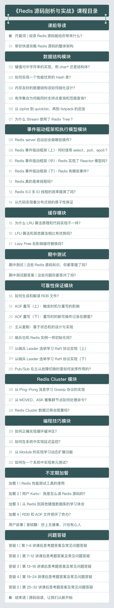
写在最后
万事开头难，对于阅读源码来说，尤其是这样。Redis 有上百个源码文件，源码文件中的代码动辄上千行。如果想彻底掌握 Redis 源码，的确需要花大量的精力和时间。
但是，掌握一个好方法，是成功做好一件事的关键。所以，在跟随学习 Redis 源码的过程中，希望你能掌握好我给出的三个学习要点：
- 获得代码全景图；
- 在阅读代码前确定具体学习目标，并做好原理准备；
- 在阅读代码时，先梳理出代码的主线逻辑，再详细学习分支细节。
最后，我还想正式认识一下你。你可以在留言区做个自我介绍，和我聊聊你目前使用 Redis 或阅读 Redis 的源码时，都存在哪些困难，或是都有哪些独特的思考和体验，我们一起交流讨论。
好了，让我们一起努力，开始 Redis 代码之旅吧。
01 带你快速攻略Redis源码的整体架构
从今天这节课开始，我们将开启“Redis 代码之旅”，一起来掌握 Redis 的核心设计思想。
不过，在正式开始我们的旅程之前，还需要先做个“攻略”，也就是要了解和掌握 Redis 代码的整体架构。
这是因为，一旦掌握了 Redis 代码的整体架构，就相当于给 Redis 代码画了张全景图。有了这张图，我们再去学习 Redis 不同功能模块的设计与实现时，就可以从图上快速查找和定位这些功能模块对应的代码文件。而且，有了代码的全景图之后，我们还可以对 Redis 各方面的功能特性有个全面了解，这样也便于更加全面地掌握 Redis 的功能，而不会遗漏某一特性。
那么，我们究竟该如何学习 Redis 的代码架构呢？我的建议是要掌握以下两方面内容：
- 代码的目录结构和作用划分，目的是理解 Redis 代码的整体架构，以及所包含的代码功能类别；
- 系统功能模块与对应代码文件，目的是了解 Redis 实例提供的各项功能及其相应的实现文件，以便后续深入学习。
实际上，当你掌握了以上两方面的内容之后，即使你要去了解和学习其他软件系统的代码架构，你都可以按照“先面后点”的方法来推进。也就是说，先了解目录结构与作用类别，再对应功能模块与实现文件，这样可以帮助你快速地掌握一个软件系统的代码全景。
所以，在后续的学习过程中，你要仔细跟住我的脚步，并且手边最好能备着一台可以方便查看源码的电脑，针对我提到的源码文件、关键模块或是代码运行，一定要实际阅读一遍或是实操一遍，这样你就能对 Redis 的代码架构建立更深刻的认识。
好了，话不多说，下面我们就一起来完成 Redis 代码之旅的攻略吧。
Redis 目录结构
首先，我们来了解下 Redis 的目录结构。
为什么要从目录结构开始了解呢？其实，这是我自己阅读代码的一个小诀窍：在学习一个大型系统软件的代码时，要想快速地对代码有个初步认知，了解系统源码的整体目录结构就是一个行之有效的方法。这是因为，系统开发者通常会把完成同一或相近功能的代码文件，按目录结构来组织。能划归到同一个目录下的代码文件，一般都是具有相近功能目标的。
所以，从代码的目录结构开始学习，可以让我们从目录命名和目录层次结构中，直接了解到一个系统的主要组成部分。
那么对于 Redis 来说，在它的源码总目录下，一共包含了deps、src、tests、utils四个子目录，这四个子目录分别对应了 Redis 中发挥不同作用的代码，下面我们具体来看看。
deps 目录
这个目录主要包含了 Redis 依赖的第三方代码库，包括 Redis 的 C 语言版本客户端代码 hiredis、jemalloc 内存分配器代码、readline 功能的替代代码 linenoise，以及 lua 脚本代码。
这部分代码的一个显著特点，就是它们可以独立于 Redis src 目录下的功能源码进行编译，也就是说，它们可以独立于 Redis 存在和发展。下面这张图显示了 deps 目录下的子目录内容。

那么，为什么在 Redis 源码结构中会有第三方代码库目录呢？其实主要有两方面的原因。
一方面，Redis 作为一个用 C 语言写的用户态程序，它的不少功能是依赖于标准的 glibc 库提供的，比如内存分配、行读写（readline）、文件读写、子进程 / 线程创建等。但是，glibc 库提供的某些功能实现，效率并不高。
我举个简单的例子，glibc 库中实现的内存分配器的性能就不是很高，它的内存碎片化情况也比较严重。因此为了避免对系统性能产生影响，Redis 使用了 jemalloc 库替换了 glibc 库的内存分配器。可是，jemalloc 库本身又不属于 Redis 系统自身的功能，把它和 Redis 功能源码放在一个目录下并不合适，所以，Redis 使用了专门的 deps 目录来保存这部分代码。
另一方面，有些功能是 Redis 运行所需要的，但是这部分功能又会独立于 Redis 进行开发和演进。这种类型最为典型的功能代码，就是 Redis 的客户端代码。
Redis 作为 Client-Server 架构的系统，访问 Redis 离不开客户端的支撑。此外，Redis 自身功能中的命令行 redis-cli、基准测试程序 redis-benchmark 以及哨兵，都需要用到客户端来访问 Redis 实例。
不过你应该也清楚，针对客户端的开发，只要保证客户端和实例交互的过程满足 RESP 协议就行，客户端和实例的功能可以各自迭代演进。所以在 Redis 源码结构中，C 语言版本的客户端 hiredis，就被放到了 deps 目录中，以便开发人员自行开发和改进客户端功能。
好了，总而言之，对于 deps 目录来说，你只需要记住它主要存放了三类代码：一是 Redis 依赖的、实现更加高效的功能库，如内存分配；二是独立于 Redis 开发演进的代码，如客户端；三是 lua 脚本代码。后续你在学习这些功能的设计实现时，就可以在 deps 目录找到它们。
src 目录
这个目录里面包含了 Redis 所有功能模块的代码文件，也是 Redis 源码的重要组成部分。同样，我们先来看下 src 目录下的子目录结构。

我们会发现，src 目录下只有一个 modules 子目录，其中包含了一个实现 Redis module 的示例代码。剩余的源码文件都是在 src 目录下，没有再分下一级子目录。
因为 Redis 的功能模块实现是典型的 C 语言风格，不同功能模块之间不再设置目录分隔，而是通过头文件包含来相互调用。这样的代码风格在基于 C 语言开发的系统软件中，也比较常见，比如 Memcached 的源码文件也是在同一级目录下。
所以，当你使用 C 语言来开发软件系统时，就可以参考 Redis 的功能源码结构，用一个扁平的目录组织所有的源码文件，这样模块相互间的引用也会很方便。
tests 目录
在软件产品的开发过程中，除了第三方依赖库和功能模块源码以外，我们通常还需要在系统源码中，添加用于功能模块测试和单元测试的代码。而在 Redis 的代码目录中，就将这部分代码用一个 tests 目录统一管理了起来。
Redis 实现的测试代码可以分成四部分，分别是单元测试（对应 unit 子目录），Redis Cluster 功能测试（对应 cluster 子目录）、哨兵功能测试（对应 sentinel 子目录）、主从复制功能测试（对应 integration 子目录）。这些子目录中的测试代码使用了 Tcl 语言（通用的脚本语言）进行编写，主要目的就是方便进行测试。
另外，每一部分的测试都是一个测试集合，覆盖了相应功能模块中的多项子功能测试。比如，在单元测试的目录中，我们可以看到有针对过期 key 的测试（expire.tcl）、惰性删除的测试（lazyfree.tcl），以及不同数据类型操作的测试（type 子目录）等。而在 Redis Cluster 功能测试的目录中，我们可以看到有针对故障切换的测试（failover.tcl）、副本迁移的测试（replica-migration.tcl）等。
不过在 tests 目录中，除了有针对特定功能模块的测试代码外，还有一些代码是用来支撑测试功能的，这些代码在 assets、helpers、modules、support 四个目录中。这里我画了这张图，展示了 tests 目录下的代码结构和层次，你可以参考下。

utils 目录
在 Redis 开发过程中，还有一些功能属于辅助性功能，包括用于创建 Redis Cluster 的脚本、用于测试 LRU 算法效果的程序，以及可视化 rehash 过程的程序。在 Redis 代码结构中，这些功能代码都被归类到了 utils 目录中统一管理。下图展示了 utils 目录下的主要子目录，你可以看下。

所以，当我们在开发系统时，就可以学习 Redis 的代码结构，也把和系统相关的辅助性功能划归到 utils 目录中统一管理。
好，除了 deps、src、tests、utils 四个子目录以外，Redis 源码总目录下其实还包含了两个重要的配置文件，一个是 Redis 实例的配置文件 redis.conf，另一个是哨兵的配置文件 sentinel.conf。当你需要查找或修改 Redis 实例或哨兵的配置时，就可以直接定位到源码总目录下。
最后呢，你也可以再次整体回顾下 Redis 源码的总体结构层次，如下图所示。

好，在了解了 Redis 的代码目录和层次以后，接下来，我们还需要重点学习下功能模块的源码文件（即 src 目录下的文件内容），这有助于我们在后续课程中学习 Redis 的相关设计思想时，能够快速找到对应的源码文件。
Redis 功能模块与源码对应
Redis 代码结构中的 src 目录，包含了实现功能模块的 123 个代码文件。在这 123 个代码文件中，对于某个功能来说，一般包括了实现该功能的 C 语言文件（.c 文件） 和对应的头文件（.h 文件）。比如，dict.c 和 dict.h 就是用于实现哈希表的 C 文件和头文件。
注意：在课程中，如果没有特殊说明，我介绍的源码都是基于 Redis 5.0.8 版本的。
那么，我们该如何将这 123 个文件和 Redis 的主要功能对应上呢？
其实，Redis 代码文件的命名非常规范，文件名中就体现了该文件实现的主要功能。比如，对于 rdb.h 和 rdb.c 这两个代码文件来说，从文件名上，你就可以看出来它们是实现内存快照 RDB 的对应代码。
所以这里，为了让你能快速定位源码，我分别按照 Redis 的服务器实例、数据库操作、可靠性和可扩展性保证、辅助功能四个维度，把 Redis 功能源码梳理成了四条代码路径。你可以根据自己想要了解的功能维度，对应地学习相关代码。
服务器实例
首先我们知道，Redis 在运行时是一个网络服务器实例，因此相应地就需要有代码实现服务器实例的初始化和主体控制流程，而这是由 server.h/server.c 实现的，Redis 整个代码的 main 入口函数也是在 server.c 中。如果你想了解 Redis 是如何开始运行的，那么就可以从 server.c 的 main 函数开始看起。
当然，对于一个网络服务器来说，它还需要提供网络通信功能。Redis 使用了基于事件驱动机制的网络通信框架，涉及的代码文件包括 ae.h/ae.c，ae_epoll.c，ae_evport.c，ae_kqueue.c，ae_select.c。关于事件驱动框架的具体设计思路与实现方法，我会在第 10 讲中给你详细介绍。
而除了事件驱动网络框架以外，与网络通信相关的功能还包括底层 TCP 网络通信和客户端实现。
Redis 对 TCP 网络通信的 Socket 连接、设置等操作进行了封装，这些封装后的函数实现在 anet.h/anet.c 中。这些函数在 Redis Cluster 创建和主从复制的过程中，会被调用并用于建立 TCP 连接。
除此之外，客户端在 Redis 的运行过程中也会被广泛使用，比如实例返回读取的数据、主从复制时在主从库间传输数据、Redis Cluster 的切片实例通信等，都会用到客户端。Redis 将客户端的创建、消息回复等功能，实现在了 networking.c 文件中，如果你想了解客户端的设计与实现，可以重点看下这个代码文件。
这里我也给你总结了与服务器实例相关的功能模块及对应的代码文件，你可以看下。

那么，在了解了 Redis 服务器实例的主要功能代码之后，我们再从 Redis 内存数据库这一特性维度，来梳理下与它相关的代码文件。
数据库数据类型与操作
Redis 数据库提供了丰富的键值对类型，其中包括了 String、List、Hash、Set 和 Sorted Set 这五种基本键值类型。此外，Redis 还支持位图、HyperLogLog、Geo 等扩展数据类型。
而为了支持这些数据类型，Redis 就使用了多种数据结构来作为这些类型的底层结构。比如，String 类型的底层数据结构是 SDS，而 Hash 类型的底层数据结构包括哈希表和压缩列表。
不过，因为 Redis 实现的底层数据结构非常多，所以这里我把这些底层结构和它们对应的键值对类型，以及相应的代码文件列在了下表中，你可以用这张表来快速定位代码文件。
除了实现了诸多的数据类型以外，Redis 作为数据库，还实现了对键值对的新增、查询、修改和删除等操作接口，这部分功能是在 db.c 文件实现的。
当然，Redis 作为内存数据库，其保存的数据量受限于内存大小。因此，内存的高效使用对于 Redis 来说就非常重要。
那么你可能就要问了：Redis 是如何优化内存使用的呢？
实际上，Redis 是从三个方面来优化内存使用的，分别是内存分配、内存回收，以及数据替换。
首先，在内存分配方面，Redis 支持使用不同的内存分配器，包括 glibc 库提供的默认分配器 tcmalloc、第三方库提供的 jemalloc。Redis 把对内存分配器的封装实现在了 zmalloc.h/zmalloc.c。
其次，在内存回收上，Redis 支持设置过期 key，并针对过期 key 可以使用不同删除策略，这部分代码实现在 expire.c 文件中。同时，为了避免大量 key 删除回收内存，会对系统性能产生影响，Redis 在 lazyfree.c 中实现了异步删除的功能，所以这样，我们就可以使用后台 IO 线程来完成删除，以避免对 Redis 主线程的影响。
最后，针对数据替换，如果内存满了，Redis 还会按照一定规则清除不需要的数据，这也是 Redis 可以作为缓存使用的原因。Redis 实现的数据替换策略有很多种，包括 LRU、LFU 等经典算法。这部分的代码实现在了 evict.c 中。
同样，这里我也把和 Redis 数据库数据类型与操作相关的功能模块及代码文件，总结成了一张图，你可以看下。

高可靠性和高可扩展性
首先，虽然 Redis 一般是作为内存数据库来使用的，但是它也提供了可靠性保证，这主要体现在 Redis 可以对数据做持久化保存，并且它还实现了主从复制机制，从而可以提供故障恢复的功能。
这部分的代码实现比较集中，主要包括以下两个部分。
- 数据持久化实现
Redis 的数据持久化实现有两种方式：内存快照 RDB 和 AOF 日志，分别实现在了 rdb.h/rdb.c 和 aof.c 中。
注意，在使用 RDB 或 AOF 对数据库进行恢复时，RDB 和 AOF 文件可能会因为 Redis 实例所在服务器宕机，而未能完整保存，进而会影响到数据库恢复。因此针对这一问题，Redis 还实现了对这两类文件的检查功能，对应的代码文件分别是 redis-check-rdb.c 和 redis-check-aof.c。
- 主从复制功能实现
Redis 把主从复制功能实现在了 replication.c 文件中。另外你还需要知道的是，Redis 的主从集群在进行恢复时，主要是依赖于哨兵机制，而这部分功能则直接实现在了 sentinel.c 文件中。
其次，与 Redis 实现高可靠性保证的功能类似，Redis 高可扩展性保证的功能，是通过 Redis Cluster 来实现的，这部分代码也非常集中，就是在 cluster.h/cluster.c 代码文件中。所以这样，我们在学习 Redis Cluster 的设计与实现时，就会非常方便，不用在不同的文件之间来回跳转了。
辅助功能
Redis 还实现了一些用于支持系统运维的辅助功能。比如，为了便于运维人员查看分析不同操作的延迟产生来源，Redis 在 latency.h/latency.c 中实现了操作延迟监控的功能；为了便于运维人员查找运行过慢的操作命令，Redis 在 slowlog.h/slowlog.c 中实现了慢命令的记录功能，等等。
此外，运维人员有时还需要了解 Redis 的性能表现，为了支持这一目标，Redis 实现了对系统进行性能评测的功能，这部分代码在 redis-benchmark.c 中。如果你想要了解如何对 Redis 开展性能测试，这个代码文件也值得一读。
小结
今天是我们了解 Redis 源码架构和设计思想的“热身课”，这里我们需要先明确一点，就是理解代码结构，可以为我们提供 Redis 功能模块的全景图，并方便我们快速查找和定位某个具体功能模块的实现源码，这样也有助于提升代码阅读的效率。
我在一开始，先给你介绍了一个小诀窍：通过目录命名和层次，来快速掌握一个系统软件的代码结构。而通过学习 Redis 的目录结构，我们也学到了一个重要的编程规范：在开发系统软件时，使用不同的目录对代码进行划分。
常见的目录包括保存第三方库的 deps 目录、保存测试用例的 tests 目录，以及辅助功能和工具的常用目录 utils 目录。按照这个规范来组织你的代码，就可以提升代码的可读性和可维护性。
另外，在学习 Redis 功能模块的代码结构时，面对 123 个代码文件，我也给你分享了一种我一直比较推崇的方法：分门别类。也就是说，按照一定的维度将所要学习的内容进行分类描述或总结。
在课程中，我是按照服务器实例、数据库数据类型与操作、高可靠与高可扩展保证，以及辅助功能四个维度，给你梳理了四条代码路径。这四条代码路径也基本涵盖了 Redis 的主要功能代码，可以方便你去有逻辑、有章法地学习掌握 Redis 源码，不至于遗漏重要代码。
那么在最后，我还想说一点，就是在你学习了 Redis 源码结构的同时，也希望你能把这个方法应用到其他的代码学习中，提高学习效率。
每课一问
Redis 从 4.0 版本开始，能够支持后台异步执行任务，比如异步删除数据，你能在 Redis 功能源码中，找到实现后台任务的代码文件么？
欢迎在留言区分享你的思考和操作过程，我们一起交流讨论。如果觉得有收获的话，也欢迎你把今天的内容分享给更多的朋友。
02 键值对中字符串的实现，用char还是结构体？
字符串在我们平时的应用开发中十分常见，比如我们要记录用户信息、商品信息、状态信息等等，这些都会用到字符串。
而对于 Redis 来说，键值对中的键是字符串，值有时也是字符串。我们在 Redis 中写入一条用户信息，记录了用户姓名、性别、所在城市等，这些都是字符串，如下所示：
SET user:id:100 {“name”: “zhangsan”, “gender”: “M”,“city”:"beijing"}
此外，Redis 实例和客户端交互的命令和数据，也都是用字符串表示的。
那么，既然字符串的使用如此广泛和关键，就使得我们在实现字符串时，需要尽量满足以下三个要求：
- 能支持丰富且高效的字符串操作，比如字符串追加、拷贝、比较、获取长度等；
- 能保存任意的二进制数据，比如图片等
- 能尽可能地节省内存开销。
其实，如果你开发过 C 语言程序，你应该就知道，在 C 语言中可以使用 * 字符数组char来实现字符串。同时，C 语言标准库 string.h 中也定义了多种字符串的操作函数，比如字符串比较函数 strcmp、字符串长度计算函数 strlen、字符串追加函数 strcat 等，这样就便于开发者直接调用这些函数来完成字符串操作。
所以这样看起来，Redis 好像完全可以复用 C 语言中对字符串的实现呀？
但实际上，我们在使用 C 语言字符串时，经常需要手动检查和分配字符串空间，而这就会增加代码开发的工作量。而且，图片等数据还无法用字符串保存，也就限制了应用范围。
那么，从系统设计的角度来看，我们该如何设计实现字符串呢？
其实，Redis 设计了简单动态字符串（Simple Dynamic String，SDS）的结构，用来表示字符串。相比于 C 语言中的字符串实现，SDS 这种字符串的实现方式，会提升字符串的操作效率，并且可以用来保存二进制数据。
所以今天这节课，我就来给你介绍下 SDS 结构的设计思想和实现技巧，这样你就既可以掌握 char* 实现方法的不足和 SDS 的优势，还能学习到紧凑型内存结构的实现技巧。如果你要在自己的系统软件中实现字符串类型，就可以参考 Redis 的设计思想，来更好地提升操作效率，节省内存开销。
好，接下来，我们先来了解下为什么 Redis 没有复用 C 语言的字符串实现方法。
为什么 Redis 不用 char*？
实际上，要想解答这个问题，我们需要先知道 char* 字符串数组的结构特点，还有 Redis 对字符串的需求是什么，所以下面我们就来具体分析一下。
char* 的结构设计
首先，我们来看看 char* 字符数组的结构。
char*字符数组的结构很简单，就是。比如，下图显示的就是字符串“redis”的char*一块连续的内存空间，依次存放了字符串中的每一个字符数组结构。

从图中可以看到，字符数组的最后一个字符是“\0”，这个字符的作用是什么呢？其实，C 语言在对字符串进行操作时，char* 指针只是指向字符数组的起始位置，而字符数组的结尾位置就用“\0”表示，意思是指字符串的结束。
这样一来，C 语言标准库中字符串的操作函数，就会通过检查字符数组中是否有“\0”，来判断字符串是否结束。比如，strlen 函数就是一种字符串操作函数，它可以返回一个字符串的长度。这个函数会遍历字符数组中的每一个字符，并进行计数，直到检查的字符为“\0”。此时，strlen 函数会停止计数，返回已经统计到的字符个数。下图显示了 strlen 函数的执行流程：

我们再通过一段代码，来看下“\0”结束字符对字符串长度的影响。这里我创建了两个字符串变量 a 和 b，分别给它们赋值为“red\0is”和“redis\0”。然后，我用 strlen 函数计算这两个字符串长度，如下所示：
#include <stdio.h>
#include <string.h>
int main()
{
char *a = "red\0is";
char *b = "redis\0";
printf("%lu\n", strlen(a));
printf("%lu\n", strlen(b));
return 0;
}
当程序执行完这段代码后，输出的结果分别是 3 和 5，表示 a 和 b 的长度分别是 3 个字符和 5 个字符。这是因为 a 中在“red”这 3 个字符后，就有了结束字符“\0”，而 b 中的结束字符是在“redis”5 个字符后。
也就是说，char* 字符串以“\0”表示字符串的结束，其实会给我们保存数据带来一定的负面影响。如果我们要保存的数据中，本身就有“\0”，那么数据在“\0”处就会被截断，而这就不符合 Redis 希望能保存任意二进制数据的需求了。
操作函数复杂度
而除了 char* 字符数组结构的设计问题以外，使用“\0”作为字符串的结束字符，虽然可以让字符串操作函数判断字符串的结束位置，但它也会带来另一方面的负面影响，也就是会导致操作函数的复杂度增加。
我还是以 strlen 函数为例，该函数需要遍历字符数组中的每一个字符，才能得到字符串长度，所以这个操作函数的复杂度是 O(N)。
我们再来看另一个常用的操作函数：字符串追加函数 strcat。strcat 函数是将一个源字符串 src 追加到一个目标字符串的末尾。该函数的代码如下所示：
char *strcat(char *dest, const char *src) {
//将目标字符串复制给tmp变量
char *tmp = dest;
//用一个while循环遍历目标字符串，直到遇到“\0”跳出循环，指向目标字符串的末尾
while(*dest)
dest++;
//将源字符串中的每个字符逐一赋值到目标字符串中，直到遇到结束字符
while((*dest++ = *src++) != '\0' )
return tmp;
}
从代码中可以看到，strcat 函数和 strlen 函数类似，复杂度都很高，也都需要先通过遍历字符串才能得到目标字符串的末尾。然后对于 strcat 函数来说，还要再遍历源字符串才能完成追加。另外，它在把源字符串追加到目标字符串末尾时，还需要确认目标字符串具有足够的可用空间，否则就无法追加。
所以，这就要求开发人员在调用 strcat 时，要保证目标字符串有足够的空间，不然就需要开发人员动态分配空间，从而增加了编程的复杂度。而操作函数的复杂度一旦增加，就会影响字符串的操作效率，这就不符合 Redis 对字符串高效操作的需求了。
好了，综合以上在 C 语言中使用 char* 实现字符串的两大不足之处以后，我们现在就需要找到新的实现字符串的方式了。所以接下来，我们就来学习下，Redis 是如何对字符串的实现进行设计考虑的。
SDS 的设计思想
因为 Redis 是使用 C 语言开发的，所以为了保证能尽量复用 C 标准库中的字符串操作函数，Redis 保留了使用字符数组来保存实际的数据。但是，和 C 语言仅用字符数组不同，Redis 还专门设计了 SDS（即简单动态字符串）的数据结构。下面我们一起来看看。
SDS 结构设计
首先，SDS 结构里包含了一个字符数组 buf[]，用来保存实际数据。同时，SDS 结构里还包含了三个元数据，分别是字符数组现有长度 len、分配给字符数组的空间长度 alloc，以及 SDS 类型 flags。其中，Redis 给 len 和 alloc 这两个元数据定义了多种数据类型，进而可以用来表示不同类型的 SDS，稍后我会给你具体介绍。下图显示了 SDS 的结构，你可以先看下。

另外，如果你在 Redis 源码中查找过 SDS 的定义，那你可能会看到，Redis 使用 typedef 给 char* 类型定义了一个别名，这个别名就是 sds，如下所示：
typedef char *sds;
其实，这是因为 SDS 本质还是字符数组，只是在字符数组基础上增加了额外的元数据。在 Redis 中需要用到字符数组时，就直接使用 sds 这个别名。
同时，在创建新的字符串时，Redis 会调用 SDS 创建函数 sdsnewlen。sdsnewlen 函数会新建 sds 类型变量（也就是 char* 类型变量），并新建 SDS 结构体，把 SDS 结构体中的数组 buf[] 赋给 sds 类型变量。最后，sdsnewlen 函数会把要创建的字符串拷贝给 sds 变量。下面的代码就显示了 sdsnewlen 函数的这个操作逻辑，你可以看下。
sds sdsnewlen(const void *init, size_t initlen) {
void *sh; //指向SDS结构体的指针
sds s; //sds类型变量，即char*字符数组
...
sh = s_malloc(hdrlen+initlen+1); //新建SDS结构，并分配内存空间
...
s = (char*)sh+hdrlen; //sds类型变量指向SDS结构体中的buf数组，sh指向SDS结构体起始位置，hdrlen是SDS结构体中元数据的长度
...
if (initlen && init)
memcpy(s, init, initlen); //将要传入的字符串拷贝给sds变量s
s[initlen] = '\0'; //变量s末尾增加\0，表示字符串结束
return s;
好了，了解了 SDS 结构的定义后，我们再来看看，相比传统 C 语言字符串，SDS 操作效率的改进之处。
SDS 操作效率
因为 SDS 结构中记录了字符数组已占用的空间和被分配的空间，这就比传统 C 语言实现的字符串能带来更高的操作效率。
我还是以字符串追加操作为例。Redis 中实现字符串追加的函数是 sds.c 文件中的 sdscatlen 函数。这个函数的参数一共有三个，分别是目标字符串 s、源字符串 t 和要追加的长度 len，源码如下所示：
sds sdscatlen(sds s, const void *t, size_t len) {
//获取目标字符串s的当前长度
size_t curlen = sdslen(s);
//根据要追加的长度len和目标字符串s的现有长度，判断是否要增加新的空间
s = sdsMakeRoomFor(s,len);
if (s == NULL) return NULL;
//将源字符串t中len长度的数据拷贝到目标字符串结尾
memcpy(s+curlen, t, len);
//设置目标字符串的最新长度：拷贝前长度curlen加上拷贝长度
sdssetlen(s, curlen+len);
//拷贝后，在目标字符串结尾加上\0
s[curlen+len] = '\0';
return s;
}
通过分析这个函数的源码，我们可以看到 sdscatlen 的实现较为简单，其执行过程分为三步：
- 首先，获取目标字符串的当前长度，并调用 sdsMakeRoomFor 函数，根据当前长度和要追加的长度，判断是否要给目标字符串新增空间。这一步主要是保证，目标字符串有足够的空间接收追加的字符串。
- 其次，在保证了目标字符串的空间足够后，将源字符串中指定长度 len 的数据追加到目标字符串。
- 最后，设置目标字符串的最新长度。
我画了一张图，显示了 sdscatlen 的执行过程，你可以看下。

所以，到这里你就能发现，和 C 语言中的字符串操作相比，SDS 通过记录字符数组的使用长度和分配空间大小，避免了对字符串的遍历操作，降低了操作开销，进一步就可以帮助诸多字符串操作更加高效地完成，比如创建、追加、复制、比较等，这一设计思想非常值得我们学习。
此外，SDS 把目标字符串的空间检查和扩容封装在了 sdsMakeRoomFor 函数中，并且在涉及字符串空间变化的操作中，如追加、复制等，会直接调用该函数。
这一设计实现，就避免了开发人员因忘记给目标字符串扩容，而导致操作失败的情况。比如，我们使用函数 strcpy (char *dest, const char *src) 时，如果 src 的长度大于 dest 的长度，代码中我们也没有做检查的话，就会造成内存溢出。所以这种封装操作的设计思想，同样值得我们学习。
那么，除了使用元数据记录字符串数组长度和封装操作的设计思想，SDS 还有什么优秀的设计与实现值得我们学习呢？这就和我刚才给你介绍的 Redis 对内存节省的需求相关了。
所以接下来，我们就来看看 SDS 在编程技巧上是如何实现节省内存的。
紧凑型字符串结构的编程技巧
前面我提到，SDS 结构中有一个元数据 flags，表示的是 SDS 类型。事实上，SDS 一共设计了 5 种类型，分别是 sdshdr5、sdshdr8、sdshdr16、sdshdr32 和 sdshdr64。这 5 种类型的主要区别就在于，它们数据结构中的字符数组现有长度 len 和分配空间长度 alloc，这两个元数据的数据类型不同。
因为 sdshdr5 这一类型 Redis 已经不再使用了，所以我们这里主要来了解下剩余的 4 种类型。以 sdshdr8 为例，它的定义如下所示：
struct __attribute__ ((__packed__)) sdshdr8 {
uint8_t len; /* 字符数组现有长度*/
uint8_t alloc; /* 字符数组的已分配空间，不包括结构体和\0结束字符*/
unsigned char flags; /* SDS类型*/
char buf[]; /*字符数组*/
};
我们可以看到，现有长度 len 和已分配空间 alloc 的数据类型都是 uint8_t。uint8_t 是 8 位无符号整型，会占用 1 字节的内存空间。当字符串类型是 sdshdr8 时，它能表示的字符数组长度（包括数组最后一位\0）不会超过 256 字节（2 的 8 次方等于 256）。
而对于 sdshdr16、sdshdr32、sdshdr64 三种类型来说，它们的 len 和 alloc 数据类型分别是 uint16_t、uint32_t、uint64_t，即它们能表示的字符数组长度，分别不超过 2 的 16 次方、32 次方和 64 次方。这两个元数据各自占用的内存空间在 sdshdr16、sdshdr32、sdshdr64 类型中，则分别是 2 字节、4 字节和 8 字节。
实际上，SDS 之所以设计不同的结构头（即不同类型），是为了能灵活保存不同大小的字符串，从而有效节省内存空间。因为在保存不同大小的字符串时，结构头占用的内存空间也不一样，这样一来，在保存小字符串时，结构头占用空间也比较少。
否则，假设 SDS 都设计一样大小的结构头，比如都使用 uint64_t 类型表示 len 和 alloc，那么假设要保存的字符串是 10 个字节，而此时结构头中 len 和 alloc 本身就占用了 16 个字节了，比保存的数据都多了。所以这样的设计对内存并不友好，也不满足 Redis 节省内存的需求。
好了，除了设计不同类型的结构头，Redis 在编程上还使用了专门的编译优化来节省内存空间。在刚才介绍的 sdshdr8 结构定义中，我们可以看到，在 struct 和 sdshdr8 之间使用了attribute ((packed))，如下所示：
struct __attribute__ ((__packed__)) sdshdr8
其实这里，attribute ((packed))的作用就是告诉编译器，在编译 sdshdr8 结构时，不要使用字节对齐的方式，而是采用紧凑的方式分配内存。这是因为在默认情况下，编译器会按照 8 字节对齐的方式，给变量分配内存。也就是说，即使一个变量的大小不到 8 个字节，编译器也会给它分配 8 个字节。
为了方便你理解，我给你举个例子。假设我定义了一个结构体 s1，它有两个成员变量，类型分别是 char 和 int，如下所示：
#include <stdio.h>
int main() {
struct s1 {
char a;
int b;
} ts1;
printf("%lu\n", sizeof(ts1));
return 0;
}
虽然 char 类型占用 1 个字节，int 类型占用 4 个字节，但是如果你运行这段代码，就会发现打印出来的结果是 8。这就是因为在默认情况下，编译器会给 s1 结构体分配 8 个字节的空间，而这样其中就有 3 个字节被浪费掉了。
为了节省内存，Redis 在这方面的设计上可以说是精打细算的。所以，Redis 采用了attribute ((packed))属性定义结构体，这样一来，结构体实际占用多少内存空间，编译器就分配多少空间。
比如，我用attribute ((packed))属性定义结构体 s2，同样包含 char 和 int 两个类型的成员变量，代码如下所示：
#include <stdio.h>
int main() {
struct __attribute__((packed)) s2{
char a;
int b;
} ts2;
printf("%lu\n", sizeof(ts2));
return 0;
}
当你运行这段代码时，你可以看到，打印的结果是 5，表示编译器用了紧凑型内存分配，s2 结构体只占用 5 个字节的空间。
好了，总而言之，如果你在开发程序时，希望能节省数据结构的内存开销，就可以把attribute ((packed))这个编程方法用起来。
小结
这节课我主要给你介绍了 Redis 中字符串的设计与实现。你要知道，字符串的实现需要考虑操作高效、能保存任意二进制数据，以及节省内存的需求。而 Redis 中设计实现字符串的方式，就非常值得你学习和借鉴。
因此这节课，你需要重点关注三个要点，分别是：
- C 语言中使用 char* 实现字符串的不足，主要是因为使用“\0”表示字符串结束，操作时需遍历字符串，效率不高，并且无法完整表示包含“\0”的数据，因而这就无法满足 Redis 的需求。
- Redis 中字符串的设计思想与实现方法。Redis 专门设计了 SDS 数据结构，在字符数组的基础上，增加了字符数组长度和分配空间大小等元数据。这样一来，需要基于字符串长度进行的追加、复制、比较等操作，就可以直接读取元数据，效率也就提升了。而且，SDS 不通过字符串中的“\0”字符判断字符串结束，而是直接将其作为二进制数据处理，可以用来保存图片等二进制数据。
- SDS 中是通过设计不同 SDS 类型来表示不同大小的字符串，并使用attribute ((packed))这个编程小技巧，来实现紧凑型内存布局，达到节省内存的目的。
字符串看起来简单，但通过今天这节课的学习，你可以看到实现字符串有很多需要精巧设计的地方。C 语言字符串的实现方法和 SDS 的联系与区别，也是 Redis 面试时经常会被问到的问题，所以我也希望你能通过今天这节课，掌握好它俩的区别。
每课一问
SDS 字符串在 Redis 内部模块实现中也被广泛使用，你能在 Redis server 和客户端的实现中，找到使用 SDS 字符串的地方么？
欢迎在留言区分享你的思考和操作过程，我们一起交流讨论。如果觉得有收获，也欢迎你把今天的内容分享给更多的朋友。
03 如何实现一个性能优异的Hash表？
今天，我们来聊聊 Redis 中的 Hash。
我们知道，Hash 表是一种非常关键的数据结构，在计算机系统中发挥着重要作用。比如在 Memcached 中，Hash 表被用来索引数据；在数据库系统中，Hash 表被用来辅助 SQL 查询。而对于 Redis 键值数据库来说，Hash 表既是键值对中的一种值类型，同时，Redis 也使用一个全局 Hash 表来保存所有的键值对，从而既满足应用存取 Hash 结构数据需求，又能提供快速查询功能。
那么，Hash 表应用如此广泛的一个重要原因，就是从理论上来说，它能以 O(1) 的复杂度快速查询数据。Hash 表通过 Hash 函数的计算，就能定位数据在表中的位置，紧接着可以对数据进行操作，这就使得数据操作非常快速。
Hash 表这个结构也并不难理解，但是在实际应用 Hash 表时，当数据量不断增加，它的性能就经常会受到哈希冲突和 rehash 开销的影响。而这两个问题的核心，其实都来自于 Hash 表要保存的数据量，超过了当前 Hash 表能容纳的数据量。
那么要如何应对这两个问题呢？事实上，这也是在大厂面试中，面试官经常会考核的问题。所以你现在可以先想想，如果你在面试中遇到了这两个问题，你会怎么回答呢？
OK，思考先到这里，现在我来告诉你 Redis 是怎么很好地解决这两个问题的。
Redis 为我们提供了一个经典的 Hash 表实现方案。针对哈希冲突，Redis 采用了链式哈希，在不扩容哈希表的前提下，将具有相同哈希值的数据链接起来，以便这些数据在表中仍然可以被查询到；对于 rehash 开销，Redis 实现了渐进式 rehash 设计，进而缓解了 rehash 操作带来的额外开销对系统的性能影响。
所以这节课，我就带你来学习 Redis 中针对 Hash 表的设计思路和实现方法，帮助你掌握应对哈希冲突和优化 rehash 操作性能的能力，并以此支撑你在实际使用 Hash 表保存大量数据的场景中，可以实现高性能的 Hash 表。
好了，接下来，我们就先来聊聊链式哈希的设计与实现。
Redis 如何实现链式哈希？
不过，在开始学习链式哈希的设计实现之前，我们还需要明白 Redis 中 Hash 表的结构设计是啥样的，以及为何会在数据量增加时产生哈希冲突，这样也更容易帮助我们理解链式哈希应对哈希冲突的解决思路。
什么是哈希冲突？
实际上，一个最简单的 Hash 表就是一个数组，数组里的每个元素是一个哈希桶（也叫做 Bucket），第一个数组元素被编为哈希桶 0，以此类推。当一个键值对的键经过 Hash 函数计算后，再对数组元素个数取模，就能得到该键值对对应的数组元素位置，也就是第几个哈希桶。
如下图所示，key1 经过哈希计算和哈希值取模后，就对应哈希桶 1，类似的，key3 和 key16 分别对应哈希桶 7 和桶 4。
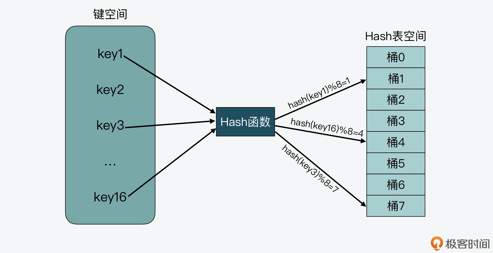
从图上我们还可以看到，需要写入 Hash 表的键空间一共有 16 个键，而 Hash 表的空间大小只有 8 个元素，这样就会导致有些键会对应到相同的哈希桶中。
我们在实际应用 Hash 表时，其实一般很难预估要保存的数据量，如果我们一开始就创建一个非常大的哈希表，当数据量较小时，就会造成空间浪费。所以，我们通常会给哈希表设定一个初始大小，而当数据量增加时，键空间的大小就会大于 Hash 表空间大小了。
也正是由于键空间会大于 Hash 表空间，这就导致在用 Hash 函数把键映射到 Hash 表空间时，不可避免地会出现不同的键被映射到数组的同一个位置上。而如果同一个位置只能保存一个键值对，就会导致 Hash 表保存的数据非常有限，这就是我们常说的哈希冲突。
比如下图中，key3 和 key100 都被映射到了 Hash 表的桶 5 中，这样，当桶 5 只能保存一个 key 时，key3 和 key100 就会有一个 key 无法保存到哈希表中了。
那么我们该如何解决哈希冲突呢？可以考虑使用以下两种解决方案：
- 第一种方案，就是我接下来要给你介绍的链式哈希。这里你需要先知道，链式哈希的链不能太长，否则会降低 Hash 表性能。
- 第二种方案，就是当链式哈希的链长达到一定长度时，我们可以使用 rehash。不过，执行 rehash 本身开销比较大，所以就需要采用我稍后会给你介绍的渐进式 rehash 设计。
这里，我们先来了解链式哈希的设计和实现。
链式哈希如何设计与实现？
所谓的链式哈希，就是用一个链表把映射到 Hash 表同一桶中的键给连接起来。下面我们就来看看 Redis 是如何实现链式哈希的，以及为何链式哈希能够帮助解决哈希冲突。
首先，我们需要了解 Redis 源码中对 Hash 表的实现。Redis 中和 Hash 表实现相关的文件主要是 dict.h 和 dict.c。其中，dict.h 文件定义了 Hash 表的结构、哈希项，以及 Hash 表的各种操作函数，而 dict.c 文件包含了 Hash 表各种操作的具体实现代码。
在 dict.h 文件中，Hash 表被定义为一个二维数组（dictEntry **table），这个数组的每个元素是一个指向哈希项（dictEntry）的指针。下面的代码展示的就是在 dict.h 文件中对 Hash 表的定义，你可以看下：
typedef struct dictht {
dictEntry **table; //二维数组
unsigned long size; //Hash表大小
unsigned long sizemask;
unsigned long used;
} dictht;
那么为了实现链式哈希， Redis 在每个 dictEntry 的结构设计中，除了包含指向键和值的指针，还包含了指向下一个哈希项的指针。如下面的代码所示，dictEntry 结构体中包含了指向另一个 dictEntry 结构的指针 *next，这就是用来实现链式哈希的：
typedef struct dictEntry {
void *key;
union {
void *val;
uint64_t u64;
int64_t s64;
double d;
} v;
struct dictEntry *next;
} dictEntry;
除了用于实现链式哈希的指针外，这里还有一个值得注意的地方，就是在 dictEntry 结构体中，键值对的值是由一个联合体 v 定义的。这个联合体 v 中包含了指向实际值的指针 *val，还包含了无符号的 64 位整数、有符号的 64 位整数，以及 double 类的值。
我之所以要提醒你注意这里，其实是为了说明，这种实现方法是一种节省内存的开发小技巧，非常值得学习。因为当值为整数或双精度浮点数时，由于其本身就是 64 位，就可以不用指针指向了，而是可以直接存在键值对的结构体中，这样就避免了再用一个指针，从而节省了内存空间。
好了，那么到这里，你应该就了解了 Redis 中链式哈希的实现，不过现在你可能还是不太明白，为什么这种链式哈希可以帮助解决哈希冲突呢？
别着急，我就拿刚才的例子来说明一下，key3 和 key100 都被映射到了 Hash 表的桶 5 中。而当使用了链式哈希，桶 5 就不会只保存 key3 或 key100，而是会用一个链表把 key3 和 key100 连接起来，如下图所示。当有更多的 key 被映射到桶 5 时，这些 key 都可以用链表串接起来，以应对哈希冲突。
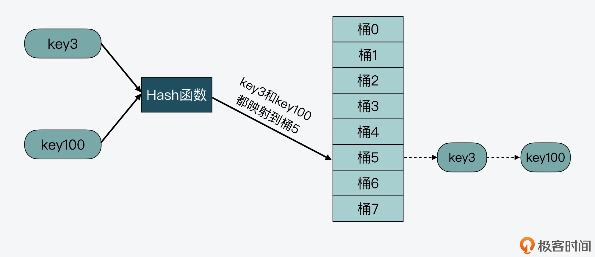
这样，当我们要查询 key100 时，可以先通过哈希函数计算，得到 key100 的哈希值被映射到了桶 5 中。然后，我们再逐一比较桶 5 中串接的 key，直到查找到 key100。如此一来，我们就能在链式哈希中找到所查的哈希项了。
不过，链式哈希也存在局限性，那就是随着链表长度的增加，Hash 表在一个位置上查询哈希项的耗时就会增加，从而增加了 Hash 表的整体查询时间，这样也会导致 Hash 表的性能下降。
那么，有没有什么其他的方法可以减少对 Hash 表性能的影响呢？当然是有的，这就是接下来我要给你介绍的 rehash 的设计与实现了。
Redis 如何实现 rehash？
rehash 操作，其实就是指扩大 Hash 表空间。而 Redis 实现 rehash 的基本思路是这样的：
- 首先，Redis 准备了两个哈希表，用于 rehash 时交替保存数据。
我在前面给你介绍过，Redis 在 dict.h 文件中使用 dictht 结构体定义了 Hash 表。不过，在实际使用 Hash 表时，Redis 又在 dict.h 文件中，定义了一个 dict 结构体。这个结构体中有一个数组（ht[2]），包含了两个 Hash 表 ht[0]和 ht[1]。dict 结构体的代码定义如下所示：
typedef struct dict {
…
dictht ht[2]; //两个Hash表，交替使用，用于rehash操作
long rehashidx; //Hash表是否在进行rehash的标识，-1表示没有进行rehash
…
} dict;
- 其次，在正常服务请求阶段，所有的键值对写入哈希表 ht[0]。
- 接着，当进行 rehash 时，键值对被迁移到哈希表 ht[1]中。
- 最后，当迁移完成后，ht[0]的空间会被释放，并把 ht[1]的地址赋值给 ht[0]，ht[1]的表大小设置为 0。这样一来，又回到了正常服务请求的阶段，ht[0]接收和服务请求，ht[1]作为下一次 rehash 时的迁移表。
这里我画了一张图，以便于你理解 ht[0]和 ht[1]交替使用的过程。
好，那么在了解了 Redis 交替使用两个 Hash 表实现 rehash 的基本思路后，我们还需要明确的是：在实现 rehash 时，都需要解决哪些问题？我认为主要有以下三点：
- 什么时候触发 rehash？
- rehash 扩容扩多大？
- rehash 如何执行？
所以下面，我就带你来逐一学习 Redis 对这三个问题的代码实现，通过代码实现，你就能明晰 Redis 针对这三个问题的设计思想了。
什么时候触发 rehash？
首先要知道，Redis 用来判断是否触发 rehash 的函数是** _dictExpandIfNeeded**。所以接下来我们就先看看，_dictExpandIfNeeded 函数中进行扩容的触发条件；然后，我们再来了解下 _dictExpandIfNeeded 又是在哪些函数中被调用的。
实际上，_dictExpandIfNeeded 函数中定义了三个扩容条件。
- 条件一：ht[0]的大小为 0。
- 条件二：ht[0]承载的元素个数已经超过了 ht[0]的大小，同时 Hash 表可以进行扩容。
- 条件三：ht[0]承载的元素个数，是 ht[0]的大小的 dict_force_resize_ratio 倍，其中，dict_force_resize_ratio 的默认值是 5。
下面的代码就展示了 _dictExpandIfNeeded 函数对这三个条件的定义，你可以看下。
//如果Hash表为空，将Hash表扩为初始大小
if (d->ht[0].size == 0)
return dictExpand(d, DICT_HT_INITIAL_SIZE);
//如果Hash表承载的元素个数超过其当前大小，并且可以进行扩容，或者Hash表承载的元素个数已是当前大小的5倍
if (d->ht[0].used >= d->ht[0].size &&(dict_can_resize ||
d->ht[0].used/d->ht[0].size > dict_force_resize_ratio))
{
return dictExpand(d, d->ht[0].used*2);
}
那么，对于条件一来说，此时 Hash 表是空的，所以 Redis 就需要将 Hash 表空间设置为初始大小，而这是初始化的工作，并不属于 rehash 操作。
而条件二和三就对应了 rehash 的场景。因为在这两个条件中，都比较了 Hash 表当前承载的元素个数（d->ht[0].used）和 Hash 表当前设定的大小（d->ht[0].size），这两个值的比值一般称为负载因子（load factor）。也就是说，Redis 判断是否进行 rehash 的条件，就是看 load factor 是否大于等于 1 和是否大于 5。
实际上，当 load factor 大于 5 时，就表明 Hash 表已经过载比较严重了，需要立刻进行库扩容。而当 load factor 大于等于 1 时，Redis 还会再判断 dict_can_resize 这个变量值，查看当前是否可以进行扩容。
你可能要问了，这里的 dict_can_resize 变量值是啥呀？其实，这个变量值是在 dictEnableResize 和 dictDisableResize 两个函数中设置的，它们的作用分别是启用和禁止哈希表执行 rehash 功能，如下所示：
void dictEnableResize(void) {
dict_can_resize = 1;
}
void dictDisableResize(void) {
dict_can_resize = 0;
}
然后，这两个函数又被封装在了 updateDictResizePolicy 函数中。
updateDictResizePolicy 函数是用来启用或禁用 rehash 扩容功能的，这个函数调用 dictEnableResize 函数启用扩容功能的条件是：当前没有 RDB 子进程，并且也没有 AOF 子进程。这就对应了 Redis 没有执行 RDB 快照和没有进行 AOF 重写的场景。你可以参考下面给出的代码：
void updateDictResizePolicy(void) {
if (server.rdb_child_pid == -1 && server.aof_child_pid == -1)
dictEnableResize();
else
dictDisableResize();
}
好，到这里我们就了解了 _dictExpandIfNeeded 对 rehash 的判断触发条件，那么现在，我们再来看下 Redis 会在哪些函数中，调用 _dictExpandIfNeeded 进行判断。
首先，通过在dict.c文件中查看 _dictExpandIfNeeded 的被调用关系，我们可以发现，_dictExpandIfNeeded 是被 _dictKeyIndex 函数调用的，而 _dictKeyIndex 函数又会被 dictAddRaw 函数调用，然后 dictAddRaw 会被以下三个函数调用。
- dictAdd：用来往 Hash 表中添加一个键值对。
- dictRelace：用来往 Hash 表中添加一个键值对，或者键值对存在时，修改键值对。
- dictAddorFind：直接调用 dictAddRaw。
因此，当我们往 Redis 中写入新的键值对或是修改键值对时，Redis 都会判断下是否需要进行 rehash。这里你可以参考下面给出的示意图，其中就展示了 _dictExpandIfNeeded 被调用的关系。
好了，简而言之，Redis 中触发 rehash 操作的关键，就是 _dictExpandIfNeeded 函数和 updateDictResizePolicy 函数。_dictExpandIfNeeded 函数会根据 Hash 表的负载因子以及能否进行 rehash 的标识，判断是否进行 rehash，而 updateDictResizePolicy 函数会根据 RDB 和 AOF 的执行情况，启用或禁用 rehash。
接下来，我们继续探讨 Redis 在实现 rehash 时，要解决的第二个问题：rehash 扩容扩多大？
rehash 扩容扩多大？
在 Redis 中，rehash 对 Hash 表空间的扩容是通过调用 dictExpand 函数来完成的。dictExpand 函数的参数有两个，一个是要扩容的 Hash 表，另一个是要扩到的容量，下面的代码就展示了 dictExpand 函数的原型定义：
int dictExpand(dict *d, unsigned long size);
那么，对于一个 Hash 表来说，我们就可以根据前面提到的 _dictExpandIfNeeded 函数，来判断是否要对其进行扩容。而一旦判断要扩容，Redis 在执行 rehash 操作时，对 Hash 表扩容的思路也很简单，就是如果当前表的已用空间大小为 size，那么就将表扩容到 size2 的大小。
如下所示，当 _dictExpandIfNeeded 函数在判断了需要进行 rehash 后，就调用 dictExpand 进行扩容。这里你可以看到，rehash 的扩容大小是当前 ht[0]已使用大小的 2 倍。
dictExpand(d, d->ht[0].used*2);
而在 dictExpand 函数中，具体执行是由 _dictNextPower 函数完成的，以下代码显示的 Hash 表扩容的操作，就是从 Hash 表的初始大小（DICT_HT_INITIAL_SIZE），不停地乘以 2，直到达到目标大小。
static unsigned long _dictNextPower(unsigned long size)
{
//哈希表的初始大小
unsigned long i = DICT_HT_INITIAL_SIZE;
//如果要扩容的大小已经超过最大值，则返回最大值加1
if (size >= LONG_MAX) return LONG_MAX + 1LU;
//扩容大小没有超过最大值
while(1) {
//如果扩容大小大于等于最大值，就返回截至当前扩到的大小
if (i >= size)
return i;
//每一步扩容都在现有大小基础上乘以2
i *= 2;
}
}
好，下面我们再来看看 Redis 要解决的第三个问题，即 rehash 要如何执行？而这个问题，本质上就是 Redis 要如何实现渐进式 rehash 设计。
渐进式 rehash 如何实现？
那么这里，我们要先搞清楚一个问题，就是为什么要实现渐进式 rehash？
其实这是因为，Hash 表在执行 rehash 时，由于 Hash 表空间扩大，原本映射到某一位置的键可能会被映射到一个新的位置上，因此，很多键就需要从原来的位置拷贝到新的位置。而在键拷贝时，由于 Redis 主线程无法执行其他请求，所以键拷贝会阻塞主线程，这样就会产生 rehash 开销。
而为了降低 rehash 开销，Redis 就提出了渐进式 rehash 的方法。
简单来说，渐进式 rehash 的意思就是 Redis 并不会一次性把当前 Hash 表中的所有键，都拷贝到新位置，而是会分批拷贝，每次的键拷贝只拷贝 Hash 表中一个 bucket 中的哈希项。这样一来，每次键拷贝的时长有限，对主线程的影响也就有限了。
那么，渐进式 rehash 在代码层面是如何实现的呢？这里有两个关键函数：dictRehash 和 _dictRehashStep。
我们先来看 dictRehash 函数，这个函数实际执行键拷贝，它的输入参数有两个，分别是全局哈希表（即前面提到的 dict 结构体，包含了 ht[0]和 ht[1]）和需要进行键拷贝的桶数量（bucket 数量）。
dictRehash 函数的整体逻辑包括两部分：
- 首先，该函数会执行一个循环，根据要进行键拷贝的 bucket 数量 n，依次完成这些 bucket 内部所有键的迁移。当然，如果 ht[0]哈希表中的数据已经都迁移完成了，键拷贝的循环也会停止执行。
- 其次，在完成了 n 个 bucket 拷贝后，dictRehash 函数的第二部分逻辑，就是判断 ht[0]表中数据是否都已迁移完。如果都迁移完了，那么 ht[0]的空间会被释放。因为 Redis 在处理请求时，代码逻辑中都是使用 ht[0]，所以当 rehash 执行完成后，虽然数据都在 ht[1]中了，但 Redis 仍然会把 ht[1]赋值给 ht[0]，以便其他部分的代码逻辑正常使用。
- 而在 ht[1]赋值给 ht[0]后，它的大小就会被重置为 0，等待下一次 rehash。与此同时，全局哈希表中的 rehashidx 变量会被标为 -1，表示 rehash 结束了（这里的 rehashidx 变量用来表示 rehash 的进度，稍后我会给你具体解释）。
我画了下面这张图，展示了 dictRehash 的主要执行流程，你可以看下。
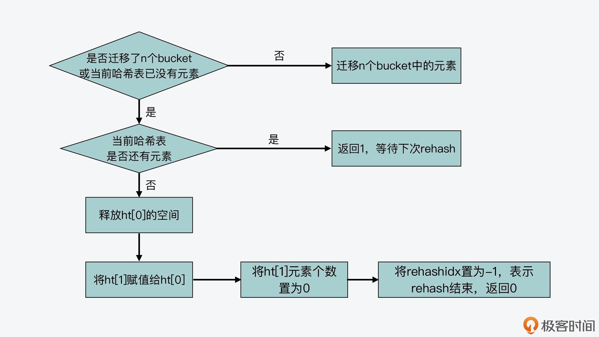
同时，你也可以通过下面代码，来了解 dictRehash 函数的主要执行逻辑。
int dictRehash(dict *d, int n) {
int empty_visits = n*10;
...
//主循环，根据要拷贝的bucket数量n，循环n次后停止或ht[0]中的数据迁移完停止
while(n-- && d->ht[0].used != 0) {
...
}
//判断ht[0]的数据是否迁移完成
if (d->ht[0].used == 0) {
//ht[0]迁移完后，释放ht[0]内存空间
zfree(d->ht[0].table);
//让ht[0]指向ht[1]，以便接受正常的请求
d->ht[0] = d->ht[1];
//重置ht[1]的大小为0
_dictReset(&d->ht[1]);
//设置全局哈希表的rehashidx标识为-1，表示rehash结束
d->rehashidx = -1;
//返回0，表示ht[0]中所有元素都迁移完
return 0;
}
//返回1，表示ht[0]中仍然有元素没有迁移完
return 1;
}
好，在了解了 dictRehash 函数的主体逻辑后，我们再看下渐进式 rehash 是如何按照 bucket 粒度拷贝数据的，这其实就和全局哈希表 dict 结构中的 rehashidx 变量相关了。
rehashidx 变量表示的是当前 rehash 在对哪个 bucket 做数据迁移。比如，当 rehashidx 等于 0 时，表示对 ht[0]中的第一个 bucket 进行数据迁移；当 rehashidx 等于 1 时，表示对 ht[0]中的第二个 bucket 进行数据迁移，以此类推。
而 dictRehash 函数的主循环，首先会判断 rehashidx 指向的 bucket 是否为空，如果为空，那就将 rehashidx 的值加 1，检查下一个 bucket。
那么，有没有可能连续几个 bucket 都为空呢？其实是有可能的，在这种情况下，渐进式 rehash 不会一直递增 rehashidx 进行检查。这是因为一旦执行了 rehash，Redis 主线程就无法处理其他请求了。
所以，渐进式 rehash 在执行时设置了一个变量 empty_visits，用来表示已经检查过的空 bucket，当检查了一定数量的空 bucket 后，这一轮的 rehash 就停止执行，转而继续处理外来请求，避免了对 Redis 性能的影响。下面的代码显示了这部分逻辑，你可以看下。
while(n-- && d->ht[0].used != 0) {
//如果当前要迁移的bucket中没有元素
while(d->ht[0].table[d->rehashidx] == NULL) {
//
d->rehashidx++;
if (--empty_visits == 0) return 1;
}
...
}
而如果 rehashidx 指向的 bucket 有数据可以迁移，那么 Redis 就会把这个 bucket 中的哈希项依次取出来，并根据 ht[1]的表空间大小，重新计算哈希项在 ht[1]中的 bucket 位置，然后把这个哈希项赋值到 ht[1]对应 bucket 中。
这样，每做完一个哈希项的迁移，ht[0]和 ht[1]用来表示承载哈希项多少的变量 used，就会分别减一和加一。当然，如果当前 rehashidx 指向的 bucket 中数据都迁移完了，rehashidx 就会递增加 1，指向下一个 bucket。下面的代码显示了这一迁移过程。
while(n-- && d->ht[0].used != 0) {
...
//获得哈希表中哈希项
de = d->ht[0].table[d->rehashidx];
//如果rehashidx指向的bucket不为空
while(de) {
uint64_t h;
//获得同一个bucket中下一个哈希项
nextde = de->next;
//根据扩容后的哈希表ht[1]大小，计算当前哈希项在扩容后哈希表中的bucket位置
h = dictHashKey(d, de->key) & d->ht[1].sizemask;
//将当前哈希项添加到扩容后的哈希表ht[1]中
de->next = d->ht[1].table[h];
d->ht[1].table[h] = de;
//减少当前哈希表的哈希项个数
d->ht[0].used--;
//增加扩容后哈希表的哈希项个数
d->ht[1].used++;
//指向下一个哈希项
de = nextde;
}
//如果当前bucket中已经没有哈希项了，将该bucket置为NULL
d->ht[0].table[d->rehashidx] = NULL;
//将rehash加1，下一次将迁移下一个bucket中的元素
d->rehashidx++;
}
好了，到这里，我们就已经基本了解了 dictRehash 函数的全部逻辑。
现在我们知道，dictRehash 函数本身是按照 bucket 粒度执行哈希项迁移的，它内部执行的 bucket 迁移个数，主要由传入的循环次数变量 n 来决定。但凡 Redis 要进行 rehash 操作，最终都会调用 dictRehash 函数。
接下来，我们来学习和渐进式 rehash 相关的第二个关键函数_dictRehashStep，这个函数实现了每次只对一个 bucket 执行 rehash。
从 Redis 的源码中我们可以看到，一共会有 5 个函数通过调用 _dictRehashStep 函数，进而调用 dictRehash 函数，来执行 rehash，它们分别是：dictAddRaw，dictGenericDelete，dictFind，dictGetRandomKey，dictGetSomeKeys。
其中，dictAddRaw 和 dictGenericDelete 函数，分别对应了往 Redis 中增加和删除键值对，而后三个函数则对应了在 Redis 中进行查询操作。下图展示了这些函数间的调用关系：
但你要注意，不管是增删查哪种操作，这 5 个函数调用的 _dictRehashStep 函数，给 dictRehash 传入的循环次数变量 n 的值都为 1，下面的代码就显示了这一传参的情况。
static void _dictRehashStep(dict *d) {
//给dictRehash传入的循环次数参数为1，表明每迁移完一个bucket ，就执行正常操作
if (d->iterators == 0) dictRehash(d,1);
}
这样一来，每次迁移完一个 bucket，Hash 表就会执行正常的增删查请求操作，这就是在代码层面实现渐进式 rehash 的方法。
小结
实现一个高性能的 Hash 表不仅是 Redis 的需求，也是很多计算机系统开发过程中的重要目标。而要想实现一个性能优异的 Hash 表，就需要重点解决哈希冲突和 rehash 开销这两个问题。
今天这节课，我带你学习了 Redis 中 Hash 表的结构设计、链式哈希方法的实现，以及渐进式 rehash 方法的设计实现。Redis 中 Hash 表的结构设计很特别，它的每个哈希项都包含了一个指针，用于实现链式哈希。同时，Redis 在全局哈希表中还包含了两个 Hash 表，这种设计思路也是为了在实现 rehash 时，帮助数据从一个表迁移到另一个表。
此外，Redis 实现的渐进式 rehash 是一个用于 Hash 表扩容的通用方法，非常值得我们学习。这个设计方法的关键是每次仅迁移有限个数的 bucket，避免一次性迁移给所有 bucket 带来的性能影响。当你掌握了渐进式 rehash 这个设计思想和实现方法，你就可以把它应用到自己的 Hash 表实现场景中。
每课一问
Hash 函数会影响 Hash 表的查询效率及哈希冲突情况，那么，你能从 Redis 的源码中，找到 Hash 表使用的是哪一种 Hash 函数吗？
欢迎在留言区分享你的答案，如果觉得有收获，也欢迎你把今天的内容分享给更多的朋友。
04 内存友好的数据结构该如何细化设计？
今天我们来聊聊，Redis 中是如何通过优化设计数据结构，来提升内存利用率的。
我们知道 Redis 是内存数据库，所以，高效使用内存对 Redis 的实现来说非常重要。而实际上，Redis 主要是通过两大方面的技术来提升内存使用效率的，分别是数据结构的优化设计与使用，以及内存数据按一定规则淘汰。
关于内存数据按规则淘汰，这是通过 Redis 内存替换策略实现的，也就是将很少使用的数据从内存中淘汰，从而把有限的内存空间用于保存会被频繁访问的数据。这部分的设计与实现，主要和内存替换策略有关，我会在后面的缓存模块给你详细介绍。
所以这节课，我主要是带你学习 Redis 数据结构在面向内存使用效率方面的优化，其中包括两方面的设计思路：一是内存友好的数据结构设计；二是内存友好的数据使用方式。
这两方面的设计思路和实现方法是具有通用性的，当你在设计系统软件时，如果需要对内存使用精打细算，以便节省内存开销，这两种设计方法和实现考虑就非常值得学习和掌握。
好，接下来，我们就先来学习下内存友好的数据结构设计。
内存友好的数据结构
首先要知道，在 Redis 中，有三种数据结构针对内存使用效率做了设计优化，分别是简单动态字符串（SDS）、压缩列表（ziplist）和整数集合（intset）。下面，我们就分别来学习一下。
SDS 的内存友好设计
实际上，我在【第 2 讲】中就已经给你介绍过 SDS 的结构设计，这里我们先做个简单的回顾：SDS 设计了不同类型的结构头，包括 sdshdr8、sdshdr16、sdshdr32 和 sdshdr64。这些不同类型的结构头可以适配不同大小的字符串，从而避免了内存浪费。
不过，SDS 除了使用精巧设计的结构头外，在保存较小字符串时，其实还使用了嵌入式字符串的设计方法。这种方法避免了给字符串分配额外的空间，而是可以让字符串直接保存在 Redis 的基本数据对象结构体中。
所以这也就是说，要想理解嵌入式字符串的设计与实现，我们就需要先来了解下，Redis 使用的基本数据对象结构体 redisObject 是什么样的。
redisObject 结构体与位域定义方法
redisObject 结构体是在 server.h 文件中定义的，主要功能是用来保存键值对中的值。这个结构一共定义了 4 个元数据和一个指针。
- type：redisObject 的数据类型，是应用程序在 Redis 中保存的数据类型，包括 String、List、Hash 等。
- encoding：redisObject 的编码类型，是 Redis 内部实现各种数据类型所用的数据结构。
- lru：redisObject 的 LRU 时间。
- refcount：redisObject 的引用计数。
- ptr：指向值的指针。
下面的代码展示了 redisObject 结构体的定义：
typedef struct redisObject {
unsigned type:4; //redisObject的数据类型，4个bits
unsigned encoding:4; //redisObject的编码类型，4个bits
unsigned lru:LRU_BITS; //redisObject的LRU时间，LRU_BITS为24个bits
int refcount; //redisObject的引用计数，4个字节
void *ptr; //指向值的指针，8个字节
} robj;
从代码中我们可以看到，在 type、encoding 和 lru 三个变量后面都有一个冒号，并紧跟着一个数值，表示该元数据占用的比特数。其中，type 和 encoding 分别占 4bits。而 lru 占用的比特数，是由 server.h 中的宏定义 LRU_BITS 决定的，它的默认值是 24bits，如下所示：
#define LRU_BITS 24
而这里我想让你学习掌握的，就是这种变量后使用冒号和数值的定义方法。这实际上是 C 语言中的位域定义方法，可以用来有效地节省内存开销。
这种方法比较适用的场景是，当一个变量占用不了一个数据类型的所有 bits 时，就可以使用位域定义方法，把一个数据类型中的 bits，划分成多个位域，每个位域占一定的 bit 数。这样一来，一个数据类型的所有 bits 就可以定义多个变量了，从而也就有效节省了内存开销。
此外，你可能还会发现，对于 type、encoding 和 lru 三个变量来说，它们的数据类型都是 unsigned。已知一个 unsigned 类型是 4 字节，但这三个变量，是分别占用了一个 unsigned 类型 4 字节中的 4bits、4bits 和 24bits。因此，相较于三个变量，每个变量用一个 4 字节的 unsigned 类型定义来说，使用位域定义方法可以让三个变量只用 4 字节，最后就能节省 8 字节的开销。
所以，当你在设计开发内存敏感型的软件时，就可以把这种位域定义方法使用起来。
好，了解了 redisObject 结构体和它使用的位域定义方法以后，我们再来看嵌入式字符串是如何实现的。
嵌入式字符串
前面我说过，SDS 在保存比较小的字符串时，会使用嵌入式字符串的设计方法，将字符串直接保存在 redisObject 结构体中。然后在 redisObject 结构体中，存在一个指向值的指针 ptr，而一般来说，这个 ptr 指针会指向值的数据结构。
这里我们就以创建一个 String 类型的值为例，Redis 会调用 createStringObject 函数，来创建相应的 redisObject，而这个 redisObject 中的 ptr 指针，就会指向 SDS 数据结构，如下图所示。

在 Redis 源码中，createStringObject 函数会根据要创建的字符串的长度，决定具体调用哪个函数来完成创建。
那么针对这个 createStringObject 函数来说，它的参数是字符串 ptr 和字符串长度 len。当 len 的长度大于 OBJ_ENCODING_EMBSTR_SIZE_LIMIT 这个宏定义时，createStringObject 函数会调用 createRawStringObject 函数，否则就调用 createEmbeddedStringObject 函数。而在我们分析的 Redis 5.0.8 源码版本中，这个 OBJ_ENCODING_EMBSTR_SIZE_LIMIT 默认定义为 44 字节。
这部分代码如下所示：
#define OBJ_ENCODING_EMBSTR_SIZE_LIMIT 44
robj *createStringObject(const char *ptr, size_t len) {
//创建嵌入式字符串，字符串长度小于等于44字节
if (len <= OBJ_ENCODING_EMBSTR_SIZE_LIMIT)
return createEmbeddedStringObject(ptr,len);
//创建普通字符串，字符串长度大于44字节
else
return createRawStringObject(ptr,len);
}
现在，我们就来分析一下 createStringObject 函数的源码实现，以此了解大于 44 字节的普通字符串和小于等于 44 字节的嵌入式字符串分别是如何创建的。
首先，对于 createRawStringObject 函数来说，它在创建 String 类型的值的时候，会调用 createObject 函数。
补充：createObject 函数主要是用来创建 Redis 的数据对象的。因为 Redis 的数据对象有很多类型，比如 String、List、Hash 等，所以在 createObject 函数的两个参数中，有一个就是用来表示所要创建的数据对象类型，而另一个是指向数据对象的指针。
然后，createRawStringObject 函数在调用 createObject 函数时，会传递 OBJ_STRING 类型，表示要创建 String 类型的对象，以及传递指向 SDS 结构的指针，如以下代码所示。这里需要注意的是，指向 SDS 结构的指针是由 sdsnewlen 函数返回的，而 sdsnewlen 函数正是用来创建 SDS 结构的。
robj *createRawStringObject(const char *ptr, size_t len) {
return createObject(OBJ_STRING, sdsnewlen(ptr,len));
}
最后，我们再来进一步看下 createObject 函数。这个函数会把参数中传入的、指向 SDS 结构体的指针直接赋值给 redisObject 中的 ptr，这部分的代码如下所示：
robj *createObject(int type, void *ptr) {
//给redisObject结构体分配空间
robj *o = zmalloc(sizeof(*o));
//设置redisObject的类型
o->type = type;
//设置redisObject的编码类型，此处是OBJ_ENCODING_RAW，表示常规的SDS
o->encoding = OBJ_ENCODING_RAW;
//直接将传入的指针赋值给redisObject中的指针。
o->ptr = ptr;
o->refcount = 1;
…
return o;
}
为了方便理解普通字符串创建方法，我画了一张图，你可以看下。
这也就是说，在创建普通字符串时，Redis 需要分别给 redisObject 和 SDS 分别分配一次内存，这样就既带来了内存分配开销，同时也会导致内存碎片。因此，当字符串小于等于 44 字节时，Redis 就使用了嵌入式字符串的创建方法，以此减少内存分配和内存碎片。
而这个创建方法，就是由我们前面提到的 createEmbeddedStringObject 函数来完成的，该函数会使用一块连续的内存空间，来同时保存 redisObject 和 SDS 结构。这样一来，内存分配只有一次，而且也避免了内存碎片。
createEmbeddedStringObject 函数的原型定义如下，它的参数就是从 createStringObject 函数参数中获得的字符串指针 ptr，以及字符串长度 len。
robj *createEmbeddedStringObject(const char *ptr, size_t len)
那么下面，我们就来具体看看，createEmbeddedStringObject 函数是如何把 redisObject 和 SDS 放置在一起的。
首先，createEmbeddedStringObject 函数会分配一块连续的内存空间，这块内存空间的大小等于 redisObject 结构体的大小、SDS 结构头 sdshdr8 的大小和字符串大小的总和，并且再加上 1 字节。注意，这里最后的 1 字节是 SDS 中加在字符串最后的结束字符“\0”。
这块连续内存空间的分配情况如以下代码所示：
robj *o = zmalloc(sizeof(robj)+sizeof(struct sdshdr8)+len+1);
你也可以参考下图，其中展示了这块内存空间的布局。
好，那么 createEmbeddedStringObject 函数在分配了内存空间之后，就会创建 SDS 结构的指针 sh，并把 sh 指向这块连续空间中 SDS 结构头所在的位置，下面的代码显示了这步操作。其中，o 是 redisObject 结构体的变量，o+1 表示将内存地址从变量 o 开始移动一段距离，而移动的距离等于 redisObject 这个结构体的大小。
struct sdshdr8 *sh = (void*)(o+1);
经过这步操作后，sh 指向的位置就如下图所示：

紧接着，createEmbeddedStringObject 函数会把 redisObject 中的指针 ptr，指向 SDS 结构中的字符数组。
如以下代码所示，其中 sh 是刚才介绍的指向 SDS 结构的指针，属于 sdshdr8 类型。而 sh+1 表示把内存地址从 sh 起始地址开始移动一定的大小，移动的距离等于 sdshdr8 结构体的大小。
o->ptr = sh+1;
这步操作完成后，redisObject 结构体中的指针 ptr 的指向位置就如下图所示，它会指向 SDS 结构头的末尾，同时也是字符数组的起始位置：
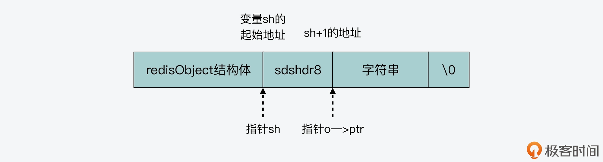
最后，createEmbeddedStringObject 函数会把参数中传入的指针 ptr 指向的字符串，拷贝到 SDS 结构体中的字符数组，并在数组最后添加结束字符。这部分代码如下所示：
memcpy(sh->buf,ptr,len);
sh->buf[len] = '\0';
下面这张图，也展示了 createEmbeddedStringObject 创建嵌入式字符串的过程，你可以再整体来看看。

总之，你可以记住，Redis 会通过设计实现一块连续的内存空间，把 redisObject 结构体和 SDS 结构体紧凑地放置在一起。这样一来，对于不超过 44 字节的字符串来说，就可以避免内存碎片和两次内存分配的开销了。
而除了嵌入式字符串之外，Redis 还设计了压缩列表和整数集合，这也是两种紧凑型的内存数据结构，所以下面我们再来学习下它们的设计思路。
压缩列表和整数集合的设计
首先你要知道，List、Hash 和 Sorted Set 这三种数据类型，都可以使用压缩列表（ziplist）来保存数据。压缩列表的函数定义和实现代码分别在 ziplist.h 和 ziplist.c 中。
不过，我们在 ziplist.h 文件中其实根本看不到压缩列表的结构体定义。这是因为压缩列表本身就是一块连续的内存空间，它通过使用不同的编码来保存数据。
这里为了方便理解压缩列表的设计与实现，我们先来看看它的创建函数 ziplistNew，如下所示：
unsigned char *ziplistNew(void) {
//初始分配的大小
unsigned int bytes = ZIPLIST_HEADER_SIZE+ZIPLIST_END_SIZE;
unsigned char *zl = zmalloc(bytes);
…
//将列表尾设置为ZIP_END
zl[bytes-1] = ZIP_END;
return zl;
}
实际上，ziplistNew 函数的逻辑很简单，就是创建一块连续的内存空间，大小为 ZIPLIST_HEADER_SIZE 和 ZIPLIST_END_SIZE 的总和，然后再把该连续空间的最后一个字节赋值为 ZIP_END，表示列表结束。
另外你要注意的是，在上面代码中定义的三个宏 ZIPLIST_HEADER_SIZE、ZIPLIST_END_SIZE 和 ZIP_END，在 ziplist.c 中也分别有定义，分别表示 ziplist 的列表头大小、列表尾大小和列表尾字节内容，如下所示。
//ziplist的列表头大小，包括2个32 bits整数和1个16bits整数，分别表示压缩列表的总字节数，列表最后一个元素的离列表头的偏移，以及列表中的元素个数
//ziplist的列表头大小，包括2个32 bits整数和1个16bits整数，分别表示压缩列表的总字节数，列表最后一个元素的离列表头的偏移，以及列表中的元素个数
#define ZIPLIST_HEADER_SIZE (sizeof(uint32_t)*2+sizeof(uint16_t))
//ziplist的列表尾大小，包括1个8 bits整数，表示列表结束。
#define ZIPLIST_END_SIZE (sizeof(uint8_t))
//ziplist的列表尾字节内容
#define ZIP_END 255
那么，在创建一个新的 ziplist 后，该列表的内存布局就如下图所示。注意，此时列表中还没有实际的数据。

然后，当我们往 ziplist 中插入数据时，ziplist 就会根据数据是字符串还是整数，以及它们的大小进行不同的编码。这种根据数据大小进行相应编码的设计思想，正是 Redis 为了节省内存而采用的。
那么，ziplist 是如何进行编码呢？要学习编码的实现，我们要先了解 ziplist 中列表项的结构。
ziplist 列表项包括三部分内容，分别是前一项的长度（prevlen）、当前项长度信息的编码结果（encoding），以及当前项的实际数据（data）。下面的图展示了列表项的结构（图中除列表项之外的内容分别是 ziplist 内存空间的起始和尾部）。
实际上，所谓的编码技术，就是指用不同数量的字节来表示保存的信息。在 ziplist 中，编码技术主要应用在列表项中的 prevlen 和 encoding 这两个元数据上。而当前项的实际数据 data，则正常用整数或是字符串来表示。
所以这里，我们就先来看下 prevlen 的编码设计。ziplist 中会包含多个列表项，每个列表项都是紧挨着彼此存放的，如下图所示。
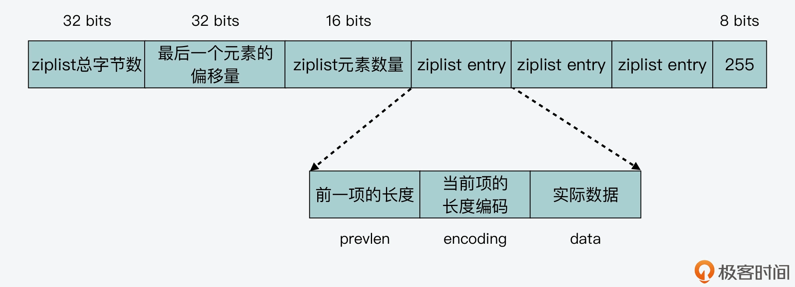
而为了方便查找，每个列表项中都会记录前一项的长度。因为每个列表项的长度不一样，所以如果使用相同的字节大小来记录 prevlen，就会造成内存空间浪费。
我给你举个例子，假设我们统一使用 4 字节记录 prevlen，如果前一个列表项只是一个字符串“redis”，长度为 5 个字节，那么我们用 1 个字节（8 bits）就能表示 256 字节长度（2 的 8 次方等于 256）的字符串了。此时，prevlen 用 4 字节记录，其中就有 3 字节是浪费掉了。
好，我们再回过头来看，ziplist 在对 prevlen 编码时，会先调用 zipStorePrevEntryLength 函数，用于判断前一个列表项是否小于 254 字节。如果是的话，那么 prevlen 就使用 1 字节表示；否则，zipStorePrevEntryLength 函数就调用 zipStorePrevEntryLengthLarge 函数进一步编码。这部分代码如下所示：
//判断prevlen的长度是否小于ZIP_BIG_PREVLEN，ZIP_BIG_PREVLEN等于254
if (len < ZIP_BIG_PREVLEN) {
//如果小于254字节，那么返回prevlen为1字节
p[0] = len;
return 1;
} else {
//否则，调用zipStorePrevEntryLengthLarge进行编码
return zipStorePrevEntryLengthLarge(p,len);
}
也就是说，zipStorePrevEntryLengthLarge 函数会先将 prevlen 的第 1 字节设置为 254，然后使用内存拷贝函数 memcpy，将前一个列表项的长度值拷贝至 prevlen 的第 2 至第 5 字节。最后，zipStorePrevEntryLengthLarge 函数返回 prevlen 的大小，为 5 字节。
if (p != NULL) {
//将prevlen的第1字节设置为ZIP_BIG_PREVLEN，即254
p[0] = ZIP_BIG_PREVLEN;
//将前一个列表项的长度值拷贝至prevlen的第2至第5字节，其中sizeof(len)的值为4
memcpy(p+1,&len,sizeof(len));
…
}
//返回prevlen的大小，为5字节
return 1+sizeof(len);
好，在了解了 prevlen 使用 1 字节和 5 字节两种编码方式后，我们再来学习下 encoding 的编码方法。
我们知道，一个列表项的实际数据，既可以是整数也可以是字符串。整数可以是 16、32、64 等字节长度，同时字符串的长度也可以大小不一。
所以，ziplist 在 zipStoreEntryEncoding 函数中，针对整数和字符串，就分别使用了不同字节长度的编码结果。下面的代码展示了 zipStoreEntryEncoding 函数的部分代码，你可以看到当数据是不同长度字符串或是整数时，编码结果的长度 len 大小不同。
//默认编码结果是1字节
unsigned char len = 1;
//如果是字符串数据
if (ZIP_IS_STR(encoding)) {
//字符串长度小于等于63字节（16进制为0x3f）
if (rawlen <= 0x3f) {
//默认编码结果是1字节
…
}
//字符串长度小于等于16383字节（16进制为0x3fff）
else if (rawlen <= 0x3fff) {
//编码结果是2字节
len += 1;
…
}
//字符串长度大于16383字节
else {
//编码结果是5字节
len += 4;
…
}
} else {
/* 如果数据是整数，编码结果是1字节*/
if (!p) return len;
...
}
简而言之，针对不同长度的数据，使用不同大小的元数据信息（prevlen 和 encoding），这种方法可以有效地节省内存开销。当然，除了 ziplist 之外，Redis 还设计了一个内存友好的数据结构，这就是整数集合（intset），它是作为底层结构来实现 Set 数据类型的。
和 SDS 嵌入式字符串、ziplist 类似，整数集合也是一块连续的内存空间，这一点我们从整数集合的定义中就可以看到。intset.h 和 intset.c 分别包括了整数集合的定义和实现。
下面的代码展示了 intset 的结构定义。我们可以看到，整数集合结构体中记录数据的部分，就是一个 int8_t 类型的整数数组 contents。从内存使用的角度来看，整数数组就是一块连续内存空间，所以这样就避免了内存碎片，并提升了内存使用效率。
typedef struct intset {
uint32_t encoding;
uint32_t length;
int8_t contents[];
} intset;
好了，到这里，我们就已经了解了 Redis 针对内存开销所做的数据结构优化，分别是 SDS 嵌入式字符串、压缩列表和整数集合。
而除了对数据结构做优化，Redis 在数据访问上，也会尽量节省内存开销，接下来我们就一起来学习下。
节省内存的数据访问
我们知道，在 Redis 实例运行时，有些数据是会被经常访问的，比如常见的整数，Redis 协议中常见的回复信息，包括操作成功（“OK”字符串）、操作失败（ERR），以及常见的报错信息。
所以，为了避免在内存中反复创建这些经常被访问的数据，Redis 就采用了共享对象的设计思想。这个设计思想很简单，就是把这些常用数据创建为共享对象，当上层应用需要访问它们时，直接读取就行。
现在我们就来做个假设。有 1000 个客户端，都要保存“3”这个整数。如果 Redis 为每个客户端，都创建了一个值为 3 的 redisObject，那么内存中就会有大量的冗余。而使用了共享对象方法后，Redis 在内存中只用保存一个 3 的 redisObject 就行，这样就有效节省了内存空间。
以下代码展示的是 server.c 文件中，创建共享对象的函数 createSharedObjects，你可以看下。
void createSharedObjects(void) {
…
//常见回复信息
shared.ok = createObject(OBJ_STRING,sdsnew("+OK\r\n"));
shared.err = createObject(OBJ_STRING,sdsnew("-ERR\r\n"));
…
//常见报错信息
shared.nokeyerr = createObject(OBJ_STRING,sdsnew("-ERR no such key\r\n"));
shared.syntaxerr = createObject(OBJ_STRING,sdsnew("-ERR syntax error\r\n"));
//0到9999的整数
for (j = 0; j < OBJ_SHARED_INTEGERS; j++) {
shared.integers[j] =
makeObjectShared(createObject(OBJ_STRING,(void*)(long)j));
…
}
…
}
小结
降低内存开销，对于 Redis 这样的内存数据库来说非常重要。今天这节课，我们了解了 Redis 用于优化内存使用效率的两种方法：内存优化的数据结构设计和节省内存的共享数据访问。
那么，对于实现数据结构来说，如果想要节省内存，Redis 就给我们提供了两个优秀的设计思想：一个是使用连续的内存空间，避免内存碎片开销；二个是针对不同长度的数据，采用不同大小的元数据，以避免使用统一大小的元数据，造成内存空间的浪费。
另外在数据访问方面，你也要知道，使用共享对象其实可以避免重复创建冗余的数据，从而也可以有效地节省内存空间。不过，共享对象主要适用于只读场景，如果一个字符串被反复地修改，就无法被多个请求共享访问了。所以这一点，你在应用时也需要注意一下。
每课一问
SDS 判断是否使用嵌入式字符串的条件是 44 字节，你知道为什么是 44 字节吗？
欢迎在留言区分享你的思考过程，我们一起交流讨论。如果觉得有收获，也欢迎你把今天的内容分享给更多的朋友。
05 有序集合为何能同时支持点查询和范围查询？
有序集合（Sorted Set）是 Redis 中一种重要的数据类型，它本身是集合类型，同时也可以支持集合中的元素带有权重，并按权重排序。
而曾经就有一位从事 Redis 开发的同学问我：为什么 Sorted Set 能同时提供以下两种操作接口，以及它们的复杂度分别是 O(logN)+M 和 O(1) 呢？
- ZRANGEBYSCORE：按照元素权重返回一个范围内的元素。
- ZSCORE：返回某个元素的权重值。
实际上，这个问题背后的本质是：为什么 Sorted Set 既能支持高效的范围查询，同时还能以 O(1) 复杂度获取元素权重值？
这其实就和 Sorted Set 底层的设计实现有关了。Sorted Set 能支持范围查询，这是因为它的核心数据结构设计采用了跳表，而它又能以常数复杂度获取元素权重，这是因为它同时采用了哈希表进行索引。
那么，你是不是很好奇，Sorted Set 是如何把这两种数据结构结合在一起的？它们又是如何进行协作的呢？今天这节课，我就来给你介绍下 Sorted Set 采用的双索引的设计思想和实现。理解和掌握这种双索引的设计思想，对于我们实现数据库系统是具有非常重要的参考价值的。
好，接下来，我们就先来看看 Sorted Set 的基本结构。
Sorted Set 基本结构
要想了解 Sorted Set 的结构，就需要阅读它的代码文件。这里你需要注意的是，在 Redis 源码中，Sorted Set 的代码文件和其他数据类型不太一样，它并不像哈希表的 dict.c/dict.h，或是压缩列表的 ziplist.c/ziplist.h，具有专门的数据结构实现和定义文件。
Sorted Set 的实现代码在t_zset.c文件中，包括 Sorted Set 的各种操作实现，同时 Sorted Set 相关的结构定义在server.h文件中。如果你想要了解学习 Sorted Set 的模块和操作，注意要从 t_zset.c 和 server.h 这两个文件中查找。
好，在知道了 Sorted Set 所在的代码文件之后，我们可以先来看下它的结构定义。Sorted Set 结构体的名称为 zset，其中包含了两个成员，分别是哈希表 dict 和跳表 zsl，如下所示。
typedef struct zset {
dict *dict;
zskiplist *zsl;
} zset;
在这节课一开始，我就说过 Sorted Set 这种同时采用跳表和哈希表两个索引结构的设计思想，是非常值得学习的。因为这种设计思想充分利用了跳表高效支持范围查询（如 ZRANGEBYSCORE 操作），以及哈希表高效支持单点查询（如 ZSCORE 操作）的特征。这样一来，我们就可以在一个数据结构中，同时高效支持范围查询和单点查询，这是单一索引结构比较难达到的效果。
不过，既然 Sorted Set 采用了跳表和哈希表两种索引结构来组织数据，我们在实现 Sorted Set 时就会面临以下两个问题：
- 跳表或是哈希表中，各自保存了什么样的数据？
- 跳表和哈希表保存的数据是如何保持一致的？
因为我已经在【第 3 讲】中给你介绍了 Redis 中哈希表的实现思路，所以接下来，我主要是给你介绍下跳表的设计和实现。通过学习跳表，你可以了解到跳表中保存的数据，以及跳表的常见操作。然后，我再带你来探究下 Sorted Set 如何将哈希表和跳表组合起来使用的，以及这两个索引结构中的数据是如何保持一致的。
跳表的设计与实现
首先，我们来了解下什么是跳表（skiplist）。
跳表其实是一种多层的有序链表。在课程中，为了便于说明，我把跳表中的层次从低到高排个序，最底下一层称为 level0，依次往上是 level1、level2 等。
下图展示的是一个 3 层的跳表。其中，头结点中包含了三个指针，分别作为 leve0 到 level2 上的头指针。
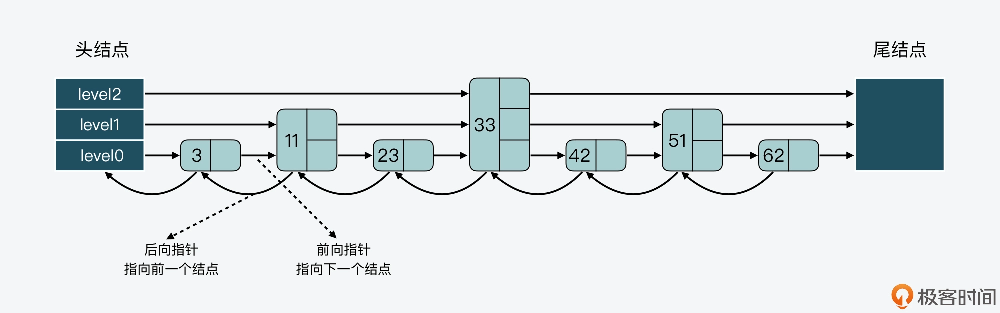
可以看到，在 level 0 上一共有 7 个结点，分别是 3、11、23、33、42、51、62，这些结点会通过指针连接起来，同时头结点中的 level0 指针会指向结点 3。然后，在这 7 个结点中，结点 11、33 和 51 又都包含了一个指针，同样也依次连接起来，且头结点的 level 1 指针会指向结点 11。这样一来，这 3 个结点就组成了 level 1 上的所有结点。
最后，结点 33 中还包含了一个指针，这个指针会指向尾结点，同时，头结点的 level 2 指针会指向结点 33，这就形成了 level 2，只不过 level 2 上只有 1 个结点 33。
好，在对跳表有了直观印象后，我们再来看看跳表实现的具体数据结构。
跳表数据结构
我们先来看下跳表结点的结构定义，如下所示。
typedef struct zskiplistNode {
//Sorted Set中的元素
sds ele;
//元素权重值
double score;
//后向指针
struct zskiplistNode *backward;
//节点的level数组，保存每层上的前向指针和跨度
struct zskiplistLevel {
struct zskiplistNode *forward;
unsigned long span;
} level[];
} zskiplistNode;
首先，因为 Sorted Set 中既要保存元素，也要保存元素的权重，所以对应到跳表结点的结构定义中，就对应了 sds 类型的变量 ele，以及 double 类型的变量 score。此外，为了便于从跳表的尾结点进行倒序查找，每个跳表结点中还保存了一个后向指针（*backward），指向该结点的前一个结点。
然后，因为跳表是一个多层的有序链表，每一层也是由多个结点通过指针连接起来的。因此在跳表结点的结构定义中，还包含了一个 zskiplistLevel 结构体类型的 level 数组。
level 数组中的每一个元素对应了一个 zskiplistLevel 结构体，也对应了跳表的一层。而 zskiplistLevel 结构体定义了一个指向下一结点的前向指针（*forward），这就使得结点可以在某一层上和后续结点连接起来。同时，zskiplistLevel 结构体中还定义了，这是用来记录结点在某一层上的*跨度forward指针和该指针指向的结点之间，跨越了 level0 上的几个结点。
我们来看下面这张图，其中就展示了 33 结点的 level 数组和跨度情况。可以看到，33 结点的 level 数组有三个元素，分别对应了三层 level 上的指针。此外，在 level 数组中，level 2、level1 和 level 0 的跨度 span 值依次是 3、2、1。
最后，因为跳表中的结点都是按序排列的，所以，对于跳表中的某个结点，我们可以把从头结点到该结点的查询路径上，各个结点在所查询层次上的*forward指针跨度，做一个累加。这个累加值就可以用来计算该结点在整个跳表中的顺序，另外这个结构特点还可以用来实现 Sorted Set 的 rank 操作，比如 ZRANK、ZREVRANK 等。
好，了解了跳表结点的定义后，我们可以来看看跳表的定义。在跳表的结构中，定义了跳表的头结点和尾结点、跳表的长度，以及跳表的最大层数，如下所示。
typedef struct zskiplist {
struct zskiplistNode *header, *tail;
unsigned long length;
int level;
} zskiplist;
因为跳表的每个结点都是通过指针连接起来的，所以我们在使用跳表时，只需要从跳表结构体中获得头结点或尾结点，就可以通过结点指针访问到跳表中的各个结点。
那么，当我们在 Sorted Set 中查找元素时，就对应到了 Redis 在跳表中查找结点，而此时，查询代码是否需要像查询常规链表那样，逐一顺序查询比较链表中的每个结点呢？
其实是不用的，因为这里的查询代码，可以使用跳表结点中的 level 数组来加速查询。
跳表结点查询
事实上，当查询一个结点时，跳表会先从头结点的最高层开始，查找下一个结点。而由于跳表结点同时保存了元素和权重，所以跳表在比较结点时，相应地有两个判断条件：
- 当查找到的结点保存的元素权重，比要查找的权重小时，跳表就会继续访问该层上的下一个结点。
- 当查找到的结点保存的元素权重，等于要查找的权重时，跳表会再检查该结点保存的 SDS 类型数据，是否比要查找的 SDS 数据小。如果结点数据小于要查找的数据时，跳表仍然会继续访问该层上的下一个结点。
但是，当上述两个条件都不满足时，跳表就会用到当前查找到的结点的 level 数组了。跳表会使用当前结点 level 数组里的下一层指针，然后沿着下一层指针继续查找，这就相当于跳到了下一层接着查找。
这部分的代码逻辑如下所示，因为在跳表中进行查找、插入、更新或删除操作时，都需要用到查询的功能，你可以重点了解下。
//获取跳表的表头
x = zsl->header;
//从最大层数开始逐一遍历
for (i = zsl->level-1; i >= 0; i--) {
...
while (x->level[i].forward && (x->level[i].forward->score < score || (x->level[i].forward->score == score
&& sdscmp(x->level[i].forward->ele,ele) < 0))) {
...
x = x->level[i].forward;
}
...
}
跳表结点层数设置
这样一来，有了 level 数组之后，一个跳表结点就可以在多层上被访问到了。而一个结点的 level 数组的层数也就决定了，该结点可以在几层上被访问到。
所以，当我们要决定结点层数时，实际上是要决定 level 数组具体有几层。
一种设计方法是，让每一层上的结点数约是下一层上结点数的一半，就像下面这张图展示的。第 0 层上的结点数是 7，第 1 层上的结点数是 3，约是第 0 层上结点数的一半。而第 2 层上的结点就 33 一个，约是第 1 层结点数的一半。
这种设计方法带来的好处是，当跳表从最高层开始进行查找时，由于每一层结点数都约是下一层结点数的一半，这种查找过程就类似于二分查找，查找复杂度可以降低到 O(logN)。
但这种设计方法也会带来负面影响，那就是为了维持相邻两层上结点数的比例为 2:1，一旦有新的结点插入或是有结点被删除，那么插入或删除处的结点，及其后续结点的层数都需要进行调整，而这样就带来了额外的开销。
我先来给你举个例子，看下不维持结点数比例的影响，这样虽然可以不调整层数，但是会增加查询复杂度。
首先，假设当前跳表有 3 个结点，其数值分别是 3、11、23，如下图所示。

接着，假设现在要插入一个结点 15，如果我们不调整其他结点的层数，而是直接插入结点 15 的话，那么插入后，跳表 level 0 和 level 1 两层上的结点数比例就变成了为 4:1，如下图所示。
而假设我们持续插入多个结点，但是仍然不调整其他结点的层数，这样一来，level0 上的结点数就会越来越多，如下图所示。
相应的，如果我们要查找大于 11 的结点，就需要在 level 0 的结点中依次顺序查找，复杂度就是 O(N) 了。所以，为了降低查询复杂度，我们就需要维持相邻层结点数间的关系。
好，接下来，我们再来看下维持相邻层结点数为 2:1 时的影响。
比如，我们可以把结点 23 的 level 数组中增加一层指针，如下图所示。这样一来，level 0 和 level 1 上的结点数就维持在了 2:1。但相应的代价就是，我们也需要给 level 数组重新分配空间，以便增加一层指针。
类似的，如果我们要在有 7 个结点的跳表中删除结点 33，那么结点 33 后面的所有结点都要进行调整：

调整后的跳表如下图所示。你可以看到，结点 42 和 62 都要新增 level 数组空间，这样能分别保存 3 层的指针和 2 层的指针，而结点 51 的 level 数组则需要减少一层。也就是说，这样的调整会带来额外的操作开销。

因此，为了避免上述问题，跳表在创建结点时，采用的是另一种设计方法，即随机生成每个结点的层数。此时，相邻两层链表上的结点数并不需要维持在严格的 2:1 关系。这样一来，当新插入一个结点时，只需要修改前后结点的指针，而其他结点的层数就不需要随之改变了，这就降低了插入操作的复杂度。
在 Redis 源码中，跳表结点层数是由 zslRandomLevel 函数决定。zslRandomLevel 函数会把层数初始化为 1，这也是结点的最小层数。然后，该函数会生成随机数，如果随机数的值小于 ZSKIPLIST_P（指跳表结点增加层数的概率，值为 0.25），那么层数就增加 1 层。因为随机数取值到[0,0.25) 范围内的概率不超过 25%，所以这也就表明了，每增加一层的概率不超过 25%。下面的代码展示了 zslRandomLevel 函数的执行逻辑，你可以看下。
#define ZSKIPLIST_MAXLEVEL 64 //最大层数为64
#define ZSKIPLIST_P 0.25 //随机数的值为0.25
int zslRandomLevel(void) {
//初始化层为1
int level = 1;
while ((random()&0xFFFF) < (ZSKIPLIST_P * 0xFFFF))
level += 1;
return (level<ZSKIPLIST_MAXLEVEL) ? level : ZSKIPLIST_MAXLEVEL;
}
好，现在我们就了解了跳表的基本结构、查询方式和结点层数设置方法，那么下面我们接着来学习下，Sorted Set 中是如何将跳表和哈希表组合起来使用的，以及是如何保持这两个索引结构中的数据是一致的。
哈希表和跳表的组合使用
其实，哈希表和跳表的组合使用并不复杂。
首先，我们从刚才介绍的 Sorted Set 结构体中可以看到，Sorted Set 中已经同时包含了这两种索引结构，这就是组合使用两者的第一步。然后，我们还可以在 Sorted Set 的创建代码（t_zset.c文件）中，进一步看到跳表和哈希表被相继创建。
当创建一个 zset 时，代码中会相继调用 dictCreate 函数创建 zset 中的哈希表，以及调用 zslCreate 函数创建跳表，如下所示。
zs = zmalloc(sizeof(*zs));
zs->dict = dictCreate(&zsetDictType,NULL);
zs->zsl = zslCreate();
这样，在 Sorted Set 中同时有了这两个索引结构以后，接下来，我们要想组合使用它们，就需要保持这两个索引结构中的数据一致了。简单来说，这就需要我们在往跳表中插入数据时，同时也向哈希表中插入数据。
而这种保持两个索引结构一致的做法其实也不难，当往 Sorted Set 中插入数据时，zsetAdd 函数就会被调用。所以，我们可以通过阅读 Sorted Set 的元素添加函数 zsetAdd 了解到。下面我们就来分析一下 zsetAdd 函数的执行过程。
首先，zsetAdd 函数会判定 Sorted Set 采用的是 ziplist 还是 skiplist 的编码方式。zsetAdd 函数会判定 Sorted Set 采用的是 ziplist 还是 skiplist 的编码方式。
注意，在不同编码方式下，zsetAdd 函数的执行逻辑也有所区别。这一讲我们重点关注的是 skiplist 的编码方式，所以接下来，我们就主要来看看当采用 skiplist 编码方式时，zsetAdd 函数的逻辑是什么样的。
zsetAdd 函数会先使用哈希表的 dictFind 函数，查找要插入的元素是否存在。如果不存在，就直接调用跳表元素插入函数 zslInsert 和哈希表元素插入函数 dictAdd，将新元素分别插入到跳表和哈希表中。
这里你需要注意的是，Redis 并没有把哈希表的操作嵌入到跳表本身的操作函数中，而是在 zsetAdd 函数中依次执行以上两个函数。这样设计的好处是保持了跳表和哈希表两者操作的独立性。
- 然后，如果 zsetAdd 函数通过 dictFind 函数发现要插入的元素已经存在，那么 zsetAdd 函数会判断是否要增加元素的权重值。
如果权重值发生了变化，zsetAdd 函数就会调用 zslUpdateScore 函数，更新跳表中的元素权重值。紧接着，zsetAdd 函数会把哈希表中该元素（对应哈希表中的 key）的 value 指向跳表结点中的权重值，这样一来，哈希表中元素的权重值就可以保持最新值了。
下面的代码显示了 zsetAdd 函数的执行流程，你可以看下。
//如果采用ziplist编码方式时，zsetAdd函数的处理逻辑
if (zobj->encoding == OBJ_ENCODING_ZIPLIST) {
...
}
//如果采用skiplist编码方式时，zsetAdd函数的处理逻辑
else if (zobj->encoding == OBJ_ENCODING_SKIPLIST) {
zset *zs = zobj->ptr;
zskiplistNode *znode;
dictEntry *de;
//从哈希表中查询新增元素
de = dictFind(zs->dict,ele);
//如果能查询到该元素
if (de != NULL) {
/* NX? Return, same element already exists. */
if (nx) {
*flags |= ZADD_NOP;
return 1;
}
//从哈希表中查询元素的权重
curscore = *(double*)dictGetVal(de);
//如果要更新元素权重值
if (incr) {
//更新权重值
...
}
//如果权重发生变化了
if (score != curscore) {
//更新跳表结点
znode = zslUpdateScore(zs->zsl,curscore,ele,score);
//让哈希表元素的值指向跳表结点的权重
dictGetVal(de) = &znode->score;
...
}
return 1;
}
//如果新元素不存在
else if (!xx) {
ele = sdsdup(ele);
//新插入跳表结点
znode = zslInsert(zs->zsl,score,ele);
//新插入哈希表元素
serverAssert(dictAdd(zs->dict,ele,&znode->score) == DICT_OK);
...
return 1;
}
..
总之，你可以记住的是，Sorted Set 先是通过在它的数据结构中同时定义了跳表和哈希表，来实现同时使用这两种索引结构。然后，Sorted Set 在执行数据插入或是数据更新的过程中，会依次在跳表和哈希表中插入或更新相应的数据，从而保证了跳表和哈希表中记录的信息一致。
这样一来，Sorted Set 既可以使用跳表支持数据的范围查询，还能使用哈希表支持根据元素直接查询它的权重。
小结
这节课，我给你介绍了 Sorted Set 数据类型的底层实现。Sorted Set 为了能同时支持按照权重的范围查询，以及针对元素权重的单点查询，在底层数据结构上设计了组合使用跳表和哈希表的方法。
跳表是一个多层的有序链表，在跳表中进行查询操作时，查询代码可以从最高层开始查询。层数越高，结点数越少，同时高层结点的跨度会比较大。因此，在高层查询结点时，查询一个结点可能就已经查到了链表的中间位置了。
这样一来，跳表就会先查高层，如果高层直接查到了等于待查元素的结点，那么就可以直接返回。如果查到第一个大于待查元素的结点后，就转向下一层查询。下层上的结点数多于上层，所以这样可以在更多的结点中进一步查找待查元素是否存在。
跳表的这种设计方法就可以节省查询开销，同时，跳表设计采用随机的方法来确定每个结点的层数，这样就可以避免新增结点时，引起结点连锁更新问题。
此外，Sorted Set 中还将元素保存在了哈希表中，作为哈希表的 key，同时将 value 指向元素在跳表中的权重。使用了哈希表后，Sorted Set 可以通过哈希计算直接查找到某个元素及其权重值，相较于通过跳表查找单个元素，使用哈希表就有效提升了查询效率。
总之，组合使用两种索引结构来对数据进行管理，比如 Sorted Set 中组合使用跳表和哈希表，这是一个很好的设计思路，希望你也能应用在日常的系统开发中。
每课一问
在使用跳表和哈希表相结合的双索引机制时，在获得高效范围查询和单点查询的同时，你能想到这种双索引机制有哪些不足之处吗？
06 从ziplist到quicklist，再到listpack的启发
在前面的【第 4 讲】，我介绍 Redis 优化设计数据结构来提升内存利用率的时候，提到可以使用压缩列表（ziplist）来保存数据。所以现在你应该也知道，ziplist 的最大特点，就是它被设计成一种内存紧凑型的数据结构，占用一块连续的内存空间，以达到节省内存的目的。
但是，在计算机系统中，任何一个设计都是有利有弊的。对于 ziplist 来说，这个道理同样成立。
虽然 ziplist 节省了内存开销，可它也存在两个设计代价：一是不能保存过多的元素，否则访问性能会降低；二是不能保存过大的元素，否则容易导致内存重新分配，甚至可能引发连锁更新的问题。所谓的连锁更新，简单来说，就是 ziplist 中的每一项都要被重新分配内存空间，造成 ziplist 的性能降低。
因此，针对 ziplist 在设计上的不足，Redis 代码在开发演进的过程中，新增设计了两种数据结构：quicklist 和 listpack。这两种数据结构的设计目标，就是尽可能地保持 ziplist 节省内存的优势，同时避免 ziplist 潜在的性能下降问题。
今天这节课，我就来给你详细介绍下 quicklist 和 listpack 的设计思想和实现思路，不过在具体讲解这两种数据结构之前，我想先带你来了解下为什么 ziplist 的设计会存在缺陷。这样一来，你在学习 quicklist 和 listpack 时，可以和 ziplist 的设计进行对比，进一步就能更加容易地掌握 quicklist 和 listpack 的设计考虑了。
而且，ziplist 和 quicklist 的区别，也是经常被问到的面试题，而 listpack 数据结构因为比较新，你对它的设计实现可能了解得并不多。那在学完了这节课之后，你其实就可以很轻松地应对这三种数据结构的使用问题了。此外，你还可以从这三种数据结构的逐步优化设计中，学习到 Redis 数据结构在内存开销和访问性能之间，采取的设计取舍思想。如果你需要开发高效的数据结构，你就可以把这种设计思想应用起来。
好，那么接下来，我们就先来了解下 ziplist 在设计与实现上存在的缺陷。
ziplist 的不足
你已经知道，一个 ziplist 数据结构在内存中的布局，就是一块连续的内存空间。这块空间的起始部分是大小固定的 10 字节元数据，其中记录了 ziplist 的总字节数、最后一个元素的偏移量以及列表元素的数量，而这 10 字节后面的内存空间则保存了实际的列表数据。在 ziplist 的最后部分，是一个 1 字节的标识（固定为 255），用来表示 ziplist 的结束，如下图所示：
不过，虽然 ziplist 通过紧凑的内存布局来保存数据，节省了内存空间，但是 ziplist 也面临着随之而来的两个不足：查找复杂度高和潜在的连锁更新风险。那么下面，我们就分别来了解下这两个问题。
查找复杂度高
因为 ziplist 头尾元数据的大小是固定的，并且在 ziplist 头部记录了最后一个元素的位置，所以，当在 ziplist 中查找第一个或最后一个元素的时候，就可以很快找到。
但问题是，当要查找列表中间的元素时，ziplist 就得从列表头或列表尾遍历才行。而当 ziplist 保存的元素过多时，查找中间数据的复杂度就增加了。更糟糕的是，如果 ziplist 里面保存的是字符串，ziplist 在查找某个元素时，还需要逐一判断元素的每个字符，这样又进一步增加了复杂度。
也正因为如此，我们在使用 ziplist 保存 Hash 或 Sorted Set 数据时，都会在 redis.conf 文件中，通过 hash-max-ziplist-entries 和 zset-max-ziplist-entries 两个参数，来控制保存在 ziplist 中的元素个数。
不仅如此，除了查找复杂度高以外，ziplist 在插入元素时，如果内存空间不够了，ziplist 还需要重新分配一块连续的内存空间，而这还会进一步引发连锁更新的问题。
连锁更新风险
我们知道，因为 ziplist 必须使用一块连续的内存空间来保存数据，所以当新插入一个元素时，ziplist 就需要计算其所需的空间大小，并申请相应的内存空间。这一系列操作，我们可以从 ziplist 的元素插入函数 __ziplistInsert 中看到。
__ziplistInsert 函数首先会计算获得当前 ziplist 的长度，这个步骤通过 ZIPLIST_BYTES 宏定义就可以完成，如下所示。同时，该函数还声明了 reqlen 变量，用于记录插入元素后所需的新增空间大小。
//获取当前ziplist长度curlen；声明reqlen变量，用来记录新插入元素所需的长度
size_t curlen = intrev32ifbe(ZIPLIST_BYTES(zl)), reqlen;
然后，__ziplistInsert 函数会判断当前要插入的位置是否是列表末尾。如果不是末尾，那么就需要获取位于当前插入位置的元素的 prevlen 和 prevlensize。这部分代码如下所示：
//如果插入的位置不是ziplist末尾，则获取前一项长度
if (p[0] != ZIP_END) {
ZIP_DECODE_PREVLEN(p, prevlensize, prevlen);
} else {
…
}
实际上，在 ziplist 中，每一个元素都会记录其前一项的长度，也就是 prevlen。然后，为了节省内存开销，ziplist 会使用不同的空间记录 prevlen，这个 prevlen 空间大小就是 prevlensize。
举个简单的例子，当在一个元素 A 前插入一个新的元素 B 时，A 的 prevlen 和 prevlensize 都要根据 B 的长度进行相应的变化。
那么现在，我们假设 A 的 prevlen 原本只占用 1 字节（也就是 prevlensize 等于 1），而能记录的前一项长度最大为 253 字节。此时，如果 B 的长度超过了 253 字节，A 的 prevlen 就需要使用 5 个字节来记录（prevlen 具体的编码方式，你可以复习回顾下第 4 讲），这样就需要申请额外的 4 字节空间了。不过，如果元素 B 的插入位置是列表末尾，那么插入元素 B 时，我们就不用考虑后面元素的 prevlen 了。
我画了下面这张图，以便于你理解数据插入过程对插入位置元素的影响。
因此，为了保证 ziplist 有足够的内存空间，来保存插入元素以及插入位置元素的 prevlen 信息，__ziplistInsert 函数在获得插入位置元素的 prevlen 和 prevlensize 后，紧接着就会计算插入元素的长度。
现在我们已知，一个 ziplist 元素包括了 prevlen、encoding 和实际数据 data 三个部分。所以，在计算插入元素的所需空间时，__ziplistInsert 函数也会分别计算这三个部分的长度。这个计算过程一共可以分成四步来完成。
- 第一步，计算实际插入元素的长度。
首先你要知道，这个计算过程和插入元素是整数还是字符串有关。__ziplistInsert 函数会先调用 zipTryEncoding 函数，这个函数会判断插入元素是否为整数。如果是整数，就按照不同的整数大小，计算 encoding 和实际数据 data 各自所需的空间；如果是字符串，那么就先把字符串长度记录为所需的新增空间大小。这一过程的代码如下所示：
if (zipTryEncoding(s,slen,&value,&encoding)) {
reqlen = zipIntSize(encoding);
} else {
reqlen = slen;
}
- 第二步，调用 zipStorePrevEntryLength 函数，将插入位置元素的 prevlen 也计算到所需空间中。
这是因为在插入元素后，__ziplistInsert 函数可能要为插入位置的元素分配新增空间。这部分代码如下所示：
reqlen += zipStorePrevEntryLength(NULL,prevlen);
- 第三步，调用 zipStoreEntryEncoding 函数，根据字符串的长度，计算相应 encoding 的大小。
在刚才的第一步中，ziplistInsert 函数对于字符串数据，只是记录了字符串本身的长度，所以在第三步中，ziplistInsert 函数还会调用 zipStoreEntryEncoding 函数，根据字符串的长度来计算相应的 encoding 大小，如下所示：
reqlen += zipStoreEntryEncoding(NULL,encoding,slen);
好了，到这里，__ziplistInsert 函数就已经在 reqlen 变量中，记录了插入元素的 prevlen 长度、encoding 大小，以及实际数据 data 的长度。这样一来，插入元素的整体长度就有了，这也是插入位置元素的 prevlen 所要记录的大小。
- 第四步，调用 zipPrevLenByteDiff 函数，判断插入位置元素的 prevlen 和实际所需的 prevlen 大小。
最后，__ziplistInsert 函数会调用 zipPrevLenByteDiff 函数，用来判断插入位置元素的 prevlen 和实际所需的 prevlen，这两者间的大小差别。这部分代码如下所示，prevlen 的大小差别是使用 nextdiff 来记录的：
nextdiff = (p[0] != ZIP_END) ? zipPrevLenByteDiff(p,reqlen) : 0;
那么在这里，如果 nextdiff 大于 0，就表明插入位置元素的空间不够，需要新增 nextdiff 大小的空间，以便能保存新的 prevlen。然后，__ziplistInsert 函数在新增空间时，就会调用 ziplistResize 函数，来重新分配 ziplist 所需的空间。
ziplistResize 函数接收的参数分别是待重新分配的 ziplist 和重新分配的空间大小。而 __ziplistInsert 函数传入的重新分配大小的参数，是三个长度之和。
那么是哪三个长度之和呢？
这三个长度分别是 ziplist 现有大小（curlen）、待插入元素自身所需的新增空间（reqlen），以及插入位置元素 prevlen 所需的新增空间（nextdiff）。下面的代码显示了 ziplistResize 函数的调用和参数传递逻辑：
zl = ziplistResize(zl,curlen+reqlen+nextdiff);
进一步，那么 ziplistResize 函数在获得三个长度总和之后，具体是如何扩容呢？
我们可以进一步看下 ziplistResize 函数的实现，这个函数会调用 zrealloc 函数，来完成空间的重新分配，而重新分配的空间大小就是由传入参数 len 决定的。这样，我们就了解到了 ziplistResize 函数涉及到内存分配操作，因此如果我们往 ziplist 频繁插入过多数据的话，就可能引起多次内存分配，从而会对 Redis 性能造成影响。
下面的代码显示了 ziplistResize 函数的部分实现，你可以看下。
unsigned char *ziplistResize(unsigned char *zl, unsigned int len) {
//对zl进行重新内存空间分配，重新分配的大小是len
zl = zrealloc(zl,len);
…
zl[len-1] = ZIP_END;
return zl;
}
好了，到这里，我们就了解了 ziplist 在新插入元素时，会计算其所需的新增空间，并进行重新分配。而当新插入的元素较大时，就会引起插入位置的元素 prevlensize 增加，进而就会导致插入位置的元素所占空间也增加。
而如此一来，这种空间新增就会引起连锁更新的问题。
实际上，所谓的连锁更新，就是指当一个元素插入后，会引起当前位置元素新增 prevlensize 的空间。而当前位置元素的空间增加后，又会进一步引起该元素的后续元素，其 prevlensize 所需空间的增加。
这样，一旦插入位置后续的所有元素，都会因为前序元素的 prevlenszie 增加，而引起自身空间也要增加，这种每个元素的空间都需要增加的现象，就是连锁更新。我画了下面这张图，你可以看下。
连锁更新一旦发生，就会导致 ziplist 占用的内存空间要多次重新分配，这就会直接影响到 ziplist 的访问性能。
所以说，虽然 ziplist 紧凑型的内存布局能节省内存开销，但是如果保存的元素数量增加了，或是元素变大了，ziplist 就会面临性能问题。那么，有没有什么方法可以避免 ziplist 的问题呢？
这就是接下来我要给你介绍的 quicklist 和 listpack，这两种数据结构的设计思想了。
quicklist 设计与实现
我们先来学习下 quicklist 的实现思路。
quicklist 的设计，其实是结合了链表和 ziplist 各自的优势。简单来说，一个 quicklist 就是一个链表，而链表中的每个元素又是一个 ziplist。
我们来看下 quicklist 的数据结构，这是在quicklist.h文件中定义的，而 quicklist 的具体实现是在quicklist.c文件中。
首先，quicklist 元素的定义，也就是 quicklistNode。因为 quicklist 是一个链表，所以每个 quicklistNode 中，都包含了分别指向它前序和后序节点的指针*prev和*next。同时，每个 quicklistNode 又是一个 ziplist，所以，在 quicklistNode 的结构体中，还有指向 ziplist 的指针*zl。
此外，quicklistNode 结构体中还定义了一些属性，比如 ziplist 的字节大小、包含的元素个数、编码格式、存储方式等。下面的代码显示了 quicklistNode 的结构体定义，你可以看下。
typedef struct quicklistNode {
struct quicklistNode *prev; //前一个quicklistNode
struct quicklistNode *next; //后一个quicklistNode
unsigned char *zl; //quicklistNode指向的ziplist
unsigned int sz; //ziplist的字节大小
unsigned int count : 16; //ziplist中的元素个数
unsigned int encoding : 2; //编码格式，原生字节数组或压缩存储
unsigned int container : 2; //存储方式
unsigned int recompress : 1; //数据是否被压缩
unsigned int attempted_compress : 1; //数据能否被压缩
unsigned int extra : 10; //预留的bit位
} quicklistNode;
了解了 quicklistNode 的定义，我们再来看下 quicklist 的结构体定义。
quicklist 作为一个链表结构，在它的数据结构中，是定义了整个 quicklist 的头、尾指针，这样一来，我们就可以通过 quicklist 的数据结构，来快速定位到 quicklist 的链表头和链表尾。
此外，quicklist 中还定义了 quicklistNode 的个数、所有 ziplist 的总元素个数等属性。quicklist 的结构定义如下所示：
typedef struct quicklist {
quicklistNode *head; //quicklist的链表头
quicklistNode *tail; //quicklist的链表尾
unsigned long count; //所有ziplist中的总元素个数
unsigned long len; //quicklistNodes的个数
...
} quicklist;
然后，从 quicklistNode 和 quicklist 的结构体定义中，我们就能画出下面这张 quicklist 的示意图。
而也正因为 quicklist 采用了链表结构，所以当插入一个新的元素时，quicklist 首先就会检查插入位置的 ziplist 是否能容纳该元素，这是通过 _quicklistNodeAllowInsert 函数来完成判断的。
_quicklistNodeAllowInsert 函数会计算新插入元素后的大小（new_sz），这个大小等于 quicklistNode 的当前大小（node->sz）、插入元素的大小（sz），以及插入元素后 ziplist 的 prevlen 占用大小。
在计算完大小之后，_quicklistNodeAllowInsert 函数会依次判断新插入的数据大小（sz）是否满足要求，即单个 ziplist 是否不超过 8KB，或是单个 ziplist 里的元素个数是否满足要求。
只要这里面的一个条件能满足，quicklist 就可以在当前的 quicklistNode 中插入新元素，否则 quicklist 就会新建一个 quicklistNode，以此来保存新插入的元素。
下面代码显示了是否允许在当前 quicklistNode 插入数据的判断逻辑，你可以看下。
unsigned int new_sz = node->sz + sz + ziplist_overhead;
if (likely(_quicklistNodeSizeMeetsOptimizationRequirement(new_sz, fill)))
return 1;
else if (!sizeMeetsSafetyLimit(new_sz))
return 0;
else if ((int)node->count < fill)
return 1;
else
return 0;
这样一来，quicklist 通过控制每个 quicklistNode 中，ziplist 的大小或是元素个数，就有效减少了在 ziplist 中新增或修改元素后，发生连锁更新的情况，从而提供了更好的访问性能。
而 Redis 除了设计了 quicklist 结构来应对 ziplist 的问题以外，还在 5.0 版本中新增了 listpack 数据结构，用来彻底避免连锁更新。下面我们就继续来学习下它的设计实现思路。
listpack 设计与实现
listpack 也叫紧凑列表，它的特点就是用一块连续的内存空间来紧凑地保存数据，同时为了节省内存空间，listpack 列表项使用了多种编码方式，来表示不同长度的数据，这些数据包括整数和字符串。
和 listpack 相关的实现文件是listpack.c，头文件包括listpack.h和listpack_malloc.h。我们先来看下 listpack 的创建函数 lpNew，因为从这个函数的代码逻辑中，我们可以了解到 listpack 的整体结构。
lpNew 函数创建了一个空的 listpack，一开始分配的大小是 LP_HDR_SIZE 再加 1 个字节。LP_HDR_SIZE 宏定义是在 listpack.c 中，它默认是 6 个字节，其中 4 个字节是记录 listpack 的总字节数，2 个字节是记录 listpack 的元素数量。
此外，listpack 的最后一个字节是用来标识 listpack 的结束，其默认值是宏定义 LP_EOF。和 ziplist 列表项的结束标记一样，LP_EOF 的值也是 255。
unsigned char *lpNew(void) {
//分配LP_HRD_SIZE+1
unsigned char *lp = lp_malloc(LP_HDR_SIZE+1);
if (lp == NULL) return NULL;
//设置listpack的大小
lpSetTotalBytes(lp,LP_HDR_SIZE+1);
//设置listpack的元素个数，初始值为0
lpSetNumElements(lp,0);
//设置listpack的结尾标识为LP_EOF，值为255
lp[LP_HDR_SIZE] = LP_EOF;
return lp;
}
你可以看看下面这张图，展示的就是大小为 LP_HDR_SIZE 的 listpack 头和值为 255 的 listpack 尾。当有新元素插入时，该元素会被插在 listpack 头和尾之间。

好了，了解了 listpack 的整体结构后，我们再来看下 listpack 列表项的设计。
和 ziplist 列表项类似，listpack 列表项也包含了元数据信息和数据本身。不过，为了避免 ziplist 引起的连锁更新问题，listpack 中的每个列表项不再像 ziplist 列表项那样，保存其前一个列表项的长度，它只会包含三个方面内容，分别是当前元素的编码类型（entry-encoding）、元素数据 (entry-data)，以及编码类型和元素数据这两部分的长度 (entry-len)，如下图所示。

这里，关于 listpack 列表项的设计，你需要重点掌握两方面的要点，分别是列表项元素的编码类型，以及列表项避免连锁更新的方法。下面我就带你具体了解下。
listpack 列表项编码方法
我们先来看下 listpack 元素的编码类型。如果你看了 listpack.c 文件，你会发现该文件中有大量类似 LP_ENCODINGXX_BIT_INT 和 LP_ENCODINGXX_BIT_STR 的宏定义，如下所示：
#define LP_ENCODING_7BIT_UINT 0
#define LP_ENCODING_6BIT_STR 0x80
#define LP_ENCODING_13BIT_INT 0xC0
...
#define LP_ENCODING_64BIT_INT 0xF4
#define LP_ENCODING_32BIT_STR 0xF0
这些宏定义其实就对应了 listpack 的元素编码类型。具体来说，listpack 元素会对不同长度的整数和字符串进行编码，这里我们分别来看下。
首先，对于整数编码来说，当 listpack 元素的编码类型为 LP_ENCODING_7BIT_UINT 时，表示元素的实际数据是一个 7 bit 的无符号整数。又因为 LP_ENCODING_7BIT_UINT 本身的宏定义值为 0，所以编码类型的值也相应为 0，占 1 个 bit。
此时，编码类型和元素实际数据共用 1 个字节，这个字节的最高位为 0，表示编码类型，后续的 7 位用来存储 7 bit 的无符号整数，如下图所示：

而当编码类型为 LP_ENCODING_13BIT_INT 时，这表示元素的实际数据是 13 bit 的整数。同时，因为 LP_ENCODING_13BIT_INT 的宏定义值为 0xC0，转换为二进制值是 1100 0000，所以，这个二进制值中的后 5 位和后续的 1 个字节，共 13 位，会用来保存 13bit 的整数。而该二进制值中的前 3 位 110，则用来表示当前的编码类型。我画了下面这张图，你可以看下。

好，在了解了 LP_ENCODING_7BIT_UINT 和 LP_ENCODING_13BIT_INT 这两种编码类型后，剩下的 LP_ENCODING_16BIT_INT、LP_ENCODING_24BIT_INT、LP_ENCODING_32BIT_INT 和 LP_ENCODING_64BIT_INT，你应该也就能知道它们的编码方式了。
这四种类型是分别用 2 字节（16 bit）、3 字节（24 bit）、4 字节（32 bit）和 8 字节（64 bit）来保存整数数据。同时，它们的编码类型本身占 1 字节，编码类型值分别是它们的宏定义值。
然后，对于字符串编码来说，一共有三种类型，分别是 LP_ENCODING_6BIT_STR、LP_ENCODING_12BIT_STR 和 LP_ENCODING_32BIT_STR。从刚才的介绍中，你可以看到，整数编码类型名称中 BIT 前面的数字，表示的是整数的长度。因此类似的，字符串编码类型名称中 BIT 前的数字，表示的就是字符串的长度。
比如，当编码类型为 LP_ENCODING_6BIT_STR 时，编码类型占 1 字节。该类型的宏定义值是 0x80，对应的二进制值是 1000 0000，这其中的前 2 位是用来标识编码类型本身，而后 6 位保存的是字符串长度。然后，列表项中的数据部分保存了实际的字符串。
下面的图展示了三种字符串编码类型和数据的布局，你可以看下。

listpack 避免连锁更新的实现方式
最后，我们再来了解下 listpack 列表项是如何避免连锁更新的。
在 listpack 中，因为每个列表项只记录自己的长度，而不会像 ziplist 中的列表项那样，会记录前一项的长度。所以，当我们在 listpack 中新增或修改元素时，实际上只会涉及每个列表项自己的操作，而不会影响后续列表项的长度变化，这就避免了连锁更新。
不过，你可能会有疑问：如果 listpack 列表项只记录当前项的长度，那么 listpack 支持从左向右正向查询列表，或是从右向左反向查询列表吗？
其实，listpack 是能支持正、反向查询列表的。
当应用程序从左向右正向查询 listpack 时，我们可以先调用 lpFirst 函数。该函数的参数是指向 listpack 头的指针，它在执行时，会让指针向右偏移 LP_HDR_SIZE 大小，也就是跳过 listpack 头。你可以看下 lpFirst 函数的代码，如下所示：
unsigned char *lpFirst(unsigned char *lp) {
lp += LP_HDR_SIZE; //跳过listpack头部6个字节
if (lp[0] == LP_EOF) return NULL; //如果已经是listpack的末尾结束字节，则返回NULL
return lp;
}
然后，再调用 lpNext 函数，该函数的参数包括了指向 listpack 某个列表项的指针。lpNext 函数会进一步调用 lpSkip 函数，并传入当前列表项的指针，如下所示：
unsigned char *lpNext(unsigned char *lp, unsigned char *p) {
...
p = lpSkip(p); //调用lpSkip函数，偏移指针指向下一个列表项
if (p[0] == LP_EOF) return NULL;
return p;
}
最后，lpSkip 函数会先后调用 lpCurrentEncodedSize 和 lpEncodeBacklen 这两个函数。
lpCurrentEncodedSize 函数是根据当前列表项第 1 个字节的取值，来计算当前项的编码类型，并根据编码类型，计算当前项编码类型和实际数据的总长度。然后，lpEncodeBacklen 函数会根据编码类型和实际数据的长度之和，进一步计算列表项最后一部分 entry-len 本身的长度。
这样一来，lpSkip 函数就知道当前项的编码类型、实际数据和 entry-len 的总长度了，也就可以将当前项指针向右偏移相应的长度，从而实现查到下一个列表项的目的。
下面代码展示了 lpEncodeBacklen 函数的基本计算逻辑，你可以看下。
unsigned long lpEncodeBacklen(unsigned char *buf, uint64_t l) {
//编码类型和实际数据的总长度小于等于127，entry-len长度为1字节
if (l <= 127) {
...
return 1;
} else if (l < 16383) { //编码类型和实际数据的总长度大于127但小于16383，entry-len长度为2字节
...
return 2;
} else if (l < 2097151) {//编码类型和实际数据的总长度大于16383但小于2097151，entry-len长度为3字节
...
return 3;
} else if (l < 268435455) { //编码类型和实际数据的总长度大于2097151但小于268435455，entry-len长度为4字节
...
return 4;
} else { //否则，entry-len长度为5字节
...
return 5;
}
}
我也画了一张图，展示了从左向右遍历 listpack 的基本过程，你可以再回顾下。
好，了解了从左向右正向查询 listpack，我们再来看下从右向左反向查询 listpack。
首先，我们根据 listpack 头中记录的 listpack 总长度，就可以直接定位到 listapck 的尾部结束标记。然后，我们可以调用 lpPrev 函数，该函数的参数包括指向某个列表项的指针，并返回指向当前列表项前一项的指针。
lpPrev 函数中的关键一步就是调用 lpDecodeBacklen 函数。lpDecodeBacklen 函数会从右向左，逐个字节地读取当前列表项的 entry-len。
那么，lpDecodeBacklen 函数如何判断 entry-len 是否结束了呢？
这就依赖于 entry-len 的编码方式了。entry-len 每个字节的最高位，是用来表示当前字节是否为 entry-len 的最后一个字节，这里存在两种情况，分别是：
- 最高位为 1，表示 entry-len 还没有结束，当前字节的左边字节仍然表示 entry-len 的内容；
- 最高位为 0，表示当前字节已经是 entry-len 最后一个字节了。
而 entry-len 每个字节的低 7 位，则记录了实际的长度信息。这里你需要注意的是，entry-len 每个字节的低 7 位采用了大端模式存储，也就是说，entry-len 的低位字节保存在内存高地址上。
我画了下面这张图，展示了 entry-len 这种特别的编码方式，你可以看下。
实际上，正是因为有了 entry-len 的特别编码方式，lpDecodeBacklen 函数就可以从当前列表项起始位置的指针开始，向左逐个字节解析，得到前一项的 entry-len 值。这也是 lpDecodeBacklen 函数的返回值。而从刚才的介绍中，我们知道 entry-len 记录了编码类型和实际数据的长度之和。
因此，lpPrev 函数会再调用 lpEncodeBacklen 函数，来计算得到 entry-len 本身长度，这样一来，我们就可以得到前一项的总长度，而 lpPrev 函数也就可以将指针指向前一项的起始位置了。所以按照这个方法，listpack 就实现了从右向左的查询功能。
小结
这节课，我从 ziplist 的设计不足出发，依次给你介绍了 quicklist 和 listpack 的设计思想。
你要知道，ziplist 的不足主要在于一旦 ziplist 中元素个数多了，它的查找效率就会降低。而且如果在 ziplist 里新增或修改数据，ziplist 占用的内存空间还需要重新分配；更糟糕的是，ziplist 新增某个元素或修改某个元素时，可能会导致后续元素的 prevlen 占用空间都发生变化，从而引起连锁更新问题，导致每个元素的空间都要重新分配，这就会导致 ziplist 的访问性能下降。
所以，为了应对 ziplist 的问题，Redis 先是在 3.0 版本中设计实现了 quicklist。quicklist 结构在 ziplist 基础上，使用链表将 ziplist 串联起来，链表的每个元素就是一个 ziplist。这种设计减少了数据插入时内存空间的重新分配，以及内存数据的拷贝。同时，quicklist 限制了每个节点上 ziplist 的大小，一旦一个 ziplist 过大，就会采用新增 quicklist 节点的方法。
不过，又因为 quicklist 使用 quicklistNode 结构指向每个 ziplist，无疑增加了内存开销。为了减少内存开销，并进一步避免 ziplist 连锁更新问题，Redis 在 5.0 版本中，就设计实现了 listpack 结构。listpack 结构沿用了 ziplist 紧凑型的内存布局，把每个元素都紧挨着放置。
listpack 中每个列表项不再包含前一项的长度了，因此当某个列表项中的数据发生变化，导致列表项长度变化时，其他列表项的长度是不会受影响的，因而这就避免了 ziplist 面临的连锁更新问题。
总而言之，Redis 在内存紧凑型列表的设计与实现上，从 ziplist 到 quicklist，再到 listpack，你可以看到 Redis 在内存空间开销和访问性能之间的设计取舍，这一系列的设计变化，是非常值得你学习的。
每课一问
ziplist 会使用 zipTryEncoding 函数计算插入元素所需的新增内存空间，假设插入的一个元素是整数，你知道 ziplist 能支持的最大整数是多大吗？
欢迎在留言区分享你的答案和思考过程，如果觉得有收获，也欢迎你把今天的内容分享给更多的朋友。
07 为什么Stream使用了Radix Tree？
这节课，我们继续从底层数据结构的视角出发，来聊聊 Redis 中的 Stream 数据类型是如何保存消息的。
Redis 从 5.0 版本开始支持提供 Stream 数据类型，它可以用来保存消息数据，进而能帮助我们实现一个带有消息读写基本功能的消息队列，并用于日常的分布式程序通信当中。我在讲【如何使用 Redis 实现消息队列】的时候，曾介绍过 Stream。当时，有不少同学就说想学习了解下 Stream 的实现，以便掌握 Stream 内部结构的操作特点，但自己对 Stream 类型不太熟悉，不知道 Stream 底层是采用怎样的数据结构来保存消息数据的。
其实，为了节省内存空间，在 Stream 数据类型的底层数据结构中，采用了 Radix Tree 和 listpack 两种数据结构来保存消息。我在【第 6 讲】已经给你介绍过了 listpack，它是一个紧凑型列表，在保存数据时会非常节省内存。
所以今天这节课，我就来给你介绍下 Stream 用到的另一个数据结构 Radix Tree。这个数据结构的最大特点是适合保存具有相同前缀的数据，从而实现节省内存空间的目标，以及支持范围查询。
同时，和常见的 B 树或 B+ 树类似，Radix Tree 也是一种重要的树型结构，在操作系统内核和数据库中也有应用。所以，了解 Radix Tree 的设计与实现，既可以帮助我们掌握 Stream 的实现思路，还可以让我们把 Radix Tree 应用到需要节省内存的有序树型索引场景中，进一步解决具有公共前缀的大量数据保存时的内存开销问题。
好，那么接下来，我们先来了解下 Stream 保存的消息数据的特征，这也是 Redis 使用 Radix Tree 和 listpack 作为底层结构保存消息的重要考虑因素。
Stream 消息数据的特征
首先，Stream 作为消息队列，它保存的消息通常具有以下两个特征：
- 一条消息由一个或多个键值对组成；
- 每插入一条消息，这条消息都会对应一个消息 ID。
我们一般会让 Redis 服务器自动生成递增的消息 ID。此时，消息 ID 由时间戳和序号组成。其中，时间戳是消息插入时，以毫秒为单位的服务器当时时间，序号是插入消息在当前毫秒内的序号。
比如，我在 Redis 实例中执行以下操作，可以向名为 devmsg 的消息流中，连续插入 5 条消息。其中，每条消息记录的是某个设备 ID 对应的设备温度信息。
127.0.0.1:6379> XADD devmsg * dev 3 temp 26
"1628172536845-0"
127.0.0.1:6379> XADD devmsg * dev 5 temp 28
"1628172545411-0"
127.0.0.1:6379> XADD devmsg * dev 8 temp 24
"1628172553528-0"
127.0.0.1:6379> XADD devmsg * dev 1 temp 25
"1628172560442-0"
127.0.0.1:6379> XADD devmsg * dev 5 temp 26
"1628172565683-0"
从上面的插入数据和返回结果中，我们可以看到，对应 Stream 类型来说，它需要保存的数据也具有两个特征：
- 连续插入的消息 ID，其前缀有较多部分是相同的。比如，刚才插入的 5 条消息，它们消息 ID 的前 8 位都是 16281725。
- 连续插入的消息，它们对应键值对中的键通常是相同的。比如，刚才插入的 5 条消息，它们消息中的键都是 dev 和 temp。
那么，针对 Stream 的这两个数据特征，我们该设计使用什么样的数据结构来保存这些消息数据呢？
你可能会想到使用哈希表，一个消息 ID 对应哈希表中的一个 key，消息内容对应这个 key 的 value。但是，就像刚才介绍的数据特征一样，消息 ID 和消息中的键经常会有重复的部分。如果使用哈希表，就会导致有不少冗余数据，这会浪费 Redis 宝贵的内存空间。
因此，为了充分节省内存空间，Stream 使用了两种内存友好的数据结构：listpack 和 Radix Tree。其中，消息 ID 是作为 Radix Tree 中的 key，消息具体数据是使用 listpack 保存，并作为 value 和消息 ID 一起保存到 Radix Tree 中。
你可以看看下面的 Stream 结构体定义，其中，消息就是使用 Radix Tree 类型的结构*rax来保存的。
typedef struct stream {
rax *rax; //保存消息的Radix Tree
uint64_t length; //消息流中的消息个数
streamID last_id; //当前消息流中最后插入的消息的ID
rax *cgroups; //当前消息流的消费组信息，也是用Radix Tree保存
} stream;
好了，那么 Radix Tree 的结构到底是怎样的呢？下面我们就来学习下 Radix Tree 的基本结构。
Radix Tree 的基本结构
Radix Tree 是属于前缀树的一种类型。前缀树也称为 Trie Tree，它的特点是，保存在树上的每个 key 会被拆分成单字符，然后逐一保存在树上的节点中。前缀树的根节点不保存任何字符，而除了根节点以外的其他节点，每个节点只保存一个字符。当我们把从根节点到当前节点的路径上的字符拼接在一起时，就可以得到相应 key 的值了。
下面这张图展示了一个简单的前缀树，你可以看下。图中的前缀树有两个叶子节点，将根节点到这两个叶子节点的路径上，对应的字符拼接起来后，就得到了两个 key：read 和 real。
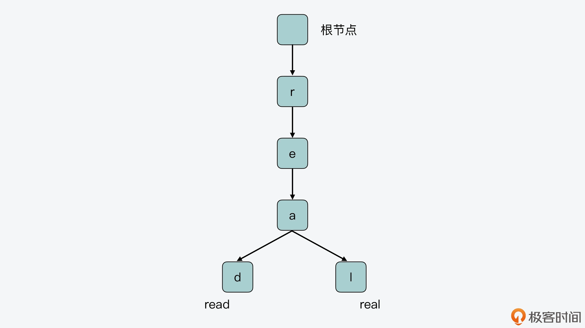
另外从图中，我们还可以看到，前缀树是把保存的 key 的公共前缀（即 r、e、a）独立出来共享使用的。这样一来，就可以避免在树中对相同的字符做重复存储。
而如果不采用这种方法，只是把这两个 key 保存在哈希表中，那么 key 的相同前缀就会被单独存储，这样就会导致内存空间的浪费。所以，相比哈希表的保存方式，前缀树能够很好地节省内存空间，这对于 Redis 来说是非常重要的。
前缀树的不足和 Radix Tree 的改进
当然，前缀树在每个节点中只保存一个字符，这样做的好处就是可以尽可能地共享不同 key 的公共前缀。但是，这也会导致 key 中的某些字符串，虽然不再被共享，可仍然会按照每个节点一个字符的形式来保存，这样反而会造成空间的浪费和查询性能的降低。
我来给你举个例子，假设有 5 个 key，分别是 radix、race、read、real 和 redis，它们在前缀树上的布局如下图所示。
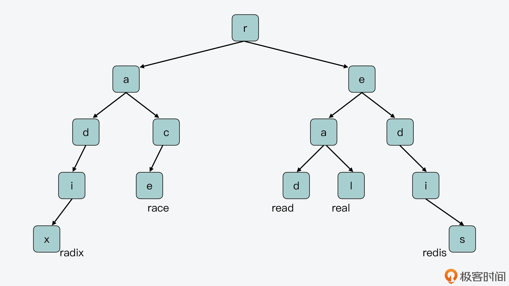
对于“redis”来说，因为它和“read”“real”共享“r”和“e”，和“radix”“race”共享“r”，也就是说“r”和“e”节点都分别指向多个子节点。类似的，“real”和“read”共享了“r”“e”和“a”前缀，“a”节点也指向了多个子节点。所以，在前缀树的节点中单独保存“r”“e”“a”是很有必要的。
但是，我们还是看“redis”这个 key，除了“r”“e”字符和其他 key 有共享外，“re”后面的“dis”没有再被其他 key 共享了。所以此时，其实并没有必要再对“dis”进行拆分，将其分成单个字符“d”“i”和“s”来保存，而是可以把它们合并在一起保存。
那么到这里，你就可以发现，在前缀树上，确实有的字符需要单独保存，用来作为不同 key 的公共前缀进行共享，但其实有的单字符节点可以和其他单字符节点进行合并，这样能进一步节省空间。
而从一个更加通用的角度来说，在前缀树的某个节点开始，如果从该节点到另外一个节点之间，每一个节点都只有一个子节点，那就表明这些节点对应的字符，并没有和其他节点共享了。那么如果我们还是按照前缀树的方式，为每一个字符创建一个节点进行保存的话，一是会浪费内存空间，二是在进行查询时，还需要逐一匹配每个节点表示的字符，对查询性能也会造成影响。
所以，在前缀树中，如果一系列单字符节点之间的分支连接是唯一的，那么这些单字符节点就可以合并成一个节点，而这种结构的树，就正是 Radix Tree，也被称为基数树。相比前缀树来说，Radix Tree 既可以节约内存的使用，同时还可以提高查询访问的效率。
我画了下面这张图，展示了刚才介绍的前缀树上的 5 个 key（radix、race、read、real 和 redis），在 Radix Tree 上的布局，你可以对照着看下它们在前缀树布局上的不同之处。
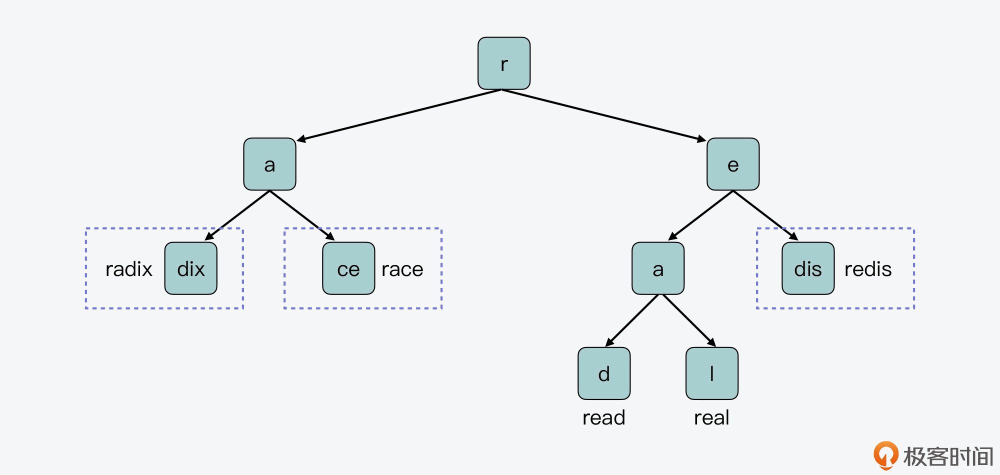
Radix Tree 数据结构
好了，从刚才介绍的 Radix Tree 的结构中，我们其实可以发现，在 Radix Tree 中存在两类节点。
第一类节点是非压缩节点，这类节点会包含多个指向不同子节点的指针，以及多个子节点所对应的字符，比如前面 Radix Tree 例子中的节点“r”，这个节点就包含了指向子节点“a”和“e”的指针。同时，如果从根节点到一个非压缩节点的路径上的字符串，已经对应了 Radix Tree 中保存的一个 key，那么这个非压缩节点中还包含了指向这个 key 对应的 value 的指针。
比如，下面这张图就显示了刚才例子中的节点 r，它是一个非压缩节点，指向了两个子节点，这两个子节点对应的字符分别是“a”和“e”，这个非压缩节点包含了指向子节点 a 和 e 的指针。此外，非压缩节点头部保存的 HDR，是 Radix Tree 节点数据结构中的元数据，我一会儿会给你具体介绍它。
第二类节点是压缩节点，这类节点会包含一个指向子节点的指针，以及子节点所代表的合并的字符串。比如前面 Radix Tree 例子中的节点 e，这个节点指向的子节点包含的字符串就是合并的字符串“dis”。和非压缩节点类似，如果从根节点到一个压缩节点的路径上的字符串，已经对应了 Radix Tree 中保存的一个 key，那么，这个压缩节点中还包含指向这个 key 对应的 value 的指针。
下图展示的就是一个压缩节点，它包含一个指向子节点的指针，这个子节点表示的合并字符串是“is”，所以在当前这个压缩节点中，保存了合并字符“is”。而和非压缩节点类似，压缩节点的头部 HDR，保存的也是 Radix Tree 节点结构中的元数据。
既然，这两类节点的头部 HDR 中都保存了元数据，下面我们就来看看，这些元数据都包括了什么内容。
首先，我们需要了解下 Radix Tree 的节点数据结构。Radix Tree 节点的数据结构是由rax.h文件中的 raxNode 定义的，如下所示：
typedef struct raxNode {
uint32_t iskey:1; //节点是否包含key
uint32_t isnull:1; //节点的值是否为NULL
uint32_t iscompr:1; //节点是否被压缩
uint32_t size:29; //节点大小
unsigned char data[]; //节点的实际存储数据
} raxNode;
该结构中的成员变量包括 4 个元数据，这四个元数据的含义分别如下。
- iskey：表示从 Radix Tree 的根节点到当前节点路径上的字符组成的字符串，是否表示了一个完整的 key。如果是的话，那么 iskey 的值为 1。否则，iskey 的值为 0。不过，这里需要注意的是，当前节点所表示的 key，并不包含该节点自身的内容。
- isnull：表示当前节点是否为空节点。如果当前节点是空节点，那么该节点就不需要为指向 value 的指针分配内存空间了。
- iscompr：表示当前节点是非压缩节点，还是压缩节点。
- size：表示当前节点的大小，具体值会根据节点是压缩节点还是非压缩节点而不同。如果当前节点是压缩节点，该值表示压缩数据的长度；如果是非压缩节点，该值表示该节点指向的子节点个数。
这 4 个元数据就对应了刚才介绍的压缩节点和非压缩节点头部的 HDR，其中，iskey、isnull 和 iscompr 分别用 1 bit 表示，而 size 占用 29 bit。
另外，从 raxNode 结构体中，我们还可以看到，除了元数据，该结构体中还有 char 类型数组 data。我们知道，data 是用来保存实际数据的。不过，这里保存的数据会根据当前节点的类型而有所不同：
- 对于非压缩节点来说，data 数组包括子节点对应的字符、指向子节点的指针，以及节点表示 key 时对应的 value 指针；
- 对于压缩节点来说，data 数组包括子节点对应的合并字符串、指向子节点的指针，以及节点为 key 时的 value 指针。
好了，到这里，你可能已经发现，在 raxNode 的实现中，无论是非压缩节点还是压缩节点，其实具有两个特点：
- 它们所代表的 key，是从根节点到当前节点路径上的字符串，但并不包含当前节点；
- 它们本身就已经包含了子节点代表的字符或合并字符串。而对于它们的子节点来说，也都属于非压缩或压缩节点，所以，子节点本身又会保存，子节点的子节点所代表的字符或合并字符串。
而这两个特点就给 Radix Tree 实际保存数据时的结构，带来了两个方面的变化。
一方面，Radix Tree 非叶子节点，要不然是压缩节点，只指向单个子节点，要不然是非压缩节点，指向多个子节点，但每个子节点只表示一个字符。所以，非叶子节点无法同时指向表示单个字符的子节点和表示合并字符串的子节点。
我给你举个例子，在下图的左半部分，节点 r 的子节点 a，它的两个子节点表示的都是合并字符串“dix”和“ce”。因此，节点 a 的 raxNode 结构，无法同时指向 dix 子节点和 ce 子节点。类似的，r 节点的子节点 e，它的两个子节点，一个表示的是单字符“a”，另一个表示的是合并字符串“dis”，节点 e 的 raxNode 结构也无法同时指向这两个子节点。
所以，在实际使用 raxNode 结构保存数据时，节点 dix 会被拆为节点 d 和 ix，节点 ce 会被拆为节点 c 和 e，节点 dis 会被拆为节点 d 和 is，如下图的右半部分所示。这样一来，节点 r 的子节点 a 和 e，就可以用非压缩节点的结构来保存了。

我们再来看另一方面，对于 Radix Tree 的叶子节点来说，因为它没有子节点了，所以，Redis 会用一个不包含子节点指针的 raxNode 节点来表示叶子节点，也就是说，叶子节点的 raxNode 元数据 size 为 0，没有子节点指针。如果叶子节点代表了一个 key，那么它的 raxNode 中是会保存这个 key 的 value 指针的。
为了便于你理解非压缩节点、压缩节点和叶子节点的 raxNode 结构内容，我画了下面这张图，你可以看下。
这张图上显示了 Radix Tree 最右侧分支的 4 个节点 r、e、d、is 和它们各自的 raxNode 内容。其中，节点 r、e 和 d 都不代表 key，所以它们的 iskey 值为 0，isnull 值为 1，没有为 value 指针分配空间。
节点 r 和 e 指向的子节点都是单字符节点，所以它们不是压缩节点，iscompr 值为 0。而节点 d 的子节点包含了合并字符串“is”，所以该节点是压缩节点，iscompr 值为 1。最后的叶子节点 is，它的 raxNode 的 size 为 0，没有子节点指针。不过，因为从根节点到节点 is 路径上的字符串代表了 key“redis”，所以，节点 is 的 value 指针指向了“redis”对应的 value 数据。
这里，你需要注意的是，为了满足内存对齐的需要，raxNode 会根据保存的字符串长度，在字符串后面填充一些字节，也就是图中的 padding 部分。
好了，到这里，你应该就理解了 Radix Tree 中不同节点的 raxNode 结构内容。那么接下来，我们再来了解下 Radix Tree 的基本操作函数。
Radix Tree 的操作函数
Radix Tree 的基本操作函数都是在rax.c文件中实现的，主要有以下几种。
- raxNew 函数
该函数的原型如下，它会调用 rax_malloc 函数分配一个新的 rax 结构体空间。
rax *raxNew(void)
rax 结构体的定义如下所示，其中包含了 Radix Tree 中的 key 个数、节点个数，以及指向头节点的指针，而 raxNew 函数会调用 raxNewNode 函数来创建头节点。
typedef struct rax {
raxNode *head; //Radix Tree的头指针
uint64_t numele; //Radix Tree中key的个数
uint64_t numnodes; //Radix Tree中raxNode的个数
} rax;
- raxNewNode 函数
该函数的原型如下，用来创建一个新的非压缩节点。它的参数 children 表示该非压缩节点的子节点个数，参数 datafield 表示是否要为 value 指针分配空间。
raxNode *raxNewNode(size_t children, int datafield)
这里，你需要注意的是，压缩节点的创建并不是通过 raxNewNode 函数来完成的，而是通过 raxCompressNode 函数来实现的。
- raxGenericInsert 函数
该函数原型如下，用来向 Radix Tree 中插入一个长度为 len 的字符串 s。
int raxGenericInsert(rax *rax, unsigned char *s, size_t len, void *data, void **old, int overwrite)
- raxLowWalk 函数
该函数原型如下，当需要在 Radix Tree 中查找、插入或是删除节点时，都会调用该函数。
static inline size_t raxLowWalk(rax *rax, unsigned char *s, size_t len, raxNode **stopnode, raxNode ***plink, int *splitpos, raxStack *ts)
- raxGetData/raxSetData 函数
这两个函数的原型如下所示，它们分别用来获得 raxNode 中保存的 value 指针，以及设置 raxNode 中保存的 value 指针。
void *raxGetData(raxNode *n)
void raxSetData(raxNode *n, void *data)
好了，了解了 Radix Tree 的基本操作函数后，我们最后再来看下，Stream 是如何把 Radix Tree 和 listpack 组合起来使用的。
Stream 如何组合使用 Radix Tree 和 listpack？
我们知道，Stream 保存的消息数据，按照 key-value 形式来看的话，消息 ID 就相当于 key，而消息内容相当于是 value。也就是说，Stream 会使用 Radix Tree 来保存消息 ID，然后将消息内容保存在 listpack 中，并作为消息 ID 的 value，用 raxNode 的 value 指针指向对应的 listpack。
这里我放了一张图，展示了 Stream 结构、rax、raxNode 以及 listpack 相互之间的关系。注意，在这张图中，我们假设就只有一个 streamID 作为 key。
我们可以看到，stream 结构体中的 rax 指针，指向了 Radix Tree 的头节点，也就是 rax 结构体。rax 结构体中的头指针进一步指向了第一个 raxNode。因为我们假设就只有一个 streamID，暂时没有其他 streamID 和该 streamID 共享前缀，所以，当前这个 streamID 就可以用压缩节点保存。
然后，第一个 raxNode 指向了下一个 raxNode，也是 Radix Tree 的叶子节点。这个节点的 size 为 0，它的 value 指针指向了实际的消息内容。
而在消息内容这里，是使用了 listpack 进行保存的。你可以看到，listpack 中是使用了 master entry 来保存键值对类型消息中的键，而值会在 master entry 后面保存。这种保存方式其实也是为了节省内存空间，这是因为很多消息的键是相同的，保存一份就行。关于在 Stream 中，将消息的键和值分开保存到 listpack 中的这种设计方法，我会在后面的课程中继续给你详细介绍。
小结
今天这节课上，我带你学习了 Redis Stream 数据类型的底层实现结构。现在你已经知道，Stream 最主要的作用就是可以用来保存消息数据。
每条消息都会有一个时间戳和序号组成的消息 ID，以及键值对组成的消息内容。而因为不同消息 ID 中的时间戳，通常会共享部分相同的前缀，如果采用诸如哈希表的结构来保存消息，每个消息 ID 都单独保存，容易造成空间浪费。因此，Stream 为了节省内存空间，采用了 Radix Tree 来保存消息 ID，同时使用 listpack 来保存消息本身的内容。
在 Radix Tree 的设计实现中，它的整体结构和节点数据结构是理解 Radix Tree 的重要基础，所以，你要重点关注 Radix Tree 的非压缩节点和压缩节点类型，以及源码中的实际数据结构 raxNode。
另外，为了方便你更好地掌握非压缩节点和压缩节点，我再给你总结下它们的相同之处和区别，你也可以来整体回顾下。
它们的相同之处在于：
- 都有保存元数据的节点头 HDR；
- 都会包含指向子节点的指针，以及子节点所代表的字符串。
- 从根节点到当前节点路径上的字符串如果是 Radix Tree 的一个 key，它们都会包含指向 key 对应 value 的指针。
不同之处在于：
- 非压缩节点指向的子节点，每个子节点代表一个字符，非压缩节点可以指向多个子节点；
- 压缩节点指向的子节点，代表的是一个合并字符串，压缩节点只能指向一个子节点。
而除了学习 raxNode，我还给你介绍了下 Radix Tree 中几个基本操作函数的作用，并展示了 Stream 类型是如何把消息 ID 和消息内容，分别保存在 Radix Tree 和 listpack 中的。
这里你要注意的是，因为 Radix Tree 在保存具有公共前缀的数据时，能有效节省内存开销。同时，Radix Tree 本身也是有序的树型索引，可以支持单点和范围查询。所以，Redis 把消息 ID 保存在 Radix Tree 中，既可以节省内存空间，也能高效支持消息 ID 的查询。而 listpack 本身是紧凑列表，在保存大量消息内容的同时，也能有效节省内存。
所以我希望，你能通过 Stream 对 Radix Tree 和 listpack 的使用，举一反三，把它们用在相应的消息存取或是大量字符串存取的场景中。
每课一问
作为有序索引，Radix Tree 也能提供范围查询，那么与我们日常使用的 B+ 树，以及【第 5 讲】中介绍的跳表相比，你觉得 Radix Tree 有什么优势和不足吗？
欢迎在留言区分享你的答案和思考过程，如果觉得有收获，也欢迎你把今天的内容分享给更多的朋友。
08 Redis server启动后会做哪些操作？
从这节课开始，我们就来到了课程的第二个模块，在这个模块里，我会带你了解和学习与 Redis 实例运行相关方面的知识，包括 Redis server 的启动过程、基于事件驱动框架的网络通信机制以及 Redis 线程执行模型。今天，我们先来学习下 Redis server 的启动过程。
我们知道，main 函数是 Redis 整个运行程序的入口，并且 Redis 实例在运行时，也会从这个 main 函数开始执行。同时，由于 Redis 是典型的 Client-Server 架构，一旦 Redis 实例开始运行，Redis server 也就会启动，而 main 函数其实也会负责 Redis server 的启动运行。
我在【第 1 讲】给你介绍过 Redis 源码的整体架构。其中，Redis 运行的基本控制逻辑是在server.c文件中完成的，而 main 函数就是在 server.c 中。
你平常在设计或实现一个网络服务器程序时，可能会遇到一个问题，那就是服务器启动时，应该做哪些操作、有没有一个典型的参考实现。所以今天这节课，我就从 main 函数开始，给你介绍下 Redis server 是如何在 main 函数中启动并完成初始化的。通过这节课内容的学习，你可以掌握 Redis 针对以下三个问题的实现思路：
- Redis server 启动后具体会做哪些初始化操作？
- Redis server 初始化时有哪些关键配置项？
- Redis server 如何开始处理客户端请求？
并且，Redis server 设计和实现的启动过程也具有一定的代表性，你在学习后，就可以把其中的关键操作推而广之，用在自己的网络服务器实现中。
好了，接下来，我们先从 main 函数开始，来了解下它在 Redis server 中的设计实现思路。
main 函数：Redis server 的入口
一般来说，一个使用 C 开发的系统软件启动运行的代码逻辑，都是实现在了 main 函数当中，所以在正式了解 Redis 中 main 函数的实现之前，我想先给你分享一个小 Tips，就是你在阅读学习一个系统的代码时，可以先找下 main 函数，看看它的执行过程。
那么，对于 Redis 的 main 函数来说，我把它执行的工作分成了五个阶段。
阶段一：基本初始化
在这个阶段，main 函数主要是完成一些基本的初始化工作，包括设置 server 运行的时区、设置哈希函数的随机种子等。这部分工作的主要调用函数如下所示：
//设置时区
setlocale(LC_COLLATE,"");
tzset();
...
//设置随机种子
char hashseed[16];
getRandomHexChars(hashseed,sizeof(hashseed));
dictSetHashFunctionSeed((uint8_t*)hashseed);
这里，你需要注意的是，在 main 函数的开始部分，有一段宏定义覆盖的代码。这部分代码的作用是，如果定义了 REDIS_TEST 宏定义，并且 Redis server 启动时的参数符合测试参数，那么 main 函数就会执行相应的测试程序。
这段宏定义的代码如以下所示，其中的示例代码就是调用 ziplist 的测试函数 ziplistTest：
#ifdef REDIS_TEST
//如果启动参数有test和ziplist，那么就调用ziplistTest函数进行ziplist的测试
if (argc == 3 && !strcasecmp(argv[1], "test")) {
if (!strcasecmp(argv[2], "ziplist")) {
return ziplistTest(argc, argv);
}
...
}
#endif
阶段二：检查哨兵模式，并检查是否要执行 RDB 检测或 AOF 检测
Redis server 启动后，可能是以哨兵模式运行的，而哨兵模式运行的 server 在参数初始化、参数设置，以及 server 启动过程中要执行的操作等方面，与普通模式 server 有所差别。所以，main 函数在执行过程中需要根据 Redis 配置的参数，检查是否设置了哨兵模式。
如果有设置哨兵模式的话，main 函数会调用 initSentinelConfig 函数，对哨兵模式的参数进行初始化设置，以及调用 initSentinel 函数，初始化设置哨兵模式运行的 server。有关哨兵模式运行的 Redis server 相关机制，我会在第 21 讲中给你详细介绍。
下面的代码展示了 main 函数中对哨兵模式的检查，以及对哨兵模式的初始化，你可以看下：
...
//判断server是否设置为哨兵模式
if (server.sentinel_mode) {
initSentinelConfig(); //初始化哨兵的配置
initSentinel(); //初始化哨兵模式
}
...
除了检查哨兵模式以外，main 函数还会检查是否要执行 RDB 检测或 AOF 检查，这对应了实际运行的程序是 redis-check-rdb 或 redis-check-aof。在这种情况下，main 函数会调用 redis_check_rdb_main 函数或 redis_check_aof_main 函数，检测 RDB 文件或 AOF 文件。你可以看看下面的代码，其中就展示了 main 函数对这部分内容的检查和调用：
...
//如果运行的是redis-check-rdb程序，调用redis_check_rdb_main函数检测RDB文件
if (strstr(argv[0],"redis-check-rdb") != NULL)
redis_check_rdb_main(argc,argv,NULL);
//如果运行的是redis-check-aof程序，调用redis_check_aof_main函数检测AOF文件
else if (strstr(argv[0],"redis-check-aof") != NULL)
redis_check_aof_main(argc,argv);
...
阶段三：运行参数解析
在这一阶段，main 函数会对命令行传入的参数进行解析，并且调用 loadServerConfig 函数，对命令行参数和配置文件中的参数进行合并处理，然后为 Redis 各功能模块的关键参数设置合适的取值，以便 server 能高效地运行。
阶段四：初始化 server
在完成对运行参数的解析和设置后，main 函数会调用 initServer 函数，对 server 运行时的各种资源进行初始化工作。这主要包括了 server 资源管理所需的数据结构初始化、键值对数据库初始化、server 网络框架初始化等。
而在调用完 initServer 后，main 函数还会再次判断当前 server 是否为哨兵模式。如果是哨兵模式，main 函数会调用 sentinelIsRunning 函数，设置启动哨兵模式。否则的话，main 函数会调用 loadDataFromDisk 函数，从磁盘上加载 AOF 或者是 RDB 文件，以便恢复之前的数据。
阶段五：执行事件驱动框架
为了能高效处理高并发的客户端连接请求，Redis 采用了事件驱动框架，来并发处理不同客户端的连接和读写请求。所以，main 函数执行到最后时，会调用 aeMain 函数进入事件驱动框架，开始循环处理各种触发的事件。
我把刚才介绍的五个阶段涉及到的关键操作，画在了下面的图中，你可以再回顾下。

那么，在这五个阶段当中，阶段三、四和五其实就包括了 Redis server 启动过程中的关键操作。所以接下来，我们就来依次学习下这三个阶段中的主要工作。
Redis 运行参数解析与设置
我们知道，Redis 提供了丰富的功能，既支持多种键值对数据类型的读写访问，还支持数据持久化保存、主从复制、切片集群等。而这些功能的高效运行，其实都离不开相关功能模块的关键参数配置。
举例来说，Redis 为了节省内存，设计了内存紧凑型的数据结构来保存 Hash、Sorted Set 等键值对类型。但是在使用了内存紧凑型的数据结构之后，如果往数据结构存入的元素个数过多或元素过大的话，键值对的访问性能反而会受到影响。因此，为了平衡内存使用量和系统访问性能，我们就可以通过参数，来设置和调节内存紧凑型数据结构的使用条件。
也就是说，掌握这些关键参数的设置，可以帮助我们提升 Redis 实例的运行效率。
不过，Redis 的参数有很多，我们无法在一节课中掌握所有的参数设置。所以下面，我们可以先来学习下 Redis 的主要参数类型，这样就能对各种参数形成一个全面的了解。同时，我也会给你介绍一些和 server 运行关系密切的参数及其设置方法，以便你可以配置好这些参数，让 server 高效运行起来。
Redis 的主要参数类型
首先，Redis 运行所需的各种参数，都统一定义在了server.h文件的 redisServer 结构体中。根据参数作用的范围，我把各种参数划分为了七大类型，包括通用参数、数据结构参数、网络参数、持久化参数、主从复制参数、切片集群参数、性能优化参数。具体你可以参考下面表格中的内容。
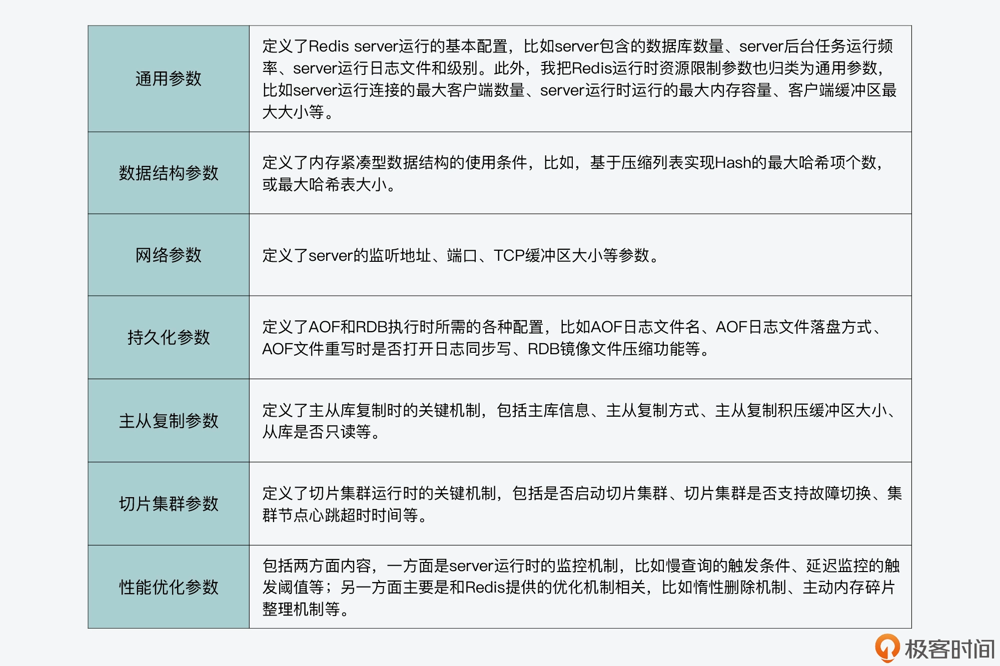
这样，如果你能按照上面的划分方法给 Redis 参数进行归类，那么你就可以发现，这些参数实际和 Redis 的主要功能机制是相对应的。所以，如果你要深入掌握这些参数的典型配置值，你就需要对相应功能机制的工作原理有所了解。我在接下来的课程中，也会在介绍 Redis 功能模块设计的同时，带你了解下其相应的典型参数配置。
好，现在我们就了解了 Redis 的七大参数类型，以及它们基本的作用范围，那么下面我们就接着来学习下，Redis 是如何针对这些参数进行设置的。
Redis 参数的设置方法
Redis 对运行参数的设置实际上会经过三轮赋值，分别是默认配置值、命令行启动参数，以及配置文件配置值。
首先，Redis 在 main 函数中会先调用 initServerConfig 函数，为各种参数设置默认值。参数的默认值统一定义在 server.h 文件中，都是以 CONFIG_DEFAULT 开头的宏定义变量。下面的代码显示的是部分参数的默认值，你可以看下。
#define CONFIG_DEFAULT_HZ 10 //server后台任务的默认运行频率
#define CONFIG_MIN_HZ 1 // server后台任务的最小运行频率
#define CONFIG_MAX_HZ 500 // server后台任务的最大运行频率
#define CONFIG_DEFAULT_SERVER_PORT 6379 //server监听的默认TCP端口
#define CONFIG_DEFAULT_CLIENT_TIMEOUT 0 //客户端超时时间，默认为0，表示没有超时限制
在 server.h 中提供的默认参数值，一般都是典型的配置值。因此，如果你在部署使用 Redis 实例的过程中，对 Redis 的工作原理不是很了解，就可以使用代码中提供的默认配置。
当然，如果你对 Redis 各功能模块的工作机制比较熟悉的话，也可以自行设置运行参数。你可以在启动 Redis 程序时，在命令行上设置运行参数的值。比如，如果你想将 Redis server 监听端口从默认的 6379 修改为 7379，就可以在命令行上设置 port 参数为 7379，如下所示：
./redis-server --port 7379
这里，你需要注意的是，Redis 的命令行参数设置需要使用两个减号“–”来表示相应的参数名，否则的话，Redis 就无法识别所设置的运行参数。
Redis 在使用 initServerConfig 函数对参数设置默认配置值后，接下来，main 函数就会对 Redis 程序启动时的命令行参数进行逐一解析。
main 函数会把解析后的参数及参数值保存成字符串，接着，main 函数会调用 loadServerConfig 函数进行第二和第三轮的赋值。以下代码显示了 main 函数对命令行参数的解析，以及调用 loadServerConfig 函数的过程，你可以看下。
int main(int argc, char **argv) {
…
//保存命令行参数
for (j = 0; j < argc; j++) server.exec_argv[j] = zstrdup(argv[j]);
…
if (argc >= 2) {
…
//对每个运行时参数进行解析
while(j != argc) {
…
}
…
//
loadServerConfig(configfile,options);
}
这里你要知道的是，loadServerConfig 函数是在config.c文件中实现的，该函数是以 Redis 配置文件和命令行参数的解析字符串为参数，将配置文件中的所有配置项读取出来，形成字符串。紧接着，loadServerConfig 函数会把解析后的命令行参数，追加到配置文件形成的配置项字符串。
这样一来，配置项字符串就同时包含了配置文件中设置的参数，以及命令行设置的参数。
最后，loadServerConfig 函数会进一步调用 loadServerConfigFromString 函数，对配置项字符串中的每一个配置项进行匹配。一旦匹配成功，loadServerConfigFromString 函数就会按照配置项的值设置 server 的参数。
以下代码显示了 loadServerConfigFromString 函数的部分内容。这部分代码是使用了条件分支，来依次比较配置项是否是“timeout”和“tcp-keepalive”，如果匹配上了，就将 server 参数设置为配置项的值。
同时，代码还会检查配置项的值是否合理，比如是否小于 0。如果参数值不合理，程序在运行时就会报错。另外对于其他的配置项，loadServerConfigFromString 函数还会继续使用 elseif 分支进行判断。
loadServerConfigFromString(char *config) {
…
//参数名匹配，检查参数是否为“timeout“
if (!strcasecmp(argv[0],"timeout") && argc == 2) {
//设置server的maxidletime参数
server.maxidletime = atoi(argv[1]);
//检查参数值是否小于0，小于0则报错
if (server.maxidletime < 0) {
err = "Invalid timeout value"; goto loaderr;
}
}
//参数名匹配，检查参数是否为“tcp-keepalive“
else if (!strcasecmp(argv[0],"tcp-keepalive") && argc == 2) {
//设置server的tcpkeepalive参数
server.tcpkeepalive = atoi(argv[1]);
//检查参数值是否小于0，小于0则报错
if (server.tcpkeepalive < 0) {
err = "Invalid tcp-keepalive value"; goto loaderr;
}
}
…
}
好了，到这里，你应该就了解了 Redis server 运行参数配置的步骤，我也画了一张图，以便你更直观地理解这个过程。

在完成参数配置后，main 函数会开始调用 initServer 函数，对 server 进行初始化。所以接下来，我们继续来了解 Redis server 初始化时的关键操作。
initServer：初始化 Redis server
Redis server 的初始化操作，主要可以分成三个步骤。
- 第一步，Redis server 运行时需要对多种资源进行管理。
比如说，和 server 连接的客户端、从库等，Redis 用作缓存时的替换候选集，以及 server 运行时的状态信息，这些资源的管理信息都会在 initServer 函数中进行初始化。
我给你举个例子，initServer 函数会创建链表来分别维护客户端和从库，并调用 evictionPoolAlloc 函数（在evict.c中）采样生成用于淘汰的候选 key 集合。同时，initServer 函数还会调用 resetServerStats 函数（在 server.c 中）重置 server 运行状态信息。
- 第二步，在完成资源管理信息的初始化后，initServer 函数会对 Redis 数据库进行初始化。
因为一个 Redis 实例可以同时运行多个数据库，所以 initServer 函数会使用一个循环，依次为每个数据库创建相应的数据结构。
这个代码逻辑是实现在 initServer 函数中，它会为每个数据库执行初始化操作，包括创建全局哈希表，为过期 key、被 BLPOP 阻塞的 key、将被 PUSH 的 key 和被监听的 key 创建相应的信息表。
for (j = 0; j < server.dbnum; j++) {
//创建全局哈希表
server.db[j].dict = dictCreate(&dbDictType,NULL);
//创建过期key的信息表
server.db[j].expires = dictCreate(&keyptrDictType,NULL);
//为被BLPOP阻塞的key创建信息表
server.db[j].blocking_keys = dictCreate(&keylistDictType,NULL);
//为将执行PUSH的阻塞key创建信息表
server.db[j].ready_keys = dictCreate(&objectKeyPointerValueDictType,NULL);
//为被MULTI/WATCH操作监听的key创建信息表
server.db[j].watched_keys = dictCreate(&keylistDictType,NULL);
…
}
- 第三步，initServer 函数会为运行的 Redis server 创建事件驱动框架，并开始启动端口监听，用于接收外部请求。
注意，为了高效处理高并发的外部请求，initServer 在创建的事件框架中，针对每个监听 IP 上可能发生的客户端连接，都创建了监听事件，用来监听客户端连接请求。同时，initServer 为监听事件设置了相应的处理函数 acceptTcpHandler。
这样一来，只要有客户端连接到 server 监听的 IP 和端口，事件驱动框架就会检测到有连接事件发生，然后调用 acceptTcpHandler 函数来处理具体的连接。你可以参考以下代码中展示的处理逻辑：
//创建事件循环框架
server.el = aeCreateEventLoop(server.maxclients+CONFIG_FDSET_INCR);
…
//开始监听设置的网络端口
if (server.port != 0 &&
listenToPort(server.port,server.ipfd,&server.ipfd_count) == C_ERR)
exit(1);
…
//为server后台任务创建定时事件
if (aeCreateTimeEvent(server.el, 1, serverCron, NULL, NULL) == AE_ERR) {
serverPanic("Can't create event loop timers.");
exit(1);
}
…
//为每一个监听的IP设置连接事件的处理函数acceptTcpHandler
for (j = 0; j < server.ipfd_count; j++) {
if (aeCreateFileEvent(server.el, server.ipfd[j], AE_READABLE,
acceptTcpHandler,NULL) == AE_ERR)
{ … }
}
那么到这里，Redis server 在完成运行参数设置和初始化后，就可以开始处理客户端请求了。为了能持续地处理并发的客户端请求，server 在 main 函数的最后，会进入事件驱动循环机制。而这就是接下来，我们要了解的事件驱动框架的执行过程。
执行事件驱动框架
事件驱动框架是 Redis server 运行的核心。该框架一旦启动后，就会一直循环执行，每次循环会处理一批触发的网络读写事件。关于事件驱动框架本身的设计思想与实现方法，我会在第 9 至 11 讲给你具体介绍。这节课，我们主要是学习 Redis 入口的 main 函数中，是如何转换到事件驱动框架进行执行的。
其实，进入事件驱动框架开始执行并不复杂，main 函数直接调用事件框架的主体函数 aeMain（在ae.c文件中）后，就进入事件处理循环了。
当然，在进入事件驱动循环前，main 函数会分别调用 aeSetBeforeSleepProc 和 aeSetAfterSleepProc 两个函数，来设置每次进入事件循环前 server 需要执行的操作，以及每次事件循环结束后 server 需要执行的操作。下面代码显示了这部分的执行逻辑，你可以看下。
int main(int argc, char **argv) {
…
aeSetBeforeSleepProc(server.el,beforeSleep);
aeSetAfterSleepProc(server.el,afterSleep);
aeMain(server.el);
aeDeleteEventLoop(server.el);
...
}
小结
今天这节课，我们通过 server.c 文件中 main 函数的设计和实现思路，了解了 Redis server 启动后的五个主要阶段。在这五个阶段中，运行参数解析、server 初始化和执行事件驱动框架则是 Redis sever 启动过程中的三个关键阶段。所以相应的，我们需要重点关注以下三个要点。
第一，main 函数是使用 initServerConfig 给 server 运行参数设置默认值，然后会解析命令行参数，并通过 loadServerConfig 读取配置文件参数值，将命令行参数追加至配置项字符串。最后，Redis 会调用 loadServerConfigFromString 函数，来完成配置文件参数和命令行参数的设置。
第二，在 Redis server 完成参数设置后，initServer 函数会被调用，用来初始化 server 资源管理的主要结构，同时会初始化数据库启动状态，以及完成 server 监听 IP 和端口的设置。
第三，一旦 server 可以接收外部客户端的请求后，main 函数会把程序的主体控制权，交给事件驱动框架的入口函数，也就 aeMain 函数。aeMain 函数会一直循环执行，处理收到的客户端请求。到此为止，server.c 中的 main 函数功能就已经全部完成了，程序控制权也交给了事件驱动循环框架，Redis 也就可以正常处理客户端请求了。
实际上，Redis server 的启动过程从基本的初始化操作，到命令行和配置文件的参数解析设置，再到初始化 server 各种数据结构，以及最后的执行事件驱动框架，这是一个典型的网络服务器执行过程，你在开发网络服务器时，就可以作为参考。
而且，掌握了启动过程中的初始化操作，还可以帮你解答一些使用中的疑惑。比如，Redis 启动时是先读取 RDB 文件，还是先读取 AOF 文件。如果你了解了 Redis server 的启动过程，就可以从 loadDataFromDisk 函数中看到，Redis server 会先读取 AOF；而如果没有 AOF，则再读取 RDB。
所以，掌握 Redis server 启动过程，有助于你更好地了解 Redis 运行细节，这样当你遇到问题时，就知道还可以从启动过程中去溯源 server 的各种初始状态，从而助力你更好地解决问题。
每课一问
Redis 源码的 main 函数在调用 initServer 函数之前，会执行如下的代码片段，你知道这个代码片段的作用是什么吗？
int main(int argc, char **argv) {
...
server.supervised = redisIsSupervised(server.supervised_mode);
int background = server.daemonize && !server.supervised;
if (background) daemonize();
...
}
欢迎在留言区分享你的答案和见解，我们一起交流讨论。如果觉得有收获，也欢迎你把今天的内容分享给更多的朋友。
09 Redis事件驱动框架（上）：何时使用select、poll、epoll？
Redis 作为一个 Client-Server 架构的数据库，其源码中少不了用来实现网络通信的部分。而你应该也清楚，通常系统实现网络通信的基本方法是使用 Socket 编程模型，包括创建 Socket、监听端口、处理连接请求和读写请求。但是，由于基本的 Socket 编程模型一次只能处理一个客户端连接上的请求，所以当要处理高并发请求时，一种方案就是使用多线程，让每个线程负责处理一个客户端的请求。
而 Redis 负责客户端请求解析和处理的线程只有一个，那么如果直接采用基本 Socket 模型，就会影响 Redis 支持高并发的客户端访问。
因此，为了实现高并发的网络通信，我们常用的 Linux 操作系统，就提供了 select、poll 和 epoll 三种编程模型，而在 Linux 上运行的 Redis，通常就会采用其中的 epoll 模型来进行网络通信。
这里你可能就要问了：为啥 Redis 通常会选择 epoll 模型呢？这三种编程模型之间有什么区别？如果我们自己要开发高并发的服务器处理程序时，应该如何选择使用呢？
今天这节课，我就来和你聊聊，Redis 在高并发网络通信编程模型上的选择和设计思想。通过这节课的学习，你可以掌握 select、poll 和 epoll 三种模型的工作机制和使用方法。了解这些内容，一方面可以帮助你理解 Redis 整体网络通信框架的工作基础，另一方面，也可以让你学会如何进行高并发网络通信的开发。
那么，要想理解 select、poll 和 epoll 的优势，我们需要有个对比基础，也就是基本的 Socket 编程模型。所以接下来，我们就先来了解下基本的 Socket 编程模型，以及它的不足之处。
为什么 Redis 不使用基本的 Socket 编程模型？
刚刚我们说过，使用 Socket 模型实现网络通信时，需要经过创建 Socket、监听端口、处理连接和读写请求等多个步骤，现在我们就来具体了解下这些步骤中的关键操作，以此帮助我们分析 Socket 模型中的不足。
首先，当我们需要让服务器端和客户端进行通信时，可以在服务器端通过以下三步，来创建监听客户端连接的监听套接字（Listening Socket）：
- 调用 socket 函数，创建一个套接字。我们通常把这个套接字称为主动套接字（Active Socket）；
- 调用 bind 函数，将主动套接字和当前服务器的 IP 和监听端口进行绑定；
- 调用 listen 函数，将主动套接字转换为监听套接字，开始监听客户端的连接。

在完成上述三步之后，服务器端就可以接收客户端的连接请求了。为了能及时地收到客户端的连接请求，我们可以运行一个循环流程，在该流程中调用 accept 函数，用于接收客户端连接请求。
这里你需要注意的是，accept 函数是阻塞函数，也就是说，如果此时一直没有客户端连接请求，那么，服务器端的执行流程会一直阻塞在 accept 函数。一旦有客户端连接请求到达，accept 将不再阻塞，而是处理连接请求，和客户端建立连接，并返回已连接套接字（Connected Socket）。
最后，服务器端可以通过调用 recv 或 send 函数，在刚才返回的已连接套接字上，接收并处理读写请求，或是将数据发送给客户端。
下面的代码展示了这一过程，你可以看下。
listenSocket = socket(); //调用socket系统调用创建一个主动套接字
bind(listenSocket); //绑定地址和端口
listen(listenSocket); //将默认的主动套接字转换为服务器使用的被动套接字，也就是监听套接字
while (1) { //循环监听是否有客户端连接请求到来
connSocket = accept(listenSocket); //接受客户端连接
recv(connsocket); //从客户端读取数据，只能同时处理一个客户端
send(connsocket); //给客户端返回数据，只能同时处理一个客户端
}
不过，从上述代码中，你可能会发现，虽然它能够实现服务器端和客户端之间的通信，但是程序每调用一次 accept 函数，只能处理一个客户端连接。因此，如果想要处理多个并发客户端的请求，我们就需要使用多线程的方法，来处理通过 accept 函数建立的多个客户端连接上的请求。
使用这种方法后，我们需要在 accept 函数返回已连接套接字后，创建一个线程，并将已连接套接字传递给创建的线程，由该线程负责这个连接套接字上后续的数据读写。同时，服务器端的执行流程会再次调用 accept 函数，等待下一个客户端连接。
以下给出的示例代码，就展示了使用多线程来提升服务器端的并发客户端处理能力：
listenSocket = socket(); //调用socket系统调用创建一个主动套接字
bind(listenSocket); //绑定地址和端口
listen(listenSocket); //将默认的主动套接字转换为服务器使用的被动套接字，即监听套接字
while (1) { //循环监听是否有客户端连接到来
connSocket = accept(listenSocket); //接受客户端连接，返回已连接套接字
pthread_create(processData, connSocket); //创建新线程对已连接套接字进行处理
}
//处理已连接套接字上的读写请求
processData(connSocket){
recv(connsocket); //从客户端读取数据，只能同时处理一个客户端
send(connsocket); //给客户端返回数据，只能同时处理一个客户端
}
不过，虽然这种方法能提升服务器端的并发处理能力，遗憾的是，Redis 的主执行流程是由一个线程在执行，无法使用多线程的方式来提升并发处理能力。所以，该方法对 Redis 并不起作用。
那么，还有没有什么其他方法，能帮助 Redis 提升并发客户端的处理能力呢？
这就要用到操作系统提供的 IO 多路复用功能了。在基本的 Socket 编程模型中，accept 函数只能在一个监听套接字上监听客户端的连接，recv 函数也只能在一个已连接套接字上，等待客户端发送的请求。
而 IO 多路复用机制，可以让程序通过调用多路复用函数，同时监听多个套接字上的请求。这里既可以包括监听套接字上的连接请求，也可以包括已连接套接字上的读写请求。这样当有一个或多个套接字上有请求时，多路复用函数就会返回。此时，程序就可以处理这些就绪套接字上的请求，比如读取就绪的已连接套接字上的请求内容。
因为 Linux 操作系统在实际应用中比较广泛，所以这节课，我们主要来学习 Linux 上的 IO 多路复用机制。Linux 提供的 IO 多路复用机制主要有三种，分别是 select、poll 和 epoll。下面，我们就分别来学习下这三种机制的实现思路和使用方法。然后，我们再来看看，为什么 Redis 通常是选择使用 epoll 这种机制来实现网络通信。
使用 select 和 poll 机制实现 IO 多路复用
首先，我们来了解下 select 机制的编程模型。
不过在具体学习之前，我们需要知道，对于一种 IO 多路复用机制来说，我们需要掌握哪些要点，这样可以帮助我们快速抓住不同机制的联系与区别。其实，当我们学习 IO 多路复用机制时，我们需要能回答以下问题：
- 第一，多路复用机制会监听套接字上的哪些事件？
- 第二，多路复用机制可以监听多少个套接字？
- 第三，当有套接字就绪时，多路复用机制要如何找到就绪的套接字？
select 机制与使用
select 机制中的一个重要函数就是 select 函数。对于 select 函数来说，它的参数包括监听的文件描述符数量nfds、被监听描述符的三个集合*readfds、__writefds和exceptfds，以及监听时阻塞等待的超时时长*timeout。下面的代码显示了 select 函数的原型，你可以看下。
int select (int __nfds, fd_set *__readfds, fd_set *__writefds, fd_set *__exceptfds, struct timeval *__timeout)
这里你需要注意的是，Linux 针对每一个套接字都会有一个文件描述符，也就是一个非负整数，用来唯一标识该套接字。所以，在多路复用机制的函数中，Linux 通常会用文件描述符作为参数。有了文件描述符，函数也就能找到对应的套接字，进而进行监听、读写等操作。
所以，select 函数的参数readfds、writefds和__exceptfds表示的是，被监听描述符的集合，其实就是被监听套接字的集合。那么，为什么会有三个集合呢？
这就和我刚才提出的第一个问题相关，也就是多路复用机制会监听哪些事件。select 函数使用三个集合，表示监听的三类事件，分别是读数据事件（对应readfds集合）、写数据事件（对应writefds集合）和异常事件（对应__exceptfds集合）。
我们进一步可以看到，参数 readfds、writefds 和 exceptfds 的类型是 fd_set 结构体，它主要定义部分如下所示。其中，fd_mask类型是 long int 类型的别名，__FD_SETSIZE 和 __NFDBITS 这两个宏定义的大小默认为 1024 和 32。
typedef struct {
…
__fd_mask __fds_bits[__FD_SETSIZE / __NFDBITS];
…
} fd_set
所以，fd_set 结构体的定义，其实就是一个 long int 类型的数组，该数组中一共有 32 个元素（1024/32=32），每个元素是 32 位（long int 类型的大小），而每一位可以用来表示一个文件描述符的状态。
好了，了解了 fd_set 结构体的定义，我们就可以回答刚才提出的第二个问题了。select 函数对每一个描述符集合，都可以监听 1024 个描述符。
接下来，我们再来了解下如何使用 select 机制来实现网络通信。
首先，我们在调用 select 函数前，可以先创建好传递给 select 函数的描述符集合，然后再创建监听套接字。而为了让创建的监听套接字能被 select 函数监控，我们需要把这个套接字的描述符加入到创建好的描述符集合中。
然后，我们就可以调用 select 函数，并把创建好的描述符集合作为参数传递给 select 函数。程序在调用 select 函数后，会发生阻塞。而当 select 函数检测到有描述符就绪后，就会结束阻塞，并返回就绪的文件描述符个数。
那么此时，我们就可以在描述符集合中查找哪些描述符就绪了。然后，我们对已就绪描述符对应的套接字进行处理。比如，如果是 __readfds 集合中有描述符就绪，这就表明这些就绪描述符对应的套接字上，有读事件发生，此时，我们就在该套接字上读取数据。
而因为 select 函数一次可以监听 1024 个文件描述符的状态，所以 select 函数在返回时，也可能会一次返回多个就绪的文件描述符。这样一来，我们就可以使用一个循环流程，依次对就绪描述符对应的套接字进行读写或异常处理操作。
我也画了张图，展示了使用 select 函数进行网络通信的基本流程，你可以看下。
下面的代码展示的是使用 select 函数，进行并发客户端处理的关键步骤和主要函数调用：
int sock_fd,conn_fd; //监听套接字和已连接套接字的变量
sock_fd = socket() //创建套接字
bind(sock_fd) //绑定套接字
listen(sock_fd) //在套接字上进行监听，将套接字转为监听套接字
fd_set rset; //被监听的描述符集合，关注描述符上的读事件
int max_fd = sock_fd
//初始化rset数组，使用FD_ZERO宏设置每个元素为0
FD_ZERO(&rset);
//使用FD_SET宏设置rset数组中位置为sock_fd的文件描述符为1，表示需要监听该文件描述符
FD_SET(sock_fd,&rset);
//设置超时时间
struct timeval timeout;
timeout.tv_sec = 3;
timeout.tv_usec = 0;
while(1) {
//调用select函数，检测rset数组保存的文件描述符是否已有读事件就绪，返回就绪的文件描述符个数
n = select(max_fd+1, &rset, NULL, NULL, &timeout);
//调用FD_ISSET宏，在rset数组中检测sock_fd对应的文件描述符是否就绪
if (FD_ISSET(sock_fd, &rset)) {
//如果sock_fd已经就绪，表明已有客户端连接；调用accept函数建立连接
conn_fd = accept();
//设置rset数组中位置为conn_fd的文件描述符为1，表示需要监听该文件描述符
FD_SET(conn_fd, &rset);
}
//依次检查已连接套接字的文件描述符
for (i = 0; i < maxfd; i++) {
//调用FD_ISSET宏，在rset数组中检测文件描述符是否就绪
if (FD_ISSET(i, &rset)) {
//有数据可读，进行读数据处理
}
}
}
不过从刚才的介绍中，你或许会发现 select 函数存在两个设计上的不足：
- 首先，select 函数对单个进程能监听的文件描述符数量是有限制的，它能监听的文件描述符个数由 __FD_SETSIZE 决定，默认值是 1024。
- 其次，当 select 函数返回后，我们需要遍历描述符集合，才能找到具体是哪些描述符就绪了。这个遍历过程会产生一定开销，从而降低程序的性能。
所以，为了解决 select 函数受限于 1024 个文件描述符的不足，poll 函数对此做了改进。
poll 机制与使用
poll 机制的主要函数是 poll 函数，我们先来看下它的原型定义，如下所示：
int poll (struct pollfd *__fds, nfds_t __nfds, int __timeout);
其中，参数 *__fds 是 pollfd 结构体数组，参数 nfds 表示的是 *fds 数组的元素个数，而 __timeout 表示 poll 函数阻塞的超时时间。
pollfd 结构体里包含了要监听的描述符，以及该描述符上要监听的事件类型。这个我们可以从 pollfd 结构体的定义中看出来，如下所示。pollfd 结构体中包含了三个成员变量 fd、events 和 revents，分别表示要监听的文件描述符、要监听的事件类型和实际发生的事件类型。
struct pollfd {
int fd; //进行监听的文件描述符
short int events; //要监听的事件类型
short int revents; //实际发生的事件类型
};
pollfd 结构体中要监听和实际发生的事件类型，是通过以下三个宏定义来表示的，分别是 POLLRDNORM、POLLWRNORM 和 POLLERR，它们分别表示可读、可写和错误事件。
#define POLLRDNORM 0x040 //可读事件
#define POLLWRNORM 0x100 //可写事件
#define POLLERR 0x008 //错误事件
好了，了解了 poll 函数的参数后，我们来看下如何使用 poll 函数完成网络通信。这个流程主要可以分成三步：
- 第一步，创建 pollfd 数组和监听套接字，并进行绑定；
- 第二步，将监听套接字加入 pollfd 数组，并设置其监听读事件，也就是客户端的连接请求；
- 第三步，循环调用 poll 函数，检测 pollfd 数组中是否有就绪的文件描述符。
而在第三步的循环过程中，其处理逻辑又分成了两种情况：
- 如果是连接套接字就绪，这表明是有客户端连接，我们可以调用 accept 接受连接，并创建已连接套接字，并将其加入 pollfd 数组，并监听读事件；
- 如果是已连接套接字就绪，这表明客户端有读写请求，我们可以调用 recv/send 函数处理读写请求。
我画了下面这张图，展示了使用 poll 函数的流程，你可以学习掌握下。
另外，为了便于你掌握在代码中使用 poll 函数，我也写了一份示例代码，如下所示：
int sock_fd,conn_fd; //监听套接字和已连接套接字的变量
sock_fd = socket() //创建套接字
bind(sock_fd) //绑定套接字
listen(sock_fd) //在套接字上进行监听，将套接字转为监听套接字
//poll函数可以监听的文件描述符数量，可以大于1024
#define MAX_OPEN = 2048
//pollfd结构体数组，对应文件描述符
struct pollfd client[MAX_OPEN];
//将创建的监听套接字加入pollfd数组，并监听其可读事件
client[0].fd = sock_fd;
client[0].events = POLLRDNORM;
maxfd = 0;
//初始化client数组其他元素为-1
for (i = 1; i < MAX_OPEN; i++)
client[i].fd = -1;
while(1) {
//调用poll函数，检测client数组里的文件描述符是否有就绪的，返回就绪的文件描述符个数
n = poll(client, maxfd+1, &timeout);
//如果监听套件字的文件描述符有可读事件，则进行处理
if (client[0].revents & POLLRDNORM) {
//有客户端连接；调用accept函数建立连接
conn_fd = accept();
//保存已建立连接套接字
for (i = 1; i < MAX_OPEN; i++){
if (client[i].fd < 0) {
client[i].fd = conn_fd; //将已建立连接的文件描述符保存到client数组
client[i].events = POLLRDNORM; //设置该文件描述符监听可读事件
break;
}
}
maxfd = i;
}
//依次检查已连接套接字的文件描述符
for (i = 1; i < MAX_OPEN; i++) {
if (client[i].revents & (POLLRDNORM | POLLERR)) {
//有数据可读或发生错误，进行读数据处理或错误处理
}
}
}
其实，和 select 函数相比，poll 函数的改进之处主要就在于，它允许一次监听超过 1024 个文件描述符。但是当调用了 poll 函数后，我们仍然需要遍历每个文件描述符，检测该描述符是否就绪，然后再进行处理。
那么，有没有办法可以避免遍历每个描述符呢？这就是我接下来向你介绍的 epoll 机制。
使用 epoll 机制实现 IO 多路复用
首先，epoll 机制是使用 epoll_event 结构体，来记录待监听的文件描述符及其监听的事件类型的，这和 poll 机制中使用 pollfd 结构体比较类似。
那么，对于 epoll_event 结构体来说，其中包含了 epoll_data_t 联合体变量，以及整数类型的 events 变量。epoll_data_t 联合体中有记录文件描述符的成员变量 fd，而 events 变量会取值使用不同的宏定义值，来表示 epoll_data_t 变量中的文件描述符所关注的事件类型，比如一些常见的事件类型包括以下这几种。
- EPOLLIN：读事件，表示文件描述符对应套接字有数据可读。
- EPOLLOUT：写事件，表示文件描述符对应套接字有数据要写。
- EPOLLERR：错误事件，表示文件描述符对于套接字出错。
下面的代码展示了 epoll_event 结构体以及 epoll_data 联合体的定义，你可以看下。
typedef union epoll_data
{
...
int fd; //记录文件描述符
...
} epoll_data_t;
struct epoll_event
{
uint32_t events; //epoll监听的事件类型
epoll_data_t data; //应用程序数据
};
好了，现在我们知道，在使用 select 或 poll 函数的时候，创建好文件描述符集合或 pollfd 数组后，就可以往数组中添加我们需要监听的文件描述符。
但是对于 epoll 机制来说，我们则需要先调用 epoll_create 函数，创建一个 epoll 实例。这个 epoll 实例内部维护了两个结构，分别是记录要监听的文件描述符和已经就绪的文件描述符，而对于已经就绪的文件描述符来说，它们会被返回给用户程序进行处理。
所以，我们在使用 epoll 机制时，就不用像使用 select 和 poll 一样，遍历查询哪些文件描述符已经就绪了。这样一来， epoll 的效率就比 select 和 poll 有了更高的提升。
在创建了 epoll 实例后，我们需要再使用 epoll_ctl 函数，给被监听的文件描述符添加监听事件类型，以及使用 epoll_wait 函数获取就绪的文件描述符。
我画了一张图，展示了使用 epoll 进行网络通信的流程，你可以看下。

下面的代码展示了使用 epoll 函数的流程，你也可以看下。
int sock_fd,conn_fd; //监听套接字和已连接套接字的变量
sock_fd = socket() //创建套接字
bind(sock_fd) //绑定套接字
listen(sock_fd) //在套接字上进行监听，将套接字转为监听套接字
epfd = epoll_create(EPOLL_SIZE); //创建epoll实例，
//创建epoll_event结构体数组，保存套接字对应文件描述符和监听事件类型
ep_events = (epoll_event*)malloc(sizeof(epoll_event) * EPOLL_SIZE);
//创建epoll_event变量
struct epoll_event ee
//监听读事件
ee.events = EPOLLIN;
//监听的文件描述符是刚创建的监听套接字
ee.data.fd = sock_fd;
//将监听套接字加入到监听列表中
epoll_ctl(epfd, EPOLL_CTL_ADD, sock_fd, &ee);
while (1) {
//等待返回已经就绪的描述符
n = epoll_wait(epfd, ep_events, EPOLL_SIZE, -1);
//遍历所有就绪的描述符
for (int i = 0; i < n; i++) {
//如果是监听套接字描述符就绪，表明有一个新客户端连接到来
if (ep_events[i].data.fd == sock_fd) {
conn_fd = accept(sock_fd); //调用accept()建立连接
ee.events = EPOLLIN;
ee.data.fd = conn_fd;
//添加对新创建的已连接套接字描述符的监听，监听后续在已连接套接字上的读事件
epoll_ctl(epfd, EPOLL_CTL_ADD, conn_fd, &ee);
} else { //如果是已连接套接字描述符就绪，则可以读数据
...//读取数据并处理
}
}
}
好了，到这里，你就了解了 epoll 函数的使用方法了。实际上，也正是因为 epoll 能自定义监听的描述符数量，以及可以直接返回就绪的描述符，Redis 在设计和实现网络通信框架时，就基于 epoll 机制中的 epoll_create、epoll_ctl 和 epoll_wait 等函数和读写事件，进行了封装开发，实现了用于网络通信的事件驱动框架，从而使得 Redis 虽然是单线程运行，但是仍然能高效应对高并发的客户端访问。
小结
今天这节课，我给你介绍了 Redis 网络通信依赖的操作系统底层机制，也就是 IO 多路复用机制。
由于 Redis 是单线程程序，如果使用基本的 Socket 编程模型的话，只能对一个监听套接字或一个已连接套接字进行监听。而当 Redis 实例面临很多并发的客户端时，这种处理方式的效率就会很低。
所以，和基本的 Socket 通信相比，使用 IO 多路复用机制，就可以一次性获得就绪的多个套接字，从而避免了逐个检测套接字的开销。
这节课，我是以最常用的 Linux 操作系统为例，给你具体介绍了 Linux 系统提供的三种 IO 多路复用机制，分别是 select、poll 和 epoll。这三种机制在能监听的描述符数量和查找就绪描述符的方法上是不一样的，你可以重点参考下图，来掌握它们的不同之处。这些差异，其实也决定了 epoll 相比于 select 和 poll 来说，效率更高，也应用更广泛。

最后我想说的是，虽然这节课我没有给你介绍 Redis 的源码，但是学习 IO 多路复用的机制和使用流程，其实就是掌握 Redis 事件驱动框架的基础。Redis 的ae_select.c和ae_epoll.c文件，就分别使用了 select 和 epoll 这两种机制，实现 IO 多路复用。而在接下来的第 10、11 两节课上，我还会给分别你介绍，Redis 事件驱动框架是如何基于 epoll 进行封装开发和运行的，以及 Redis 事件驱动框架的事件类型和处理方法。这样一来，你就能对 Redis 事件驱动框架的底层支撑、框架运行和事件类型与处理，有个全面的掌握了。
每课一问
在 Redis 事件驱动框架代码中，分别使用了 Linux 系统上的 select 和 epoll 两种机制，你知道为什么 Redis 没有使用 poll 这一机制吗？
10 Redis事件驱动框架（中）：Redis实现了Reactor模型吗？
今天，我们来聊聊 Redis 是如何实现 Reactor 模型的。
你在做 Redis 面试题的时候，或许经常会遇到这样一道经典的问题：Redis 的网络框架是实现了 Reactor 模型吗？这看起来像是一道简单的“是 / 否”问答题，但是，如果你想给出一个让面试官满意的答案，这就非常考验你的高性能网络编程基础和对 Redis 代码的掌握程度了。
如果让我来作答这道题，我会把它分成两部分来回答：一是介绍 Reactor 模型是什么，二是说明 Redis 代码实现是如何与 Reactor 模型相对应的。这样一来，就既体现了我对网络编程的理解，还能体现对 Redis 源码的深入探究，进而面试官也就会对我刮目相看了。
实际上，Reactor 模型是高性能网络系统实现高并发请求处理的一个重要技术方案。掌握 Reactor 模型的设计思想与实现方法，除了可以应对面试题，还可以指导你设计和实现自己的高并发系统。当你要处理成千上万的网络连接时，就不会一筹莫展了。
所以今天这节课，我会先带你了解下 Reactor 模型，然后一起来学习下如何实现 Reactor 模型。因为 Redis 的代码实现提供了很好的参考示例，所以我会通过 Redis 代码中的关键函数和流程，来给你展开介绍 Reactor 模型的实现。不过在学习 Reactor 模型前，你可以先回顾上节课我给你介绍的 IO 多路复用机制 epoll，因为这也是学习今天这节课的基础。
Reactor 模型的工作机制
好，首先，我们来看看什么是 Reactor 模型。
实际上，Reactor 模型就是网络服务器端用来处理高并发网络 IO 请求的一种编程模型。我把这个模型的特征用两个“三”来总结，也就是：
- 三类处理事件，即连接事件、写事件、读事件；
- 三个关键角色，即 reactor、acceptor、handler。
那么，Reactor 模型是如何基于这三类事件和三个角色来处理高并发请求的呢？下面我们就来具体了解下。
事件类型与关键角色
我们先来看看这三类事件和 Reactor 模型的关系。
其实，Reactor 模型处理的是客户端和服务器端的交互过程，而这三类事件正好对应了客户端和服务器端交互过程中，不同类请求在服务器端引发的待处理事件：
- 当一个客户端要和服务器端进行交互时，客户端会向服务器端发送连接请求，以建立连接，这就对应了服务器端的一个连接事件。
- 一旦连接建立后，客户端会给服务器端发送读请求，以便读取数据。服务器端在处理读请求时，需要向客户端写回数据，这对应了服务器端的写事件。
- 无论客户端给服务器端发送读或写请求，服务器端都需要从客户端读取请求内容，所以在这里，读或写请求的读取就对应了服务器端的读事件。
如下所示的图例中，就展示了客户端和服务器端在交互过程中，不同类请求和 Reactor 模型事件的对应关系，你可以看下。

好，在了解了 Reactor 模型的三类事件后，你现在可能还有一个疑问：这三类事件是由谁来处理的呢？
这其实就是模型中三个关键角色的作用了：
- 首先，连接事件由 acceptor 来处理，负责接收连接；acceptor 在接收连接后，会创建 handler，用于网络连接上对后续读写事件的处理；
- 其次，读写事件由 handler 处理；
- 最后，在高并发场景中，连接事件、读写事件会同时发生，所以，我们需要有一个角色专门监听和分配事件，这就是 reactor 角色。当有连接请求时，reactor 将产生的连接事件交由 acceptor 处理；当有读写请求时，reactor 将读写事件交由 handler 处理。
下图就展示了这三个角色之间的关系，以及它们和事件的关系，你可以看下。
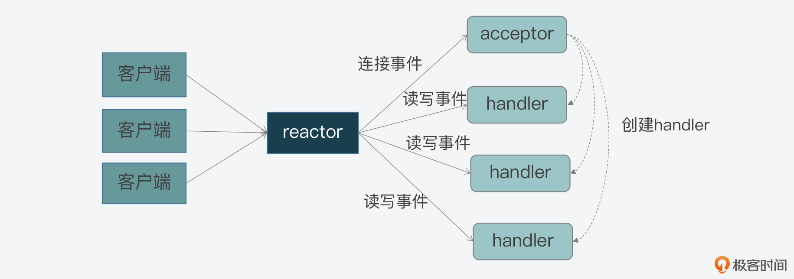
事实上，这三个角色都是 Reactor 模型中要实现的功能的抽象。当我们遵循 Reactor 模型开发服务器端的网络框架时，就需要在编程的时候，在代码功能模块中实现 reactor、acceptor 和 handler 的逻辑。
那么，现在我们已经知道，这三个角色是围绕事件的监听、转发和处理来进行交互的，那么在编程时，我们又该如何实现这三者的交互呢？这就离不开事件驱动框架了。
事件驱动框架
所谓的事件驱动框架，就是在实现 Reactor 模型时，需要实现的代码整体控制逻辑。简单来说，事件驱动框架包括了两部分：一是事件初始化；二是事件捕获、分发和处理主循环。
事件初始化是在服务器程序启动时就执行的，它的作用主要是创建需要监听的事件类型，以及该类事件对应的 handler。而一旦服务器完成初始化后，事件初始化也就相应完成了，服务器程序就需要进入到事件捕获、分发和处理的主循环中。
在开发代码时，我们通常会用一个 while 循环来作为这个主循环。然后在这个主循环中，我们需要捕获发生的事件、判断事件类型，并根据事件类型，调用在初始化时创建好的事件 handler 来实际处理事件。
比如说，当有连接事件发生时，服务器程序需要调用 acceptor 处理函数，创建和客户端的连接。而当有读事件发生时，就表明有读或写请求发送到了服务器端，服务器程序就要调用具体的请求处理函数，从客户端连接中读取请求内容，进而就完成了读事件的处理。这里你可以参考下面给出的图例，其中显示了事件驱动框架的基本执行过程：

那么到这里，你应该就已经了解了 Reactor 模型的基本工作机制：客户端的不同类请求会在服务器端触发连接、读、写三类事件，这三类事件的监听、分发和处理又是由 reactor、acceptor、handler 三类角色来完成的，然后这三类角色会通过事件驱动框架来实现交互和事件处理。
所以可见，实现一个 Reactor 模型的关键，就是要实现事件驱动框架。那么，如何开发实现一个事件驱动框架呢？
Redis 提供了一个简洁但有效的参考实现，非常值得我们学习，而且也可以用于自己的网络系统开发。下面，我们就一起来学习下 Redis 中对 Reactor 模型的实现。
Redis 对 Reactor 模型的实现
首先我们要知道的是，Redis 的网络框架实现了 Reactor 模型，并且自行开发实现了一个事件驱动框架。这个框架对应的 Redis 代码实现文件是ae.c，对应的头文件是ae.h。
前面我们已经知道，事件驱动框架的实现离不开事件的定义，以及事件注册、捕获、分发和处理等一系列操作。当然，对于整个框架来说，还需要能一直运行，持续地响应发生的事件。
那么由此，我们从 ae.h 头文件中就可以看到，Redis 为了实现事件驱动框架，相应地定义了事件的数据结构、框架主循环函数、事件捕获分发函数、事件和 handler 注册函数。所以接下来，我们就依次来了解学习下。
事件的数据结构定义：以 aeFileEvent 为例
首先，我们要明确一点，就是在 Redis 事件驱动框架的实现当中，事件的数据结构是关联事件类型和事件处理函数的关键要素。而 Redis 的事件驱动框架定义了两类事件：IO 事件和时间事件，分别对应了客户端发送的网络请求和 Redis 自身的周期性操作。
这也就是说，不同类型事件的数据结构定义是不一样的。不过，由于这节课我们主要关注的是事件框架的整体设计与实现，所以对于不同类型事件的差异和具体处理，我会在下节课给你详细介绍。那么在今天的课程中，为了让你能够理解事件数据结构对框架的作用，我就以 IO 事件 aeFileEvent 为例，给你介绍下它的数据结构定义。
aeFileEvent 是一个结构体，它定义了 4 个成员变量 mask、rfileProce、wfileProce 和 clientData，如下所示：
typedef struct aeFileEvent {
int mask; /* one of AE_(READABLE|WRITABLE|BARRIER) */
aeFileProc *rfileProc;
aeFileProc *wfileProc;
void *clientData;
} aeFileEvent;
- mask 是用来表示事件类型的掩码。对于网络通信的事件来说，主要有 AE_READABLE、AE_WRITABLE 和 AE_BARRIER 三种类型事件。框架在分发事件时，依赖的就是结构体中的事件类型；
- rfileProc 和 wfileProce 分别是指向 AE_READABLE 和 AE_WRITABLE 这两类事件的处理函数，也就是 Reactor 模型中的 handler。框架在分发事件后，就需要调用结构体中定义的函数进行事件处理；
- 最后一个成员变量 clientData 是用来指向客户端私有数据的指针。
除了事件的数据结构以外，前面我还提到 Redis 在 ae.h 文件中，定义了支撑框架运行的主要函数，包括框架主循环的 aeMain 函数、负责事件捕获与分发的 aeProcessEvents 函数，以及负责事件和 handler 注册的 aeCreateFileEvent 函数，它们的原型定义如下：
void aeMain(aeEventLoop *eventLoop);
int aeCreateFileEvent(aeEventLoop *eventLoop, int fd, int mask, aeFileProc *proc, void *clientData);
int aeProcessEvents(aeEventLoop *eventLoop, int flags);
而这三个函数的实现，都是在对应的 ae.c 文件中，那么接下来，我就给你具体介绍下这三个函数的主体逻辑和关键流程。
主循环：aeMain 函数
我们先来看下 aeMain 函数。
aeMain 函数的逻辑很简单，就是用一个循环不停地判断事件循环的停止标记。如果事件循环的停止标记被设置为 true，那么针对事件捕获、分发和处理的整个主循环就停止了；否则，主循环会一直执行。aeMain 函数的主体代码如下所示：
void aeMain(aeEventLoop *eventLoop) {
eventLoop->stop = 0;
while (!eventLoop->stop) {
…
aeProcessEvents(eventLoop, AE_ALL_EVENTS|AE_CALL_AFTER_SLEEP);
}
}
那么这里你可能要问了，aeMain 函数是在哪里被调用的呢？
按照事件驱动框架的编程规范来说，框架主循环是在服务器程序初始化完成后，就会开始执行。因此，如果我们把目光转向 Redis 服务器初始化的函数，就会发现服务器程序的 main 函数在完成 Redis server 的初始化后，会调用 aeMain 函数开始执行事件驱动框架。如果你想具体查看 main 函数，main 函数在server.c文件中，我们在【第 8 讲】中介绍过该文件，server.c 主要用于初始化服务器和执行服务器整体控制流程，你可以回顾下。
不过，既然 aeMain 函数包含了事件框架的主循环，那么在主循环中，事件又是如何被捕获、分发和处理呢？这就是由 aeProcessEvents 函数来完成的了。
事件捕获与分发：aeProcessEvents 函数
aeProcessEvents 函数实现的主要功能，包括捕获事件、判断事件类型和调用具体的事件处理函数，从而实现事件的处理。
从 aeProcessEvents 函数的主体结构中，我们可以看到主要有三个 if 条件分支，如下所示：
int aeProcessEvents(aeEventLoop *eventLoop, int flags)
{
int processed = 0, numevents;
/* 若没有事件处理，则立刻返回*/
if (!(flags & AE_TIME_EVENTS) && !(flags & AE_FILE_EVENTS)) return 0;
/*如果有IO事件发生，或者紧急的时间事件发生，则开始处理*/
if (eventLoop->maxfd != -1 || ((flags & AE_TIME_EVENTS) && !(flags & AE_DONT_WAIT))) {
…
}
/* 检查是否有时间事件，若有，则调用processTimeEvents函数处理 */
if (flags & AE_TIME_EVENTS)
processed += processTimeEvents(eventLoop);
/* 返回已经处理的文件或时间*/
return processed;
}
这三个分支分别对应了以下三种情况：
- 情况一：既没有时间事件，也没有网络事件；
- 情况二：有 IO 事件或者有需要紧急处理的时间事件；
- 情况三：只有普通的时间事件。
那么对于第一种情况来说，因为没有任何事件需要处理，aeProcessEvents 函数就会直接返回到 aeMain 的主循环，开始下一轮的循环；而对于第三种情况来说，该情况发生时只有普通时间事件发生，所以 aeMain 函数会调用专门处理时间事件的函数 processTimeEvents，对时间事件进行处理。
现在，我们再来看看第二种情况。
首先，当该情况发生时，Redis 需要捕获发生的网络事件，并进行相应的处理。那么从 Redis 源码中我们可以分析得到，在这种情况下，aeApiPoll 函数会被调用，用来捕获事件，如下所示：
int aeProcessEvents(aeEventLoop *eventLoop, int flags){
...
if (eventLoop->maxfd != -1 || ((flags & AE_TIME_EVENTS) && !(flags & AE_DONT_WAIT))) {
...
//调用aeApiPoll函数捕获事件
numevents = aeApiPoll(eventLoop, tvp);
...
}
...
}
那么，aeApiPoll 是如何捕获事件呢？
实际上，Redis 是依赖于操作系统底层提供的 IO 多路复用机制，来实现事件捕获，检查是否有新的连接、读写事件发生。为了适配不同的操作系统，Redis 对不同操作系统实现的网络 IO 多路复用函数，都进行了统一的封装，封装后的代码分别通过以下四个文件中实现：
- ae_epoll.c，对应 Linux 上的 IO 复用函数 epoll；
- ae_evport.c，对应 Solaris 上的 IO 复用函数 evport；
- ae_kqueue.c，对应 macOS 或 FreeBSD 上的 IO 复用函数 kqueue；
- ae_select.c，对应 Linux（或 Windows）的 IO 复用函数 select。
这样，在有了这些封装代码后，Redis 在不同的操作系统上调用 IO 多路复用 API 时，就可以通过统一的接口来进行调用了。
不过看到这里，你可能还是不太明白 Redis 封装的具体操作，所以这里，我就以在服务器端最常用的 Linux 操作系统为例，给你介绍下 Redis 是如何封装 Linux 上提供的 IO 复用 API 的。
首先，Linux 上提供了 epoll_wait API，用于检测内核中发生的网络 IO 事件。在ae_epoll.c文件中，aeApiPoll 函数就是封装了对 epoll_wait 的调用。
这个封装程序如下所示，其中你可以看到，在 aeApiPoll 函数中直接调用了 epoll_wait 函数，并将 epoll 返回的事件信息保存起来的逻辑：
static int aeApiPoll(aeEventLoop *eventLoop, struct timeval *tvp) {
…
//调用epoll_wait获取监听到的事件
retval = epoll_wait(state->epfd,state->events,eventLoop->setsize,
tvp ? (tvp->tv_sec*1000 + tvp->tv_usec/1000) : -1);
if (retval > 0) {
int j;
//获得监听到的事件数量
numevents = retval;
//针对每一个事件，进行处理
for (j = 0; j < numevents; j++) {
#保存事件信息
}
}
return numevents;
}
为了让你更加清晰地理解，事件驱动框架是如何实现最终对 epoll_wait 的调用，这里我也放了一张示意图，你可以看看整个调用链是如何工作和实现的。
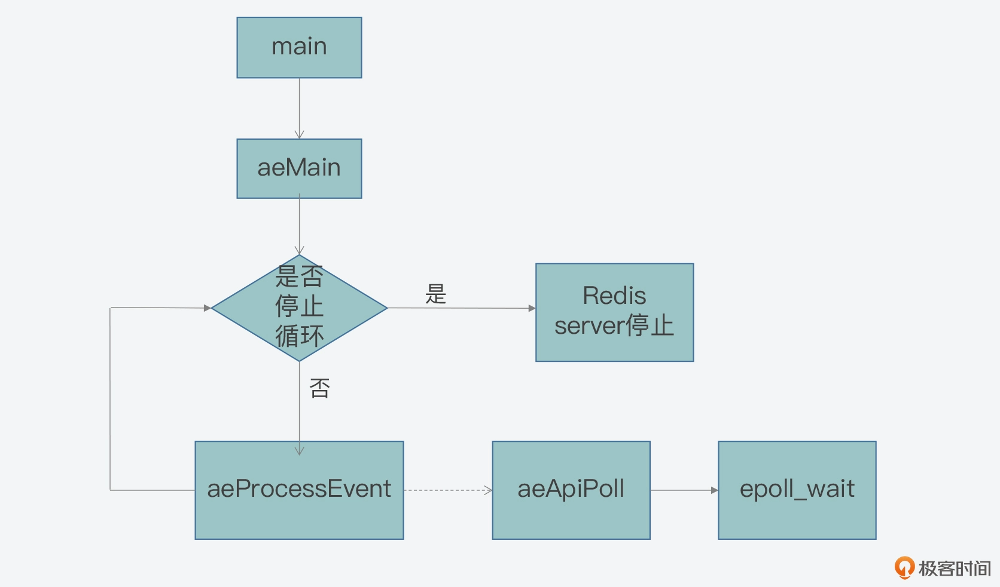
OK，现在我们就已经在 aeMain 函数中，看到了 aeProcessEvents 函数被调用，并用于捕获和分发事件的基本处理逻辑。
那么，事件具体是由哪个函数来处理的呢？这就和框架中的 aeCreateFileEvents 函数有关了。
事件注册：aeCreateFileEvent 函数
我们知道，当 Redis 启动后，服务器程序的 main 函数会调用 initSever 函数来进行初始化，而在初始化的过程中，aeCreateFileEvent 就会被 initServer 函数调用，用于注册要监听的事件，以及相应的事件处理函数。
具体来说，在 initServer 函数的执行过程中，initServer 函数会根据启用的 IP 端口个数，为每个 IP 端口上的网络事件，调用 aeCreateFileEvent，创建对 AE_READABLE 事件的监听，并且注册 AE_READABLE 事件的处理 handler，也就是 acceptTcpHandler 函数。这一过程如下图所示：

所以这里我们可以看到，AE_READABLE 事件就是客户端的网络连接事件，而对应的处理函数就是接收 TCP 连接请求。下面的示例代码中，显示了 initServer 中调用 aeCreateFileEvent 的部分片段，你可以看下：
void initServer(void) {
…
for (j = 0; j < server.ipfd_count; j++) {
if (aeCreateFileEvent(server.el, server.ipfd[j], AE_READABLE,
acceptTcpHandler,NULL) == AE_ERR)
{
serverPanic("Unrecoverable error creating server.ipfd file event.");
}
}
…
}
那么，aeCreateFileEvent 如何实现事件和处理函数的注册呢？这就和刚才我介绍的 Redis 对底层 IO 多路复用函数封装有关了，下面我仍然以 Linux 系统为例，来给你说明一下。
首先，Linux 提供了 epoll_ctl API，用于增加新的观察事件。而 Redis 在此基础上，封装了 aeApiAddEvent 函数，对 epoll_ctl 进行调用。
所以这样一来，aeCreateFileEvent 就会调用 aeApiAddEvent，然后 aeApiAddEvent 再通过调用 epoll_ctl，来注册希望监听的事件和相应的处理函数。等到 aeProceeEvents 函数捕获到实际事件时，它就会调用注册的函数对事件进行处理了。
好了，到这里，我们就已经全部了解了 Redis 中实现事件驱动框架的三个关键函数：aeMain、aeProcessEvents，以及 aeCreateFileEvent。当你要去实现一个事件驱动框架时，Redis 的设计思想就具有很好的参考意义。
最后我再带你来简单地回顾下，在实现事件驱动框架的时候，你需要先实现一个主循环函数（对应 aeMain），负责一直运行框架。其次，你需要编写事件注册函数（对应 aeCreateFileEvent），用来注册监听的事件和事件对应的处理函数。只有对事件和处理函数进行了注册，才能在事件发生时调用相应的函数进行处理。
最后，你需要编写事件监听、分发函数（对应 aeProcessEvents），负责调用操作系统底层函数来捕获网络连接、读、写事件，并分发给不同处理函数进一步处理。
小结
Redis 一直被称为单线程架构，按照我们通常的理解，单个线程只能处理单个客户端的请求，但是在实际使用时，我们会看到 Redis 能同时和成百上千个客户端进行交互，这就是因为 Redis 基于 Reactor 模型，实现了高性能的网络框架，通过事件驱动框架，Redis 可以使用一个循环来不断捕获、分发和处理客户端产生的网络连接、数据读写事件。
为了方便你从代码层面掌握 Redis 事件驱动框架的实现，我总结了一个表格，其中列出了 Redis 事件驱动框架的主要函数和功能、它们所属的 C 文件，以及这些函数本身是在 Redis 代码结构中的哪里被调用。你可以使用这张表格，来巩固今天这节课学习的事件驱动框架。

最后，我也再强调下，这节课我们主要关注的是，事件驱动框架的基本运行流程，并以客户端连接事件为例，将框架主循环、事件捕获分发和事件注册的关键步骤串起来，给你做了介绍。Redis 事件驱动框架监听处理的事件，还包括客户端请求、服务器端写数据以及周期性操作等，这也是我下一节课要和你一起学习的主要内容。
每课一问
这节课我们学习了 Reactor 模型，除了 Redis，你还了解什么软件系统使用了 Reactor 模型吗？
11 Redis事件驱动框架（下）：Redis有哪些事件？
在【第 9 讲】中，我给你介绍了 Linux 提供的三种 IO 多路复用机制，分别是 select、poll 和 epoll，这是 Redis 实现事件驱动框架的操作系统层支撑技术。
紧接着在上节课，我带你学习了 Redis 事件驱动框架的基本工作机制，其中介绍了事件驱动框架基于的 Reactor 模型，并以 IO 事件中的客户端连接事件为例，给你介绍了框架运行的基本流程：从 server 初始化时调用 aeCreateFileEvent 函数注册监听事件，到 server 初始化完成后调用 aeMain 函数，而 aeMain 函数循环执行 aeProceeEvent 函数，来捕获和处理客户端请求触发的事件。
但是在上节课当中，我们主要关注的是框架基本流程，所以到这里，你或许仍然存有一些疑问，比如说：
- Redis 事件驱动框架监听的 IO 事件，除了上节课介绍的客户端连接以外，还有没有其他事件？而除了 IO 事件以外，框架还会监听其他事件么？
- 这些事件的创建和处理又分别对应了 Redis 源码中的哪些具体操作？
今天这节课，我就来给你介绍下 Redis 事件驱动框架中的两大类事件类型：IO 事件和时间事件，以及它们相应的处理机制。
事实上，了解和学习这部分内容，一方面可以帮助我们更加全面地掌握，Redis 事件驱动框架是如何以事件形式，处理 server 运行过程中面临的请求操作和多种任务的。比如，正常的客户端读写请求是以什么事件、由哪个函数进行处理，以及后台快照任务又是如何及时启动的。
因为事件驱动框架是 Redis server 运行后的核心循环流程，了解它何时用什么函数处理哪种事件，对我们排查 server 运行过程中遇到的问题，是很有帮助的。
另一方面，我们还可以学习到如何在一个框架中，同时处理 IO 事件和时间事件。我们平时开发服务器端程序，经常需要处理周期性任务，而 Redis 关于两类事件的处理实现，就给了我们一个不错的参考。
好，为了对这两类事件有个相对全面的了解，接下来，我们先从事件驱动框架循环流程的数据结构及其初始化开始学起，因为这里面就包含了针对这两类事件的数据结构定义和初始化操作。
aeEventLoop 结构体与初始化
首先，我们来看下 Redis 事件驱动框架循环流程对应的数据结构 aeEventLoop。这个结构体是在事件驱动框架代码ae.h中定义的，记录了框架循环运行过程中的信息，其中，就包含了记录两类事件的变量，分别是：
- aeFileEvent 类型的指针 *events，表示 IO 事件。之所以类型名称为 aeFileEvent，是因为所有的 IO 事件都会用文件描述符进行标识；
- aeTimeEvent 类型的指针 *timeEventHead，表示时间事件，即按一定时间周期触发的事件。
此外，aeEventLoop 结构体中还有一个 aeFiredEvent 类型的指针 *fired，这个并不是一类专门的事件类型，它只是用来记录已触发事件对应的文件描述符信息。
下面的代码显示了 Redis 中事件循环的结构体定义，你可以看下。
typedef struct aeEventLoop {
…
aeFileEvent *events; //IO事件数组
aeFiredEvent *fired; //已触发事件数组
aeTimeEvent *timeEventHead; //记录时间事件的链表头
…
void *apidata; //和API调用接口相关的数据
aeBeforeSleepProc *beforesleep; //进入事件循环流程前执行的函数
aeBeforeSleepProc *aftersleep; //退出事件循环流程后执行的函数
} aeEventLoop;
了解了 aeEventLoop 结构体后，我们再来看下，这个结构体是如何初始化的，这其中就包括了 IO 事件数组和时间事件链表的初始化。
aeCreateEventLoop 函数的初始化操作
因为 Redis server 在完成初始化后，就要开始运行事件驱动框架的循环流程，所以，aeEventLoop 结构体在server.c的 initServer 函数中，就通过调用 aeCreateEventLoop 函数进行初始化了。这个函数的参数只有一个，是 setsize。
下面的代码展示了 initServer 函数中对 aeCreateEventLoop 函数的调用。
initServer() {
…
//调用aeCreateEventLoop函数创建aeEventLoop结构体，并赋值给server结构的el变量
server.el = aeCreateEventLoop(server.maxclients+CONFIG_FDSET_INCR);
…
}
从这里我们可以看到参数 setsize 的大小，其实是由 server 结构的 maxclients 变量和宏定义 CONFIG_FDSET_INCR 共同决定的。其中，maxclients 变量的值大小，可以在 Redis 的配置文件 redis.conf 中进行定义，默认值是 1000。而宏定义 CONFIG_FDSET_INCR 的大小，等于宏定义 CONFIG_MIN_RESERVED_FDS 的值再加上 96，如下所示，这里的两个宏定义都是在server.h文件中定义的。
#define CONFIG_MIN_RESERVED_FDS 32
#define CONFIG_FDSET_INCR (CONFIG_MIN_RESERVED_FDS+96)
好了，到这里，你可能有疑问了：aeCreateEventLoop 函数的参数 setsize，设置为最大客户端数量加上一个宏定义值，可是这个参数有什么用呢？这就和 aeCreateEventLoop 函数具体执行的初始化操作有关了。
接下来，我们就来看下 aeCreateEventLoop 函数执行的操作，大致可以分成以下三个步骤。
第一步，aeCreateEventLoop 函数会创建一个 aeEventLoop 结构体类型的变量 eventLoop。然后，该函数会给 eventLoop 的成员变量分配内存空间，比如，按照传入的参数 setsize，给 IO 事件数组和已触发事件数组分配相应的内存空间。此外，该函数还会给 eventLoop 的成员变量赋初始值。
第二步，aeCreateEventLoop 函数会调用 aeApiCreate 函数。aeApiCreate 函数封装了操作系统提供的 IO 多路复用函数，假设 Redis 运行在 Linux 操作系统上，并且 IO 多路复用机制是 epoll，那么此时，aeApiCreate 函数就会调用 epoll_create 创建 epoll 实例，同时会创建 epoll_event 结构的数组，数组大小等于参数 setsize。
这里你需要注意，aeApiCreate 函数是把创建的 epoll 实例描述符和 epoll_event 数组，保存在了 aeApiState 结构体类型的变量 state，如下所示：
typedef struct aeApiState { //aeApiState结构体定义
int epfd; //epoll实例的描述符
struct epoll_event *events; //epoll_event结构体数组，记录监听事件
} aeApiState;
static int aeApiCreate(aeEventLoop *eventLoop) {
aeApiState *state = zmalloc(sizeof(aeApiState));
...
//将epoll_event数组保存在aeApiState结构体变量state中
state->events = zmalloc(sizeof(struct epoll_event)*eventLoop->setsize);
...
//将epoll实例描述符保存在aeApiState结构体变量state中
state->epfd = epoll_create(1024);
紧接着，aeApiCreate 函数把 state 变量赋值给 eventLoop 中的 apidata。这样一来，eventLoop 结构体中就有了 epoll 实例和 epoll_event 数组的信息，这样就可以用来基于 epoll 创建和处理事件了。我一会儿还会给你具体介绍。
eventLoop->apidata = state;
第三步，aeCreateEventLoop 函数会把所有网络 IO 事件对应文件描述符的掩码，初始化为 AE_NONE，表示暂时不对任何事件进行监听。
我把 aeCreateEventLoop 函数的主要部分代码放在这里，你可以看下。
aeEventLoop *aeCreateEventLoop(int setsize) {
aeEventLoop *eventLoop;
int i;
//给eventLoop变量分配内存空间
if ((eventLoop = zmalloc(sizeof(*eventLoop))) == NULL) goto err;
//给IO事件、已触发事件分配内存空间
eventLoop->events = zmalloc(sizeof(aeFileEvent)*setsize);
eventLoop->fired = zmalloc(sizeof(aeFiredEvent)*setsize);
…
eventLoop->setsize = setsize;
eventLoop->lastTime = time(NULL);
//设置时间事件的链表头为NULL
eventLoop->timeEventHead = NULL;
…
//调用aeApiCreate函数，去实际调用操作系统提供的IO多路复用函数
if (aeApiCreate(eventLoop) == -1) goto err;
//将所有网络IO事件对应文件描述符的掩码设置为AE_NONE
for (i = 0; i < setsize; i++)
eventLoop->events[i].mask = AE_NONE;
return eventLoop;
//初始化失败后的处理逻辑，
err:
…
}
好，那么从 aeCreateEventLoop 函数的执行流程中，我们其实可以看到以下两个关键点：
- 事件驱动框架监听的 IO 事件数组大小就等于参数 setsize，这样决定了和 Redis server 连接的客户端数量。所以，当你遇到客户端连接 Redis 时报错“max number of clients reached”，你就可以去 redis.conf 文件修改 maxclients 配置项，以扩充框架能监听的客户端数量。
- 当使用 Linux 系统的 epoll 机制时，框架循环流程初始化操作，会通过 aeApiCreate 函数创建 epoll_event 结构数组，并调用 epoll_create 函数创建 epoll 实例，这都是使用 epoll 机制的准备工作要求，你也可以再回顾下第 9 讲中对 epoll 使用的介绍。
到这里，框架就可以创建和处理具体的 IO 事件和时间事件了。所以接下来，我们就先来了解下 IO 事件及其处理机制。
IO 事件处理
事实上，Redis 的 IO 事件主要包括三类，分别是可读事件、可写事件和屏障事件。
其中，可读事件和可写事件其实比较好理解，也就是对应于 Redis 实例，我们可以从客户端读取数据或是向客户端写入数据。而屏障事件的主要作用是用来反转事件的处理顺序。比如在默认情况下，Redis 会先给客户端返回结果，但是如果面临需要把数据尽快写入磁盘的情况，Redis 就会用到屏障事件，把写数据和回复客户端的顺序做下调整，先把数据落盘，再给客户端回复。
我在上节课给你介绍过，在 Redis 源码中，IO 事件的数据结构是 aeFileEvent 结构体，IO 事件的创建是通过 aeCreateFileEvent 函数来完成的。下面的代码展示了 aeFileEvent 结构体的定义，你可以再回顾下：
typedef struct aeFileEvent {
int mask; //掩码标记，包括可读事件、可写事件和屏障事件
aeFileProc *rfileProc; //处理可读事件的回调函数
aeFileProc *wfileProc; //处理可写事件的回调函数
void *clientData; //私有数据
} aeFileEvent;
而对于 aeCreateFileEvent 函数来说，在上节课我们已经了解了它是通过 aeApiAddEvent 函数来完成事件注册的。那么接下来，我们再从代码级别看下它是如何执行的，这可以帮助我们更加透彻地理解，事件驱动框架对 IO 事件监听是如何基于 epoll 机制对应封装的。
IO 事件创建
首先，我们来看 aeCreateFileEvent 函数的原型定义，如下所示：
int aeCreateFileEvent(aeEventLoop *eventLoop, int fd, int mask, aeFileProc *proc, void *clientData)
这个函数的参数有 5 个，分别是循环流程结构体 *eventLoop、IO 事件对应的文件描述符 fd、事件类型掩码 mask、事件处理回调函数*proc，以及事件私有数据*clientData。
因为循环流程结构体*eventLoop中有 IO 事件数组，这个数组的元素是 aeFileEvent 类型，所以，每个数组元素都对应记录了一个文件描述符（比如一个套接字）相关联的监听事件类型和回调函数。
aeCreateFileEvent 函数会先根据传入的文件描述符 fd，在 eventLoop 的 IO 事件数组中，获取该描述符关联的 IO 事件指针变量*fe，如下所示：
aeFileEvent *fe = &eventLoop->events[fd];
紧接着，aeCreateFileEvent 函数会调用 aeApiAddEvent 函数，添加要监听的事件：
if (aeApiAddEvent(eventLoop, fd, mask) == -1)
return AE_ERR;
aeApiAddEvent 函数实际上会调用操作系统提供的 IO 多路复用函数，来完成事件的添加。我们还是假设 Redis 实例运行在使用 epoll 机制的 Linux 上，那么 aeApiAddEvent 函数就会调用 epoll_ctl 函数，添加要监听的事件。我在第 9 讲中其实已经给你介绍过 epoll_ctl 函数，这个函数会接收 4 个参数，分别是：
- epoll 实例；
- 要执行的操作类型（是添加还是修改）；
- 要监听的文件描述符；
- epoll_event 类型变量。
那么，这个调用过程是如何准备 epoll_ctl 函数需要的参数，从而完成执行的呢？
首先，epoll 实例是我刚才给你介绍的 aeCreateEventLoop 函数，它是通过调用 aeApiCreate 函数来创建的，保存在了 eventLoop 结构体的 apidata 变量中，类型是 aeApiState。所以，aeApiAddEvent 函数会先获取该变量，如下所示：
static int aeApiAddEvent(aeEventLoop *eventLoop, int fd, int mask) {
//从eventLoop结构体中获取aeApiState变量，里面保存了epoll实例
aeApiState *state = eventLoop->apidata;
...
}
其次，对于要执行的操作类型的设置，aeApiAddEvent 函数会根据传入的文件描述符 fd，在 eventLoop 结构体中 IO 事件数组中查找该 fd。因为 IO 事件数组的每个元素，都对应了一个文件描述符，而该数组初始化时，每个元素的值都设置为了 AE_NONE。
所以，如果要监听的文件描述符 fd 在数组中的类型不是 AE_NONE，则表明该描述符已做过设置，那么操作类型就是修改操作，对应 epoll 机制中的宏定义 EPOLL_CTL_MOD。否则，操作类型就是添加操作，对应 epoll 机制中的宏定义 EPOLL_CTL_ADD。这部分代码如下所示：
//如果文件描述符fd对应的IO事件已存在，则操作类型为修改，否则为添加
int op = eventLoop->events[fd].mask == AE_NONE ?
EPOLL_CTL_ADD : EPOLL_CTL_MOD;
第三，epoll_ctl 函数需要的监听文件描述符，就是 aeApiAddEvent 函数接收到的参数 fd。
最后，epoll_ctl 函数还需要一个 epoll_event 类型变量，因此 aeApiAddEvent 函数在调用 epoll_ctl 函数前，会新创建 epoll_event 类型变量 ee。然后，aeApiAddEvent 函数会设置变量 ee 中的监听事件类型和监听文件描述符。
aeApiAddEvent 函数的参数 mask，表示的是要监听的事件类型掩码。所以，aeApiAddEvent 函数会根据掩码值是可读（AE_READABLE）或可写（AE_WRITABLE）事件，来设置 ee 监听的事件类型是 EPOLLIN 还是 EPOLLOUT。这样一来，Redis 事件驱动框架中的读写事件就能够和 epoll 机制中的读写事件对应上来。下面的代码展示了这部分逻辑，你可以看下。
…
struct epoll_event ee = {0}; //创建epoll_event类型变量
…
//将可读或可写IO事件类型转换为epoll监听的类型EPOLLIN或EPOLLOUT
if (mask & AE_READABLE) ee.events |= EPOLLIN;
if (mask & AE_WRITABLE) ee.events |= EPOLLOUT;
ee.data.fd = fd; //将要监听的文件描述符赋值给ee
…
好了，到这里，aeApiAddEvent 函数就准备好了 epoll 实例、操作类型、监听文件描述符以及 epoll_event 类型变量，然后，它就会调用 epoll_ctl 开始实际创建监听事件了，如下所示：
static int aeApiAddEvent(aeEventLoop *eventLoop, int fd, int mask) {
...
//调用epoll_ctl实际创建监听事件
if (epoll_ctl(state->epfd,op,fd,&ee) == -1) return -1;
return 0;
}
了解了这些代码后，我们可以学习到事件驱动框架是如何基于 epoll，封装实现了 IO 事件的创建。那么，在 Redis server 启动运行后，最开始监听的 IO 事件是可读事件，对应于客户端的连接请求。具体是 initServer 函数调用了 aeCreateFileEvent 函数，创建可读事件，并设置回调函数为 acceptTcpHandler，用来处理客户端连接。这部分内容，你也可以再回顾下第 10 讲。
接下来，我们再来看下一旦有了客户端连接请求后，IO 事件具体是如何处理的呢？
读事件处理
当 Redis server 接收到客户端的连接请求时，就会使用注册好的 acceptTcpHandler 函数进行处理。
acceptTcpHandler 函数是在networking.c文件中，它会接受客户端连接，并创建已连接套接字 cfd。然后，acceptCommonHandler 函数（在 networking.c 文件中）会被调用，同时，刚刚创建的已连接套接字 cfd 会作为参数，传递给 acceptCommonHandler 函数。
acceptCommonHandler 函数会调用 createClient 函数（在 networking.c 文件中）创建客户端。而在 createClient 函数中，我们就会看到，aeCreateFileEvent 函数被再次调用了。
此时，aeCreateFileEvent 函数会针对已连接套接字上，创建监听事件，类型为 AE_READABLE，回调函数是 readQueryFromClient（在 networking.c 文件中）。
好了，到这里，事件驱动框架就增加了对一个客户端已连接套接字的监听。一旦客户端有请求发送到 server，框架就会回调 readQueryFromClient 函数处理请求。这样一来，客户端请求就能通过事件驱动框架进行处理了。
下面代码展示了 createClient 函数调用 aeCreateFileEvent 的过程，你可以看下。
client *createClient(int fd) {
…
if (fd != -1) {
…
//调用aeCreateFileEvent，监听读事件，对应客户端读写请求，使用readQueryFromclient回调函数处理
if (aeCreateFileEvent(server.el,fd,AE_READABLE,
readQueryFromClient, c) == AE_ERR)
{
close(fd);
zfree(c);
return NULL;
} }
…
}
为了便于你掌握从监听客户端连接请求到监听客户端常规读写请求的事件创建过程，我画了下面这张图，你可以看下。

了解了事件驱动框架中的读事件处理之后，我们再来看下写事件的处理。
写事件处理
Redis 实例在收到客户端请求后，会在处理客户端命令后，将要返回的数据写入客户端输出缓冲区。下图就展示了这个过程的函数调用逻辑：

而在 Redis 事件驱动框架每次循环进入事件处理函数前，也就是在框架主函数 aeMain 中调用 aeProcessEvents，来处理监听到的已触发事件或是到时的时间事件之前，都会调用 server.c 文件中的 beforeSleep 函数，进行一些任务处理，这其中就包括了调用 handleClientsWithPendingWrites 函数，它会将 Redis sever 客户端缓冲区中的数据写回客户端。
下面给出的代码是事件驱动框架的主函数 aeMain。在该函数每次调用 aeProcessEvents 函数前，就会调用 beforeSleep 函数，你可以看下。
void aeMain(aeEventLoop *eventLoop) {
eventLoop->stop = 0;
while (!eventLoop->stop) {
//如果beforeSleep函数不为空，则调用beforeSleep函数
if (eventLoop->beforesleep != NULL)
eventLoop->beforesleep(eventLoop);
//调用完beforeSleep函数，再处理事件
aeProcessEvents(eventLoop, AE_ALL_EVENTS|AE_CALL_AFTER_SLEEP);
}
}
这里你要知道，beforeSleep 函数调用的 handleClientsWithPendingWrites 函数，会遍历每一个待写回数据的客户端，然后调用 writeToClient 函数，将客户端输出缓冲区中的数据写回。下面这张图展示了这个流程，你可以看下。

不过，如果输出缓冲区的数据还没有写完，此时，handleClientsWithPendingWrites 函数就会调用 aeCreateFileEvent 函数，创建可写事件，并设置回调函数 sendReplyToClient。sendReplyToClient 函数里面会调用 writeToClient 函数写回数据。
下面的代码展示了 handleClientsWithPendingWrite 函数的基本流程，你可以看下。
int handleClientsWithPendingWrites(void) {
listIter li;
listNode *ln;
…
//获取待写回的客户端列表
listRewind(server.clients_pending_write,&li);
//遍历每一个待写回的客户端
while((ln = listNext(&li))) {
client *c = listNodeValue(ln);
…
//调用writeToClient将当前客户端的输出缓冲区数据写回
if (writeToClient(c->fd,c,0) == C_ERR) continue;
//如果还有待写回数据
if (clientHasPendingReplies(c)) {
int ae_flags = AE_WRITABLE;
//创建可写事件的监听，以及设置回调函数
if (aeCreateFileEvent(server.el, c->fd, ae_flags,
sendReplyToClient, c) == AE_ERR)
{
…
}
} }
}
好了，我们刚才了解的是读写事件对应的回调处理函数。实际上，为了能及时处理这些事件，Redis 事件驱动框架的 aeMain 函数还会循环调用 aeProcessEvents 函数，来检测已触发的事件，并调用相应的回调函数进行处理。
从 aeProcessEvents 函数的代码中，我们可以看到该函数会调用 aeApiPoll 函数，查询监听的文件描述符中，有哪些已经就绪。一旦有描述符就绪，aeProcessEvents 函数就会根据事件的可读或可写类型，调用相应的回调函数进行处理。aeProcessEvents 函数调用的基本流程如下所示：
int aeProcessEvents(aeEventLoop *eventLoop, int flags){
…
//调用aeApiPoll获取就绪的描述符
numevents = aeApiPoll(eventLoop, tvp);
…
for (j = 0; j < numevents; j++) {
aeFileEvent *fe = &eventLoop->events[eventLoop->fired[j].fd];
…
//如果触发的是可读事件，调用事件注册时设置的读事件回调处理函数
if (!invert && fe->mask & mask & AE_READABLE) {
fe->rfileProc(eventLoop,fd,fe->clientData,mask);
fired++;
}
//如果触发的是可写事件，调用事件注册时设置的写事件回调处理函数
if (fe->mask & mask & AE_WRITABLE) {
if (!fired || fe->wfileProc != fe->rfileProc) {
fe->wfileProc(eventLoop,fd,fe->clientData,mask);
fired++;
}
}
…
} }
…
}
到这里，我们就了解了 IO 事件的创建函数 aeCreateFileEvent，以及在处理客户端请求时对应的读写事件和它们的处理函数。那么接下来，我们再来看看事件驱动框架中的时间事件是怎么创建和处理的。
时间事件处理
其实，相比于 IO 事件有可读、可写、屏障类型，以及不同类型 IO 事件有不同回调函数来说，时间事件的处理就比较简单了。下面，我们就来分别学习下它的定义、创建、回调函数和触发处理。
时间事件定义
首先，我们来看下时间事件的结构体定义，代码如下所示：
typedef struct aeTimeEvent {
long long id; //时间事件ID
long when_sec; //事件到达的秒级时间戳
long when_ms; //事件到达的毫秒级时间戳
aeTimeProc *timeProc; //时间事件触发后的处理函数
aeEventFinalizerProc *finalizerProc; //事件结束后的处理函数
void *clientData; //事件相关的私有数据
struct aeTimeEvent *prev; //时间事件链表的前向指针
struct aeTimeEvent *next; //时间事件链表的后向指针
} aeTimeEvent;
时间事件结构体中主要的变量，包括以秒记录和以毫秒记录的时间事件触发时的时间戳 when_sec 和 when_ms，以及时间事件触发后的处理函数*timeProc。另外，在时间事件的结构体中，还包含了前向和后向指针*prev和*next，这表明时间事件是以链表的形式组织起来的。
在了解了时间事件结构体的定义以后，我们接着来看下，时间事件是如何创建的。
时间事件创建
与 IO 事件创建使用 aeCreateFileEvent 函数类似，时间事件的创建函数是 aeCreateTimeEvent 函数。这个函数的原型定义如下所示：
long long aeCreateTimeEvent(aeEventLoop *eventLoop, long long milliseconds, aeTimeProc *proc, void *clientData, aeEventFinalizerProc *finalizerProc)
在它的参数中，有两个需要我们重点了解下，以便于我们理解时间事件的处理。一个是 milliseconds，这是所创建时间事件的触发时间距离当前时间的时长，是用毫秒表示的。另一个是 *proc，这是所创建时间事件触发后的回调函数。
aeCreateTimeEvent 函数的执行逻辑不复杂，主要就是创建一个时间事件的变量 te，对它进行初始化，并把它插入到框架循环流程结构体 eventLoop 中的时间事件链表中。在这个过程中，aeCreateTimeEvent 函数会调用 aeAddMillisecondsToNow 函数，根据传入的 milliseconds 参数，计算所创建时间事件具体的触发时间戳，并赋值给 te。
实际上，Redis server 在初始化时，除了创建监听的 IO 事件外，也会调用 aeCreateTimeEvent 函数创建时间事件。下面代码显示了 initServer 函数对 aeCreateTimeEvent 函数的调用：
initServer() {
…
//创建时间事件
if (aeCreateTimeEvent(server.el, 1, serverCron, NULL, NULL) == AE_ERR){
… //报错信息
}
}
从代码中，我们可以看到，时间事件触发后的回调函数是 serverCron。所以接下来，我们就来了解下 serverCron 函数。
时间事件回调函数
serverCron 函数是在 server.c 文件中实现的。一方面，它会顺序调用一些函数，来实现时间事件被触发后，执行一些后台任务。比如，serverCron 函数会检查是否有进程结束信号，若有就执行 server 关闭操作。serverCron 会调用 databaseCron 函数，处理过期 key 或进行 rehash 等。你可以参考下面给出的代码：
...
//如果收到进程结束信号，则执行server关闭操作
if (server.shutdown_asap) {
if (prepareForShutdown(SHUTDOWN_NOFLAGS) == C_OK) exit(0);
...
}
...
clientCron(); //执行客户端的异步操作
databaseCron(); //执行数据库的后台操作
...
另一方面，serverCron 函数还会以不同的频率周期性执行一些任务，这是通过执行宏 run_with_period 来实现的。
run_with_period 宏定义如下，该宏定义会根据 Redis 实例配置文件 redis.conf 中定义的 hz 值，来判断参数 ms 表示的时间戳是否到达。一旦到达，serverCron 就可以执行相应的任务了。
#define run_with_period(_ms_) if ((_ms_ <= 1000/server.hz) || !(server.cronloops%((_ms_)/(1000/server.hz))))
比如，serverCron 函数中会以 1 秒 1 次的频率，检查 AOF 文件是否有写错误。如果有的话，serverCron 就会调用 flushAppendOnlyFile 函数，再次刷回 AOF 文件的缓存数据。下面的代码展示了这一周期性任务：
serverCron() {
…
//每1秒执行1次，检查AOF是否有写错误
run_with_period(1000) {
if (server.aof_last_write_status == C_ERR)
flushAppendOnlyFile(0);
}
…
}
如果你想了解更多的周期性任务，可以再详细阅读下 serverCron 函数中，以 run_with_period 宏定义包含的代码块。
好了，了解了时间事件触发后的回调函数 serverCron，我们最后来看下，时间事件是如何触发处理的。
时间事件的触发处理
其实，时间事件的检测触发比较简单，事件驱动框架的 aeMain 函数会循环调用 aeProcessEvents 函数，来处理各种事件。而 aeProcessEvents 函数在执行流程的最后，会调用 processTimeEvents 函数处理相应到时的任务。
aeProcessEvents(){
…
//检测时间事件是否触发
if (flags & AE_TIME_EVENTS)
processed += processTimeEvents(eventLoop);
…
}
那么，具体到 proecessTimeEvent 函数来说，它的基本流程就是从时间事件链表上逐一取出每一个事件，然后根据当前时间判断该事件的触发时间戳是否已满足。如果已满足，那么就调用该事件对应的回调函数进行处理。这样一来，周期性任务就能在不断循环执行的 aeProcessEvents 函数中，得到执行了。
下面的代码显示了 processTimeEvents 函数的基本流程，你可以再看下。
static int processTimeEvents(aeEventLoop *eventLoop) {
...
te = eventLoop->timeEventHead; //从时间事件链表中取出事件
while(te) {
...
aeGetTime(&now_sec, &now_ms); //获取当前时间
if (now_sec > te->when_sec || (now_sec == te->when_sec && now_ms >= te->when_ms)) //如果当前时间已经满足当前事件的触发时间戳
{
...
retval = te->timeProc(eventLoop, id, te->clientData); //调用注册的回调函数处理
...
}
te = te->next; //获取下一个时间事件
...
}
小结
这节课，我给你介绍了 Redis 事件驱动框架中的两类事件：IO 事件和时间事件。
对于 IO 事件来说，它可以进一步分成可读、可写和屏障事件。因为可读、可写事件在 Redis 和客户端通信处理请求过程中使用广泛，所以今天我们重点学习了这两种 IO 事件。当 Redis server 创建 Socket 后，就会注册可读事件，并使用 acceptTCPHandler 回调函数处理客户端的连接请求。
当 server 和客户端完成连接建立后，server 会在已连接套接字上监听可读事件，并使用 readQueryFromClient 函数处理客户端读写请求。这里，你需要再注意下，无论客户端发送的请求是读或写操作，对于 server 来说，都是要读取客户端的请求并解析处理。所以，server 在客户端的已连接套接字上注册的是可读事件。
而当实例需要向客户端写回数据时，实例会在事件驱动框架中注册可写事件，并使用 sendReplyToClient 作为回调函数，将缓冲区中数据写回客户端。我总结了一张表格，以便你再回顾下 IO 事件和相应套接字、回调函数的对应关系。
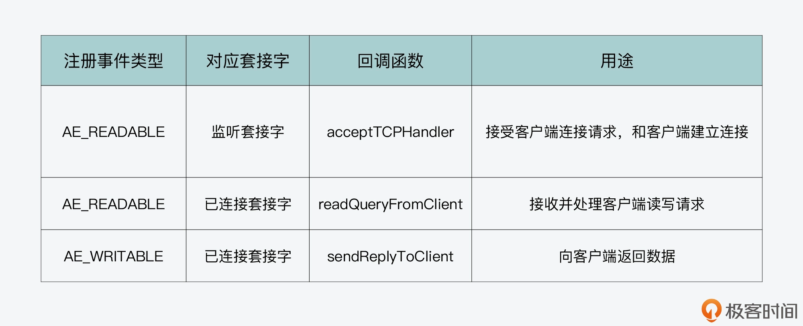
然后，对于时间事件来说，它主要是用于在事件驱动框架中注册一些周期性执行的任务，以便 Redis server 进行后台处理。时间事件的回调函数是 serverCron 函数，你可以做进一步阅读了解其中的具体任务。
好了，从第 9 讲开始，我用了 3 节课，向你介绍 Redis 事件驱动框架的运行机制，本质上来说，事件驱动框架是基于操作系统提供的 IO 多路复用机制进行了封装，并加上了时间事件的处理。这是一个非常经典的事件框架实现，我希望你可以学习并掌握好它，然后用在你自己的系统开发中。
每课一问
已知，Redis 事件驱动框架的 aeApiCreate、aeApiAddEvent 等等这些函数，是对操作系统提供的 IO 多路复用函数进行了封装，具体的 IO 多路复用函数分别是在ae_epoll.c，ae_evport.c，ae_kqueue.c，ae_select.c四个代码文件中定义的。那么你知道，Redis 在调用 aeApiCreate，aeApiAddEvent 这些函数时，是根据什么条件来决定，具体调用哪个文件中的 IO 多路复用函数的吗？
12 Redis真的是单线程吗？
今天这节课，我们来聊聊 Redis 的执行模型。
所谓的执行模型，就是指 Redis 运行时使用的进程、子进程和线程的个数，以及它们各自负责的工作任务。
你在实际使用 Redis 的时候，可能经常会听到类似“Redis 是单线程”“Redis 的主 IO 线程”，“Redis 包含多线程”等不同说法。我也听到不少同学提出困惑和疑问：Redis 到底是不是一个单线程的程序？
其实，彻底理解这个问题，有助于指导我们保持 Redis 高性能、低延迟的特性。如果说 Redis 就是单线程程序，那么，我们就需要避免所有容易引起线程阻塞的操作；而如果说 Redis 不只是单线程，还有其他线程在工作，那么，我们就需要了解多线程各自负责什么任务，负责请求解析和数据读写的线程有几个，有哪些操作是后台线程在完成，而不会影响请求解析和数据读写的。
所以，今天这节课，我就从 Redis server 启动后运行的进程开始，带你一边学习 Redis 源码中子进程和线程的创建方式，一边掌握 Redis server 运行时涉及到的进程、子进程和线程情况。
下面，我们先来看 Redis server 启动时的进程运行。
从 shell 命令执行到 Redis 进程创建
我们在启动 Redis 实例时，可以在 shell 命令行环境中，执行 redis-server 这个可执行文件，如下所示：
./redis-server /etc/redis/redis.conf
shell 运行这个命令后，它实际会调用 fork 系统调用函数，来新建一个进程。因为 shell 本身是一个进程，所以，这个通过 fork 新创建的进程就被称为是 shell 进程的子进程，而 shell 进程被称为父进程。关于 fork 函数的具体用法，我一会儿还会给你具体介绍。
紧接着，shell 进程会调用 execve 系统调用函数，将子进程执行的主体替换成 Redis 的可执行文件。而 Redis 可执行文件的入口函数就是 main 函数，这样一来，子进程就会开始执行 Redis server 的 main 函数了。
下面的代码显示了 execve 系统调用函数原型。其中，filename 是要运行的程序的文件名，argv[]和 envp[]分别是要运行程序的参数和环境变量。
int execve(const char *filename, char *const argv[], char *const envp[]))
下图显示了从 shell 执行命令到创建 Redis 进程的过程，你可以看下。
当我们用刚才介绍的 shell 命令运行 Redis server 后，我们会看到 Redis server 启动后的日志输出会打印到终端屏幕上，如下所示：
37807:M 19 Aug 2021 07:29:36.372 # Server initialized
37807:M 19 Aug 2021 07:29:36.372 * DB loaded from disk: 0.000 seconds
37807:M 19 Aug 2021 07:29:36.372 * Ready to accept connections
这是因为 shell 进程调用 fork 函数创建的子进程，会从父进程中继承一些属性，比如父进程打开的文件描述符。对于 shell 进程来说，它打开的文件描述符包括 0 和 1，这两个描述符分别代表了标准输入和标准输出。而 execve 函数只是把子进程的执行内容替换成 Redis 可执行文件，子进程从 shell 父进程继承到的标准输入和标准输出保持不变。
所以，Redis 运行时通过 serverLog 函数打印的日志信息，就会默认输出到终端屏幕上了，也就是 shell 进程的标准输出。
而一旦 Redis 进程创建开始运行后，它就会从 main 函数开始执行。我们在【第 8 讲】中已经学习了 main 函数的主要执行过程，所以我们会发现，它会调用不同的函数来执行相关功能。比如，main 函数调用 initServerConfig 函数初始化 Redis server 的运行参数，调用 loadServerConfig 函数解析配置文件参数。当 main 函数调用这些函数时，这些函数仍然是由原来的进程执行的。所以，在这种情况下，Redis 仍然是单个进程在运行。
不过，在 main 函数完成参数解析后，会根据两个配置参数 daemonize 和 supervised，来设置变量 background 的值。它们的含义分别是：
- 参数 daemonize 表示，是否要设置 Redis 以守护进程方式运行；
- 参数 supervised 表示，是否使用 upstart 或是 systemd 这两种守护进程的管理程序来管理 Redis。
那么，我们来进一步了解下守护进程。守护进程是在系统后台运行的进程，独立于 shell 终端，不再需要用户在 shell 中进行输入了。一般来说，守护进程用于执行周期性任务或是等待相应事件发生再进行处理。Redis server 本身就是在启动后，等待客户端输入，再进行处理。所以对于 Redis 这类服务器程序来说，我们通常会让它以守护进程方式运行。
好了，如果设置了 Redis 以守护进程方式执行，那么守护进程具体是怎么创建的呢？这就和 main 函数调用的 daemonize 函数相关了。daemonize 函数就是用来将 Redis 进程转换为守护进程来运行。
下面的代码显示了 main 函数根据变量 background 值，来判断是否执行 daemonize 函数的逻辑，你可以看下。
//如果配置参数daemonize为1，supervised值为0，那么设置background值为1，否则，设置其为0。
int main(int argc, char **argv) {
…
int background = server.daemonize && !server.supervised;
//如果background值为1，调用daemonize函数。
if (background) daemonize();
…
}
也就是说，如果 background 的值为 1，就表示 Redis 被设置为以守护进程方式运行，因此 main 函数就会调用 daemonize 函数。
那么，接下来，我们就来学习下 daemonize 函数是如何将 Redis 转为守护进程运行的。
从 daemonize 函数的执行学习守护进程的创建
我们首先来看 daemonize 函数的部分执行内容，如下所示。我们可以看到，daemonize 函数调用了 fork 函数，并根据 fork 函数返回值有不同的分支代码。
void daemonize(void) {
…
if (fork() != 0) exit(0); //fork成功执行或失败，则父进程退出
setsid(); //创建新的session
…
}
从刚才的介绍中，我们已经知道，当我们在一个程序的函数中调用 fork 函数时，fork 函数会创建一个子进程。而原本这个程序对应的进程，就称为这个子进程的父进程。那么，fork 函数执行后的不同分支和父、子进程是什么关系呢？这就和 fork 函数的使用有关了。
实际上，fork 函数的使用是比较有意思的，我们可以根据 fork 函数的不同返回值，来编写相应的分支代码，这些分支代码就对应了父进程和子进程各自要执行的逻辑。
为了便于你理解，我给你举个例子。我写了一段示例代码，这段代码的 main 函数会调用 fork 函数，并进一步根据 fork 函数的返回值是小于 0、等于 0，还是大于 0，来执行不同的分支。注意，fork 函数的不同返回值，其实代表了不同的含义，具体来说：
- 当返回值小于 0 时，此时表明 fork 函数执行有误；
- 当返回值等于 0 时，此时，返回值对应的代码分支就会在子进程中运行；
- 当返回值大于 0 时，此时，返回值对应的代码分支仍然会在父进程中运行。
这段示例代码如下：
#include <stdio.h>
#include <unistd.h>
int main(int argc, char *argv[]) {
printf("hello main\n");
int rv = fork(); //fork函数的返回值
//返回值小于0，表示fork执行错误
if (rv < 0) {
fprintf(stderr, "fork failed\n");
}
//返回值等于0，对应子进程执行
else if (rv == 0) {
printf("I am child process %d\n", getpid());
}
//返回值大于0，对应父进程执行
else {
printf("I am parent process of (%d), %d\n", rc, getpid());
}
return 0;
}
在这段代码中，我根据 fork 函数的返回值，分别写了三个分支代码，其中返回值等于 0 对应的代码分支，是子进程执行的代码。子进程会打印字符串“I am child process”，并打印子进程的进程号。而返回值大于 0 对应的代码分支，是父进程的代码。父进程会打印字符串“I am parent process of”，并打印它所创建的子进程进程号和它自身的进程号。
那么，如果你把这段代码编译后执行，你可以看到类似如下的结果，父进程打印了它的进程号 62794，而子进程则打印了它的进程号 62795。这表明刚才示例代码中的不同分支的确是由父、子进程来执行的。这也就是说，我们可以在 fork 函数执行后，使用不同分支，让父、子进程执行不同内容。
hello main
I am parent process of (62795), 62794
I am child process 62795
好了，了解了 fork 函数创建子进程的知识后，我们再来看下刚才介绍的 daemonize 函数。
现在我们已经知道，daemonize 函数调用 fork 函数后，可以根据 fork 函数返回值设置不同代码分支，对应父、子进程执行内容。其实，daemonize 函数也的确设置了两个代码分支。
- 分支一
这个分支对应 fork 函数返回值不为 0，表示 fork 函数成功执行后的父进程执行逻辑或是 fork 函数执行失败的执行逻辑。此时，父进程会调用 exit(0) 函数退出。也就是说，如果 fork 函数成功执行，父进程就退出了。当然，如果 fork 函数执行失败了，那么子进程也没有能成功创建，父进程也就退出执行了。你可以看下下面的代码，展示了这个分支。
void daemonize(void) {
…
if (fork() != 0) exit(0); //fork成功执行或失败，则父进程退出
…
}
- 分支二
这个分支对应 fork 函数返回值为 0，为子进程的执行逻辑。子进程首先会调用 setsid 函数，创建一个新的会话。
然后，子进程会用 open 函数打开 /dev/null 设备，并把它的标准输入、标准输出和标准错误输出，重新定向到 /dev/null 设备。因为守护进程是在后台运行，它的输入输出是独立于 shell 终端的。所以，为了让 Redis 能以守护进程方式运行，这几步操作的目的就是把当前子进程的输入、输出由原来的 shell 终端，转向 /dev/null 设备，这样一来，就不再依赖于 shell 终端了，满足了守护进程的要求。
我把 daemonize 函数的代码放在这里，你可以看下。
void daemonize(void) {
…
setsid(); //为子进程创建新的session
//将子进程的标准输入、标准输出、标准错误输出重定向到/dev/null中
if ((fd = open("/dev/null", O_RDWR, 0)) != -1) {
dup2(fd, STDIN_FILENO);
dup2(fd, STDOUT_FILENO);
dup2(fd, STDERR_FILENO);
if (fd > STDERR_FILENO) close(fd);
}
}
好了，到这里，我们就了解了，Redis 的 main 函数会根据配置参数 daemonize 和 supervised，来判断是否以守护进程方式运行 Redis。
那么，一旦 Redis 要以守护进程方式运行，main 函数会调用 daemonize 函数。daemonize 函数会进一步调用 fork 函数创建子进程，并根据返回值，分别执行父进程和子进程的代码分支。其中，父进程会退出。而子进程会代替原来的父进程，继续执行 main 函数的代码。
下面的图展示了 daemonize 函数调用 fork 函数后的两个分支的执行逻辑，你可以再回顾下。

事实上，Redis server 启动后无论是否以守护进程形式运行，都还是一个进程在运行。对于一个进程来说，如果该进程启动后没有创建新的线程，那么这个进程的工作任务默认就是由一个线程来执行的，而这个线程我一般也称它为主线程。
对于 Redis 来说，它的主要工作，包括接收客户端请求、解析请求和进行数据读写等操作，都没有创建新线程来执行，所以，Redis 主要工作的确是由单线程来执行的，这也是我们常说 Redis 是单线程程序的原因。因为 Redis 主要工作都是 IO 读写操作，所以，我也会把这个单线程称为主 IO 线程。
但其实，Redis 在 3.0 版本后，除了主 IO 线程外，的确还会启动一些后台线程来处理部分任务，从而避免这些任务对主 IO 线程的影响。那么，这些后台线程是在哪里启动的，又是如何执行的呢？
这就和 Redis 的bio.c文件相关了。接下来，我们就来从这个文件中学习下 Redis 的后台线程。
从 bio.c 文件学习 Redis 的后台线程
我们先来看下 main 函数在初始化过程最后调用的 InitServerLast 函数。InitServerLast 函数的作用是进一步调用 bioInit 函数，来创建后台线程，让 Redis 把部分任务交给后台线程处理。这个过程如下所示。
void InitServerLast() {
bioInit();
…
}
bioInit 函数是在bio.c文件中实现的，它的主要作用调用 pthread_create 函数创建多个后台线程。不过在具体了解 bioInit 函数之前，我们先来看下 bio.c 文件中定义的主要数组，这也是在 bioInit 函数中要进行初始化的。
bio.c 文件针对要创建的线程，定义了 pthread_t 类型的数组 bio_threads，用来保存创建的线程描述符。此外，bio.c 文件还创建了一个保存互斥锁的数组 bio_mutex，以及两个保存条件变量的数组 bio_newjob_cond 和 bio_step_cond。以下代码展示了这些数组的创建逻辑，你可以看下。
//保存线程描述符的数组
static pthread_t bio_threads[BIO_NUM_OPS];
//保存互斥锁的数组
static pthread_mutex_t bio_mutex[BIO_NUM_OPS];
//保存条件变量的两个数组
static pthread_cond_t bio_newjob_cond[BIO_NUM_OPS];
static pthread_cond_t bio_step_cond[BIO_NUM_OPS];
从中你可以注意到，这些数组的大小都是宏定义 BIO_NUM_OPS，这个宏定义是在bio.h文件中定义的，默认值为 3。
同时在 bio.h 文件中，你还可以看到另外三个宏定义，分别是 BIO_CLOSE_FILE、BIO_AOF_FSYNC 和 BIO_LAZY_FREE。它们的代码如下所示：
#define BIO_CLOSE_FILE 0 /* Deferred close(2) syscall. */
#define BIO_AOF_FSYNC 1 /* Deferred AOF fsync. */
#define BIO_LAZY_FREE 2 /* Deferred objects freeing. */
#define BIO_NUM_OPS 3
其中，BIO_NUM_OPS 表示的是 Redis 后台任务的类型有三种。而 BIO_CLOSE_FILE、BIO_AOF_FSYNC 和 BIO_LAZY_FREE，它们分别表示三种后台任务的操作码，这些操作码可以用来标识不同的任务。
- BIO_CLOSE_FILE：文件关闭后台任务。
- BIO_AOF_FSYNC：AOF 日志同步写回后台任务。
- BIO_LAZY_FREE：惰性删除后台任务。
实际上，bio.c 文件创建的线程数组、互斥锁数组和条件变量数组，大小都是包含三个元素，也正是对应了这三种任务。
bioInit 函数：初始化数组
接下来，我们再来了解下 bio.c 文件中的初始化和线程创建函数 bioInit。我刚才也给你介绍过这个函数，它是 main 函数执行完 server 初始化后，通过 InitServerLast 函数调用的。也就是说，Redis 在完成 server 初始化后，就会创建线程来执行后台任务。
所以从这里来看，Redis 在运行时其实已经不止是单个线程（也就是主 IO 线程）在运行了，还会有后台线程在运行。如果你以后遇到 Redis 是否是单线程的问题时，你就可以给出准确答案了。
bioInit 函数首先会初始化互斥锁数组和条件变量数组。然后，该函数会调用 listCreate 函数，给 bio_jobs 这个数组的每个元素创建一个列表，同时给 bio_pending 数组的每个元素赋值为 0。这部分代码如下所示：
for (j = 0; j < BIO_NUM_OPS; j++) {
pthread_mutex_init(&bio_mutex[j],NULL);
pthread_cond_init(&bio_newjob_cond[j],NULL);
pthread_cond_init(&bio_step_cond[j],NULL);
bio_jobs[j] = listCreate();
bio_pending[j] = 0;
}
那么，要想了解给 bio_jobs 数组和 bio_pending 数组元素赋值的作用，我们就需要先搞清楚这两个数组的含义：
- bio_jobs 数组的元素是 bio_jobs 结构体类型，用来表示后台任务。该结构体的成员变量包括了后台任务的创建时间 time，以及任务的参数。为该数组的每个元素创建一个列表，其实就是为每个后台线程创建一个要处理的任务列表。
- bio_pending 数组的元素类型是 unsigned long long，用来表示每种任务中，处于等待状态的任务个数。将该数组每个元素初始化为 0，其实就是表示初始时，每种任务都没有待处理的具体任务。
下面的代码展示了 bio_job 结构体，以及 bio_jobs 和 bio_pending 这两个数组的定义，你也可以看下。
struct bio_job {
time_t time; //任务创建时间
void *arg1, *arg2, *arg3; //任务参数
};
//以后台线程方式运行的任务列表
static list *bio_jobs[BIO_NUM_OPS];
//被阻塞的后台任务数组
static unsigned long long bio_pending[BIO_NUM_OPS];
好了，到这里，你就了解了 bioInit 函数执行时，会把线程互斥锁、条件变量对应数组初始化为 NULL，同时会给每个后台线程创建一个任务列表（对应 bio_jobs 数组的元素），以及会设置每种任务的待处理个数为 0（对应 bio_pending 数组的元素）。
bioInit 函数：设置线程属性并创建线程
在完成了初始化之后，接下来，bioInit 函数会先通过 pthread_attr_t 类型的变量，给线程设置属性。然后，bioInit 函数会调用前面我提到的 pthread_create 函数来创建线程。
不过，为了能更好地理解 bioInit 函数设置线程属性和创建线程的过程，我们需要先对 pthread_create 函数本身有所了解，该函数的原型如下所示：
int pthread_create(pthread_t *tidp, const pthread_attr_t *attr,
( void *)(*start_routine)( void *), void *arg);
可以看到，pthread_create 函数一共有 4 个参数，分别是：
- *tidp，指向线程数据结构 pthread_t 的指针；
- *attr，指向线程属性结构 pthread_attr_t 的指针；
- *start_routine，线程所要运行的函数的起始地址，也是指向函数的指针；
- *arg，传给运行函数的参数。
了解了 pthread_create 函数之后，我们来看下 bioInit 函数的具体操作。
首先，bioInit 函数会调用 pthread_attr_init 函数，初始化线程属性变量 attr，然后调用 pthread_attr_getstacksize 函数，获取线程的栈大小这一属性的当前值，并根据当前栈大小和 REDIS_THREAD_STACK_SIZE 宏定义的大小（默认值为 4MB），来计算最终的栈大小属性值。紧接着，bioInit 函数会调用 pthread_attr_setstacksize 函数，来设置栈大小这一属性值。
下面的代码展示了线程属性的获取、计算和设置逻辑，你可以看下。
pthread_attr_init(&attr);
pthread_attr_getstacksize(&attr,&stacksize);
if (!stacksize) stacksize = 1; /针对Solaris系统做处理
while (stacksize < REDIS_THREAD_STACK_SIZE) stacksize *= 2;
pthread_attr_setstacksize(&attr, stacksize);
我也画了一张图，展示了线程属性的这一操作过程，你可以看下。

在完成线程属性的设置后，接下来，bioInit 函数会通过一个 for 循环，来依次为每种后台任务创建一个线程。循环的次数是由 BIO_NUM_OPS 宏定义决定的，也就是 3 次。相应的，bioInit 函数就会调用 3 次 pthread_create 函数，并创建 3 个线程。bioInit 函数让这 3 个线程执行的函数都是 bioProcessBackgroundJobs。
不过这里要注意一点，就是在这三次线程的创建过程中，传给这个函数的参数分别是 0、1、2。这个创建过程如下所示：
for (j = 0; j < BIO_NUM_OPS; j++) {
void *arg = (void*)(unsigned long) j;
if (pthread_create(&thread,&attr,bioProcessBackgroundJobs,arg) != 0) {
… //报错信息
}
bio_threads[j] = thread;
}
你看了这个代码，可能会有一个小疑问：为什么创建的 3 个线程，它们所运行的 bioProcessBackgroundJobs 函数接收的参数分别是 0、1、2 呢？
这就和 bioProcessBackgroundJobs 函数的实现有关了，我们来具体看下。
bioProcessBackgroundJobs 函数：处理后台任务
首先，bioProcessBackgroundJobs 函数会把接收到的参数 arg，转成 unsigned long 类型，并赋值给 type 变量，如下所示：
void *bioProcessBackgroundJobs(void *arg) {
…
unsigned long type = (unsigned long) arg;
…
}
而 type 变量表示的就是后台任务的操作码。这也是我刚才给你介绍的三种后台任务类型 BIO_CLOSE_FILE、BIO_AOF_FSYNC 和 BIO_LAZY_FREE 对应的操作码，它们的取值分别为 0、1、2。
bioProcessBackgroundJobs 函数的主要执行逻辑是一个 while(1) 的循环。在这个循环中，bioProcessBackgroundJobs 函数会从 bio_jobs 这个数组中取出相应任务，并根据任务类型，调用具体的函数来执行。
我刚才已经介绍过，bio_jobs 数组的每一个元素是一个队列。而因为 bio_jobs 数组的元素个数，等于后台任务的类型个数（也就是 BIO_NUM_OPS），所以，bio_jobs 数组的每个元素，实际上是对应了某一种后台任务的任务队列。
在了解了这一点后，我们就容易理解 bioProcessBackgroundJobs 函数中的 while 循环了。因为传给 bioProcessBackgroundJobs 函数的参数，分别是 0、1、2，对应了三种任务类型，所以在这个循环中，bioProcessBackgroundJobs 函数会一直不停地从某一种任务队列中，取出一个任务来执行。
同时，bioProcessBackgroundJobs 函数会根据传入的任务操作类型调用相应函数，具体来说：
- 任务类型是 BIO_CLOSE_FILE，则调用 close 函数；
- 任务类型是 BIO_AOF_FSYNC，则调用 redis_fsync 函数；
- 任务类型是 BIO_LAZY_FREE，则再根据参数个数等情况，分别调用 lazyfreeFreeObjectFromBioThread、lazyfreeFreeDatabaseFromBioThread 和 lazyfreeFreeSlotsMapFromBioThread 这三个函数。
最后，当某个任务执行完成后，bioProcessBackgroundJobs 函数会从任务队列中，把这个任务对应的数据结构删除。我把这部分代码放在这里，你可以看下。
while(1) {
listNode *ln;
…
//从类型为type的任务队列中获取第一个任务
ln = listFirst(bio_jobs[type]);
job = ln->value;
…
//判断当前处理的后台任务类型是哪一种
if (type == BIO_CLOSE_FILE) {
close((long)job->arg1); //如果是关闭文件任务，那就调用close函数
} else if (type == BIO_AOF_FSYNC) {
redis_fsync((long)job->arg1); //如果是AOF同步写任务，那就调用redis_fsync函数
} else if (type == BIO_LAZY_FREE) {
//如果是惰性删除任务，那根据任务的参数分别调用不同的惰性删除函数执行
if (job->arg1)
lazyfreeFreeObjectFromBioThread(job->arg1);
else if (job->arg2 && job->arg3)
lazyfreeFreeDatabaseFromBioThread(job->arg2,job->arg3);
else if (job->arg3)
lazyfreeFreeSlotsMapFromBioThread(job->arg3);
} else {
serverPanic("Wrong job type in bioProcessBackgroundJobs().");
}
…
//任务执行完成后，调用listDelNode在任务队列中删除该任务
listDelNode(bio_jobs[type],ln);
//将对应的等待任务个数减一。
bio_pending[type]--;
…
}
所以说，bioInit 函数其实就是创建了 3 个线程，每个线程不停地去查看任务队列中是否有任务，如果有任务，就调用具体函数执行。
你可以再参考回顾下图所展示的 bioInit 函数和 bioProcessBackgroundJobs 函数的基本处理流程。
不过接下来你或许还会疑惑：既然 bioProcessBackgroundJobs 函数是负责执行任务的，那么哪个函数负责生成任务呢？
这就是下面，我要给你介绍的后台任务创建函数 bioCreateBackgroundJob。
bioCreateBackgroundJob 函数：创建后台任务
bioCreateBackgroundJob 函数的原型如下，它会接收 4 个参数，其中，参数 type 表示该后台任务的类型，剩下来的 3 个参数，则对应了后台任务函数的参数，如下所示：
void bioCreateBackgroundJob(int type, void *arg1, void *arg2, void *arg3)
bioCreateBackgroundJob 函数在执行时，会先创建 bio_job，这是后台任务对应的数据结构。然后，后台任务数据结构中的参数，会被设置为 bioCreateBackgroundJob 函数传入的参数 arg1、arg2 和 arg3。
最后，bioCreateBackgroundJob 函数调用 listAddNodeTail 函数，将刚才创建的任务加入到对应的 bio_jobs 队列中，同时，将 bio_pending 数组的对应值加 1，表示有个任务在等待执行。
{
//创建新的任务
struct bio_job *job = zmalloc(sizeof(*job));
//设置任务数据结构中的参数
job->time = time(NULL);
job->arg1 = arg1;
job->arg2 = arg2;
job->arg3 = arg3;
pthread_mutex_lock(&bio_mutex[type]);
listAddNodeTail(bio_jobs[type],job); //将任务加到bio_jobs数组的对应任务列表中
bio_pending[type]++; //将对应任务列表上等待处理的任务个数加1
pthread_cond_signal(&bio_newjob_cond[type]);
pthread_mutex_unlock(&bio_mutex[type]);
}
好了，这样一来，当 Redis 进程想要启动一个后台任务时，只要调用 bioCreateBackgroundJob 函数，并设置好该任务对应的类型和参数即可。然后，bioCreateBackgroundJob 函数就会把创建好的任务数据结构，放到后台任务对应的队列中。另一方面，bioInit 函数在 Redis server 启动时，创建的线程会不断地轮询后台任务队列，一旦发现有任务可以执行，就会将该任务取出并执行。
其实，这种设计方式是典型的生产者 - 消费者模型。bioCreateBackgroundJob 函数是生产者，负责往每种任务队列中加入要执行的后台任务，而 bioProcessBackgroundJobs 函数是消费者，负责从每种任务队列中取出任务来执行。然后 Redis 创建的后台线程，会调用 bioProcessBackgroundJobs 函数，从而实现一直循环检查任务队列。
下图展示的就是 bioCreateBackgroundJob 和 bioProcessBackgroundJobs 两者间的生产者 - 消费者模型，你可以看下。
好了，到这里，我们就学习了 Redis 后台线程的创建和运行机制。简单来说，主要是以下三个关键点：
- Redis 是先通过 bioInit 函数初始化和创建后台线程；
- 后台线程运行的是 bioProcessBackgroundJobs 函数，这个函数会轮询任务队列，并根据要处理的任务类型，调用相应函数进行处理；
- 后台线程要处理的任务是由 bioCreateBackgroundJob 函数来创建的，这些任务创建后会被放到任务队列中，等待 bioProcessBackgroundJobs 函数处理。
小结
今天这节课，我给你介绍了 Redis 的执行模型，并且也从源码的角度出发，通过分析代码，带你了解了 Redis 进程创建、以子进程方式创建的守护进程、以及后台线程和它们负责的工作任务。同时，这也解答了你在面试中可能经常会被问到的问题：Redis 是单线程程序吗？
事实上，Redis server 启动后，它的主要工作包括接收客户端请求、解析请求和进行数据读写等操作，是由单线程来执行的，这也是我们常说 Redis 是单线程程序的原因。
但是，学完这节课你应该也知道，Redis 还启动了 3 个线程来执行文件关闭、AOF 同步写和惰性删除等操作，从这个角度来说，Redis 又不能算单线程程序，它还是有多线程的。而且，在下节课，我会给你介绍 Redis 6.0 中多 IO 线程的实现，从多 IO 线程角度看，Redis 也无法称为是单线程程序了。
另外学完了这节课之后，你还需要重点注意下，fork 函数使用和生产者 - 消费者模型这两个关键知识点。
首先是 fork 函数的使用。fork 函数可以在一个进程运行时，再创建一个子进程。当 Redis 被配置为以守护进程方式运行时，Redis 的 main 函数就是调用 fork 函数，创建子进程，让子进程以守护进程形式执行，并让一开始启动执行的父进程退出。因为，子进程会从父进程那继承代码，所以 main 函数中的执行逻辑就交给了子进程继续执行。
其次是生产者 - 消费者模型。Redis 在 bio.c 和 bio.h 文件中创建了后台线程，并实现了后台任务的执行。你要重点关注一下这里使用的生产者 - 消费者执行模型，这也是 bio.c 实现后台任务执行的核心设计思想。而且，当你需要实现异步的任务执行时，生产者 - 消费者模型就是一个很好的解决方案，你可以从 Redis 源码中掌握这个方案的实现思路。
每课一问
Redis 后台任务使用 bio_job 结构体来描述，该结构体用了三个指针变量来表示任务参数，如下所示。如果我们创建的任务，所需要的参数大于 3 个，你有什么应对方法来传参么？
struct bio_job {
time_t time;
void *arg1, *arg2, *arg3; //传递给任务的参数
};
欢迎在留言区分享你的答案和思考过程，如果觉得有收获，也欢迎你把今天的内容分享给更多的朋友。
13 Redis 6.0多IO线程的效率提高了吗？
通过上节课的学习，我们知道 Redis server 启动后的进程会以单线程的方式，执行客户端请求解析和处理工作。但是，Redis server 也会通过 bioInit 函数启动三个后台线程，来处理后台任务。也就是说，Redis 不再让主线程执行一些耗时操作，比如同步写、删除等，而是交给后台线程异步完成，从而避免了对主线程的阻塞。
实际上，在 2020 年 5 月推出的 Redis 6.0 版本中，Redis 在执行模型中还进一步使用了多线程来处理 IO 任务，这样设计的目的，就是为了充分利用当前服务器的多核特性，使用多核运行多线程，让多线程帮助加速数据读取、命令解析以及数据写回的速度，提升 Redis 整体性能。
那么，这些多线程具体是在什么时候启动，又是通过什么方式来处理 IO 请求的呢？
今天这节课，我就来给你介绍下 Redis 6.0 实现的多 IO 线程机制。通过这部分内容的学习，你可以充分了解到 Redis 6.0 是如何通过多线程来提升 IO 请求处理效率的。这样你也就可以结合实际业务来评估，自己是否需要使用 Redis 6.0 了。
好，接下来，我们先来看下多 IO 线程的初始化。注意，因为我们之前课程中阅读的是 Redis 5.0.8 版本的代码，所以在开始学习今天的课程之前，你还需要下载Redis 6.0.15的源码，以便能查看到和多 IO 线程机制相关的代码。
多 IO 线程的初始化
我在上一讲给你介绍过，Redis 5.0 中的三个后台线程，是 server 在初始化过程的最后，调用 InitSeverLast 函数，而 InitServerLast 函数再进一步调用 bioInit 函数来完成的。如果我们在 Redis 6.0 中查看 InitServerLast 函数，会发现和 Redis 5.0 相比，该函数在调完 bioInit 函数后，又调用了 initThreadedIO 函数。而 initThreadedIO 函数正是用来初始化多 IO 线程的，这部分的代码调用如下所示：
void InitServerLast() {
bioInit();
initThreadedIO(); //调用initThreadedIO函数初始化IO线程
set_jemalloc_bg_thread(server.jemalloc_bg_thread);
server.initial_memory_usage = zmalloc_used_memory();
}
所以下面，我们就来看下 initThreadedIO 函数的主要执行流程，这个函数是在networking.c文件中实现的。
首先，initThreadedIO 函数会设置 IO 线程的激活标志。这个激活标志保存在 redisServer 结构体类型的全局变量 server 当中，对应 redisServer 结构体的成员变量 io_threads_active。initThreadedIO 函数会把 io_threads_active 初始化为 0，表示 IO 线程还没有被激活。这部分代码如下所示：
void initThreadedIO(void) {
server.io_threads_active = 0;
…
}
这里，你要注意一下，刚才提到的全局变量 server 是 Redis server 运行时，用来保存各种全局信息的结构体变量。我在【第 8 讲】给你介绍 Redis server 初始化过程的时候，提到过 Redis server 的各种参数初始化配置，都是保存在这个全局变量 server 中的。所以，当你在阅读 Redis 源码时，如果在某个函数中看到变量 server，要知道其实就是这个全局变量。
紧接着，initThreadedIO 函数会对设置的 IO 线程数量进行判断。这个数量就是保存在全局变量 server 的成员变量 io_threads_num 中的。那么在这里，IO 线程的数量判断会有三种结果。
第一种，如果 IO 线程数量为 1，就表示只有 1 个主 IO 线程，initThreadedIO 函数就直接返回了。此时，Redis server 的 IO 线程和 Redis 6.0 之前的版本是相同的。
if (server.io_threads_num == 1) return;
第二种，如果 IO 线程数量大于宏定义 IO_THREADS_MAX_NUM（默认值为 128），那么 initThreadedIO 函数会报错，并退出整个程序。
if (server.io_threads_num > IO_THREADS_MAX_NUM) {
… //报错日志记录
exit(1); //退出程序
}
第三种，如果 IO 线程数量大于 1，并且小于宏定义 IO_THREADS_MAX_NUM，那么，initThreadedIO 函数会执行一个循环流程，该流程的循环次数就是设置的 IO 线程数量。
如此一来，在该循环流程中，initThreadedIO 函数就会给以下四个数组进行初始化操作。
- io_threads_list 数组：保存了每个 IO 线程要处理的客户端，将数组每个元素初始化为一个 List 类型的列表；
- io_threads_pending 数组：保存等待每个 IO 线程处理的客户端个数；
- io_threads_mutex 数组：保存线程互斥锁；
- io_threads 数组：保存每个 IO 线程的描述符。
这四个数组的定义都在 networking.c 文件中，如下所示：
pthread_t io_threads[IO_THREADS_MAX_NUM]; //记录线程描述符的数组
pthread_mutex_t io_threads_mutex[IO_THREADS_MAX_NUM]; //记录线程互斥锁的数组
_Atomic unsigned long io_threads_pending[IO_THREADS_MAX_NUM]; //记录线程待处理的客户端个数
list *io_threads_list[IO_THREADS_MAX_NUM]; //记录线程对应处理的客户端
然后，在对这些数组进行初始化的同时，initThreadedIO 函数还会根据 IO 线程数量，调用 pthread_create 函数创建相应数量的线程。我在上节课给你介绍过，pthread_create 函数的参数包括创建线程要运行的函数和函数参数（*tidp、*attr、*start_routine、*arg）。
所以，对于 initThreadedIO 函数来说，它创建的线程要运行的函数是 IOThreadMain，参数是当前创建线程的编号。不过要注意的是，这个编号是从 1 开始的，编号为 0 的线程其实是运行 Redis server 主流程的主 IO 线程。
以下代码就展示了 initThreadedIO 函数对数组的初始化，以及创建 IO 线程的过程，你可以看下。
for (int i = 0; i < server.io_threads_num; i++) {
io_threads_list[i] = listCreate();
if (i == 0) continue; //编号为0的线程是主IO线程
pthread_t tid;
pthread_mutex_init(&io_threads_mutex[i],NULL); //初始化io_threads_mutex数组
io_threads_pending[i] = 0; //初始化io_threads_pending数组
pthread_mutex_lock(&io_threads_mutex[i]);
//调用pthread_create函数创建IO线程，线程运行函数为IOThreadMain
if (pthread_create(&tid,NULL,IOThreadMain,(void*)(long)i) != 0) {
… //出错处理
}
io_threads[i] = tid; //初始化io_threads数组，设置值为线程标识
}
好了，现在我们再来看下，刚才介绍的 IO 线程启动后要运行的函数 IOThreadMain。了解这个函数，可以帮助我们掌握 IO 线程实际做的工作。
IO 线程的运行函数 IOThreadMain
IOThreadMain 函数也是在 networking.c 文件中定义的，它的主要执行逻辑是一个 while(1) 循环。在这个循环中，IOThreadMain 函数会把 io_threads_list 数组中，每个 IO 线程对应的列表读取出来。
就像我在前面给你介绍的一样，io_threads_list 数组中会针对每个 IO 线程，使用一个列表记录该线程要处理的客户端。所以，IOThreadMain 函数就会从每个 IO 线程对应的列表中，进一步取出要处理的客户端，然后判断线程要执行的操作标记。这个操作标记是用变量 io_threads_op 表示的，它有两种取值。
- io_threads_op 的值为宏定义 IO_THREADS_OP_WRITE：这表明该 IO 线程要做的是写操作，线程会调用 writeToClient 函数将数据写回客户端。
- io_threads_op 的值为宏定义 IO_THREADS_OP_READ：这表明该 IO 线程要做的是读操作，线程会调用 readQueryFromClient 函数从客户端读取数据。
这部分的代码逻辑你可以看看下面的代码。
void *IOThreadMain(void *myid) {
…
while(1) {
listIter li;
listNode *ln;
//获取IO线程要处理的客户端列表
listRewind(io_threads_list[id],&li);
while((ln = listNext(&li))) {
client *c = listNodeValue(ln); //从客户端列表中获取一个客户端
if (io_threads_op == IO_THREADS_OP_WRITE) {
writeToClient(c,0); //如果线程操作是写操作，则调用writeToClient将数据写回客户端
} else if (io_threads_op == IO_THREADS_OP_READ) {
readQueryFromClient(c->conn); //如果线程操作是读操作，则调用readQueryFromClient从客户端读取数据
} else {
serverPanic("io_threads_op value is unknown");
}
}
listEmpty(io_threads_list[id]); //处理完所有客户端后，清空该线程的客户端列表
io_threads_pending[id] = 0; //将该线程的待处理任务数量设置为0
}
}
我也画了下面这张图，展示了 IOThreadMain 函数的基本流程，你可以看下。
好了，到这里你应该就了解了，每一个 IO 线程运行时，都会不断检查是否有等待它处理的客户端。如果有，就根据操作类型，从客户端读取数据或是将数据写回客户端。你可以看到，这些操作都是 Redis 要和客户端完成的 IO 操作，所以，这也是为什么我们把这些线程称为 IO 线程的原因。
那么，你看到这里，可能也会产生一些疑问，IO 线程要处理的客户端是如何添加到 io_threads_list 数组中的呢？
这就要说到 Redis server 对应的全局变量 server 了。server 变量中有两个 List 类型的成员变量：clients_pending_write 和 clients_pending_read，它们分别记录了待写回数据的客户端和待读取数据的客户端，如下所示：
struct redisServer {
...
list *clients_pending_write; //待写回数据的客户端
list *clients_pending_read; //待读取数据的客户端
...
}
你要知道，Redis server 在接收到客户端请求和给客户端返回数据的过程中，会根据一定条件，推迟客户端的读写操作，并分别把待读写的客户端保存到这两个列表中。然后，Redis server 在每次进入事件循环前，会再把列表中的客户端添加到 io_threads_list 数组中，交给 IO 线程进行处理。
所以接下来，我们就先来看下，Redis 是如何推迟客户端的读写操作，并把这些客户端添加到 clients_pending_write 和 clients_pending_read 这两个列表中的。
如何推迟客户端读操作？
Redis server 在和一个客户端建立连接后，就会开始监听这个客户端上的可读事件，而处理可读事件的回调函数是 readQueryFromClient。我在【第 11 讲】中给你介绍了这个过程，你可以再去回顾下。
那么这里，我们再来看下 Redis 6.0 版本中的 readQueryFromClient 函数。这个函数一开始会先从传入参数 conn 中获取客户端 c，紧接着就调用 postponeClientRead 函数，来判断是否推迟从客户端读取数据。这部分的执行逻辑如下所示：
void readQueryFromClient(connection *conn) {
client *c = connGetPrivateData(conn); //从连接数据结构中获取客户
...
if (postponeClientRead(c)) return; //判断是否推迟从客户端读取数据
...
}
现在，我们就来看下 postponeClientRead 函数的执行逻辑。这个函数会根据四个条件判断能否推迟从客户端读取数据。
条件一：全局变量 server 的 io_threads_active 值为 1
这表示多 IO 线程已经激活。我刚才说过，这个变量值在 initThreadedIO 函数中是会被初始化为 0 的，也就是说，多 IO 线程初始化后，默认还没有激活（我一会儿还会给你介绍这个变量值何时被设置为 1）。
条件二：全局变量 server 的 io_threads_do_read 值为 1
这表示多 IO 线程可以用于处理延后执行的客户端读操作。这个变量值是在 Redis 配置文件 redis.conf 中，通过配置项 io-threads-do-reads 设置的，默认值为 no，也就是说，多 IO 线程机制默认并不会用于客户端读操作。所以，如果你想用多 IO 线程处理客户端读操作，就需要把 io-threads-do-reads 配置项设为 yes。
条件三：ProcessingEventsWhileBlocked 变量值为 0
这表示 processEventsWhileBlokced 函数没有在执行。ProcessingEventsWhileBlocked 是一个全局变量，它会在 processEventsWhileBlokced 函数执行时被设置为 1，在 processEventsWhileBlokced 函数执行完成时被设置为 0。
而 processEventsWhileBlokced 函数是在networking.c文件中实现的。当 Redis 在读取 RDB 文件或是 AOF 文件时，这个函数会被调用，用来处理事件驱动框架捕获到的事件。这样就避免了因读取 RDB 或 AOF 文件造成 Redis 阻塞，而无法及时处理事件的情况。所以，当 processEventsWhileBlokced 函数执行处理客户端可读事件时，这些客户端读操作是不会被推迟执行的。
条件四：客户端现有标识不能有 CLIENT_MASTER、CLIENT_SLAVE 和 CLIENT_PENDING_READ
其中，CLIENT_MASTER 和 CLIENT_SLAVE 标识分别表示客户端是用于主从复制的客户端，也就是说，这些客户端不会推迟读操作。CLIENT_PENDING_READ 本身就表示一个客户端已经被设置为推迟读操作了，所以，对于已带有 CLIENT_PENDING_READ 标识的客户端，postponeClientRead 函数就不会再推迟它的读操作了。
总之，只有前面这四个条件都满足了，postponeClientRead 函数才会推迟当前客户端的读操作。具体来说，postponeClientRead 函数会给该客户端设置 CLIENT_PENDING_REA 标识，并调用 listAddNodeHead 函数，把这个客户端添加到全局变量 server 的 clients_pending_read 列表中。
我把 postponeClientRead 函数的代码放在这里，你可以看下。
int postponeClientRead(client *c) {
//判断IO线程是否激活，
if (server.io_threads_active && server.io_threads_do_reads &&
!ProcessingEventsWhileBlocked &&
!(c->flags & (CLIENT_MASTER|CLIENT_SLAVE|CLIENT_PENDING_READ)))
{
c->flags |= CLIENT_PENDING_READ; //给客户端的flag添加CLIENT_PENDING_READ标记，表示推迟该客户端的读操作
listAddNodeHead(server.clients_pending_read,c); //将客户端添加到clients_pending_read列表中
return 1;
} else {
return 0;
}
}
好，现在你已经知道，Redis 是在客户端读事件回调函数 readQueryFromClient 中，通过调用 postponeClientRead 函数来判断和推迟客户端读操作。下面，我再带你来看下 Redis 是如何推迟客户端写操作的。
如何推迟客户端写操作？
Redis 在执行了客户端命令，要给客户端返回结果时，会调用 addReply 函数将待返回结果写入客户端输出缓冲区。
而在 addReply 函数的一开始，该函数会调用 prepareClientToWrite 函数，来判断是否推迟执行客户端写操作。下面代码展示了 addReply 函数对 prepareClientToWrite 函数的调用，你可以看下。
void addReply(client *c, robj *obj) {
if (prepareClientToWrite(c) != C_OK) return;
...
}
所以这里，我们继续来看下 prepareClientToWrite 函数。这个函数会根据客户端设置的标识进行一系列的判断。其中，该函数会调用 clientHasPendingReplies 函数，判断当前客户端是否还有留存在输出缓冲区中的数据等待写回。
如果没有的话，那么，prepareClientToWrite 就会调用 clientInstallWriteHandler 函数，再进一步判断能否推迟该客户端写操作。下面的代码展示了这一调用过程，你可以看下。
int prepareClientToWrite(client *c) {
...
//如果当前客户端没有待写回数据，调用clientInstallWriteHandler函数
if (!clientHasPendingReplies(c)) clientInstallWriteHandler(c);
return C_OK;
}
那么这样一来，我们其实就知道了，能否推迟客户端写操作，最终是由 clientInstallWriteHandler 函数来决定的，这个函数会判断两个条件。
- 条件一：客户端没有设置过 CLIENT_PENDING_WRITE 标识，即没有被推迟过执行写操作。
- 条件二：客户端所在实例没有进行主从复制，或者客户端所在实例是主从复制中的从节点，但全量复制的 RDB 文件已经传输完成，客户端可以接收请求。
一旦这两个条件都满足了，clientInstallWriteHandler 函数就会把客户端标识设置为 CLIENT_PENDING_WRITE，表示推迟该客户端的写操作。同时，clientInstallWriteHandler 函数会把这个客户端添加到全局变量 server 的待写回客户端列表中，也就是 clients_pending_write 列表中。
void clientInstallWriteHandler(client *c) {
//如果客户端没有设置过CLIENT_PENDING_WRITE标识，并且客户端没有在进行主从复制，或者客户端是主从复制中的从节点，已经能接收请求
if (!(c->flags & CLIENT_PENDING_WRITE) &&
(c->replstate == REPL_STATE_NONE ||
(c->replstate == SLAVE_STATE_ONLINE && !c->repl_put_online_on_ack)))
{
//将客户端的标识设置为待写回，即CLIENT_PENDING_WRITE
c->flags |= CLIENT_PENDING_WRITE;
listAddNodeHead(server.clients_pending_write,c); //将可获得加入clients_pending_write列表
}
}
为了便于你更好地理解，我画了一张图，展示了 Redis 推迟客户端写操作的函数调用关系，你可以再回顾下。

不过，当 Redis 使用 clients_pending_read 和 clients_pending_write 两个列表，保存了推迟执行的客户端后，这些客户端又是如何分配给多 IO 线程执行的呢？这就和下面两个函数相关了。
- handleClientsWithPendingReadsUsingThreads 函数：该函数主要负责将 clients_pending_read 列表中的客户端分配给 IO 线程进行处理。
- handleClientsWithPendingWritesUsingThreads 函数：该函数主要负责将 clients_pending_write 列表中的客户端分配给 IO 线程进行处理。
所以接下来，我们就来看下这两个函数的具体操作。
如何把待读客户端分配给 IO 线程执行？
首先，我们来了解 handleClientsWithPendingReadsUsingThreads 函数。这个函数是在 beforeSleep 函数中调用的。
在 Redis 6.0 版本的代码中，事件驱动框架同样是调用 aeMain 函数来执行事件循环流程，该循环流程会调用 aeProcessEvents 函数处理各种事件。而在 aeProcessEvents 函数实际调用 aeApiPoll 函数捕获 IO 事件之前，beforeSleep 函数会被调用。
这个过程如下图所示，你可以看下。

handleClientsWithPendingReadsUsingThreads 函数的主要执行逻辑可以分成四步。
第一步，该函数会先根据全局变量 server 的 io_threads_active 成员变量，判定 IO 线程是否激活，并且根据 server 的 io_threads_do_reads 成员变量，判定用户是否设置了 Redis 可以用 IO 线程处理待读客户端。只有在 IO 线程激活，并且 IO 线程可以用于处理待读客户端时，handleClientsWithPendingReadsUsingThreads 函数才会继续执行，否则该函数就直接结束返回了。这一步的判断逻辑如以下代码所示：
if (!server.io_threads_active || !server.io_threads_do_reads)
return 0;
第二步，handleClientsWithPendingReadsUsingThreads 函数会获取 clients_pending_read 列表的长度，这代表了要处理的待读客户端个数。然后，该函数会从 clients_pending_read 列表中逐一取出待处理的客户端，并用客户端在列表中的序号，对 IO 线程数量进行取模运算。
这样一来，我们就可以根据取模得到的余数，把该客户端分配给对应的 IO 线程进行处理。紧接着，handleClientsWithPendingReadsUsingThreads 函数会调用 listAddNodeTail 函数，把分配好的客户端添加到 io_threads_list 列表的相应元素中。我刚才给你介绍过，io_threads_list 数组的每个元素是一个列表，对应保存了每个 IO 线程要处理的客户端。
为了便于你理解，我来给你举个例子。
假设 IO 线程数量设置为 3，clients_pending_read 列表中一共有 5 个待读客户端，它们在列表中的序号分别是 0，1，2，3 和 4。在这一步中，0 号到 4 号客户端对线程数量 3 取模的结果分别是 0，1，2，0，1，这也对应了即将处理这些客户端的 IO 线程编号。这也就是说，0 号客户端由 0 号线程处理，1 号客户端有 1 号线程处理，以此类推。你可以看到，这个分配方式其实就是把待处理客户端，以轮询方式逐一分配给各个 IO 线程。
我画了下面这张图，展示了这个分配结果，你可以再看下。

以下代码展示的就是以轮询方式将客户端分配给 IO 线程的执行逻辑：
int processed = listLength(server.clients_pending_read);
listRewind(server.clients_pending_read,&li);
int item_id = 0;
while((ln = listNext(&li))) {
client *c = listNodeValue(ln);
int target_id = item_id % server.io_threads_num;
listAddNodeTail(io_threads_list[target_id],c);
item_id++;
}
这样，当 handleClientsWithPendingReadsUsingThreads 函数完成客户端的 IO 线程分配之后，它会将 IO 线程的操作标识设置为读操作，也就是 IO_THREADS_OP_READ。然后，它会遍历 io_threads_list 数组中的每个元素列表长度，等待每个线程处理的客户端数量，赋值给 io_threads_pending 数组。这一过程如下所示：
io_threads_op = IO_THREADS_OP_READ;
for (int j = 1; j < server.io_threads_num; j++) {
int count = listLength(io_threads_list[j]);
io_threads_pending[j] = count;
}
第三步，handleClientsWithPendingReadsUsingThreads 函数会将 io_threads_list 数组 0 号列表（也就是 io_threads_list[0]元素）中的待读客户端逐一取出来，并调用 readQueryFromClient 函数进行处理。
其实，handleClientsWithPendingReadsUsingThreads 函数本身就是由 IO 主线程执行的，而 io_threads_list 数组对应的 0 号线程正是 IO 主线程，所以，这里就是让主 IO 线程来处理它的待读客户端。
listRewind(io_threads_list[0],&li); //获取0号列表中的所有客户端
while((ln = listNext(&li))) {
client *c = listNodeValue(ln);
readQueryFromClient(c->conn);
}
listEmpty(io_threads_list[0]); //处理完后，清空0号列表
紧接着，handleClientsWithPendingReadsUsingThreads 函数会执行一个 while(1) 循环，等待所有 IO 线程完成待读客户端的处理，如下所示：
while(1) {
unsigned long pending = 0;
for (int j = 1; j < server.io_threads_num; j++)
pending += io_threads_pending[j];
if (pending == 0) break;
}
第四步，handleClientsWithPendingReadsUsingThreads 函数会再次遍历一遍 clients_pending_read 列表，依次取出其中的客户端。紧接着，它会判断客户端的标识中是否有 CLIENT_PENDING_COMMAND。如果有 CLIENT_PENDING_COMMAND 标识，表明该客户端中的命令已经被某一个 IO 线程解析过，已经可以被执行了。
此时，handleClientsWithPendingReadsUsingThreads 函数会调用 processCommandAndResetClient 函数执行命令。最后，它会直接调用 processInputBuffer 函数解析客户端中所有命令并执行。
这部分的代码逻辑如下所示，你可以看下。
while(listLength(server.clients_pending_read)) {
ln = listFirst(server.clients_pending_read);
client *c = listNodeValue(ln);
...
//如果命令已经解析过，则执行该命令
if (c->flags & CLIENT_PENDING_COMMAND) {
c->flags &= ~CLIENT_PENDING_COMMAND;
if (processCommandAndResetClient(c) == C_ERR) {
continue;
}
}
//解析并执行所有命令
processInputBuffer(c);
}
好了，到这里，你就了解了 clients_pending_read 列表中的待读客户端，是如何经过以上四个步骤来分配给 IO 线程进行处理的。下图展示了这个主要过程，你可以再回顾下。
那么，接下来，我们再来看下待写客户端的分配和处理。
如何把待写客户端分配给 IO 线程执行？
和待读客户端的分配处理类似，待写客户端分配处理是由 handleClientsWithPendingWritesUsingThreads 函数来完成的。该函数也是在 beforeSleep 函数中被调用的。
handleClientsWithPendingWritesUsingThreads 函数的主要流程同样也可以分成 4 步，其中，第 2、3 和 4 步的执行逻辑，和 handleClientsWithPendingReadsUsingThreads 函数类似。
简单来说，在第 2 步，handleClientsWithPendingWritesUsingThreads 函数会把待写客户端，按照轮询方式分配给 IO 线程，添加到 io_threads_list 数组各元素中。
然后，在第 3 步，handleClientsWithPendingWritesUsingThreads 函数会让主 IO 线程处理其待写客户端，并执行 while(1) 循环等待所有 IO 线程完成处理。
在第 4 步，handleClientsWithPendingWritesUsingThreads 函数会再次检查 clients_pending_write 列表中，是否还有待写的客户端。如果有的话，并且这些客户端还有留存在缓冲区中的数据，那么，handleClientsWithPendingWritesUsingThreads 函数就会调用 connSetWriteHandler 函数注册可写事件，而这个可写事件对应的回调函数是 sendReplyToClient 函数。
等到事件循环流程再次执行时，刚才 handleClientsWithPendingWritesUsingThreads 函数注册的可写事件就会被处理，紧接着 sendReplyToClient 函数会执行，它会直接调用 writeToClient 函数，把客户端缓冲区中的数据写回。
这里，你需要注意的是，connSetWriteHandler 函数最终会映射为 connSocketSetWriteHandler 函数，而 connSocketSetWriteHandler 函数是在connection.c文件中实现的。connSocketSetWriteHandler 函数会调用 aeCreateFileEvent 函数创建 AE_WRITABLE 事件，这就是刚才介绍的可写事件的注册（关于 aeCreateFileEvent 函数的使用，你也可以再回顾下第 11 讲）。
不过，和 handleClientsWithPendingReadsUsingThreads 函数不同的是在第 1 步，handleClientsWithPendingWritesUsingThreads 函数，会判断 IO 线程数量是否为 1，或者待写客户端数量是否小于 IO 线程数量的 2 倍。
如果这两个条件中有一个条件成立，那么 handleClientsWithPendingWritesUsingThreads 函数就不会用多线程来处理客户端了，而是会调用 handleClientsWithPendingWrites 函数由主 IO 线程直接处理待写客户端。这样做的目的，主要是为了在待写客户端数量不多时，避免采用多线程，从而节省 CPU 开销。
这一步的条件判断逻辑如下所示。其中，stopThreadedIOIfNeeded 函数主要是用来判断待写客户端数量，是否不足为 IO 线程数量的 2 倍。
if (server.io_threads_num == 1 || stopThreadedIOIfNeeded()) {
return handleClientsWithPendingWrites();
}
另外，handleClientsWithPendingWritesUsingThreads 函数在第 1 步中，还会判断 IO 线程是否已激活。如果没有激活，它就会调用 startThreadedIO 函数，把全局变量 server 的 io_threads_active 成员变量值设置为 1，表示 IO 线程已激活。这步判断操作如下所示：
if (!server.io_threads_active) startThreadedIO();
总之你要知道的就是，Redis 是通过 handleClientsWithPendingWritesUsingThreads 函数，把待写客户端按轮询方式分配给各个 IO 线程，并由它们来负责写回数据的。
小结
今天这节课，我给你介绍了 Redis 6.0 中新设计实现的多 IO 线程机制。这个机制的设计主要是为了使用多个 IO 线程，来并发处理客户端读取数据、解析命令和写回数据。使用了多线程后，Redis 就可以充分利用服务器的多核特性，从而提高 IO 效率。
总结来说，Redis 6.0 先是在初始化过程中，根据用户设置的 IO 线程数量，创建对应数量的 IO 线程。
当 Redis server 初始化完成后正常运行时，它会在 readQueryFromClient 函数中通过调用 postponeClientRead 函数来决定是否推迟客户端读操作。同时，Redis server 会在 addReply 函数中通过调用 prepareClientToWrite 函数，来决定是否推迟客户端写操作。而待读写的客户端会被分别加入到 clients_pending_read 和 clients_pending_write 两个列表中。
这样，每当 Redis server 要进入事件循环流程前，都会在 beforeSleep 函数中分别调用 handleClientsWithPendingReadsUsingThreads 函数和 handleClientsWithPendingWritesUsingThreads 函数，将待读写客户端以轮询方式分配给 IO 线程，加入到 IO 线程的待处理客户端列表 io_threads_list 中。
而 IO 线程一旦运行后，本身会一直检测 io_threads_list 中的客户端，如果有待读写客户端，IO 线程就会调用 readQueryFromClient 或 writeToClient 函数来进行处理。
最后，我也想再提醒你一下，多 IO 线程本身并不会执行命令，它们只是利用多核并行地读取数据和解析命令，或是将 server 数据写回（下节课我还会结合分布式锁的原子性保证，来给你介绍这一部分的源码实现。）。所以，Redis 执行命令的线程还是主 IO 线程。这一点对于你理解多 IO 线程机制很重要，可以避免你误解 Redis 有多线程同时执行命令。
这样一来，我们原来针对 Redis 单个主 IO 线程做的优化仍然有效，比如避免 bigkey、避免阻塞操作等。
每课一问
Redis 多 IO 线程机制使用 startThreadedIO 函数和 stopThreadedIO 函数，来设置 IO 线程激活标识 io_threads_active 为 1 和为 0。此处，这两个函数还会对线程互斥锁数组进行解锁和加锁操作，如下所示。你知道为什么这两个函数要执行解锁和加锁操作么？
void startThreadedIO(void) {
...
for (int j = 1; j < server.io_threads_num; j++)
pthread_mutex_unlock(&io_threads_mutex[j]); //给互斥锁数组中每个线程对应的互斥锁做解锁操作
server.io_threads_active = 1;
}
void stopThreadedIO(void) {
...
for (int j = 1; j < server.io_threads_num; j++)
pthread_mutex_lock(&io_threads_mutex[j]); //给互斥锁数组中每个线程对应的互斥锁做加锁操作
server.io_threads_active = 0;
}
欢迎在留言区分享你的答案和思考过程，如果觉得有收获，也欢迎你把今天的内容分享给更多的朋友。
14 从代码实现看分布式锁的原子性保证
分布式锁是 Redis 在实际业务场景中的一个重要应用。当有多个客户端并发访问某个共享资源时，比如要修改数据库中的某条记录，为了避免记录修改冲突，我们可以让所有客户端从 Redis 上获取分布式锁，只有拿到锁的客户端才能操作共享资源。
那么，对于分布式锁来说，它实现的关键就是要保证加锁和解锁两个操作是原子操作，这样才能保证多客户端访问时锁的正确性。而通过前面课程的学习，你知道 Redis 能通过事件驱动框架同时捕获多个客户端的可读事件，也就是命令请求。此外，在 Redis 6.0 版本中，多个 IO 线程会被用于并发地读取或写回数据。
而既然如此，你就可以来思考一个问题：分布式锁的原子性还能得到保证吗？
今天这节课呢，我就带你来了解下一条命令在 Redis server 中的执行过程，然后结合分布式锁的要求，来带你看下命令执行的原子性是如何保证的。同时，我们再来看看在有 IO 多路复用和多 IO 线程的情况下，分布式锁的原子性是否会受到影响。
这样一来，你就既可以掌握客户端的一条命令是如何完成执行的，其原子性是如何得到保证的，而且还可以把之前学习到的知识点串接应用起来。要知道，了解客户端命令的执行过程，对于日常排查 Redis 问题也是非常有帮助的，你可以在命令执行的过程中加入检测点，以便分析和排查运行问题。
好，那么接下来，我们就先来了解下分布式锁的实现方法，这样就能知道分布式锁对应的实现命令，以便进行进一步分析。
分布式锁的实现方法
我们在第一季的课程中，有学习过分布式锁的实现，你可以再去回顾下。这里，我再来简要介绍下分布式锁的加锁和解锁实现的命令。
首先，对于分布式锁的加锁操作来说，我们可以使用 Redis 的 SET 命令。Redis SET 命令提供了 NX 和 EX 选项，这两个选项的含义分别是：
- NX，表示当操作的 key 不存在时，Redis 会直接创建；当操作的 key 已经存在了，则返回 NULL 值，Redis 对 key 不做任何修改。
- EX，表示设置 key 的过期时间。
因此，我们可以让客户端发送以下命令来进行加锁。其中，lockKey 是锁的名称，uid 是客户端可以用来唯一标记自己的 ID，expireTime 是这个 key 所代表的锁的过期时间，当这个过期时间到了之后，这个 key 会被删除，相当于锁被释放了，这样就避免了锁一直无法释放的问题。
SET lockKey uid EX expireTime NX
而如果还没有客户端创建过锁，那么，假设客户端 A 发送了这个 SET 命令给 Redis，如下所示：
SET stockLock 1033 EX 30 NX
这样，Redis 就会创建对应的 key 为 stockLock，而键值对的 value 就是这个客户端的 ID 1033。此时，假设有另一个客户端 B 也发送了 SET 命令，如下所示，表示要把 key 为 stockLock 的键值对值，改为客户端 B 的 ID 2033，也就是要加锁。
SET stockLock 2033 EX 30 NX
由于使用了 NX 选项，如果 stockLock 的 key 已经存在了，客户端 B 就无法对其进行修改了，也就无法获得锁了，这样就实现了加锁的效果。
而对于解锁来说，我们可以使用如下的 Lua 脚本来完成，而 Lua 脚本会以 EVAL 命令的形式在 Redis server 中执行。客户端会使用 GET 命令读取锁对应 key 的 value，并判断 value 是否等于客户端自身的 ID。如果等于，就表明当前客户端正拿着锁，此时可以执行 DEL 命令删除 key，也就是释放锁；如果 value 不等于客户端自身 ID，那么该脚本会直接返回。
if redis.call("get",lockKey) == uid then
return redis.call("del",lockKey)
else
return 0
end
这样一来，客户端就不会误删除别的客户端获得的锁了，从而保证了锁的安全性。
好，现在我们就了解了分布式锁的实现命令。那么在这里，我们需要搞明白的问题就是：无论是加锁的 SET 命令，还是解锁的 Lua 脚本和 EVAL 命令，在有 IO 多路复用时，会被同时执行吗？或者当我们使用了多 IO 线程后，会被多个线程同时执行吗？
这就和 Redis 中命令的执行过程有关了。下面，我们就来了解下，一条命令在 Redis 是如何完成执行的。同时，我们还会学习到，IO 多路复用引入的多个并发客户端，以及多 IO 线程是否会破坏命令的原子性。
一条命令的处理过程
现在我们知道，Redis server 一旦和一个客户端建立连接后，就会在事件驱动框架中注册可读事件，这就对应了客户端的命令请求。而对于整个命令处理的过程来说，我认为主要可以分成四个阶段，它们分别对应了 Redis 源码中的不同函数。这里，我把它们对应的入口函数，也就是它们是从哪个函数开始进行执行的，罗列如下：
- 命令读取，对应 readQueryFromClient 函数；
- 命令解析，对应 processInputBufferAndReplicate 函数；
- 命令执行，对应 processCommand 函数；
- 结果返回，对应 addReply 函数；
那么下面，我们就来分别看下这四个入口函数的基本流程，以及为了完成命令执行，它们内部的主要调用关系都是怎样的。
命令读取阶段：readQueryFromClient 函数
首先，我们来了解下 readQueryFromClient 函数的基本流程。
readQueryFromClient 函数会从客户端连接的 socket 中，读取最大为 readlen 长度的数据，readlen 值大小是宏定义 PROTO_IOBUF_LEN。该宏定义是在server.h文件中定义的，默认值为 16KB。
紧接着，readQueryFromClient 函数会根据读取数据的情况，进行一些异常处理，比如数据读取失败或是客户端连接关闭等。此外，如果当前客户端是主从复制中的主节点，readQueryFromClient 函数还会把读取的数据，追加到用于主从节点命令同步的缓冲区中。
最后，readQueryFromClient 函数会调用 processInputBufferAndReplicate 函数，这就进入到了命令处理的下一个阶段，也就是命令解析阶段。
void readQueryFromClient(aeEventLoop *el, int fd, void *privdata, int mask) {
...
readlen = PROTO_IOBUF_LEN; //从客户端socket中读取的数据长度，默认为16KB
...
c->querybuf = sdsMakeRoomFor(c->querybuf, readlen); //给缓冲区分配空间
nread = read(fd, c->querybuf+qblen, readlen); //调用read从描述符为fd的客户端socket中读取数据
...
processInputBufferAndReplicate(c); //调用processInputBufferAndReplicate进一步处理读取内容
}
我在下面画了张图，展示了 readQueryFromClient 函数的基本流程，你可以看下。
命令解析阶段：processInputBufferAndReplicate 函数
processInputBufferAndReplicate 函数（在networking.c文件中）会根据当前客户端是否有 CLIENT_MASTER 标记，来执行两个分支。
- 分支一
这个分支对应了客户端没有 CLIENT_MASTER 标记，也就是说当前客户端不属于主从复制中的主节点。那么，processInputBufferAndReplicate 函数会直接调用 processInputBuffer（在 networking.c 文件中）函数，对客户端输入缓冲区中的命令和参数进行解析。所以在这里，实际执行命令解析的函数就是 processInputBuffer 函数。我们一会儿来具体看下这个函数。
- 分支二
这个分支对应了客户端有 CLIENT_MASTER 标记，也就是说当前客户端属于主从复制中的主节点。那么，processInputBufferAndReplicate 函数除了调用 processInputBuffer 函数，解析客户端命令以外，它还会调用 replicationFeedSlavesFromMasterStream 函数（在replication.c文件中），将主节点接收到的命令同步给从节点。
下图就展示了 processInputBufferAndReplicate 函数的基本执行逻辑，你可以看下。

好了，我们刚才了解了，命令解析实际是在 processInputBuffer 函数中执行的，所以下面，我们还需要清楚这个函数的基本流程是什么样的。
首先，processInputBuffer 函数会执行一个 while 循环，不断地从客户端的输入缓冲区中读取数据。然后，它会判断读取到的命令格式，是否以“*”开头。
如果命令是以“*”开头，那就表明这个命令是 PROTO_REQ_MULTIBULK 类型的命令请求，也就是符合 RESP 协议（Redis 客户端与服务器端的标准通信协议）的请求。那么，processInputBuffer 函数就会进一步调用 processMultibulkBuffer（在 networking.c 文件中）函数，来解析读取到的命令。
而如果命令不是以“*”开头，那则表明这个命令是 PROTO_REQ_INLINE 类型的命令请求，并不是 RESP 协议请求。这类命令也被称为管道命令，命令和命令之间是使用换行符“\r\n”分隔开来的。比如，我们使用 Telnet 发送给 Redis 的命令，就是属于 PROTO_REQ_INLINE 类型的命令。在这种情况下，processInputBuffer 函数会调用 processInlineBuffer（在 networking.c 文件中）函数，来实际解析命令。
这样，等命令解析完成后，processInputBuffer 函数就会调用 processCommand 函数，开始进入命令处理的第三个阶段，也就是命令执行阶段。
下面的代码展示了 processInputBuffer 函数解析命令时的主要流程，你可以看下。
void processInputBuffer(client *c) {
while(c->qb_pos < sdslen(c->querybuf)) {
...
if (!c->reqtype) {
//根据客户端输入缓冲区的命令开头字符判断命令类型
if (c->querybuf[c->qb_pos] == '*') {
c->reqtype = PROTO_REQ_MULTIBULK; //符合RESP协议的命令
} else {
c->reqtype = PROTO_REQ_INLINE; //管道类型命令
}
}
if (c->reqtype == PROTO_REQ_INLINE) {
if (processInlineBuffer(c) != C_OK) break; //对于管道类型命令，调用processInlineBuffer函数解析
} else if (c->reqtype == PROTO_REQ_MULTIBULK) {
if (processMultibulkBuffer(c) != C_OK) break; //对于RESP协议命令，调用processMultibulkBuffer函数解析
}
...
if (c->argc == 0) {
resetClient(c);
} else {
//调用processCommand函数，开始执行命令
if (processCommand(c) == C_OK) {
... }
... }
}
...
}
下图展示了 processInputBuffer 函数的基本执行流程，你可以再回顾下。
好，那么下面，我们接着来看第三个阶段，也就是命令执行阶段的 processCommand 函数的基本处理流程。
命令执行阶段：processCommand 函数
首先，我们要知道，processCommand 函数是在server.c文件中实现的。它在实际执行命令前的主要逻辑可以分成三步：
- 第一步，processCommand 函数会调用 moduleCallCommandFilters 函数（在module.c文件），将 Redis 命令替换成 module 中想要替换的命令。
- 第二步，processCommand 函数会判断当前命令是否为 quit 命令，并进行相应处理。
- 第三步，processCommand 函数会调用 lookupCommand 函数，在全局变量 server 的 commands 成员变量中查找相关的命令。
这里，你需要注意下，全局变量 server 的 commands 成员变量是一个哈希表，它的定义是在server.h文件中的 redisServer 结构体里面，如下所示：
struct redisServer {
...
dict *commands;
...
}
另外，commands 成员变量的初始化是在 initServerConfig 函数中，通过调用 dictCreate 函数完成哈希表创建，再通过调用 populateCommandTable 函数，将 Redis 提供的命令名称和对应的实现函数，插入到哈希表中的。
void initServerConfig(void) {
...
server.commands = dictCreate(&commandTableDictType,NULL);
...
populateCommandTable();
...
}
而这其中的 populateCommandTable 函数，实际上是使用到了 redisCommand 结构体数组 redisCommandTable。
redisCommandTable 数组是在 server.c 文件中定义的，它的每一个元素是一个 redisCommand 结构体类型的记录，对应了 Redis 实现的一条命令。也就是说，redisCommand 结构体中就记录了当前命令所对应的实现函数是什么。
比如，以下代码展示了 GET 和 SET 这两条命令的信息，它们各自的实现函数分别是 getCommand 和 setCommand。当然，如果你想进一步了解 redisCommand 结构体，也可以去看下它的定义，在 server.h 文件当中。
struct redisCommand redisCommandTable[] = {
...
{"get",getCommand,2,"rF",0,NULL,1,1,1,0,0},
{"set",setCommand,-3,"wm",0,NULL,1,1,1,0,0},
...
}
好了，到这里，你就了解了 lookupCommand 函数会根据解析的命令名称，在 commands 对应的哈希表中查找相应的命令。
那么，一旦查到对应命令后，processCommand 函数就会进行多种检查，比如命令的参数是否有效、发送命令的用户是否进行过验证、当前内存的使用情况，等等。这部分的处理逻辑比较多，你可以进一步阅读 processCommand 函数来了解下。
这样，等到 processCommand 函数对命令做完各种检查后，它就开始执行命令了。它会判断当前客户端是否有 CLIENT_MULTI 标记，如果有的话，就表明要处理的是 Redis 事务的相关命令，所以它会按照事务的要求，调用 queueMultiCommand 函数将命令入队保存，等待后续一起处理。
而如果没有，processCommand 函数就会调用 call 函数来实际执行命令了。以下代码展示了这部分的逻辑，你可以看下。
//如果客户端有CLIENT_MULTI标记，并且当前不是exec、discard、multi和watch命令
//如果客户端有CLIENT_MULTI标记，并且当前不是exec、discard、multi和watch命令
if (c->flags & CLIENT_MULTI &&
c->cmd->proc != execCommand && c->cmd->proc != discardCommand &&
c->cmd->proc != multiCommand && c->cmd->proc != watchCommand)
{
queueMultiCommand(c); //将命令入队保存，等待后续一起处理
addReply(c,shared.queued);
} else {
call(c,CMD_CALL_FULL); //调用call函数执行命令
...
}
这里你要知道，call 函数是在 server.c 文件中实现的，它执行命令是通过调用命令本身，即 redisCommand 结构体中定义的函数指针来完成的。而就像我刚才所说的，每个 redisCommand 结构体中都定义了它对应的实现函数，在 redisCommandTable 数组中能查找到。
因为分布式锁的加锁操作就是使用 SET 命令来实现的，所以这里，我就以 SET 命令为例来介绍下它的实际执行过程。
SET 命令对应的实现函数是 setCommand，这是在t_string.c文件中定义的。setCommand 函数首先会对命令参数进行判断，比如参数是否带有 NX、EX、XX、PX 等这类命令选项，如果有的话，setCommand 函数就会记录下这些标记。
然后，setCommand 函数会调用 setGenericCommand 函数，这个函数也是在 t_string.c 文件中实现的。setGenericCommand 函数会根据刚才 setCommand 函数记录的命令参数的标记，来进行相应处理。比如，如果命令参数中有 NX 选项，那么，setGenericCommand 函数会调用 lookupKeyWrite 函数（在db.c文件中），查找要执行 SET 命令的 key 是否已经存在。
如果这个 key 已经存在了，那么 setGenericCommand 函数就会调用 addReply 函数，返回 NULL 空值，而这也正是符合分布式锁的语义的。
下面的代码就展示了这个执行逻辑，你可以看下。
//如果有NX选项，那么查找key是否已经存在
if ((flags & OBJ_SET_NX && lookupKeyWrite(c->db,key) != NULL) ||
(flags & OBJ_SET_XX && lookupKeyWrite(c->db,key) == NULL))
{
addReply(c, abort_reply ? abort_reply : shared.nullbulk); //如果已经存在，则返回空值
return;
}
好，那么如果 SET 命令可以正常执行的话，也就是说命令带有 NX 选项但是 key 并不存在，或者带有 XX 选项但是 key 已经存在，这样 setGenericCommand 函数就会调用 setKey 函数（在 db.c 文件中）来完成键值对的实际插入，如下所示：
setKey(c->db,key,val);
然后，如果命令设置了过期时间，setGenericCommand 函数还会调用 setExpire 函数设置过期时间。最后，setGenericCommand 函数会调用 addReply 函数，将结果返回给客户端，如下所示：
addReply(c, ok_reply ? ok_reply : shared.ok);
好了，到这里，SET 命令的执行就结束了，你也可以再看下下面的基本流程图。

而且你也可以看到，无论是在命令执行的过程中，发现不符合命令的执行条件，或是命令能成功执行，addReply 函数都会被调用，用来返回结果。所以，这就进入到我所说的命令处理过程的最后一个阶段：结果返回阶段。
结果返回阶段：addReply 函数
addReply 函数是在 networking.c 文件中定义的。它的执行逻辑比较简单，主要是调用 prepareClientToWrite 函数，并在 prepareClientToWrite 函数中调用 clientInstallWriteHandler 函数，将待写回客户端加入到全局变量 server 的 clients_pending_write 列表中。
然后，addReply 函数会调用 _addReplyToBuffer 等函数（在 networking.c 中），将要返回的结果添加到客户端的输出缓冲区中。
好，现在你就了解一条命令是如何从读取，经过解析、执行等步骤，最终将结果返回给客户端的了。下图展示了这个过程以及涉及的主要函数，你可以再回顾下。

不过除此之外，你还需要注意一点，就是如果在前面的命令处理过程中，都是由 IO 主线程处理的，那么命令执行的原子性肯定能得到保证，分布式锁的原子性也就相应能得到保证了。
但是，如果这个处理过程配合上了我们前面介绍的 IO 多路复用机制和多 IO 线程机制，那么，这两个机制是在这个过程的什么阶段发挥作用的呢，以及会不会影响命令执行的原子性呢？
所以接下来，我们就来看下它们各自对原子性保证的影响。
IO 多路复用对命令原子性保证的影响
首先你要知道，IO 多路复用机制是在 readQueryFromClient 函数执行前发挥作用的。它实际是在事件驱动框架中调用 aeApiPoll 函数，获取一批已经就绪的 socket 描述符。然后执行一个循环，针对每个就绪描述符上的读事件，触发执行 readQueryFromClient 函数。
这样一来，即使 IO 多路复用机制同时获取了多个就绪 socket 描述符，在实际处理时，Redis 的主线程仍然是针对每个事件逐一调用回调函数进行处理的。而且对于写事件来说，IO 多路复用机制也是针对每个事件逐一处理的。
下面的代码展示了 IO 多路复用机制通过 aeApiPoll 函数获取一批事件，然后逐一处理的逻辑，你可以再看下。
numevents = aeApiPoll(eventLoop, tvp);
for (j = 0; j < numevents; j++) {
aeFileEvent *fe = &eventLoop->events[eventLoop->fired[j].fd];
if (!invert && fe->mask & mask & AE_READABLE) {
fe->rfileProc(eventLoop,fd,fe->clientData,mask);
fired++;
}
所以这也就是说，即使使用了 IO 多路复用机制，命令的整个处理过程仍然可以由 IO 主线程来完成，也仍然可以保证命令执行的原子性。下图就展示了 IO 多路复用机制和命令处理过程的关系，你可以看下。
接下来，我们再来看下多 IO 线程对命令原子性保证的影响。
多 IO 线程对命令原子性保证的影响
我们知道，多 IO 线程可以执行读操作或是写操作。那么，对于读操作来说，readQueryFromClient 函数会在执行过程中，调用 postponeClient 将待读客户端加入 clients_pending_read 等待列表。这个过程你可以再回顾下【第 13 讲】。
然后，待读客户端会被分配给多 IO 线程执行，每个 IO 线程执行的函数就是 readQueryFromClient 函数，readQueryFromClient 函数会读取命令，并进一步调用 processInputBuffer 函数解析命令，这个基本过程和 Redis 6.0 前的代码是一样的。
不过，相比于 Redis 6.0 前的代码，在 Redis 6.0 版本中，processInputBuffer 函数中新增加了一个判断条件，也就是当客户端标识中有 CLIENT_PENDING_READ 的话，那么在解析完命令后，processInputBuffer 函数只会把客户端标识改为 CLIENT_PENDING_COMMAND，就退出命令解析的循环流程了。
此时，processInputBuffer 函数只是解析了第一个命令，也并不会实际调用 processCommand 函数来执行命令，如下所示：
void processInputBuffer(client *c) {
/* Keep processing while there is something in the input buffer */
while(c->qb_pos < sdslen(c->querybuf)) {
...
if (c->argc == 0) {
resetClient(c);
} else {
//如果客户端有CLIENT_PENDING_READ标识，将其改为CLIENT_PENDING_COMMAND，就退出循环，并不调用processCommandAndResetClient函数执行命令
if (c->flags & CLIENT_PENDING_READ) {
c->flags |= CLIENT_PENDING_COMMAND;
break;
}
if (processCommandAndResetClient(c) == C_ERR) {
return;
}
}
}
}
这样，等到所有的 IO 线程都解析完了第一个命令后，IO 主线程中执行的 handleClientsWithPendingReadsUsingThreads 函数，会再调用 processCommandAndResetClient 函数执行命令，以及调用 processInputBuffer 函数解析剩余命令，这部分的内容你也可以再回顾下第 13 讲。
所以现在，你就可以知道，即使使用了多 IO 线程，其实命令执行这一阶段也是由主 IO 线程来完成的，所有命令执行的原子性仍然可以得到保证，也就是说分布式锁的原子性也仍然可以得到保证。
我们再来看下写回数据的流程。
在这个阶段，addReply 函数是将客户端写回操作推迟执行的，而此时 Redis 命令已经完成执行了，所以，即使有多个 IO 线程在同时将客户端数据写回，也只是把结果返回给客户端，并不影响命令在 Redis server 中的执行结果。也就是说，即使使用了多 IO 线程写回，Redis 同样可以保证命令执行的原子性。
下图展示了使用多 IO 线程机制后，命令处理过程各个阶段是由什么线程执行的，你可以再看下。

小结
今天这节课我主要结合分布式锁的原子性保证需求，带你学习了 Redis 处理一条命令的整个过程。其中，你需要重点关注分布式锁实现的方法。
我们知道，加锁和解锁操作分别可以使用 SET 命令和 Lua 脚本与 EVAL 命令来完成。那么，分布式锁的原子性保证，就主要依赖 SET 和 EVAL 命令在 Redis server 中执行时的原子性保证了。
紧接着，我还带你具体剖析了下 Redis 中命令处理的整个过程。我把这个过程分成了四个阶段，分别是命令读取、命令解析、命令执行和结果返回。所以，你还需要了解这四个阶段中所执行函数的主要流程。
这四个阶段在 Redis 6.0 版本前都是由主 IO 线程来执行完成的。虽然 Redis 使用了 IO 多路复用机制，但是该机制只是一次性获取多个就绪的 socket 描述符，对应了多个发送命令请求的客户端。而 Redis 在主 IO 线程中，还是逐一来处理每个客户端上的命令的，所以命令执行的原子性依然可以得到保证。
而当使用了 Redis 6.0 版本后，命令处理过程中的读取、解析和结果写回，就由多个 IO 线程来处理了。不过你也不用担心，多个 IO 线程只是完成解析第一个读到的命令，命令的实际执行还是由主 IO 线程处理。当多个 IO 线程在并发写回结果时，命令就已经执行完了，不存在多 IO 线程冲突的问题。所以，使用了多 IO 线程后，命令执行的原子性仍然可以得到保证。
好，最后，我也想再说下我对多 IO 线程的看法。从今天课程介绍的内容中，你可以看到，多 IO 线程实际并不会加快命令的执行，而是只会将读取解析命令并行化执行，以及写回结果并行化执行，并且读取解析命令还是针对收到的第一条命令。实际上，这一设计考虑还是由于网络 IO 需要加速处理。那么，如果命令执行本身成为 Redis 运行时瓶颈了，你其实可以考虑使用 Redis 切片集群来提升处理效率。
每课一问
如果将命令处理过程中的命令执行也交给多 IO 线程执行，你觉得除了对原子性会有影响，还会有什么好处或是其他不好的影响吗？
欢迎在留言区分享你的答案和见解。如果觉得有收获，也欢迎你把今天的内容分享给更多的朋友。
15 为什么LRU算法原理和代码实现不一样？
从这节课开始，我们就进入了课程的第三个模块：缓存模块。在接下来的三节课当中，我会给你详细介绍 LRU、LFU 算法在 Redis 源码中的实现，以及 Redis 惰性删除对缓存的影响。
学习这部分内容，一方面可以让你掌握这些经典缓存算法在一个实际系统中该如何设计和实现；另一方面，你也可以学习到在计算机系统设计实现中的一个重要原则，也就是在进行系统设计开发的过程中，需要均衡算法复杂度和实现复杂度。另外，你还可以学习到缓存替换、惰性删除是如何释放 Redis 内存的。内存资源对 Redis 来说是非常宝贵的，所以掌握了这一点，你就可以有效减少 Redis 的内存使用问题了。
好，那么今天这节课呢，我们就先来学习下 LRU 算法在 Redis 中的实现。
LRU 算法的基本原理
首先，我们需要理解 LRU 算法的基本原理。LRU 算法就是指最近最少使用（Least Recently Used，LRU）算法，这是一个经典的缓存算法。
从基本原理上来说，LRU 算法会使用一个链表来维护缓存中每一个数据的访问情况，并根据数据的实时访问，调整数据在链表中的位置，然后通过数据在链表中的位置，来表示数据是最近刚访问的，还是已经有一段时间没有访问了。
而具体来说，LRU 算法会把链表的头部和尾部分别设置为 MRU 端和 LRU 端。其中，MRU 是 Most Recently Used 的缩写，MRU 端表示这里的数据是刚被访问的。而 LRU 端则表示，这里的数据是最近最少访问的数据。
我在第一季课程中曾介绍过LRU 算法的执行过程，这里，我们来简要回顾下。LRU 算法的执行，可以分成三种情况来掌握。
- 情况一：当有新数据插入时，LRU 算法会把该数据插入到链表头部，同时把原来链表头部的数据及其之后的数据，都向尾部移动一位。
- 情况二：当有数据刚被访问了一次之后，LRU 算法就会把该数据从它在链表中的当前位置，移动到链表头部。同时，把从链表头部到它当前位置的其他数据，都向尾部移动一位。
- 情况三：当链表长度无法再容纳更多数据时，若再有新数据插入，LRU 算法就会去除链表尾部的数据，这也相当于将数据从缓存中淘汰掉。
下图就展示了 LRU 算法执行过程的第二种情况，你可以看下。其中，链表长度为 5，从链表头部到尾部保存的数据分别是 5，33，9，10，8。假设数据 9 被访问了一次，那么 9 就会被移动到链表头部，同时，数据 5 和 33 都要向链表尾部移动一位。
所以你其实可以发现，如果要严格按照 LRU 算法的基本原理来实现的话，你需要在代码中实现如下内容：
- 要为 Redis 使用最大内存时，可容纳的所有数据维护一个链表；
- 每当有新数据插入或是现有数据被再次访问时，需要执行多次链表操作。
而假设 Redis 保存的数据比较多的话，那么，这两部分的代码实现，就既需要额外的内存空间来保存链表，还会在访问数据的过程中，让 Redis 受到数据移动和链表操作的开销影响，从而就会降低 Redis 访问性能。
所以说，无论是为了节省宝贵的内存空间，还是为了保持 Redis 高性能，Redis 源码并没有严格按照 LRU 算法基本原理来实现它，而是提供了一个近似 LRU 算法的实现。
那么接下来，我们就来了解下这种近似 LRU 算法究竟是如何实现的。
Redis 中近似 LRU 算法的实现
不过，在了解 Redis 对近似 LRU 算法的实现之前，我们需要先来看下，Redis 的内存淘汰机制是如何启用近似 LRU 算法的，这可以帮助我们了解和近似 LRU 算法相关的配置项。
实际上，这和 Redis 配置文件 redis.conf 中的两个配置参数有关：
- maxmemory，该配置项设定了 Redis server 可以使用的最大内存容量，一旦 server 使用的实际内存量超出该阈值时，server 就会根据 maxmemory-policy 配置项定义的策略，执行内存淘汰操作；
- maxmemory-policy，该配置项设定了 Redis server 的内存淘汰策略，主要包括近似 LRU 算法、LFU 算法、按 TTL 值淘汰和随机淘汰等几种算法。
所以，一旦我们设定了 maxmemory 选项，并且将 maxmemory-policy 配置为 allkeys-lru 或是 volatile-lru 时，近似 LRU 算法就被启用了。这里，你需要注意的是，allkeys-lru 和 volatile-lru 都会使用近似 LRU 算法来淘汰数据，它们的区别在于：采用 allkeys-lru 策略淘汰数据时，它是在所有的键值对中筛选将被淘汰的数据；而采用 volatile-lru 策略淘汰数据时，它是在设置了过期时间的键值对中筛选将被淘汰的数据。
好，了解了如何启用近似 LRU 算法后，我们就来具体学习下 Redis 是如何实现近似 LRU 算法的。这里，为了便于你理解，我把 Redis 对近似 LRU 算法的实现分成了三个部分。
- 全局 LRU 时钟值的计算：这部分包括，Redis 源码为了实现近似 LRU 算法的效果，是如何计算全局 LRU 时钟值的，以用来判断数据访问的时效性；
- 键值对 LRU 时钟值的初始化与更新：这部分包括，Redis 源码在哪些函数中对每个键值对对应的 LRU 时钟值，进行初始化与更新；
- 近似 LRU 算法的实际执行：这部分包括，Redis 源码具体如何执行近似 LRU 算法，也就是何时触发数据淘汰，以及实际淘汰的机制是怎么实现的。
那么下面，我们就先来看下全局 LRU 时钟值的计算。
全局 LRU 时钟值的计算
虽然 Redis 使用了近似 LRU 算法，但是，这个算法仍然需要区分不同数据的访问时效性，也就是说，Redis 需要知道数据的最近一次访问时间。因此，Redis 就设计了 LRU 时钟来记录数据每次访问的时间戳。
我们在【第 4 讲】中已经了解到，Redis 在源码中对于每个键值对中的值，会使用一个 redisObject 结构体来保存指向值的指针。那么，redisObject 结构体除了记录值的指针以外，它其实还会使用 24 bits 来保存 LRU 时钟信息，对应的是 lru 成员变量。所以这样一来，每个键值对都会把它最近一次被访问的时间戳，记录在 lru 变量当中。
redisOjbect 结构体的定义是在server.h中，其中就包含了 lru 成员变量的定义，你可以看下。
typedef struct redisObject {
unsigned type:4;
unsigned encoding:4;
unsigned lru:LRU_BITS; //记录LRU信息，宏定义LRU_BITS是24 bits
int refcount;
void *ptr;
} robj;
那么，每个键值对的 LRU 时钟值具体是如何计算的呢？其实，Redis server 使用了一个实例级别的全局 LRU 时钟，每个键值对的 LRU 时钟值会根据全局 LRU 时钟进行设置。
这个全局 LRU 时钟保存在了 Redis 全局变量 server 的成员变量 lruclock 中。当 Redis server 启动后，调用 initServerConfig 函数初始化各项参数时，就会对这个全局 LRU 时钟 lruclock 进行设置。具体来说，initServerConfig 函数是调用 getLRUClock 函数，来设置 lruclock 的值，如下所示：
void initServerConfig(void) {
...
unsigned int lruclock = getLRUClock(); //调用getLRUClock函数计算全局LRU时钟值
atomicSet(server.lruclock,lruclock);//设置lruclock为刚计算的LRU时钟值
...
}
所以，全局 LRU 时钟值就是通过 getLRUClock 函数计算得到的。
getLRUClock 函数是在evict.c文件中实现的，它会调用 mstime 函数（在server.c文件中）获得以毫秒为单位计算的 UNIX 时间戳，然后将这个 UNIX 时间戳除以宏定义 LRU_CLOCK_RESOLUTION。宏定义 LRU_CLOCK_RESOLUTION 是在 server.h 文件中定义的，它表示的是以毫秒为单位的 LRU 时钟精度，也就是以毫秒为单位来表示的 LRU 时钟最小单位。
因为 LRU_CLOCK_RESOLUTION 的默认值是 1000，所以，LRU 时钟精度就是 1000 毫秒，也就是 1 秒。
这样一来，你需要注意的就是，如果一个数据前后两次访问的时间间隔小于 1 秒，那么这两次访问的时间戳就是一样的。因为 LRU 时钟的精度就是 1 秒，它无法区分间隔小于 1 秒的不同时间戳。
好了，了解了宏定义 LRU_CLOCK_RESOLUTION 的含义之后，我们再来看下 getLRUClock 函数中的计算。
首先，getLRUClock 函数将获得的 UNIX 时间戳，除以 LRU_CLOCK_RESOLUTION 后，就得到了以 LRU 时钟精度来计算的 UNIX 时间戳，也就是当前的 LRU 时钟值。
紧接着，getLRUClock 函数会把 LRU 时钟值和宏定义 LRU_CLOCK_MAX 做与运算，其中宏定义 LRU_CLOCK_MAX 表示的是 LRU 时钟能表示的最大值。
以下代码就展示了刚才介绍到的宏定义，以及 getLRUClock 函数的执行逻辑，你可以看下。
#define LRU_BITS 24
#define LRU_CLOCK_MAX ((1<<LRU_BITS)-1) //LRU时钟的最大值
#define LRU_CLOCK_RESOLUTION 1000 //以毫秒为单位的LRU时钟精度
unsigned int getLRUClock(void) {
return (mstime()/LRU_CLOCK_RESOLUTION) & LRU_CLOCK_MAX;
}
所以现在，你就知道了在默认情况下，全局 LRU 时钟值是以 1 秒为精度来计算的 UNIX 时间戳，并且它是在 initServerConfig 函数中进行了初始化。那么接下来，你可能还会困惑的问题是：在 Redis server 的运行过程中，全局 LRU 时钟值是如何更新的呢？
这就和 Redis server 在事件驱动框架中，定期运行的时间事件所对应的 serverCron 函数有关了。
serverCron 函数作为时间事件的回调函数，本身会按照一定的频率周期性执行，其频率值是由 Redis 配置文件 redis.conf 中的 hz 配置项决定的。hz 配置项的默认值是 10，这表示 serverCron 函数会每 100 毫秒（1 秒 /10 = 100 毫秒）运行一次。
这样，在 serverCron 函数中，全局 LRU 时钟值就会按照这个函数的执行频率，定期调用 getLRUClock 函数进行更新，如下所示：
int serverCron(struct aeEventLoop *eventLoop, long long id, void *clientData) {
...
unsigned long lruclock = getLRUClock(); //默认情况下，每100毫秒调用getLRUClock函数更新一次全局LRU时钟值
atomicSet(server.lruclock,lruclock); //设置lruclock变量
...
}
所以这样一来，每个键值对就可以从全局 LRU 时钟获取最新的访问时间戳了。
好，那么接下来，我们就来了解下，对于每个键值对来说，它对应的 redisObject 结构体中的 lru 变量，是在哪些函数中进行初始化和更新的。
键值对 LRU 时钟值的初始化与更新
首先，对于一个键值对来说，它的 LRU 时钟值最初是在这个键值对被创建的时候，进行初始化设置的，这个初始化操作是在 createObject 函数中调用的。createObject 函数实现在object.c文件当中，当 Redis 要创建一个键值对时，就会调用这个函数。
而 createObject 函数除了会给 redisObject 结构体分配内存空间之外，它还会根据我刚才提到的 maxmemory_policy 配置项的值，来初始化设置 redisObject 结构体中的 lru 变量。
具体来说，就是如果 maxmemory_policy 配置为使用 LFU 策略，那么 lru 变量值会被初始化设置为 LFU 算法的计算值（关于 LFU 算法的代码实现，我会在下节课给你介绍）。而如果 maxmemory_policy 配置项没有使用 LFU 策略，那么，createObject 函数就会调用 LRU_CLOCK 函数来设置 lru 变量的值，也就是键值对对应的 LRU 时钟值。
LRU_CLOCK 函数是在 evict.c 文件中实现的，它的作用就是返回当前的全局 LRU 时钟值。因为一个键值对一旦被创建，也就相当于有了一次访问，所以它对应的 LRU 时钟值就表示了它的访问时间戳。
以下代码展示了这部分的执行逻辑，你可以看下。
robj *createObject(int type, void *ptr) {
robj *o = zmalloc(sizeof(*o));
...
//如果缓存替换策略是LFU，那么将lru变量设置为LFU的计数值
if (server.maxmemory_policy & MAXMEMORY_FLAG_LFU) {
o->lru = (LFUGetTimeInMinutes()<<8) | LFU_INIT_VAL;
} else {
o->lru = LRU_CLOCK(); //否则，调用LRU_CLOCK函数获取LRU时钟值
}
return o;
}
那么到这里，又出现了一个新的问题：一个键值对的 LRU 时钟值又是在什么时候被再次更新的呢？
其实，只要一个键值对被访问了，它的 LRU 时钟值就会被更新。而当一个键值对被访问时，访问操作最终都会调用 lookupKey 函数。
lookupKey 函数是在db.c文件中实现的，它会从全局哈希表中查找要访问的键值对。如果该键值对存在，那么 lookupKey 函数就会根据 maxmemory_policy 的配置值，来更新键值对的 LRU 时钟值，也就是它的访问时间戳。
而当 maxmemory_policy 没有配置为 LFU 策略时，lookupKey 函数就会调用 LRU_CLOCK 函数，来获取当前的全局 LRU 时钟值，并将其赋值给键值对的 redisObject 结构体中的 lru 变量，如下所示：
robj *lookupKey(redisDb *db, robj *key, int flags) {
dictEntry *de = dictFind(db->dict,key->ptr); //查找键值对
if (de) {
robj *val = dictGetVal(de); 获取键值对对应的redisObject结构体
...
if (server.maxmemory_policy & MAXMEMORY_FLAG_LFU) {
updateLFU(val); //如果使用了LFU策略，更新LFU计数值
} else {
val->lru = LRU_CLOCK(); //否则，调用LRU_CLOCK函数获取全局LRU时钟值
}
...
}}
这样一来，每个键值对一旦被访问，就能获得最新的访问时间戳了。不过现在，你可能要问了：这些访问时间戳最终是如何被用于近似 LRU 算法，来进行数据淘汰的呢？
接下来，我们就来学习下近似 LRU 算法的实际执行过程。
近似 LRU 算法的实际执行
现在我们已经知道，Redis 之所以实现近似 LRU 算法的目的，是为了减少内存资源和操作时间上的开销。那么在这里，我们其实可以从两个方面来了解近似 LRU 算法的执行过程，分别是：
- 何时触发算法执行？
- 算法具体如何执行？
何时触发算法执行？
首先，近似 LRU 算法的主要逻辑是在 freeMemoryIfNeeded 函数中实现的，而这个函数本身是在 evict.c 文件中实现。
freeMemoryIfNeeded 函数是被 freeMemoryIfNeededAndSafe 函数（在 evict.c 文件中）调用，而 freeMemoryIfNeededAndSafe 函数又是被 processCommand 函数所调用的。你可以参考下面的图，展示了这三者的调用关系。
所以，我们看到 processCommand 函数，就应该知道这个函数是 Redis 处理每个命令时都会被调用的。我在【第 14 讲】中已经介绍过 processCommand 函数，你可以再去回顾下。
那么，processCommand 函数在执行的时候，实际上会根据两个条件来判断是否调用 freeMemoryIfNeededAndSafe 函数。
- 条件一：设置了 maxmemory 配置项为非 0 值。
- 条件二：Lua 脚本没有在超时运行。
如果这两个条件成立，那么 processCommand 函数就会调用 freeMemoryIfNeededAndSafe 函数，如下所示：
if (server.maxmemory && !server.lua_timedout) {
int out_of_memory = freeMemoryIfNeededAndSafe() == C_ERR;
...
然后，freeMemoryIfNeededAndSafe 函数还会再次根据两个条件，来判断是否调用 freeMemoryIfNeeded 函数。
- 条件一：Lua 脚本在超时运行。
- 条件二：Redis server 正在加载数据。
也就是说，只有在这两个条件都不成立的情况下，freeMemoryIfNeeded 函数才会被调用。下面的代码展示了 freeMemoryIfNeededAndSafe 函数的执行逻辑，你可以看下。
int freeMemoryIfNeededAndSafe(void) {
if (server.lua_timedout || server.loading) return C_OK;
return freeMemoryIfNeeded();
}
这样，一旦 freeMemoryIfNeeded 函数被调用了，并且 maxmemory-policy 被设置为了 allkeys-lru 或 volatile-lru，那么近似 LRU 算法就开始被触发执行了。接下来，我们就来看下近似 LRU 算法具体是如何执行的，也就是来了解 freeMemoryIfNeeded 函数的主要执行流程。
近似 LRU 算法具体如何执行？
近似 LRU 算法的执行可以分成三大步骤，分别是判断当前内存使用情况、更新待淘汰的候选键值对集合、选择被淘汰的键值对并删除。下面我们就依次来看下。
- 判断当前内存使用情况
首先，freeMemoryIfNeeded 函数会调用 getMaxmemoryState 函数，评估当前的内存使用情况。getMaxmemoryState 函数是在 evict.c 文件中实现的，它会判断当前 Redis server 使用的内存容量是否超过了 maxmemory 配置的值。
如果当前内存使用量没有超过 maxmemory，那么，getMaxmemoryState 函数会返回 C_OK，紧接着，freeMemoryIfNeeded 函数也会直接返回了。
int freeMemoryIfNeeded(void) {
...
if (getMaxmemoryState(&mem_reported,NULL,&mem_tofree,NULL) == C_OK)
return C_OK;
...
}
这里，你需要注意的是，getMaxmemoryState 函数在评估当前内存使用情况的时候，如果发现已用内存超出了 maxmemory，它就会计算需要释放的内存量。这个释放的内存大小等于已使用的内存量减去 maxmemory。不过，已使用的内存量并不包括用于主从复制的复制缓冲区大小，这是 getMaxmemoryState 函数，通过调用 freeMemoryGetNotCountedMemory 函数来计算的。
我把 getMaxmemoryState 函数的基本执行逻辑代码放在这里，你可以看下。
int getMaxmemoryState(size_t *total, size_t *logical, size_t *tofree, float *level) {
...
mem_reported = zmalloc_used_memory(); //计算已使用的内存量
...
//将用于主从复制的复制缓冲区大小从已使用内存量中扣除
mem_used = mem_reported;
size_t overhead = freeMemoryGetNotCountedMemory();
mem_used = (mem_used > overhead) ? mem_used-overhead : 0;
...
//计算需要释放的内存量
mem_tofree = mem_used - server.maxmemory;
...
}
而如果当前 server 使用的内存量，的确已经超出 maxmemory 的上限了，那么 freeMemoryIfNeeded 函数就会执行一个 while 循环，来淘汰数据释放内存。
其实，为了淘汰数据，Redis 定义了一个数组 EvictionPoolLRU，用来保存待淘汰的候选键值对。这个数组的元素类型是 evictionPoolEntry 结构体，该结构体保存了待淘汰键值对的空闲时间 idle、对应的 key 等信息。以下代码展示了 EvictionPoolLRU 数组和 evictionPoolEntry 结构体，它们都是在 evict.c 文件中定义的。
static struct evictionPoolEntry *EvictionPoolLRU;
struct evictionPoolEntry {
unsigned long long idle; //待淘汰的键值对的空闲时间
sds key; //待淘汰的键值对的key
sds cached; //缓存的SDS对象
int dbid; //待淘汰键值对的key所在的数据库ID
};
这样，Redis server 在执行 initSever 函数进行初始化时，会调用 evictionPoolAlloc 函数（在 evict.c 文件中）为 EvictionPoolLRU 数组分配内存空间，该数组的大小由宏定义 EVPOOL_SIZE（在 evict.c 文件中）决定，默认是 16 个元素，也就是可以保存 16 个待淘汰的候选键值对。
那么，freeMemoryIfNeeded 函数在淘汰数据的循环流程中，就会更新这个待淘汰的候选键值对集合，也就是 EvictionPoolLRU 数组。下面我就来给你具体介绍一下。
- 更新待淘汰的候选键值对集合
首先，freeMemoryIfNeeded 函数会调用 evictionPoolPopulate 函数（在 evict.c 文件中），而 evictionPoolPopulate 函数会先调用 dictGetSomeKeys 函数（在 dict.c 文件中），从待采样的哈希表中随机获取一定数量的 key。不过，这里还有两个地方你需要注意下。
第一点，dictGetSomeKeys 函数采样的哈希表，是由 maxmemory_policy 配置项来决定的。如果 maxmemory_policy 配置的是 allkeys_lru，那么待采样哈希表就是 Redis server 的全局哈希表，也就是在所有键值对中进行采样；否则，待采样哈希表就是保存着设置了过期时间的 key 的哈希表。
以下代码是 freeMemoryIfNeeded 函数中对 evictionPoolPopulate 函数的调用过程，你可以看下。
for (i = 0; i < server.dbnum; i++) {
db = server.db+i; //对Redis server上的每一个数据库都执行
//根据淘汰策略，决定使用全局哈希表还是设置了过期时间的key的哈希表
dict = (server.maxmemory_policy & MAXMEMORY_FLAG_ALLKEYS) ? db->dict : db->expires;
if ((keys = dictSize(dict)) != 0) {
//将选择的哈希表dict传入evictionPoolPopulate函数，同时将全局哈希表也传给evictionPoolPopulate函数
evictionPoolPopulate(i, dict, db->dict, pool);
total_keys += keys;
}
}
第二点，dictGetSomeKeys 函数采样的 key 的数量，是由 redis.conf 中的配置项 maxmemory-samples 决定的，该配置项的默认值是 5。下面代码就展示了 evictionPoolPopulate 函数对 dictGetSomeKeys 函数的调用：
void evictionPoolPopulate(int dbid, dict *sampledict, dict *keydict, struct evictionPoolEntry *pool) {
...
dictEntry *samples[server.maxmemory_samples]; //采样后的集合，大小为maxmemory_samples
//将待采样的哈希表sampledict、采样后的集合samples、以及采样数量maxmemory_samples，作为参数传给dictGetSomeKeys
count = dictGetSomeKeys(sampledict,samples,server.maxmemory_samples);
...
}
如此一来，dictGetSomeKeys 函数就能返回采样的键值对集合了。然后，evictionPoolPopulate 函数会根据实际采样到的键值对数量 count，执行一个循环。
在这个循环流程中，evictionPoolPopulate 函数会调用 estimateObjectIdleTime 函数，来计算在采样集合中的每一个键值对的空闲时间，如下所示：
for (j = 0; j < count; j++) {
...
if (server.maxmemory_policy & MAXMEMORY_FLAG_LRU) {
idle = estimateObjectIdleTime(o);
}
...
紧接着，evictionPoolPopulate 函数会遍历待淘汰的候选键值对集合，也就是 EvictionPoolLRU 数组。在遍历过程中，它会尝试把采样的每一个键值对插入 EvictionPoolLRU 数组，这主要取决于以下两个条件之一：
- 一是，它能在数组中找到一个尚未插入键值对的空位；
- 二是，它能在数组中找到一个空闲时间小于采样键值对空闲时间的键值对。
这两个条件有一个成立的话，evictionPoolPopulate 函数就可以把采样键值对插入 EvictionPoolLRU 数组。等所有采样键值对都处理完后，evictionPoolPopulate 函数就完成对待淘汰候选键值对集合的更新了。
接下来，freeMemoryIfNeeded 函数，就可以开始选择最终被淘汰的键值对了。
- 选择被淘汰的键值对并删除
因为 evictionPoolPopulate 函数已经更新了 EvictionPoolLRU 数组，而且这个数组里面的 key，是按照空闲时间从小到大排好序了。所以，freeMemoryIfNeeded 函数会遍历一次 EvictionPoolLRU 数组，从数组的最后一个 key 开始选择，如果选到的 key 不是空值，那么就把它作为最终淘汰的 key。
这个过程的基本执行逻辑如下所示：
for (k = EVPOOL_SIZE-1; k >= 0; k--) { //从数组最后一个key开始查找
if (pool[k].key == NULL) continue; //当前key为空值，则查找下一个key
... //从全局哈希表或是expire哈希表中，获取当前key对应的键值对；并将当前key从EvictionPoolLRU数组删除
//如果当前key对应的键值对不为空，选择当前key为被淘汰的key
if (de) {
bestkey = dictGetKey(de);
break;
} else {} //否则，继续查找下个key
}
最后，一旦选到了被淘汰的 key，freeMemoryIfNeeded 函数就会根据 Redis server 的惰性删除配置，来执行同步删除或异步删除，如下所示：
if (bestkey) {
db = server.db+bestdbid;
robj *keyobj = createStringObject(bestkey,sdslen(bestkey)); //将删除key的信息传递给从库和AOF文件
propagateExpire(db,keyobj,server.lazyfree_lazy_eviction);
//如果配置了惰性删除，则进行异步删除
if (server.lazyfree_lazy_eviction)
dbAsyncDelete(db,keyobj);
else //否则进行同步删除
dbSyncDelete(db,keyobj);
}
好了，到这里，freeMemoryIfNeeded 函数就淘汰了一个 key。而如果此时，释放的内存空间还不够，也就是说没有达到我前面介绍的待释放空间，那么 freeMemoryIfNeeded 函数还会重复执行前面所说的更新待淘汰候选键值对集合、选择最终淘汰 key 的过程，直到满足待释放空间的大小要求。
下图就展示了 freeMemoryIfNeeded 函数涉及的基本流程，你可以再来整体回顾下。

其实，从刚才介绍的内容中，你就可以看到，近似 LRU 算法并没有使用耗时耗空间的链表，而是使用了固定大小的待淘汰数据集合，每次随机选择一些 key 加入待淘汰数据集合中。最后，再按照待淘汰集合中 key 的空闲时间长度，删除空闲时间最长的 key。这样一来，Redis 就近似实现了 LRU 算法的效果了。
小结
好了，今天这节课就到这里，我们来总结下。
今天这节课我给你介绍了 Redis 中，是如何实现 LRU 算法来进行缓存数据替换的。其中，我们根据 LRU 算法的基本原理，可以发现如果严格按照原理来实现 LRU 算法，那么开发的系统就需要用额外的内存空间来保存 LRU 链表，而且系统运行时也会受到 LRU 链表操作的开销影响。
而对于 Redis 来说，内存资源和性能都很重要，所以 Redis 实现了近似 LRU 算法。而为了实现近似 LRU 算法，Redis 首先是设置了全局 LRU 时钟，并在键值对创建时获取全局 LRU 时钟值作为访问时间戳，以及在每次访问时获取全局 LRU 时钟值，更新访问时间戳。
然后，当 Redis 每处理一个命令时，都会调用 freeMemoryIfNeeded 函数来判断是否需要释放内存。如果已使用内存超出了 maxmemory，那么，近似 LRU 算法就会随机选择一些键值对，组成待淘汰候选集合，并根据它们的访问时间戳，选出最旧的数据，将其淘汰。
实际上，通过学习这节课的内容，你可以体会到一个算法的基本原理和算法的实际执行，在系统开发中会有一定的折中选择，主要就是因为我们需要综合考虑所开发的系统，在资源和性能方面的要求，以避免严格按照算法实现带来的资源和性能开销。因此，这一点就是你在进行计算机系统开发时，要秉承的一个原则。
每课一问
现在你已经知道，Redis 源码中提供了 getLRUClock 函数来计算全局 LRU 时钟值，同时键值对的 LRU 时钟值是通过 LRU_CLOCK 函数来获取的，以下代码就展示了 LRU_CLOCK 函数的执行逻辑。这个函数包括两个分支，一个分支是直接从全局变量 server 的 lruclock 中获取全局时钟值，另一个是调用 getLRUClock 函数获取全局时钟值。
那么你知道，为什么键值对的 LRU 时钟值，不是直接通过调用 getLRUClock 函数来获取的呢？
unsigned int LRU_CLOCK(void) {
unsigned int lruclock;
if (1000/server.hz <= LRU_CLOCK_RESOLUTION) {
atomicGet(server.lruclock,lruclock);
} else {
lruclock = getLRUClock();
}
return lruclock;
}
欢迎在留言区分享你的答案和思考过程，如果觉得有收获，也欢迎你把今天的内容分享给更多的朋友。
16 LFU算法和其他算法相比有优势吗？
上节课我给你介绍了 Redis 对缓存淘汰策略 LRU 算法的近似实现。其实，Redis 在 4.0 版本后，还引入了 LFU 算法，也就是最不频繁使用（Least Frequently Used，LFU）算法。LFU 算法在进行数据淘汰时，会把最不频繁访问的数据淘汰掉。而 LRU 算法是把最近最少使用的数据淘汰掉，看起来也是淘汰不频繁访问的数据。那么，LFU 算法和 LRU 算法的区别到底有哪些呢？我们在实际场景中，需要使用 LFU 算法吗？
其实，如果只是从基本定义来看的话，我们是不太容易区分出这两个算法的。所以，今天这节课，我就带你从源码层面来学习了解下 LFU 算法的设计与实现。这样，你就能更好地掌握 LFU 算法的优势和适用场景，当你要为 Redis 缓存设置淘汰策略时，就可以作出合适的选择了。
好，那么在开始学习 LFU 算法的实现代码之前，我们还是先来看下 LFU 算法的基本原理，以此更好地支撑我们掌握代码的执行逻辑。
LFU 算法的基本原理
因为 LFU 算法是根据数据访问的频率来选择被淘汰数据的，所以 LFU 算法会记录每个数据的访问次数。当一个数据被再次访问时，就会增加该数据的访问次数。
不过，访问次数和访问频率还不能完全等同。访问频率是指在一定时间内的访问次数，也就是说，在计算访问频率时，我们不仅需要记录访问次数，还要记录这些访问是在多长时间内执行的。否则，如果只记录访问次数的话，就缺少了时间维度的信息，进而就无法按照频率来淘汰数据了。
我来给你举个例子，假设数据 A 在 15 分钟内访问了 15 次，数据 B 在 5 分钟内访问了 10 次。如果只是按访问次数来统计的话，数据 A 的访问次数大于数据 B，所以淘汰数据时会优先淘汰数据 B。不过，如果按照访问频率来统计的话，数据 A 的访问频率是 1 分钟访问 1 次，而数据 B 的访问频率是 1 分钟访问 2 次，所以按访问频率淘汰数据的话，数据 A 应该被淘汰掉。
所以说，当要实现 LFU 算法时，我们需要能统计到数据的访问频率，而不是简单地记录数据访问次数就行。
那么接下来，我们就来学习下 Redis 是如何实现 LFU 算法的。
LFU 算法的实现
首先，和我们上节课介绍的 LRU 算法类似，LFU 算法的启用，是通过设置 Redis 配置文件 redis.conf 中的 maxmemory 和 maxmemory-policy。其中，maxmemory 设置为 Redis 会用的最大内存容量，而 maxmemory-policy 可以设置为 allkeys-lfu 或是 volatile-lfu，表示淘汰的键值对会分别从所有键值对或是设置了过期时间的键值对中筛选。
LFU 算法的实现可以分成三部分内容，分别是键值对访问频率记录、键值对访问频率初始化和更新，以及 LFU 算法淘汰数据。下面，我们先来看下键值对访问频率记录。
键值对访问频率记录
通过 LRU 算法的学习，现在我们已经了解到，每个键值对的值都对应了一个 redisObject 结构体，其中有一个 24 bits 的 lru 变量。lru 变量在 LRU 算法实现时，是用来记录数据的访问时间戳。因为 Redis server 每次运行时，只能将 maxmemory-policy 配置项设置为使用一种淘汰策略，所以，LRU 算法和 LFU 算法并不会同时使用。而为了节省内存开销，Redis 源码就复用了 lru 变量来记录 LFU 算法所需的访问频率信息。
具体来说，当 lru 变量用来记录 LFU 算法的所需信息时，它会用 24 bits 中的低 8 bits 作为计数器，来记录键值对的访问次数，同时它会用 24 bits 中的高 16 bits，记录访问的时间戳。下图就展示了用来记录访问频率时的 lru 变量内容，你可以看下。
好，了解了 LFU 算法所需的访问频率是如何记录的，接下来，我们再来看下键值对的访问频率是如何初始化和更新的。
键值对访问频率的初始化与更新
首先，我们要知道，LFU 算法和 LRU 算法的基本步骤，实际上是在相同的入口函数中执行的。上节课围绕 LRU 算法的实现，我们已经了解到这些基本步骤包括数据访问信息的初始化、访问信息更新，以及实际淘汰数据。这些步骤对应的入口函数如下表所示，你也可以再去回顾下上节课的内容。

了解了这些入口函数后，我们再去分析 LFU 算法的实现，就容易找到对应的函数了。
对于键值对访问频率的初始化来说，当一个键值对被创建后，createObject 函数就会被调用，用来分配 redisObject 结构体的空间和设置初始化值。如果 Redis 将 maxmemory-policy 设置为 LFU 算法，那么，键值对 redisObject 结构体中的 lru 变量初始化值，会由两部分组成：
- 第一部分是 lru 变量的高 16 位，是以 1 分钟为精度的 UNIX 时间戳。这是通过调用 LFUGetTimeInMinutes 函数（在 evict.c 文件中）计算得到的。
- 第二部分是 lru 变量的低 8 位，被设置为宏定义 LFU_INIT_VAL（在server.h文件中），默认值为 5。
你会发现，这和我刚才给你介绍的键值对访问频率记录是一致的，也就是说，当使用 LFU 算法时，lru 变量包括了键值对的访问时间戳和访问次数。以下代码也展示了这部分的执行逻辑，你可以看下。
robj *createObject(int type, void *ptr) {
robj *o = zmalloc(sizeof(*o));
...
//使用LFU算法时，lru变量包括以分钟为精度的UNIX时间戳和访问次数5
if (server.maxmemory_policy & MAXMEMORY_FLAG_LFU) {
o->lru = (LFUGetTimeInMinutes()<<8) | LFU_INIT_VAL;
} else {
o->lru = LRU_CLOCK(); //使用LRU算法时的设置
}
return o;
}
下面，我们再来看下键值对访问频率的更新。
当一个键值对被访问时，Redis 会调用 lookupKey 函数进行查找。当 maxmemory-policy 设置使用 LFU 算法时，lookupKey 函数会调用 updateLFU 函数来更新键值对的访问频率，也就是 lru 变量值，如下所示：
robj *lookupKey(redisDb *db, robj *key, int flags) {
...
if (server.maxmemory_policy & MAXMEMORY_FLAG_LFU) {
updateLFU(val); //使用LFU算法时，调用updateLFU函数更新访问频率
} else {
val->lru = LRU_CLOCK(); //使用LRU算法时，调用LRU_CLOCK
}
...
updateLFU 函数是在db.c文件中实现的，它的执行逻辑比较明确，一共分成三步。
第一步，根据距离上次访问的时长，衰减访问次数。
updateLFU 函数首先会调用 LFUDecrAndReturn 函数（在 evict.c 文件中），对键值对的访问次数进行衰减操作，如下所示：
void updateLFU(robj *val) {
unsigned long counter = LFUDecrAndReturn(val);
...
}
看到这里，你可能会有疑问：访问键值对时不是要增加键值对的访问次数吗，为什么要先衰减访问次数呢？
其实，这就是我在前面一开始和你介绍的，LFU 算法是根据访问频率来淘汰数据的，而不只是访问次数。访问频率需要考虑键值对的访问是多长时间段内发生的。键值对的先前访问距离当前时间越长，那么这个键值对的访问频率相应地也就会降低。
我给你举个例子，假设数据 A 在时刻 T 到 T+10 分钟这段时间内，被访问了 30 次，那么，这段时间内数据 A 的访问频率可以计算为 3 次 / 分钟（30 次 /10 分钟 = 3 次 / 分钟）。
紧接着，在 T+10 分钟到 T+20 分钟这段时间内，数据 A 没有再被访问，那么此时，如果我们计算数据 A 在 T 到 T+20 分钟这段时间内的访问频率，它的访问频率就会降为 1.5 次 / 分钟（30 次 /20 分钟 = 1.5 次 / 分钟）。以此类推，随着时间的推移，如果数据 A 在 T+10 分钟后一直没有新的访问，那么它的访问频率就会逐步降低。这就是所谓的访问频率衰减。
因为 Redis 是使用 lru 变量中的访问次数来表示访问频率，所以在每次更新键值对的访问频率时，就会通过 LFUDecrAndReturn 函数对访问次数进行衰减。
具体来说，LFUDecrAndReturn 函数会首先获取当前键值对的上一次访问时间，这是保存在 lru 变量高 16 位上的值。然后，LFUDecrAndReturn 函数会根据全局变量 server 的 lru_decay_time 成员变量的取值，来计算衰减的大小 num_period。
这个计算过程会判断 lfu_decay_time 的值是否为 0。如果 lfu_decay_time 值为 0，那么衰减大小也为 0。此时，访问次数不进行衰减。
否则的话，LFUDecrAndReturn 函数会调用 LFUTimeElapsed 函数（在 evict.c 文件中），计算距离键值对的上一次访问已经过去的时长。这个时长也是以 1 分钟为精度来计算的。有了距离上次访问的时长后，LFUDecrAndReturn 函数会把这个时长除以 lfu_decay_time 的值，并把结果作为访问次数的衰减大小。
这里，你需要注意的是，lfu_decay_time 变量值，是由 redis.conf 文件中的配置项 lfu-decay-time 来决定的。Redis 在初始化时，会通过 initServerConfig 函数来设置 lfu_decay_time 变量的值，默认值为 1。所以，在默认情况下，访问次数的衰减大小就是等于上一次访问距离当前的分钟数。比如，假设上一次访问是 10 分钟前，那么在默认情况下，访问次数的衰减大小就等于 10。
当然，如果上一次访问距离当前的分钟数，已经超过访问次数的值了，那么访问次数就会被设置为 0，这就表示键值对已经很长时间没有被访问了。
下面的代码展示了 LFUDecrAndReturn 函数的执行逻辑，你可以看下。
unsigned long LFUDecrAndReturn(robj *o) {
unsigned long ldt = o->lru >> 8; //获取当前键值对的上一次访问时间
unsigned long counter = o->lru & 255; //获取当前的访问次数
unsigned long num_periods = server.lfu_decay_time ? LFUTimeElapsed(ldt) / server.lfu_decay_time : 0; //计算衰减大小
if (num_periods) //如果衰减大小不为0
//如果衰减大小小于当前访问次数，那么，衰减后的访问次数是当前访问次数减去衰减大小；否则，衰减后的访问次数等于0
counter = (num_periods > counter) ? 0 : counter - num_periods;
return counter; //如果衰减大小为0，则返回原来的访问次数
}
好了，到这里，updateLFU 函数就通过 LFUDecrAndReturn 函数，完成了键值对访问次数的衰减。紧接着，updateLFU 函数还是会基于键值对当前的这次访问，来更新它的访问次数。
第二步，根据当前访问更新访问次数。
在这一步中，updateLFU 函数会调用 LFULogIncr 函数，来增加键值对的访问次数，如下所示：
void updateLFU(robj *val) {
...
counter = LFULogIncr(counter);
...
}
LFULogIncr 函数是在 evict.c 文件中实现的，它的执行逻辑主要包括两个分支：
- 第一个分支对应了当前访问次数等于最大值 255 的情况。此时，LFULogIncr 函数不再增加访问次数。
- 第二个分支对应了当前访问次数小于 255 的情况。此时，LFULogIncr 函数会计算一个阈值 p，以及一个取值为 0 到 1 之间的随机概率值 r。如果概率 r 小于阈值 p，那么 LFULogIncr 函数才会将访问次数加 1。否则的话，LFULogIncr 函数会返回当前的访问次数，不做更新。
从这里你可以看到，因为概率值 r 是随机定的，所以，阈值 p 的大小就决定了访问次数增加的难度。阈值 p 越小，概率值 r 小于 p 的可能性也越小，此时，访问次数也越难增加；相反，如果阈值 p 越大，概率值 r 小于 p 的可能性就越大，访问次数就越容易增加。
而阈值 p 的值大小，其实是由两个因素决定的。一个是当前访问次数和宏定义 LFU_INIT_VAL 的差值 baseval，另一个是 redis.conf 文件中定义的配置项 lfu-log-factor。
当计算阈值 p 时，我们是把 baseval 和 lfu-log-factor 乘积后，加上 1，然后再取其倒数。所以，baseval 或者 lfu-log-factor 越大，那么其倒数就越小，也就是阈值 p 就越小；反之，阈值 p 就越大。也就是说，这里其实就对应了两种影响因素。
- baseval 的大小：这反映了当前访问次数的多少。比如，访问次数越多的键值对，它的访问次数再增加的难度就会越大；
- lfu-log-factor 的大小：这是可以被设置的。也就是说，Redis 源码提供了让我们人为调节访问次数增加难度的方法。
以下代码就展示了 LFULogIncr 函数的执行逻辑，你可以看下。
uint8_t LFULogIncr(uint8_t counter) {
if (counter == 255) return 255; //访问次数已经等于255，直接返回255
double r = (double)rand()/RAND_MAX; //计算一个随机数
double baseval = counter - LFU_INIT_VAL; //计算当前访问次数和初始值的差值
if (baseval < 0) baseval = 0; //差值小于0，则将其设为0
double p = 1.0/(baseval*server.lfu_log_factor+1); //根据baseval和lfu_log_factor计算阈值p
if (r < p) counter++; //概率值小于阈值时,
return counter;
}
这样，等到 LFULogIncr 函数执行完成后，键值对的访问次数就算更新完了。
第三步，更新 lru 变量值。
最后，到这一步，updateLFU 函数已经完成了键值对访问次数的更新。接着，它就会调用 LFUGetTimeInMinutes 函数，来获取当前的时间戳，并和更新后的访问次数组合，形成最新的访问频率信息，赋值给键值对的 lru 变量，如下所示：
void updateLFU(robj *val) {
...
val->lru = (LFUGetTimeInMinutes()<<8) | counter;
}
好了，到这里，你就了解了，Redis 源码在更新键值对访问频率时，对于访问次数，它是先按照上次访问距离当前的时长，来对访问次数进行衰减。然后，再按照一定概率增加访问次数。这样的设计方法，就既包含了访问的时间段对访问频率的影响，也避免了 8 bits 计数器对访问次数的影响。而对于访问时间来说，Redis 还会获取最新访问时间戳并更新到 lru 变量中。
那么最后，我们再来看下 Redis 是如何基于 LFU 算法淘汰数据的。
LFU 算法淘汰数据
在实现使用 LFU 算法淘汰数据时，Redis 是采用了和实现近似 LRU 算法相同的方法。也就是说，Redis 会使用一个全局数组 EvictionPoolLRU，来保存待淘汰候选键值对集合。然后，在 processCommand 函数处理每个命令时，它会调用 freeMemoryIfNeededAndSafe 函数和 freeMemoryIfNeeded 函数，来执行具体的数据淘汰流程。
这个淘汰流程我在上节课已经给你介绍过了，你可以再去整体回顾下。这里，我也再简要总结下，也就是分成三个步骤：
- 第一步，调用 getMaxmemoryState 函数计算待释放的内存空间；
- 第二步，调用 evictionPoolPopulate 函数随机采样键值对，并插入到待淘汰集合 EvictionPoolLRU 中；
- 第三步，遍历待淘汰集合 EvictionPoolLRU，选择实际被淘汰数据，并删除。
虽然这个基本流程和 LRU 算法相同，但是你要注意，LFU 算法在淘汰数据时，在第二步的 evictionPoolPopulate 函数中，使用了不同的方法来计算每个待淘汰键值对的空闲时间。
具体来说，在实现 LRU 算法时，待淘汰候选键值对集合 EvictionPoolLRU 中的每个元素，都使用成员变量 idle 来记录它距离上次访问的空闲时间。
而当实现 LFU 算法时，因为 LFU 算法会对访问次数进行衰减和按概率增加，所以，它是使用访问次数来近似表示访问频率的。相应的，LFU 算法其实是用 255 减去键值对的访问次数，这样来计算 EvictionPoolLRU 数组中每个元素的 idle 变量值的。而且，在计算 idle 变量值前，LFU 算法还会调用 LFUDecrAndReturn 函数，衰减一次键值对的访问次数，以便能更加准确地反映实际选择待淘汰数据时，数据的访问频率。
下面的代码展示了 LFU 算法计算 idle 变量值的过程，你可以看下。
if (server.maxmemory_policy & MAXMEMORY_FLAG_LRU) {
idle = estimateObjectIdleTime(o);
} else if (server.maxmemory_policy & MAXMEMORY_FLAG_LFU) {
idle = 255-LFUDecrAndReturn(o);
}
所以说，当 LFU 算法按照访问频率，计算了待淘汰键值对集合中每个元素的 idle 值后，键值对访问次数越大，它的 idle 值就越小，反之 idle 值越大。而 EvictionPoolLRU 数组中的元素，是按 idle 值从小到大来排序的。最后当 freeMemoryIfNeeded 函数按照 idle 值从大到小，遍历 EvictionPoolLRU 数组，选择实际被淘汰的键值对时，它就能选出访问次数小的键值对了，也就是把访问频率低的键值对淘汰出去。
这样，Redis 就完成了按访问频率来淘汰数据的操作了。
小结
这节课我主要是给你介绍了 Redis 使用的 LFU 缓存淘汰策略。LFU 算法会根据键值对的访问频率来淘汰数据，而和使用访问次数淘汰数据不同，使用访问频率，不仅需要统计访问次数，而且还要考虑所记录的访问距离当前时间的时长。
所以，正是基于这样的设计考虑，Redis 源码在实现 LFU 算法时，在键值对的 redisObject 结构体中的 lru 变量里，会同时记录访问次数和访问时间戳。当键值对被再次访问时，lru 变量中的访问次数，会先根据上一次访问距离当前的时长，执行衰减操作，然后才会执行增加操作。
不过，键值对的访问次数只能用 lru 变量中有限的 8 bits 来记录，最大值就是 255。这样一来，如果每访问一次键值对，访问次数就加 1 的话，那么访问次数很容易就达到最大值了，这就无法区分不同的访问频率了。
为了区分不同的访问频率，LFU 算法在实现时是采用了按概率增加访问次数的方法，也就是说，已有访问次数越大的键值对，它的访问次数就越难再增加。
另外你也要知道，对于 LFU 算法的执行流程来说，它和 LRU 算法的基本执行流程是相同的，这包括入口函数、待释放内存空间计算、更新待淘汰候选键值对集合，以及选择实际被淘汰数据这几个关键步骤。不同的是，LFU 算法在待淘汰键值对集合中，是按照键值对的访问频率大小来排序和选择淘汰数据的，这也符合 LFU 算法本身的要求。
而且，正因为 LFU 算法会根据访问频率来淘汰数据，以及访问频率会随时间推移而衰减，所以，LFU 算法相比其他算法来说，更容易把低频访问的冷数据尽早淘汰掉，这也是它的适用场景。
最后，从 LFU 算法的实现代码来看，当我们自己实现按访问频率进行操作的软件模块时，我觉得 Redis 采用的这两种设计方法：访问次数按时间衰减和访问次数按概率增加，其实是一个不错的参考范例。你在自己的实现场景中，就可以借鉴使用。
每课一问
LFU 算法在初始化键值对的访问次数时，会将访问次数设置为 LFU_INIT_VAL，它的默认值是 5 次。那么，你能结合这节课介绍的代码，说说如果 LFU_INIT_VAL 设置为 1，会发生什么情况吗？
17 Lazy Free会影响缓存替换吗？
Redis 缓存淘汰算法的目的，其实是为了在 Redis server 内存使用量超过上限值的时候，筛选一些冷数据出来，把它们从 Redis server 中删除，以保证 server 的内存使用量不超出上限。我们在前两节课，已经分别学习了 Redis 源码对 LRU 算法和 LFU 算法的实现，这两种算法在最后淘汰数据的时候，都会删除被淘汰的数据。
不过，无论是 LRU 算法还是 LFU 算法，它们在删除淘汰数据时，实际上都会根据 Redis server 的 lazyfree-lazy-eviction 配置项，来决定是否使用 Lazy Free，也就是惰性删除。
惰性删除是 Redis 4.0 版本后提供的功能，它会使用后台线程来执行删除数据的任务，从而避免了删除操作对主线程的阻塞。但是，后台线程异步删除数据能及时释放内存吗？它会影响到 Redis 缓存的正常使用吗？
今天这节课，我就来给你介绍下惰性删除在缓存淘汰时的应用。了解这部分内容，你就可以掌握惰性删除启用后，会给 Redis 缓存淘汰和内存释放带来的可能影响。这样，当你在实际应用中，遇到 Redis 缓存内存容量的问题时，你就多了一条排查思路了。
好，那么接下来，我们就先来看下缓存淘汰时的数据删除的基本过程。不过在了解这个删除过程之前，我们需要先了解下 Redis server 启动惰性删除的配置。因为在 Redis 源码中，有不少地方都会根据 server 是否启动惰性删除，来执行不同的分支操作。
惰性删除的设置
首先，当 Redis server 希望启动惰性删除时，需要在 redis.conf 文件中设置和惰性删除相关的配置项。其中包括了四个配置项，分别对应了如下的四种场景。
- lazyfree-lazy-eviction：对应缓存淘汰时的数据删除场景。
- lazyfree-lazy-expire：对应过期 key 的删除场景。
- lazyfree-lazy-server-del：对应会隐式进行删除操作的 server 命令执行场景。
- replica-lazy-flush：对应从节点完成全量同步后，删除原有旧数据的场景。
这四个配置项的默认值都是 no。所以，如果要在缓存淘汰时启用，就需要将
lazyfree-lazy-eviction 设置为 yes。同时，Redis server 在启动过程中进行配置参数初始化时，会根据 redis.conf 的配置信息，设置全局变量 server 的 lazyfree_lazy_eviction 成员变量。
这样一来，我们在 Redis 源码中，如果看到对 server.lazyfree_lazy_eviction 变量值进行条件判断，那其实就是 Redis 根据 lazyfree-lazy-eviction 配置项，来决定是否执行惰性删除。
好了，了解了如何在缓存淘汰场景中设置惰性删除之后，接下来，我们就来看下被淘汰数据的删除过程。
被淘汰数据的删除过程
其实通过前两节课程的学习，我们已经知道，Redis 源码中的 freeMemoryIfNeeded 函数（在evict.c文件中）会负责执行数据淘汰的流程。而该函数在筛选出被淘汰的键值对后，就要开始删除被淘汰的数据，这个删除过程主要分成两步。
第一步，freeMemoryIfNeeded 函数会为被淘汰的 key 创建一个 SDS 对象，然后调用 propagateExpire 函数，如下所示：
int freeMemoryIfNeeded(void) {
…
if (bestkey) {
db = server.db+bestdbid;
robj *keyobj = createStringObject(bestkey,sdslen(bestkey));
propagateExpire(db,keyobj,server.lazyfree_lazy_eviction);
…
}
propagateExpire 函数是在db.c文件中实现的。它会先创建一个 redisObject 结构体数组，该数组的第一个元素是删除操作对应的命令对象，而第二个元素是被删除的 key 对象。因为 Redis server 可能针对缓存淘汰场景启用了惰性删除，所以，propagateExpire 函数会根据全局变量 server 的 lazyfree_lazy_eviction 成员变量的值，来决定删除操作具体对应的是哪个命令。
如果 lazyfree_lazy_eviction 被设置为 1，也就是启用了缓存淘汰时的惰性删除，那么，删除操作对应的命令就是 UNLINK；否则的话，命令就是 DEL。因为这些命令会被经常使用，所以 Redis 源码中会为这些命令创建共享对象。这些共享对象的数据结构是 sharedObjectsStruct 结构体，并用一个全局变量 shared 来表示。在该结构体中包含了指向共享对象的指针，这其中就包括了 unlink 和 del 命令对象。
以下代码展示了 shared 全局变量的定义以及 sharedObjectsStruct 结构体的定义，其中，shared 变量是在server.c文件中定义的，而 sharedObjectsStruct 结构体是在server.h中定义的。
struct sharedObjectsStruct shared;
struct sharedObjectsStruct {
...
robj *del, *unlink,
...
}
然后，propagateExpire 函数在为删除操作创建命令对象时，就使用了 shared 变量中的 unlink 或 del 对象，这部分代码如下所示：
void propagateExpire(redisDb *db, robj *key, int lazy) {
robj *argv[2];
argv[0] = lazy ? shared.unlink : shared.del; //如果server启用了lazyfree-lazy-evict，那么argv[0]的值为unlink对象，否则为del对象
argv[1] = key; //被淘汰的key对象
...
}
紧接着，propagateExpire 函数会判断 Redis server 是否启用了 AOF 日志。如果启用了，那么 propagateExpire 函数会先把被淘汰 key 的删除操作记录到 AOF 文件中，以保证后续使用 AOF 文件进行 Redis 数据库恢复时，可以和恢复前保持一致。这一步是通过调用 feedAppendOnlyFile 函数（在aof.c文件中）来实现的。
然后，propagateExpire 函数会调用 replicationFeedSlaves 函数（在replication.c文件中），把删除操作同步给从节点，以保证主从节点的数据一致。
下面代码展示了 propagateExpire 函数的基本流程，你可以看下。
…
//如果启用了AOF日志，则将删除操作写入AOF文件
if (server.aof_state != AOF_OFF)
feedAppendOnlyFile(server.delCommand,db->id,argv,2);
//将删除操作同步给从节点
replicationFeedSlaves(server.slaves,db->id,argv,2);
…
为了便于你更直观地理解这个流程，我也画了一张图，你可以参考下。

这样接下来，freeMemoryIfNeeded 函数就会开始执行删除操作。
第二步，freeMemoryIfNeeded 函数会根据 server 是否启用了惰性删除，分别执行两个分支。
- 分支一：如果 server 启用了惰性删除，freeMemoryIfNeeded 函数会调用 dbAsyncDelete 函数进行异步删除。
- 分支二：如果 server 未启用惰性删除，freeMemoryIfNeeded 函数会调用 dbSyncDelete 函数进行同步删除。
而无论是执行异步删除还是同步删除，freeMemoryIfNeeded 函数都会在调用删除函数前，调用 zmalloc_used_memory 函数（在zmalloc.c文件中）计算当前使用的内存量。然后，它在调用删除函数后，会再次调用 zmalloc_used_memory 函数计算此时的内存使用量，并计算删除操作导致的内存使用量差值，这个差值就是通过删除操作而被释放的内存量。
所以，freeMemoryIfNeeded 函数最后会把这部分释放的内存量和已释放的内存量相加，得到最新的内存释放量。这部分的执行逻辑如以下代码所示：
delta = (long long) zmalloc_used_memory(); //获取当前内存使用量
if (server.lazyfree_lazy_eviction)
dbAsyncDelete(db,keyobj); //如果启用了惰性删除，则进行异步删除
else
dbSyncDelete(db,keyobj); //否则，进行同步删除
delta -= (long long) zmalloc_used_memory(); //根据当前内存使用量计算数据删除前后释放的内存量
mem_freed += delta; //更新已释放的内存量
所以到这里，我们就知道了 freeMemoryIfNeeded 函数在选定被删除的键值对后，可以通过异步或同步操作来完成数据的实际删除。那么，数据异步删除和同步删除具体又是如何执行的呢？
下面，我们就来具体了解下。
数据删除操作
在学习数据异步或同步删除之前，你首先需要知道，删除操作实际上是包括了两步子操作。
- 子操作一：将被淘汰的键值对从哈希表中去除，这里的哈希表既可能是设置了过期 key 的哈希表，也可能是全局哈希表。
- 子操作二：释放被淘汰键值对所占用的内存空间。
也就是说，如果这两个子操作一起做，那么就是同步删除；如果只做了子操作一，而子操作二由后台线程来执行，那么就是异步删除。
那么对于 Redis 源码来说，它是使用了 dictGenericDelete 函数，来实现前面介绍的这两个子操作。dictGenericDelete 函数是在 dict.c 文件中实现的，下面我们就来了解下它的具体执行过程。
首先，dictGenericDelete 函数会先在哈希表中查找要删除的 key。它会计算被删除 key 的哈希值，然后根据哈希值找到 key 所在的哈希桶。
因为不同 key 的哈希值可能相同，而 Redis 的哈希表是采用了链式哈希（你可以回顾下【第 3 讲】中介绍的链式哈希），所以即使我们根据一个 key 的哈希值，定位到了它所在的哈希桶，我们也仍然需要在这个哈希桶中去比对查找，这个 key 是否真的存在。
也正是由于这个原因，dictGenericDelete 函数紧接着就会在哈希桶中，进一步比对查找要删除的 key。如果找到了，它就先把这个 key 从哈希表中去除，也就是把这个 key 从哈希桶的链表中去除。
然后，dictGenericDelete 函数会根据传入参数 nofree 的值，决定是否实际释放 key 和 value 的内存空间。dictGenericDelete 函数中的这部分执行逻辑如下所示：
h = dictHashKey(d, key); //计算key的哈希值
for (table = 0; table <= 1; table++) {
idx = h & d->ht[table].sizemask; //根据key的哈希值获取它所在的哈希桶编号
he = d->ht[table].table[idx]; //获取key所在哈希桶的第一个哈希项
prevHe = NULL;
while(he) { //在哈希桶中逐一查找被删除的key是否存在
if (key==he->key || dictCompareKeys(d, key, he->key)) {
//如果找见被删除key了，那么将它从哈希桶的链表中去除
if (prevHe)
prevHe->next = he->next;
else
d->ht[table].table[idx] = he->next;
if (!nofree) { //如果要同步删除，那么就释放key和value的内存空间
dictFreeKey(d, he); //调用dictFreeKey释放
dictFreeVal(d, he);
zfree(he);
}
d->ht[table].used--;
return he;
}
prevHe = he;
he = he->next; //当前key不是要查找的key，再找下一个
}
...
}
那么，从 dictGenericDelete 函数的实现中，你可以发现，dictGenericDelete 函数实际上会根据 nofree 参数，来决定执行的是同步删除还是异步删除。而 Redis 源码在 dictGenericDelete 函数的基础上，还封装了两个函数 dictDelete 和 dictUnlink。
这两个函数的区别就在于，它们给 dictGenericDelete 函数传递的 nofree 参数值是 0，还是 1。如果其中 nofree 的值为 0，表示的就是同步删除，而 nofree 值为 1，表示的则是异步删除。
下面的代码展示了 dictGenericDelete 函数原型，以及 dictDelete 和 dictUnlink 两个函数的实现，你可以看下。
//dictGenericDelete函数原型，参数是待查找的哈希表，待查找的key，以及同步/异步删除标记
static dictEntry *dictGenericDelete(dict *d, const void *key, int nofree)
//同步删除函数，传给dictGenericDelete函数的nofree值为0
int dictDelete(dict *ht, const void *key) {
return dictGenericDelete(ht,key,0) ? DICT_OK : DICT_ERR;
}
//异步删除函数，传给dictGenericDelete函数的nofree值为1
dictEntry *dictUnlink(dict *ht, const void *key) {
return dictGenericDelete(ht,key,1);
}
好了，到这里，我们就了解了同步删除和异步删除的基本代码实现。下面我们就再来看下，在刚才介绍的 freeMemoryIfNeeded 函数中，它在删除键值对时，所调用的 dbAsyncDelete 和 dbSyncDelete 这两个函数，是如何使用 dictDelete 和 dictUnlink 来实际删除被淘汰数据的。
基于异步删除的数据淘汰
我们先来看下基于异步删除的数据淘汰过程。这个过程是由 dbAsyncDelete 函数执行的，它是在lazyfree.c文件中实现的。而这个函数的执行逻辑其实并不复杂，主要可以分成三步。
第一步，dbAsyncDelete 函数会调用 dictDelete 函数，在过期 key 的哈希表中同步删除被淘汰的键值对，如下所示：
if (dictSize(db->expires) > 0) dictDelete(db->expires,key->ptr);
第二步，dbAsyncDelete 函数会调用 dictUnlink 函数，在全局哈希表中异步删除被淘汰的键值对，如下所示：
dictEntry *de = dictUnlink(db->dict,key->ptr);
而到这里，被淘汰的键值对只是在全局哈希表中被移除了，它占用的内存空间还没有实际释放。所以此时，dbAsyncDelete 函数会调用 lazyfreeGetFreeEffort 函数，来计算释放被淘汰键值对内存空间的开销。如果开销较小，dbAsyncDelete 函数就直接在主 IO 线程中进行同步删除了。否则的话，dbAsyncDelete 函数会创建惰性删除任务，并交给后台线程来完成。
这里，你需要注意的是，虽然 dbAsyncDelete 函数说是执行惰性删除，但其实，它在实际执行的过程中，会使用前面提到的这个 lazyfreeGetFreeEffort 函数来评估删除开销。
lazyfreeGetFreeEffort 函数是在 lazyfree.c 文件中实现的，它对删除开销的评估逻辑很简单，就是根据要删除的键值对的类型，来计算删除开销。当键值对类型属于 List、Hash、Set 和 Sorted Set 这四种集合类型中的一种，并且没有使用紧凑型内存结构来保存的话，那么，这个键值对的删除开销就等于集合中的元素个数。否则的话，删除开销就等于 1。
我举个简单的例子，以下代码就展示了 lazyfreeGetFreeEffort 函数，计算 List 和 Set 类型键值对的删除开销。可以看到，当键值对是 Set 类型，同时它是使用哈希表结构而不是整数集合来保存数据的话，那么它的删除开销就是 Set 中的元素个数。
size_t lazyfreeGetFreeEffort(robj *obj) {
if (obj->type == OBJ_LIST) { //如果是List类型键值对，就返回List的长度，也就其中元素个数
quicklist *ql = obj->ptr;
return ql->len;
} else if (obj->type == OBJ_SET && obj->encoding == OBJ_ENCODING_HT) {
dict *ht = obj->ptr;
return dictSize(ht); //如果是Set类型键值对，就返回Set中的元素个数
}
...
}
这样，当 dbAsyncDelete 函数通过 lazyfreeGetFreeEffort 函数，计算得到被淘汰键值对的删除开销之后，接下来的第三步，它就会把删除开销和宏定义 LAZYFREE_THRESHOLD（在 lazyfree.c 文件中）进行比较，这个宏定义的默认值是 64。
所以，当被淘汰键值对是包含超过 64 个元素的集合类型时，dbAsyncDelete 函数才会调用 bioCreateBackgroundJob 函数，来实际创建后台任务执行惰性删除。关于 bioCreateBackgroundJob 函数的作用和工作机制，我在【第 12 讲】中已经给你介绍过了，你可以再去回顾下。
不过，如果被淘汰键值对不是集合类型，或者是集合类型但包含的元素个数小于等于 64 个，那么 dbAsyncDelete 函数就直接调用 dictFreeUnlinkedEntry 函数（在 dict.c 文件中），来释放键值对所占的内存空间了。
以下代码就展示了 dbAsyncDelete 函数，使用后台任务或主 IO 线程释放内存空间的逻辑，你可以看下。
//如果要淘汰的键值对包含超过64个元素
if (free_effort > LAZYFREE_THRESHOLD && val->refcount == 1) {
atomicIncr(lazyfree_objects,1);
bioCreateBackgroundJob(BIO_LAZY_FREE,val,NULL,NULL); //创建惰性删除的后台任务，交给后台线程执行
dictSetVal(db->dict,de,NULL); //将被淘汰键值对的value设置为NULL
}
if (de) {
dictFreeUnlinkedEntry(db->dict,de);
...
return 1;
}
另外，你也可以根据下图来整体回顾下这个执行过程。

好，那么现在，我们也就了解了基于异步删除的数据淘汰过程，实际上会根据要删除的键值对包含的元素个数，来决定是实际使用后台线程还是主线程来进行删除操作。
不过，如果是使用了后台线程来释放内存，那么随之带来的一个问题就是：主线程如何知道后台线程释放的内存空间，已经满足待释放空间的大小呢？
其实，freeMemoryIfNeeded 函数本身在调用 dbAsyncDelete 或 dbSyncDelete 函数的前后，都会统计已经使用的内存量，并计算调用删除函数前后的差值，这样其实就可以获得已经释放的内存空间大小。
而除此之外，freeMemoryIfNeeded 函数还会在调用 dbAsyncDelete 函数后，再次主动检测当前的内存使用量，是否已经满足最大内存容量要求。一旦满足了，freeMemoryIfNeeded 函数就会停止淘汰数据的执行流程了。这步的执行逻辑，你可以参考以下给出的代码：
int freeMemoryIfNeeded(void) {
...
//执行循环流程，删除淘汰数据
while (mem_freed < mem_tofree) {
...
//如果使用了惰性删除，并且每删除16个key后，统计下当前内存使用量
if (server.lazyfree_lazy_eviction && !(keys_freed % 16)) {
//计算当前内存使用量是否不超过最大内存容量
if (getMaxmemoryState(NULL,NULL,NULL,NULL) == C_OK) {
mem_freed = mem_tofree; //如果满足最大容量要求，让已释放内存量等于待释放量，以便结束循环
}
}
...
}}
到这里，我们就了解了基于异步删除的数据淘汰实现过程。接下来，我们再来看下基于同步删除的数据淘汰实现。
基于同步删除的数据淘汰
其实，和基于异步删除的数据淘汰过程相比，基于同步删除的数据淘汰过程就比较简单了。这个过程是由 dbSyncDelete 函数（在 db.c 文件中）实现的。
dbSyncDelete 函数主要是实现了两步操作。首先，它会调用 dictDelete 函数，在过期 key 的哈希表中删除被淘汰的键值对。紧接着，它会再次调用 dictDelete 函数，在全局哈希表中删除被淘汰的键值对。这样一来，同步删除的基本操作就完成了。
不过，这里你需要注意的是，dictDelete 函数通过调用 dictGenericDelete 函数，来同步释放键值对的内存空间时，最终是通过分别调用 dictFreeKey、dictFreeVal 和 zfree 三个函数来释放 key、value 和键值对对应哈希项这三者占用的内存空间的。
其中，zfree 函数是在 zmalloc.c 文件中实现的。而 dictFreeKey、dictFreeVal 这两个函数是在 dict.h 文件中定义的两个宏定义。它们的具体实现是根据操作的哈希表类型，调用相应的 valDestructor 函数和 keyDestructor 函数来释放内存。你可以看看下面的代码，其中就展示了 dictFreeKey 和 dictFreeVal 的宏定义。
#define dictFreeVal(d, entry) \
if ((d)->type->valDestructor) \
(d)->type->valDestructor((d)->privdata, (entry)->v.val)
#define dictFreeKey(d, entry) \
if ((d)->type->keyDestructor) \
(d)->type->keyDestructor((d)->privdata, (entry)->key)
那么，为了方便你能找到最终进行内存释放操作的函数，下面我就以全局哈希表为例，来带你看下当操作全局哈希表时，键值对的 dictFreeVal 和 dictFreeKey 两个宏定义对应的函数。
首先，全局哈希表是在 initServer 函数中创建的。在创建时，全局哈希表的类型是 dbDictType，如下所示：
void initServer(void) {
...
for (j = 0; j < server.dbnum; j++) {
server.db[j].dict = dictCreate(&dbDictType,NULL);
server.db[j].expires = dictCreate(&keyptrDictType,NULL);
...
}
...
}
其中，dbDictType 是一个 dictType 类型的结构体，dictType 类型是在 dict.h 文件中定义的。它的最后两个成员变量，就是 keyDestructor 函数指针和 valDestructor 函数指针，如下所示：
typedef struct dictType {
...
void (*keyDestructor)(void *privdata, void *key);
void (*valDestructor)(void *privdata, void *obj);
} dictType;
然后，对于 dbDictType 来说，它是在 server.c 文件中定义的。因为它作为全局哈希表，保存的是 SDS 类型的 key，以及多种数据类型的 value。所以，dbDictType 类型哈希表的 key 和 value 释放函数，实际上分别是 dictSdsDestructor 函数和 dictObjectDestructor 函数，如下所示：
dictType dbDictType = {
...
dictSdsDestructor, //key的释放函数
dictObjectDestructor //value的释放函数
};
这两个函数都是在 server.c 文件中实现的。
其中，dictSdsDestructor 函数主要是直接调用 sdsfree 函数（在 sds.c 文件中），释放 SDS 字符串占用的内存空间。而 dictObjectDestructor 函数会调用 decrRefCount 函数（在 object.c 文件中），来执行释放操作，如下所示：
void dictObjectDestructor(void *privdata, void *val)
{
...
decrRefCount(val);
}
那么在这里，你要知道的是，decrRefCount 函数在执行时，会判断待释放对象的引用计数。只有当引用计数为 1 了，它才会根据待释放对象的类型，调用具体类型的释放函数来释放内存空间。否则的话，decrRefCount 函数就只是把待释放对象的引用计数减 1。
现在，我们来举个例子。如果待释放对象的引用计数为 1，并且是 String 类型的话，那么 decrRefCount 函数就会调用 freeStringObject 函数，来执行最终的内存释放操作。而如果对象是 List 类型，那么 decrRefCount 函数则会调用 freeListObject 函数，来最终释放内存。这部分代码如下所示：
void decrRefCount(robj *o) {
if (o->refcount == 1) {
switch(o->type) {
case OBJ_STRING: freeStringObject(o); break;
case OBJ_LIST: freeListObject(o); break;
...
}
zfree(o);
} else {
...
if (o->refcount != OBJ_SHARED_REFCOUNT) o->refcount--;
}
}
我也画了一张图，来展示 decrRefCount 函数的基本执行逻辑，你可以看下。
所以说，基于同步删除的数据淘汰过程，其实就是通过 dictDelete 函数，将被淘汰键值对从全局哈希表移除，并通过 dictFreeKey、dictFreeVal 和 zfree 三个函数来释放内存空间。而通过以上内容的学习，你就已经知道释放 value 空间的函数是 decrRefCount 函数，它会根据 value 的引用计数和类型，最终调用不同数据类型的释放函数来完成内存空间的释放。
而在这里，你也要注意的是，基于异步删除的数据淘汰，它通过后台线程执行的函数是 lazyfreeFreeObjectFromBioThread 函数（在 lazyfree.c 文件），而这个函数实际上也是调用了 decrRefCount 函数，来释放内存空间的。
小结
今天这节课，我给你介绍了 Redis 缓存在淘汰数据时，执行的数据删除流程。因为在 Redis 4.0 版本之后提供了惰性删除的功能，所以 Redis 缓存淘汰数据的时候，就会根据是否启用惰性删除，来决定是执行同步删除还是异步的惰性删除。
而你要知道，无论是同步删除还是异步的惰性删除，它们都会先把被淘汰的键值对从哈希表中移除。然后，同步删除就会紧接着调用 dictFreeKey、dictFreeVal 和 zfree 三个函数来分别释放 key、value 和键值对哈希项的内存空间。而异步的惰性删除，则是把空间释放任务交给了后台线程来完成。
注意，虽然惰性删除是由后台线程异步完成的，但是后台线程启动后会监听惰性删除的任务队列，一旦有了惰性删除任务，后台线程就会执行并释放内存空间。所以，从淘汰数据释放内存空间的角度来说，惰性删除并不会影响缓存淘汰时的空间释放要求。
不过在最后，我也想提醒你一下，就是后台线程需要通过同步机制获取任务，这个过程会引入一些额外的时间开销，会导致内存释放不像同步删除那样非常及时。实际上，这也是 Redis 在被淘汰数据是小集合（元素不超过 64 个）时，仍然使用主线程进行内存释放的设计考虑因素。
每课一问
请你思考一下，freeMemoryIfNeeded 函数在使用后台线程，删除被淘汰数据的过程中，主线程是否仍然可以处理外部请求呢？
欢迎在留言区写下你的答案和思考。如果觉得有收获，也欢迎你把今天的内容分享给更多的朋友。
18 如何生成和解读RDB文件？
从今天这节课开始，我们又将进入一个新的模块，也就是可靠性保证模块。在这个模块中，我会先带你了解 Redis 数据持久化的实现，其中包括 Redis 内存快照 RDB 文件的生成方法，以及 AOF 日志的记录与重写。了解了这部分内容，可以让你掌握 RDB 文件的格式，学习到如何制作数据库镜像，并且你也会进一步掌握 AOF 日志重写对 Redis 性能的影响。
然后，我还会围绕 Redis 主从集群的复制过程、哨兵工作机制和故障切换这三个方面，来给你介绍它们的代码实现。因为我们知道，主从复制是分布式数据系统保证可靠性的一个重要机制，而 Redis 就给我们提供了非常经典的实现，所以通过学习这部分内容，你就可以掌握到在数据同步实现过程中的一些关键操作和注意事项，以免踩坑。
好，那么今天这节课，我们就先从 RDB 文件的生成开始学起。下面呢，我先带你来了解下 RDB 创建的入口函数，以及调用这些函数的地方。
RDB 创建的入口函数和触发时机
Redis 源码中用来创建 RDB 文件的函数有三个，它们都是在rdb.c文件中实现的，接下来我就带你具体了解下。
- rdbSave 函数
这是 Redis server 在本地磁盘创建 RDB 文件的入口函数。它对应了 Redis 的 save 命令，会在 save 命令的实现函数 saveCommand（在 rdb.c 文件中）中被调用。而 rdbSave 函数最终会调用 rdbSaveRio 函数（在 rdb.c 文件中）来实际创建 RDB 文件。rdbSaveRio 函数的执行逻辑就体现了 RDB 文件的格式和生成过程，我稍后向你介绍。
- rdbSaveBackground 函数
这是 Redis server 使用后台子进程方式，在本地磁盘创建 RDB 文件的入口函数。它对应了 Redis 的 bgsave 命令，会在 bgsave 命令的实现函数 bgsaveCommand（在 rdb.c 文件中）中被调用。这个函数会调用 fork 创建一个子进程，让子进程调用 rdbSave 函数来继续创建 RDB 文件，而父进程，也就是主线程本身可以继续处理客户端请求。
下面的代码展示了 rdbSaveBackground 函数创建子进程的过程，你可以看下。我在【第 12 讲】中也向你介绍过 fork 的使用，你可以再回顾下。
int rdbSaveBackground(char *filename, rdbSaveInfo *rsi) {
...
if ((childpid = fork()) == 0) { //子进程的代码执行分支
...
retval = rdbSave(filename,rsi); //调用rdbSave函数创建RDB文件
...
exitFromChild((retval == C_OK) ? 0 : 1); //子进程退出
} else {
... //父进程代码执行分支
}
}
- rdbSaveToSlavesSockets 函数
这是 Redis server 在采用不落盘方式传输 RDB 文件进行主从复制时，创建 RDB 文件的入口函数。它会被 startBgsaveForReplication 函数调用（在replication.c文件中）。而 startBgsaveForReplication 函数会被 replication.c 文件中的 syncCommand 函数和 replicationCron 函数调用，这对应了 Redis server 执行主从复制命令，以及周期性检测主从复制状态时触发 RDB 生成。
和 rdbSaveBackground 函数类似，rdbSaveToSlavesSockets 函数也是通过 fork 创建子进程，让子进程生成 RDB。不过和 rdbSaveBackground 函数不同的是，rdbSaveToSlavesSockets 函数是通过网络以字节流的形式，直接发送 RDB 文件的二进制数据给从节点。
而为了让从节点能够识别用来同步数据的 RDB 内容，rdbSaveToSlavesSockets 函数调用 rdbSaveRioWithEOFMark 函数（在 rdb.c 文件中），在 RDB 二进制数据的前后加上了标识字符串，如下图所示：

以下代码也展示了 rdbSaveRioWithEOFMark 函数的基本执行逻辑。你可以看到，它除了写入前后标识字符串之外，还是会调用 rdbSaveRio 函数实际生成 RDB 内容。
int rdbSaveRioWithEOFMark(rio *rdb, int *error, rdbSaveInfo *rsi) {
...
getRandomHexChars(eofmark,RDB_EOF_MARK_SIZE); //随机生成40字节的16进制字符串，保存在eofmark中，宏定义RDB_EOF_MARK_SIZE的值为40
if (rioWrite(rdb,"$EOF:",5) == 0) goto werr; //写入$EOF
if (rioWrite(rdb,eofmark,RDB_EOF_MARK_SIZE) == 0) goto werr; //写入40字节的16进制字符串eofmark
if (rioWrite(rdb,"\r\n",2) == 0) goto werr; //写入\r\n
if (rdbSaveRio(rdb,error,RDB_SAVE_NONE,rsi) == C_ERR) goto werr; //生成RDB内容
if (rioWrite(rdb,eofmark,RDB_EOF_MARK_SIZE) == 0) goto werr; //再次写入40字节的16进制字符串eofmark
...
}
好了，了解了 RDB 文件创建的三个入口函数后，我们也看到了，RDB 文件创建的三个时机，分别是 save 命令执行、bgsave 命令执行以及主从复制。那么，除了这三个时机外，在 Redis 源码中，还有哪些地方会触发 RDB 文件创建呢？
实际上，因为 rdbSaveToSlavesSockets 函数只会在主从复制时调用，所以，我们只要通过在 Redis 源码中查找 rdbSave、rdbSaveBackground 这两个函数，就可以了解触发 RDB 文件创建的其他时机。
那么经过查找，我们可以发现在 Redis 源码中，rdbSave 还会在 flushallCommand 函数（在db.c文件中）、prepareForShutdown 函数（在server.c文件中）中被调用。这也就是说，Redis 在执行 flushall 命令以及正常关闭时，会创建 RDB 文件。
对于 rdbSaveBackground 函数来说，它除了在执行 bgsave 命令时被调用，当主从复制采用落盘文件方式传输 RDB 时，它也会被 startBgsaveForReplication 函数调用。此外，Redis server 运行时的周期性执行函数 serverCron（在server.c文件中），也会调用 rdbSaveBackground 函数来创建 RDB 文件。
为了便于你掌握 RDB 文件创建的整体情况，我画了下面这张图，展示了 Redis 源码中创建 RDB 文件的函数调用关系，你可以看下。
好了，到这里，你可以看到，实际最终生成 RDB 文件的函数是 rdbSaveRio。所以接下来，我们就来看看 rdbSaveRio 函数的执行过程。同时，我还会给你介绍 RDB 文件的格式是如何组织的。
RDB 文件是如何生成的？
不过在了解 rdbSaveRio 函数具体是如何生成 RDB 文件之前，你还需要先了解下 RDB 文件的基本组成部分。这样，你就可以按照 RDB 文件的组成部分，依次了解 rdbSaveRio 函数的执行逻辑了。
那么，一个 RDB 文件主要是由三个部分组成的。
- 文件头：这部分内容保存了 Redis 的魔数、RDB 版本、Redis 版本、RDB 文件创建时间、键值对占用的内存大小等信息。
- 文件数据部分：这部分保存了 Redis 数据库实际的所有键值对。
- 文件尾：这部分保存了 RDB 文件的结束标识符，以及整个文件的校验值。这个校验值用来在 Redis server 加载 RDB 文件后，检查文件是否被篡改过。
下图就展示了 RDB 文件的组成，你可以看下。

好，接下来，我们就来看看 rdbSaveRio 函数是如何生成 RDB 文件中的每一部分的。这里，为了方便你理解 RDB 文件格式以及文件内容，你可以先按照如下步骤准备一个 RDB 文件。
第一步，在你电脑上 Redis 的目录下，启动一个用来测试的 Redis server，可以执行如下命令：
./redis-server
第二步，执行 flushall 命令，清空当前的数据库：
./redis-cli flushall
第三步，使用 redis-cli 登录刚启动的 Redis server，执行 set 命令插入一个 String 类型的键值对，再执行 hmset 命令插入一个 Hash 类型的键值对。执行 save 命令，将当前数据库内容保存到 RDB 文件中。这个过程如下所示：
127.0.0.1:6379>set hello redis
OK
127.0.0.1:6379>hmset userinfo uid 1 name zs age 32
OK
127.0.0.1:6379> save
OK
好了，到这里，你就可以在刚才执行 redis-cli 命令的目录下，找见刚生成的 RDB 文件，文件名应该是 dump.rdb。
不过，因为 RDB 文件实际是一个二进制数据组成的文件，所以如果你使用一般的文本编辑软件，比如 Linux 系统上的 Vim，在打开 RDB 文件时，你会看到文件中都是乱码。所以这里，我给你提供一个小工具，如果你想查看 RDB 文件中二进制数据和对应的 ASCII 字符，你可以使用 Linux 上的 od 命令，这个命令可以用不同进制的方式展示数据，并显示对应的 ASCII 字符。
比如，你可以执行如下的命令，读取 dump.rdb 文件，并用十六进制展示文件内容，同时文件中每个字节对应的 ASCII 字符也会被对应显示出来。
od -A x -t x1c -v dump.rdb
以下代码展示的就是我用 od 命令，查看刚才生成的 dump.rdb 文件后，输出的从文件头开始的部分内容。你可以看到这四行结果中，第一和第三行是用十六进制显示的 dump.rdb 文件的字节内容，这里每两个十六进制数对应了一个字节。而第二和第四行是 od 命令生成的每个字节所对应的 ASCII 字符。
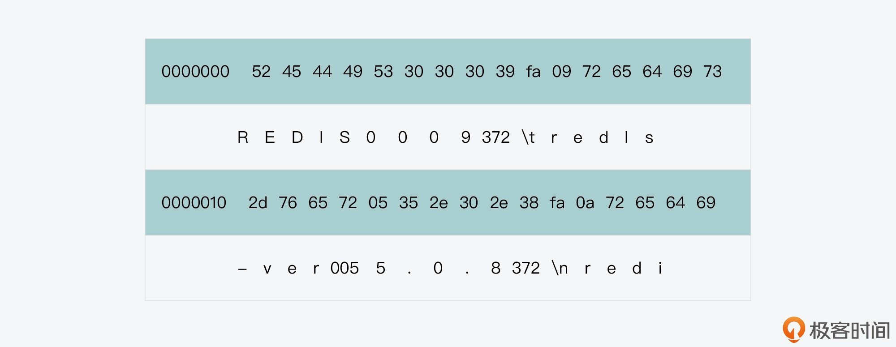
这也就是说，在刚才生成的 RDB 文件中，如果想要转换成 ASCII 字符，它的文件头内容其实就已经包含了 REDIS 的字符串和一些数字，而这正是 RDB 文件头包含的内容。
那么下面，我们就来看看 RDB 文件的文件头是如何生成的。
生成文件头
就像刚才给你介绍的，RDB 文件头的内容首先是魔数，这对应记录了 RDB 文件的版本。在 rdbSaveRio 函数中，魔数是通过 snprintf 函数生成的，它的具体内容是字符串“REDIS”，再加上 RDB 版本的宏定义 RDB_VERSION（在rdb.h文件中，值为 9）。然后，rdbSaveRio 函数会调用 rdbWriteRaw 函数（在 rdb.c 文件中），将魔数写入 RDB 文件，如下所示：
snprintf(magic,sizeof(magic),"REDIS%04d",RDB_VERSION); //生成魔数magic
if (rdbWriteRaw(rdb,magic,9) == -1) goto werr; //将magic写入RDB文件
刚才用来写入魔数的 rdbWriteRaw 函数，它实际会调用 rioWrite 函数（在 rdb.h 文件中）来完成写入。而 rioWrite 函数是 RDB 文件内容的最终写入函数，它负责根据要写入数据的长度，把待写入缓冲区中的内容写入 RDB。这里，你需要注意的是，RDB 文件生成过程中，会有不同的函数负责写入不同部分的内容，不过这些函数最终都还是调用 rioWrite 函数，来完成数据的实际写入的。
好了，当在 RDB 文件头中写入魔数后，rdbSaveRio 函数紧接着会调用 rdbSaveInfoAuxFields 函数，将和 Redis server 相关的一些属性信息写入 RDB 文件头，如下所示：
if (rdbSaveInfoAuxFields(rdb,flags,rsi) == -1) goto werr; //写入属性信息
rdbSaveInfoAuxFields 函数是在 rdb.c 文件中实现的，它会使用键值对的形式，在 RDB 文件头中记录 Redis server 的属性信息。下表中列出了 RDB 文件头记录的一些主要信息，以及它们对应的键和值，你可以看下。

那么，当属性值为字符串时，rdbSaveInfoAuxFields 函数会调用 rdbSaveAuxFieldStrStr 函数写入属性信息；而当属性值为整数时，rdbSaveInfoAuxFields 函数会调用 rdbSaveAuxFieldStrInt 函数写入属性信息，如下所示：
if (rdbSaveAuxFieldStrStr(rdb,"redis-ver",REDIS_VERSION) == -1) return -1;
if (rdbSaveAuxFieldStrInt(rdb,"redis-bits",redis_bits) == -1) return -1;
if (rdbSaveAuxFieldStrInt(rdb,"ctime",time(NULL)) == -1) return -1;
if (rdbSaveAuxFieldStrInt(rdb,"used-mem",zmalloc_used_memory()) == -1) return -1;
这里，无论是 rdbSaveAuxFieldStrStr 函数还是 rdbSaveAuxFieldStrInt 函数，它们都会调用 rdbSaveAuxField 函数来写入属性值。rdbSaveAuxField 函数是在 rdb.c 文件中实现的，它会分三步来完成一个属性信息的写入。
第一步，它调用 rdbSaveType 函数写入一个操作码。这个操作码的目的，是用来在 RDB 文件中标识接下来的内容是什么。当写入属性信息时，这个操作码对应了宏定义 RDB_OPCODE_AUX（在 rdb.h 文件中），值为 250，对应的十六进制值为 FA。这样一来，就方便我们解析 RDB 文件了。比如，在读取 RDB 文件时，如果程序读取到 FA 这个字节，那么，这就表明接下来的内容是一个属性信息。
这里，你需要注意的是，RDB 文件使用了多个操作码，来标识文件中的不同内容。它们都是在 rdb.h 文件中定义的，下面的代码中展示了部分操作码，你可以看下。
#define RDB_OPCODE_IDLE 248 //标识LRU空闲时间
#define RDB_OPCODE_FREQ 249 //标识LFU访问频率信息
#define RDB_OPCODE_AUX 250 //标识RDB文件头的属性信息
#define RDB_OPCODE_EXPIRETIME_MS 252 //标识以毫秒记录的过期时间
#define RDB_OPCODE_SELECTDB 254 //标识文件中后续键值对所属的数据库编号
#define RDB_OPCODE_EOF 255 //标识RDB文件结束，用在文件尾
第二步，rdbSaveAuxField 函数调用 rdbSaveRawString 函数（在 rdb.c 文件中）写入属性信息的键，而键通常是一个字符串。rdbSaveRawString 函数是用来写入字符串的通用函数，它会先记录字符串长度，然后再记录实际字符串，如下图所示。这个长度信息是为了解析 RDB 文件时，程序可以基于它知道当前读取的字符串应该读取多少个字节。
不过，为了节省 RDB 文件消耗的空间，如果字符串中记录的实际是一个整数，rdbSaveRawString 函数还会调用 rdbTryIntegerEncoding 函数（在 rdb.c 文件中），尝试用紧凑结构对字符串进行编码。具体做法你可以进一步阅读 rdbTryIntegerEncoding 函数。
下图展示了 rdbSaveRawString 函数的基本执行逻辑，你可以看下。其中，它调用 rdbSaveLen 函数写入字符串长度，调用 rdbWriteRaw 函数写入实际数据。
第三步，rdbSaveAuxField 函数就需要写入属性信息的值了。因为属性信息的值通常也是字符串，所以和第二步写入属性信息的键类似，rdbSaveAuxField 函数会调用 rdbSaveRawString 函数来写入属性信息的值。
下面的代码展示了 rdbSaveAuxField 函数的执行整体过程，你可以再回顾下。
ssize_t rdbSaveAuxField(rio *rdb, void *key, size_t keylen, void *val, size_t vallen) {
ssize_t ret, len = 0;
//写入操作码
if ((ret = rdbSaveType(rdb,RDB_OPCODE_AUX)) == -1) return -1;
len += ret;
//写入属性信息中的键
if ((ret = rdbSaveRawString(rdb,key,keylen)) == -1) return -1;
len += ret;
//写入属性信息中的值
if ((ret = rdbSaveRawString(rdb,val,vallen)) == -1) return -1;
len += ret;
return len;
}
到这里，RDB 文件头的内容已经写完了。我把刚才创建的 RDB 文件头的部分内容，画在了下图当中，并且标识了十六进制对应的 ASCII 字符以及一些关键信息，你可以结合图例来理解刚才介绍的代码。

这样接下来，rdbSaveRio 函数就要开始写入实际的键值对了，这也是文件中实际记录数据的部分。下面，我们就来具体看下。
生成文件数据部分
因为 Redis server 上的键值对可能被保存在不同的数据库中，所以，rdbSaveRio 函数会执行一个循环，遍历每个数据库，将其中的键值对写入 RDB 文件。
在这个循环流程中，rdbSaveRio 函数会先将 SELECTDB 操作码和对应的数据库编号写入 RDB 文件，这样一来，程序在解析 RDB 文件时，就可以知道接下来的键值对是属于哪个数据库的了。这个过程如下所示：
...
for (j = 0; j < server.dbnum; j++) { //循环遍历每一个数据库
...
//写入SELECTDB操作码
if (rdbSaveType(rdb,RDB_OPCODE_SELECTDB) == -1) goto werr;
if (rdbSaveLen(rdb,j) == -1) goto werr; //写入当前数据库编号j
...
下图展示了刚才我创建的 RDB 文件中 SELECTDB 操作码的信息，你可以看到，数据库编号为 0。
紧接着，rdbSaveRio 函数会写入 RESIZEDB 操作码，用来标识全局哈希表和过期 key 哈希表中键值对数量的记录，这个过程的执行代码如下所示：
...
db_size = dictSize(db->dict); //获取全局哈希表大小
expires_size = dictSize(db->expires); //获取过期key哈希表的大小
if (rdbSaveType(rdb,RDB_OPCODE_RESIZEDB) == -1) goto werr; //写入RESIZEDB操作码
if (rdbSaveLen(rdb,db_size) == -1) goto werr; //写入全局哈希表大小
if (rdbSaveLen(rdb,expires_size) == -1) goto werr; //写入过期key哈希表大小
...
我也把刚才创建的 RDB 文件中，RESIZEDB 操作码的内容画在了下图中，你可以看下。

你可以看到，在 RESIZEDB 操作码后，紧接着记录的是全局哈希表中的键值对，它的数量是 2，然后是过期 key 哈希表中的键值对，其数量为 0。我们刚才在生成 RDB 文件前，只插入了两个键值对，所以，RDB 文件中记录的信息和我们刚才的操作结果是一致的。
好了，在记录完这些信息后，rdbSaveRio 函数会接着执行一个循环流程，在该流程中，rdbSaveRio 函数会取出当前数据库中的每一个键值对，并调用 rdbSaveKeyValuePair 函数（在 rdb.c 文件中），将它写入 RDB 文件。这个基本的循环流程如下所示：
while((de = dictNext(di)) != NULL) { //读取数据库中的每一个键值对
sds keystr = dictGetKey(de); //获取键值对的key
robj key, *o = dictGetVal(de); //获取键值对的value
initStaticStringObject(key,keystr); //为key生成String对象
expire = getExpire(db,&key); //获取键值对的过期时间
//把key和value写入RDB文件
if (rdbSaveKeyValuePair(rdb,&key,o,expire) == -1) goto werr;
...
}
这里，rdbSaveKeyValuePair 函数主要是负责将键值对实际写入 RDB 文件。它会先将键值对的过期时间、LRU 空闲时间或是 LFU 访问频率写入 RDB 文件。在写入这些信息时，rdbSaveKeyValuePair 函数都会先调用 rdbSaveType 函数，写入标识这些信息的操作码，你可以看下下面的代码。
if (expiretime != -1) {
//写入过期时间操作码标识
if (rdbSaveType(rdb,RDB_OPCODE_EXPIRETIME_MS) == -1) return -1;
if (rdbSaveMillisecondTime(rdb,expiretime) == -1) return -1;
}
if (savelru) {
...
//写入LRU空闲时间操作码标识
if (rdbSaveType(rdb,RDB_OPCODE_IDLE) == -1) return -1;
if (rdbSaveLen(rdb,idletime) == -1) return -1;
}
if (savelfu) {
...
//写入LFU访问频率操作码标识
if (rdbSaveType(rdb,RDB_OPCODE_FREQ) == -1) return -1;
if (rdbWriteRaw(rdb,buf,1) == -1) return -1;
}
好了，到这里，rdbSaveKeyValuePair 函数就要开始实际写入键值对了。为了便于解析 RDB 文件时恢复键值对，rdbSaveKeyValuePair 函数会先调用 rdbSaveObjectType 函数，写入键值对的类型标识；然后调用 rdbSaveStringObject 写入键值对的 key；最后，它会调用 rdbSaveObject 函数写入键值对的 value。这个过程如下所示，这几个函数都是在 rdb.c 文件中实现的：
if (rdbSaveObjectType(rdb,val) == -1) return -1; //写入键值对的类型标识
if (rdbSaveStringObject(rdb,key) == -1) return -1; //写入键值对的key
if (rdbSaveObject(rdb,val,key) == -1) return -1; //写入键值对的value
这里，你需要注意的是，rdbSaveObjectType 函数会根据键值对的 value 类型，来决定写入到 RDB 中的键值对类型标识，这些类型标识在 rdb.h 文件中有对应的宏定义。比如，我在刚才创建 RDB 文件前，写入的键值对分别是 String 类型和 Hash 类型，而 Hash 类型因为它包含的元素个数不多，所以默认采用 ziplist 数据结构来保存。这两个类型标识对应的数值如下所示：
#define RDB_TYPE_STRING 0
#define RDB_TYPE_HASH_ZIPLIST 13
我把刚才写入的 String 类型键值对“hello”“redis”在 RDB 文件中对应的记录内容，画在了下图中，你可以看下。
你可以看到，这个键值对的开头类型标识就是 0，和刚才介绍的 RDB_TYPE_STRING 宏定义的值是一致的。而紧接着的 key 和 value，它们都会先记录长度信息，然后才记录实际内容。
因为键值对的 key 都是 String 类型，所以 rdbSaveKeyValuePair 函数就用 rdbSaveStringObject 函数来写入了。而键值对的 value 有不同的类型，所以，rdbSaveObject 函数会根据 value 的类型，执行不同的代码分支，将 value 底层数据结构中的内容写入 RDB。
好了，到这里，我们就了解了 rdbSaveKeyValuePair 函数是如何将键值对写入 RDB 文件中的了。在这个过程中，除了键值对类型、键值对的 key 和 value 会被记录以外，键值对的过期时间、LRU 空闲时间或是 LFU 访问频率也都会记录到 RDB 文件中。这就生成 RDB 文件的数据部分。
最后，我们再来看下 RDB 文件尾的生成。
生成文件尾
当所有键值对都写入 RDB 文件后，rdbSaveRio 函数就可以写入文件尾内容了。文件尾的内容比较简单，主要包括两个部分，一个是 RDB 文件结束的操作码标识，另一个是 RDB 文件的校验值。
rdbSaveRio 函数会先调用 rdbSaveType 函数，写入文件结束操作码 RDB_OPCODE_EOF，然后调用 rioWrite 写入检验值，如下所示：
...
//写入结束操作码
if (rdbSaveType(rdb,RDB_OPCODE_EOF) == -1) goto werr;
//写入校验值
cksum = rdb->cksum;
memrev64ifbe(&cksum);
if (rioWrite(rdb,&cksum,8) == 0) goto werr;
...
下图展示了我刚才生成的 RDB 文件的文件尾，你可以看下。
这样，我们也就整体了解了 RDB 文件从文件头、文件数据部分再到文件尾的整个生成过程了。
小结
今天这节课，我给你介绍了 Redis 内存快照文件 RDB 的生成。你要知道，创建 RDB 文件的三个入口函数分别是 rdbSave、rdbSaveBackground、rdbSaveToSlavesSockets，它们在 Redis 源码中被调用的地方，也就是触发 RDB 文件生成的时机。
另外，你也要重点关注 RDB 文件的基本组成，并且也要结合 rdbSaveRio 函数的执行流程，来掌握 RDB 文件头、文件数据部分和文件尾这三个部分的生成。我总结了以下两点，方便你对 RDB 文件结构和内容有个整体把握：
- RDB 文件使用多种操作码来标识 Redis 不同的属性信息，以及使用类型码来标识不同 value 类型；
- RDB 文件内容是自包含的，也就是说，无论是属性信息还是键值对，RDB 文件都会按照类型、长度、实际数据的格式来记录，这样方便程序对 RDB 文件的解析。
最后，我也想再说一下，RDB 文件包含了 Redis 数据库某一时刻的所有键值对，以及这些键值对的类型、大小、过期时间等信息。当你了解了 RDB 文件的格式和生成方法后，其实你就可以根据需求，开发解析 RDB 文件的程序或是加载 RDB 文件的程序了。
比如，你可以在 RDB 文件中查找内存空间消耗大的键值对，也就是在优化 Redis 性能时通常需要查找的 bigkey；你也可以分析不同类型键值对的数量、空间占用等分布情况，来了解业务数据的特点；你还可以自行加载 RDB 文件，用于测试或故障排查。
当然，这里我也再给你一个小提示，就是在你实际开发 RDB 文件分析工具之前，可以看下redis-rdb-tools这个工具，它能够帮助你分析 RDB 文件中的内容。而如果它还不能满足你的定制化需求，你就可以用上这节课学习的内容，来开发自己的 RDB 分析工具了。
每课一问
你能在 serverCron 函数中，查找到 rdbSaveBackground 函数一共会被调用执行几次吗？这又分别对应了什么场景呢？
19 AOF重写（上）：触发时机与重写的影响
我们知道，Redis 除了使用内存快照 RDB 来保证数据可靠性之外，还可以使用 AOF 日志。不过，RDB 文件是将某一时刻的内存数据保存成一个文件，而 AOF 日志则会记录接收到的所有写操作。如果 Redis server 的写请求很多，那么 AOF 日志中记录的操作也会越来越多，进而就导致 AOF 日志文件越来越大。
所以，为了避免产生过大的 AOF 日志文件，Redis 会对 AOF 文件进行重写，也就是针对当前数据库中每个键值对的最新内容，记录它的插入操作，而不再记录它的历史写操作了。这样一来，重写后的 AOF 日志文件就能变小了。
那么，AOF 重写在哪些时候会被触发呢？以及 AOF 重写需要写文件，这个过程会阻塞 Redis 的主线程，进而影响 Redis 的性能吗？
今天这节课，我就来给你介绍下 AOF 重写的代码实现过程，通过了解它的代码实现，我们就可以清楚地了解到 AOF 重写过程的表现，以及它对 Redis server 的影响。这样，当你再遇到 Redis server 性能变慢的问题时，你就可以排查是否是 AOF 重写导致的了。
好，接下来，我们先来看下 AOF 重写函数以及它的触发时机。
AOF 重写函数与触发时机
首先，实现 AOF 重写的函数是 rewriteAppendOnlyFileBackground，它是在aof.c文件中实现的。在这个函数中，会调用 fork 函数创建一个 AOF 重写子进程，来实际执行重写操作。关于这个函数的具体实现，我稍后会给你详细介绍。这里呢，我们先来看看，这个函数会被哪些函数调用，这样我们就可以了解 AOF 重写的触发时机了。
实际上，rewriteAppendOnlyFileBackground 函数一共会在三个函数中被调用。
第一个是 bgrewriteaofCommand 函数。这个函数是在 aof.c 文件中实现的，对应了我们在 Redis server 上执行 bgrewriteaof 命令，也就是说，我们手动触发了 AOF rewrite 的执行。
不过，即使我们手动执行了 bgrewriteaof 命令，bgrewriteaofCommand 函数也会根据以下两个条件，来判断是否实际执行 AOF 重写。
- 条件一：当前是否已经有 AOF 重写的子进程正在执行。如果有的话，那么 bgrewriteaofCommand 函数就不再执行 AOF 重写了。
- 条件二：当前是否有创建 RDB 的子进程正在执行。如果有的话，bgrewriteaofCommand 函数会把全局变量 server 的 aof_rewrite_scheduled 成员变量设置为 1，这个标志表明 Redis server 已经将 AOF 重写设为待调度运行，等后续条件满足时，它就会实际执行 AOF 重写（我们一会儿就会看到，当 aof_rewrite_scheduled 设置为 1 以后，Redis server 会在哪些条件下实际执行重写操作）。
所以这也就是说，只有当前既没有 AOF 重写子进程也没有 RDB 子进程，bgrewriteaofCommand 函数才会立即调用 rewriteAppendOnlyFileBackground 函数，实际执行 AOF 重写。
以下代码展示了 bgrewriteaofCommand 函数的基本执行逻辑，你可以看下。
void bgrewriteaofCommand(client *c) {
if (server.aof_child_pid != -1) {
.. //有AOF重写子进程，因此不执行重写
} else if (server.rdb_child_pid != -1) {
server.aof_rewrite_scheduled = 1; //有RDB子进程，将AOF重写设置为待调度运行
...
} else if (rewriteAppendOnlyFileBackground() == C_OK) { //实际执行AOF重写
...
}
...
}
第二个是 startAppendOnly 函数。这个函数也是在 aof.c 文件中实现的，它本身会被 configSetCommand 函数（在config.c文件中）和 restartAOFAfterSYNC 函数（在replication.c文件中）调用。
首先，对于 configSetCommand 函数来说，它对应了我们在 Redis 中执行 config 命令启用 AOF 功能，如下所示：
config set appendonly yes
这样，一旦 AOF 功能启用后，configSetCommand 函数就会调用 startAppendOnly 函数，执行一次 AOF 重写。
而对于 restartAOFAfterSYNC 函数来说，它会在主从节点的复制过程中被调用。简单来说，就是当主从节点在进行复制时，如果从节点的 AOF 选项被打开，那么在加载解析 RDB 文件时，AOF 选项就会被关闭。然后，无论从节点是否成功加载了 RDB 文件，restartAOFAfterSYNC 函数都会被调用，用来恢复被关闭的 AOF 功能。
那么在这个过程中，restartAOFAfterSYNC 函数就会调用 startAppendOnly 函数，并进一步调用 rewriteAppendOnlyFileBackground 函数，来执行一次 AOF 重写。
这里你要注意，和 bgrewriteaofCommand 函数类似，startAppendOnly 函数也会判断当前是否有 RDB 子进程在执行，如果有的话，它会将 AOF 重写设置为待调度执行。除此之外，如果 startAppendOnly 函数检测到有 AOF 重写子进程在执行，那么它就会把该子进程先 kill 掉，然后再调用 rewriteAppendOnlyFileBackground 函数进行 AOF 重写。
所以到这里，我们其实可以发现，无论是 bgrewriteaofCommand 函数还是 startAppendOnly 函数，当它们检测到有 RDB 子进程在执行的时候，就会把 aof_rewrite_scheduled 变量设置为 1，这表示 AOF 重写操作将在条件满足时再被执行。
那么，Redis server 什么时候会再检查 AOF 重写操作的条件是否满足呢？这就和 rewriteAppendOnlyFileBackground 函数被调用的第三个函数，serverCron 函数相关了。
第三个是 serverCron 函数。在 Redis server 运行时，serverCron 函数是会被周期性执行的。然后它在执行的过程中，会做两次判断来决定是否执行 AOF 重写。
首先，serverCron 函数会检测当前是否没有 RDB 子进程和 AOF 重写子进程在执行，并检测是否有 AOF 重写操作被设置为了待调度执行，也就是 aof_rewrite_scheduled 变量值为 1。
如果这三个条件都满足，那么 serverCron 函数就会调用 rewriteAppendOnlyFileBackground 函数来执行 AOF 重写。serverCron 函数里面的这部分执行逻辑如下所示：
//如果没有RDB子进程，也没有AOF重写子进程，并且AOF重写被设置为待调度执行，那么调用rewriteAppendOnlyFileBackground函数进行AOF重写
//如果没有RDB子进程，也没有AOF重写子进程，并且AOF重写被设置为待调度执行，那么调用rewriteAppendOnlyFileBackground函数进行AOF重写
if (server.rdb_child_pid == -1 && server.aof_child_pid == -1 &&
server.aof_rewrite_scheduled)
{
rewriteAppendOnlyFileBackground();
}
事实上，这里的代码也回答了我们刚才提到的问题：待调度执行的 AOF 重写会在什么时候执行？
其实，如果 AOF 重写没法立即执行的话，我们也不用担心。因为只要 aof_rewrite_scheduled 变量被设置为 1 了，那么 serverCron 函数就默认会每 100 毫秒执行并检测这个变量值。所以，如果正在执行的 RDB 子进程和 AOF 重写子进程结束了之后，被调度执行的 AOF 重写就可以很快得到执行。
其次，即使 AOF 重写操作没有被设置为待调度执行，serverCron 函数也会周期性判断是否需要执行 AOF 重写。这里的判断条件主要有三个，分别是 AOF 功能已启用、AOF 文件大小比例超出阈值，以及 AOF 文件大小绝对值超出阈值。
这样一来，当这三个条件都满足时，并且也没有 RDB 子进程和 AOF 子进程在运行的话，此时，serverCron 函数就会调用 rewriteAppendOnlyFileBackground 函数执行 AOF 重写。这部分的代码逻辑如下所示：
//如果AOF功能启用、没有RDB子进程和AOF重写子进程在执行、AOF文件大小比例设定了阈值，以及AOF文件大小绝对值超出了阈值，那么，进一步判断AOF文件大小比例是否超出阈值
//如果AOF功能启用、没有RDB子进程和AOF重写子进程在执行、AOF文件大小比例设定了阈值，以及AOF文件大小绝对值超出了阈值，那么，进一步判断AOF文件大小比例是否超出阈值
if (server.aof_state == AOF_ON && server.rdb_child_pid == -1 && server.aof_child_pid == -1 && server.aof_rewrite_perc && server.aof_current_size > server.aof_rewrite_min_size) {
//计算AOF文件当前大小超出基础大小的比例
long long base = server.aof_rewrite_base_size ? server.aof_rewrite_base_size : 1;
long long growth = (server.aof_current_size*100/base) - 100;
//如果AOF文件当前大小超出基础大小的比例已经超出预设阈值，那么执行AOF重写
if (growth >= server.aof_rewrite_perc) {
...
rewriteAppendOnlyFileBackground();
}
}
那么，从这里的代码中，你会看到，为了避免 AOF 文件过大导致占用过多的磁盘空间，以及增加恢复时长，你其实可以通过设置 redis.conf 文件中的以下两个阈值，来让 Redis server 自动重写 AOF 文件。
- auto-aof-rewrite-percentage：AOF 文件大小超出基础大小的比例，默认值为 100%，即超出 1 倍大小。
- auto-aof-rewrite-min-size：AOF 文件大小绝对值的最小值，默认为 64MB。
好了，到这里，我们就了解了 AOF 重写的四个触发时机，这里我也给你总结下，方便你回顾复习。
- 时机一：bgrewriteaof 命令被执行。
- 时机二：主从复制完成 RDB 文件解析和加载（无论是否成功）。
- 时机三：AOF 重写被设置为待调度执行。
- 时机四：AOF 被启用，同时 AOF 文件的大小比例超出阈值，以及 AOF 文件的大小绝对值超出阈值。
另外，这里你还需要注意，在这四个时机下，其实都不能有正在执行的 RDB 子进程和 AOF 重写子进程，否则的话，AOF 重写就无法执行了。
所以接下来，我们就来学习下 AOF 重写的基本执行过程。
AOF 重写的基本过程
首先，我们再来看下刚才介绍的 rewriteAppendOnlyFileBackground 函数。这个函数的主体逻辑比较简单，一方面，它会通过调用 fork 函数创建一个子进程，然后在子进程中调用 rewriteAppendOnlyFile 函数进行 AOF 文件重写。
rewriteAppendOnlyFile 函数是在 aof.c 文件中实现的。它主要会调用 rewriteAppendOnlyFileRio 函数（在 aof.c 文件中）来完成 AOF 日志文件的重写。具体来说，就是 rewriteAppendOnlyFileRio 函数会遍历 Redis server 的每一个数据库，把其中的每个键值对读取出来，然后记录该键值对类型对应的插入命令，以及键值对本身的内容。
比如，如果读取的是一个 String 类型的键值对，那么 rewriteAppendOnlyFileRio 函数，就会记录 SET 命令和键值对本身内容；而如果读取的是 Set 类型键值对，那么它会记录 SADD 命令和键值对内容。这样一来，当需要恢复 Redis 数据库时，我们重新执行一遍 AOF 重写日志中记录的命令操作，就可以依次插入所有键值对了。
另一方面，在父进程中，这个 rewriteAppendOnlyFileBackground 函数会把 aof_rewrite_scheduled 变量设置为 0，同时记录 AOF 重写开始的时间，以及记录 AOF 子进程的进程号。
此外，rewriteAppendOnlyFileBackground 函数还会调用 updateDictResizePolicy 函数，禁止在 AOF 重写期间进行 rehash 操作。这是因为 rehash 操作会带来较多的数据移动操作，对于 AOF 重写子进程来说，这就意味着父进程中的内存修改会比较多。因此，AOF 重写子进程就需要执行更多的写时复制，进而完成 AOF 文件的写入，这就会给 Redis 系统的性能造成负面影响。
以下代码就展示了 rewriteAppendOnlyFileBackground 函数的基本执行逻辑，你可以看下。
int rewriteAppendOnlyFileBackground(void) {
...
if ((childpid = fork()) == 0) { //创建子进程
...
//子进程调用rewriteAppendOnlyFile进行AOF重写
if (rewriteAppendOnlyFile(tmpfile) == C_OK) {
size_t private_dirty = zmalloc_get_private_dirty(-1);
...
exitFromChild(0);
} else {
exitFromChild(1);
}
}
else{ //父进程执行的逻辑
...
server.aof_rewrite_scheduled = 0;
server.aof_rewrite_time_start = time(NULL);
server.aof_child_pid = childpid; //记录重写子进程的进程号
updateDictResizePolicy(); //关闭rehash功能
}
而从这里，你可以看到，AOF 重写和 RDB 创建是比较类似的，它们都会创建一个子进程来遍历所有的数据库，并把数据库中的每个键值对记录到文件中。不过，AOF 重写和 RDB 文件又有两个不同的地方：
- 一是，AOF 文件中是以“命令 + 键值对”的形式，来记录每个键值对的插入操作，而 RDB 文件记录的是键值对数据本身；
- 二是，在 AOF 重写或是创建 RDB 的过程中，主进程仍然可以接收客户端写请求。不过，因为 RDB 文件只需要记录某个时刻下数据库的所有数据就行，而 AOF 重写则需要尽可能地把主进程收到的写操作，也记录到重写的日志文件中。所以，AOF 重写子进程就需要有相应的机制来和主进程进行通信，以此来接收主进程收到的写操作。
下图就展示了 rewriteAppendOnlyFileBackground 函数执行的基本逻辑、主进程和 AOF 重写子进程各自执行的内容，以及主进程和子进程间的通信过程，你可以再来整体回顾下。

到这里，我们就大概掌握了 AOF 重写的基本执行过程。但是在这里，你可能还会有疑问，比如说，AOF 重写的子进程和父进程，它们之间的通信过程是怎么样的呢？
其实，这个通信过程是通过操作系统的管道机制（pipe）来实现的，不过你也别着急，这部分内容，我会在下一讲给你详细介绍。
小结
今天这节课我给你介绍了 Redis AOF 重写机制的实现，你需要重点关注以下两个要点：
- AOF 重写的触发时机。这既包括了我们主动执行 bgrewriteaof 命令，也包括了 Redis server 根据 AOF 文件大小而自动触发的重写。此外，在主从复制的过程中，从节点也会启动 AOF 重写，形成一份完整的 AOF 日志，以便后续进行恢复。当然你也要知道，当要触发 AOF 重写时，Redis server 是不能运行 RDB 子进程和 AOF 重写子进程的。
- AOF 重写的基本执行过程。AOF 重写和 RDB 创建的过程类似，它也是创建了一个子进程来完成重写工作。这是因为 AOF 重写操作，实际上需要遍历 Redis server 上的所有数据库，把每个键值对以插入操作的形式写入日志文件，而日志文件又要进行写盘操作。所以，Redis 源码使用子进程来实现 AOF 重写，这就避免了阻塞主线程，也减少了对 Redis 整体性能的影响。
不过，你需要注意的是，虽然 AOF 重写和 RDB 创建都用了子进程，但是它们也有不同的地方，AOF 重写过程中父进程收到的写操作，也需要尽量写入 AOF 重写日志，在这里，Redis 源码是使用了管道机制来实现父进程和 AOF 重写子进程间的通信的。在下一讲中，我就会重点给你介绍，Redis 是如何使用管道完成父子进程的通信，以及它们通过管道又传递了哪些数据或信息。
每课一问
RDB 文件的创建是由一个子进程来完成的，而 AOF 重写也是由一个子进程完成的，这两个子进程可以各自单独运行。那么请你思考一下，为什么 Redis 源码中在有 RDB 子进程运行时，不会启动 AOF 重写子进程呢？
20 AOF重写（下）：重写时的新写操作记录在哪里？
在上节课，我给你介绍了 AOF 重写过程，其中我带你重点了解了 AOF 重写的触发时机，以及 AOF 重写的基本执行流程。现在你已经知道，AOF 重写是通过重写子进程来完成的。
但是在上节课的最后，我也提到了在 AOF 重写时，主进程仍然在接收客户端写操作，那么这些新写操作会记录到 AOF 重写日志中吗？如果需要记录的话，重写子进程又是通过什么方式向主进程获取这些写操作的呢？
今天这节课，我就来带你了解下 AOF 重写过程中所使用的管道机制，以及主进程和重写子进程的交互过程。这样一方面，你就可以了解 AOF 重写日志包含的写操作的完整程度，当你要使用 AOF 日志恢复 Redis 数据库时，就知道 AOF 能恢复到的程度是怎样的。另一方面，因为 AOF 重写子进程就是通过操作系统提供的管道机制，来和 Redis 主进程交互的，所以学完这节课之后，你还可以掌握管道技术，从而用来实现进程间的通信。
好了，接下来，我们就先来了解下管道机制。
如何使用管道进行父子进程间通信？
首先我们要知道，当进程 A 通过调用 fork 函数创建一个子进程 B，然后进程 A 和 B 要进行通信时，我们通常都需要依赖操作系统提供的通信机制，而管道（pipe）就是一种用于父子进程间通信的常用机制。
具体来说，管道机制在操作系统内核中创建了一块缓冲区，父进程 A 可以打开管道，并往这块缓冲区中写入数据。同时，子进程 B 也可以打开管道，从这块缓冲区中读取数据。这里，你需要注意的是，进程每次往管道中写入数据时，只能追加写到缓冲区中当前数据所在的尾部，而进程每次从管道中读取数据时，只能从缓冲区的头部读取数据。
其实，管道创建的这块缓冲区就像一个先进先出的队列一样，写数据的进程写到队列尾部，而读数据的进程则从队列头读取。下图就展示了两个进程使用管道进行数据通信的过程，你可以看下。

好了，了解了管道的基本功能后，我们再来看下使用管道时需要注意的一个关键点。管道中的数据在一个时刻只能向一个方向流动，这也就是说，如果父进程 A 往管道中写入了数据，那么此时子进程 B 只能从管道中读取数据。类似的，如果子进程 B 往管道中写入了数据，那么此时父进程 A 只能从管道中读取数据。而如果父子进程间需要同时进行数据传输通信，我们就需要创建两个管道了。
下面，我们就来看下怎么用代码实现管道通信。这其实是和操作系统提供的管道的系统调用 pipe 有关，pipe 的函数原型如下所示：
int pipe(int pipefd[2]);
你可以看到，pipe 的参数是一个数组 pipefd，表示的是管道的文件描述符。这是因为进程在往管道中写入或读取数据时，其实是使用 write 或 read 函数的，而 write 和 read 函数需要通过文件描述符才能进行写数据和读数据操作。
数组 pipefd 有两个元素 pipefd[0]和 pipefd[1]，分别对应了管道的读描述符和写描述符。这也就是说，当进程需要从管道中读数据时，就需要用到 pipefd[0]，而往管道中写入数据时，就使用 pipefd[1]。
这里我写了一份示例代码，展示了父子进程如何使用管道通信，你可以看下。
int main()
{
int fd[2], nr = 0, nw = 0;
char buf[128];
pipe(fd);
pid = fork();
if(pid == 0) {
//子进程调用read从fd[0]描述符中读取数据
printf("child process wait for message\n");
nr = read(fds[0], buf, sizeof(buf))
printf("child process receive %s\n", buf);
}else{
//父进程调用write往fd[1]描述符中写入数据
printf("parent process send message\n");
strcpy(buf, "Hello from parent");
nw = write(fd[1], buf, sizeof(buf));
printf("parent process send %d bytes to child.\n", nw);
}
return 0;
}
从代码中，你可以看到，在父子进程进行管道通信前，我们需要在代码中定义用于保存读写描述符的数组 fd，然后调用 pipe 系统创建管道，并把数组 fd 作为参数传给 pipe 函数。紧接着，在父进程的代码中，父进程会调用 write 函数往管道文件描述符 fd[1]中写入数据，另一方面，子进程调用 read 函数从管道文件描述符 fd[0]中读取数据。
这里，为了便于你理解，我也画了一张图，你可以参考。
好了，现在你就了解了如何使用管道来进行父子进程的通信了。那么下面，我们就来看下在 AOF 重写过程中，重写子进程是如何用管道和主进程（也就是它的父进程）进行通信的。
AOF 重写子进程如何使用管道和父进程交互？
我们先来看下在 AOF 重写过程中，都创建了几个管道。
这实际上是 AOF 重写函数 rewriteAppendOnlyFileBackground 在执行过程中，通过调用 aofCreatePipes 函数来完成的，如下所示：
int rewriteAppendOnlyFileBackground(void) {
…
if (aofCreatePipes() != C_OK) return C_ERR;
…
}
这个 aofCreatePipes 函数是在aof.c文件中实现的，它的逻辑比较简单，可以分成三步。
第一步，aofCreatePipes 函数创建了包含 6 个文件描述符元素的数组 fds。就像我刚才给你介绍的，每一个管道会对应两个文件描述符，所以，数组 fds 其实对应了 AOF 重写过程中要用到的三个管道。紧接着，aofCreatePipes 函数就调用 pipe 系统调用函数，分别创建三个管道。
这部分代码如下所示，你可以看下。
int aofCreatePipes(void) {
int fds[6] = {-1, -1, -1, -1, -1, -1};
int j;
if (pipe(fds) == -1) goto error; /* parent -> children data. */
if (pipe(fds+2) == -1) goto error; /* children -> parent ack. */
if (pipe(fds+4) == -1) goto error;
…}
}
第二步，aofCreatePipes 函数会调用 anetNonBlock 函数（在anet.c文件中），将 fds
数组的第一和第二个描述符（fds[0]和 fds[1]）对应的管道设置为非阻塞。然后，aofCreatePipes 函数会调用 aeCreateFileEvent 函数，在数组 fds 的第三个描述符 (fds[2]) 上注册了读事件的监听，对应的回调函数是 aofChildPipeReadable。aofChildPipeReadable 函数也是在 aof.c 文件中实现的，我稍后会给你详细介绍它。
int aofCreatePipes(void) {
…
if (anetNonBlock(NULL,fds[0]) != ANET_OK) goto error;
if (anetNonBlock(NULL,fds[1]) != ANET_OK) goto error;
if (aeCreateFileEvent(server.el, fds[2], AE_READABLE, aofChildPipeReadable, NULL) == AE_ERR) goto error;
…
}
这样，在完成了管道创建、管道设置和读事件注册后，最后一步，aofCreatePipes 函数会将数组 fds 中的六个文件描述符，分别复制给 server 变量的成员变量，如下所示：
int aofCreatePipes(void) {
…
server.aof_pipe_write_data_to_child = fds[1];
server.aof_pipe_read_data_from_parent = fds[0];
server.aof_pipe_write_ack_to_parent = fds[3];
server.aof_pipe_read_ack_from_child = fds[2];
server.aof_pipe_write_ack_to_child = fds[5];
server.aof_pipe_read_ack_from_parent = fds[4];
…
}
在这一步中，我们就可以从 server 变量的成员变量名中，看到 aofCreatePipes 函数创建的三个管道，以及它们各自的用途。
- fds[0]和 fds[1]：对应了主进程和重写子进程间用于传递操作命令的管道，它们分别对应读描述符和写描述符。
- fds[2]和 fds[3]：对应了重写子进程向父进程发送 ACK 信息的管道，它们分别对应读描述符和写描述符。
- fds[4]和 fds[5]：对应了父进程向重写子进程发送 ACK 信息的管道，它们分别对应读描述符和写描述符。
下图也展示了 aofCreatePipes 函数的基本执行流程，你可以再回顾下。
好了，了解了 AOF 重写过程中的管道个数和用途后，下面我们再来看下这些管道具体是如何使用的。
操作命令传输管道的使用
实际上，当 AOF 重写子进程在执行时，主进程还会继续接收和处理客户端写请求。这些写操作会被主进程正常写入 AOF 日志文件，这个过程是由 feedAppendOnlyFile 函数（在 aof.c 文件中）来完成。
feedAppendOnlyFile 函数在执行的最后一步，会判断当前是否有 AOF 重写子进程在运行。如果有的话，它就会调用 aofRewriteBufferAppend 函数（在 aof.c 文件中），如下所示：
if (server.aof_child_pid != -1)
aofRewriteBufferAppend((unsigned char*)buf,sdslen(buf));
aofRewriteBufferAppend 函数的作用是将参数 buf，追加写到全局变量 server 的 aof_rewrite_buf_blocks 这个列表中。
这里，你需要注意的是，参数 buf 是一个字节数组，feedAppendOnlyFile 函数会将主进程收到的命令操作写入到 buf 中。而 aof_rewrite_buf_blocks 列表中的每个元素是 aofrwblock 结构体类型，这个结构体中包括了一个字节数组，大小是 AOF_RW_BUF_BLOCK_SIZE，默认值是 10MB。此外，aofrwblock 结构体还记录了字节数组已经使用的空间和剩余可用的空间。
以下代码展示了 aofrwblock 结构体的定义，你可以看下。
typedef struct aofrwblock {
unsigned long used, free; //buf数组已用空间和剩余可用空间
char buf[AOF_RW_BUF_BLOCK_SIZE]; //宏定义AOF_RW_BUF_BLOCK_SIZE默认为10MB
} aofrwblock;
这样一来，aofrwblock 结构体就相当于是一个 10MB 的数据块，记录了 AOF 重写期间主进程收到的命令，而 aof_rewrite_buf_blocks 列表负责将这些数据块连接起来。当 aofRewriteBufferAppend 函数执行时，它会从 aof_rewrite_buf_blocks 列表中取出一个 aofrwblock 类型的数据块，用来记录命令操作。
当然，如果当前数据块中的空间不够保存参数 buf 中记录的命令操作，那么 aofRewriteBufferAppend 函数就会再分配一个 aofrwblock 数据块。
好了，当 aofRewriteBufferAppend 函数将命令操作记录到 aof_rewrite_buf_blocks 列表中之后，它还会检查 aof_pipe_write_data_to_child 管道描述符上是否注册了写事件，这个管道描述符就对应了我刚才给你介绍的 fds[1]。
如果没有注册写事件，那么 aofRewriteBufferAppend 函数就会调用 aeCreateFileEvent 函数，注册一个写事件，这个写事件会监听 aof_pipe_write_data_to_child 这个管道描述符，也就是主进程和重写子进程间的操作命令传输管道。
当这个管道可以写入数据时，写事件对应的回调函数 aofChildWriteDiffData（在 aof.c 文件中）就会被调用执行。这个过程你可以参考下面的代码：
void aofRewriteBufferAppend(unsigned char *s, unsigned long len) {
...
//检查aof_pipe_write_data_to_child描述符上是否有事件
if (aeGetFileEvents(server.el,server.aof_pipe_write_data_to_child) == 0) {
//如果没有注册事件，那么注册一个写事件，回调函数是aofChildWriteDiffData
aeCreateFileEvent(server.el, server.aof_pipe_write_data_to_child,
AE_WRITABLE, aofChildWriteDiffData, NULL);
}
...}
其实，刚才我介绍的写事件回调函数 aofChildWriteDiffData，它的主要作用是从 aof_rewrite_buf_blocks 列表中逐个取出数据块，然后通过 aof_pipe_write_data_to_child 管道描述符，将数据块中的命令操作通过管道发给重写子进程，这个过程如下所示：
void aofChildWriteDiffData(aeEventLoop *el, int fd, void *privdata, int mask) {
...
while(1) {
//从aof_rewrite_buf_blocks列表中取出数据块
ln = listFirst(server.aof_rewrite_buf_blocks);
block = ln ? ln->value : NULL;
if (block->used > 0) {
//调用write将数据块写入主进程和重写子进程间的管道
nwritten = write(server.aof_pipe_write_data_to_child,
block->buf,block->used);
if (nwritten <= 0) return;
...
}
...}}
好了，这样一来，你就了解了主进程其实是在正常记录 AOF 日志时，将收到的命令操作写入 aof_rewrite_buf_blocks 列表中的数据块，然后再通过 aofChildWriteDiffData 函数将记录的命令操作通过主进程和重写子进程间的管道发给子进程。
下图也展示了这个过程，你可以再来回顾下。
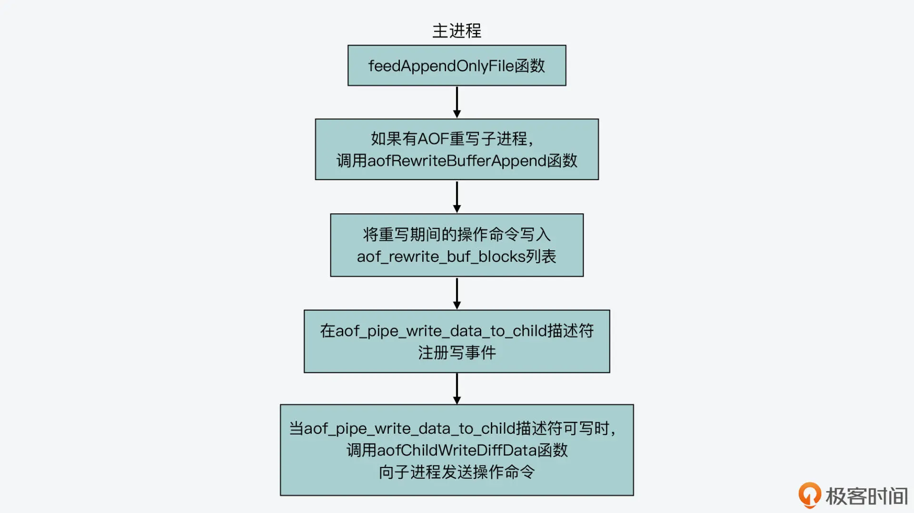
然后，我们接着来看下重写子进程，是如何从管道中读取父进程发送的命令操作的。
这实际上是由 aofReadDiffFromParent 函数（在 aof.c 文件中）来完成的。这个函数会使用一个 64KB 大小的缓冲区，然后调用 read 函数，读取父进程和重写子进程间的操作命令传输管道中的数据。以下代码也展示了 aofReadDiffFromParent 函数的基本执行流程，你可以看下。
ssize_t aofReadDiffFromParent(void) {
char buf[65536]; //管道默认的缓冲区大小
ssize_t nread, total = 0;
//调用read函数从aof_pipe_read_data_from_parent中读取数据
while ((nread =
read(server.aof_pipe_read_data_from_parent,buf,sizeof(buf))) > 0) {
server.aof_child_diff = sdscatlen(server.aof_child_diff,buf,nread);
total += nread;
}
return total;
}
那么，从代码中，你可以看到 aofReadDiffFromParent 函数会通过 aof_pipe_read_data_from_parent 描述符读取数据。然后，它会将读取的操作命令追加到全局变量 server 的 aof_child_diff 字符串中。而在 AOF 重写函数 rewriteAppendOnlyFile 的执行过程最后，aof_child_diff 字符串会被写入 AOF 重写日志文件，以便我们在使用 AOF 重写日志时，能尽可能地恢复重写期间收到的操作。
这个 aof_child_diff 字符串写入重写日志文件的过程，你可以参考下面给出的代码：
int rewriteAppendOnlyFile(char *filename) {
...
//将aof_child_diff中累积的操作命令写入AOF重写日志文件
if (rioWrite(&aof,server.aof_child_diff,sdslen(server.aof_child_diff)) == 0)
goto werr;
...
}
所以也就是说，aofReadDiffFromParent 函数实现了重写子进程向主进程读取操作命令。那么在这里，我们还需要搞清楚的问题是：aofReadDiffFromParent 函数会在哪里被调用，也就是重写子进程会在什么时候从管道中读取主进程收到的操作。
其实，aofReadDiffFromParent 函数一共会被以下三个函数调用。
- rewriteAppendOnlyFileRio 函数：这个函数是由重写子进程执行的，它负责遍历 Redis 每个数据库，生成 AOF 重写日志，在这个过程中，它会不时地调用 aofReadDiffFromParent 函数。
- rewriteAppendOnlyFile 函数：这个函数是重写日志的主体函数，也是由重写子进程执行的，它本身会调用 rewriteAppendOnlyFileRio 函数。此外，它在调用完 rewriteAppendOnlyFileRio 函数后，还会多次调用 aofReadDiffFromParent 函数，以尽可能多地读取主进程在重写日志期间收到的操作命令。
- rdbSaveRio 函数：这个函数是创建 RDB 文件的主体函数。当我们使用 AOF 和 RDB 混合持久化机制时，这个函数也会调用 aofReadDiffFromParent 函数。
从这里，我们可以看到，Redis 源码在实现 AOF 重写过程中，其实会多次让重写子进程向主进程读取新收到的操作命令，这也是为了让重写日志尽可能多地记录最新的操作，提供更加完整的操作记录。
最后，我们再来看下重写子进程和主进程间用来传递 ACK 信息的两个管道的使用。
ACK 管道的使用
刚才在介绍主进程调用 aofCreatePipes 函数创建管道时，你就了解到了，主进程会在 aof_pipe_read_ack_from_child 管道描述符上注册读事件。这个描述符对应了重写子进程向主进程发送 ACK 信息的管道。同时，这个描述符是一个读描述符，表示主进程从管道中读取 ACK 信息。
其实，重写子进程在执行 rewriteAppendOnlyFile 函数时，这个函数在完成日志重写，以及多次向父进程读取操作命令后，就会调用 write 函数，向 aof_pipe_write_ack_to_parent 描述符对应的管道中写入“！”，这就是重写子进程向主进程发送 ACK 信号，让主进程停止发送收到的新写操作。这个过程如下所示：
int rewriteAppendOnlyFile(char *filename) {
...
if (write(server.aof_pipe_write_ack_to_parent,"!",1) != 1) goto werr;
...}
一旦重写子进程向主进程发送 ACK 信息的管道中有了数据，aof_pipe_read_ack_from_child 管道描述符上注册的读事件就会被触发，也就是说，这个管道中有数据可以读取了。那么，aof_pipe_read_ack_from_child 管道描述符上，注册的回调函数 aofChildPipeReadable（在 aof.c 文件中）就会执行。
这个函数会判断从 aof_pipe_read_ack_from_child 管道描述符读取的数据是否是“！”，如果是的话，那它就会调用 write 函数，往 aof_pipe_write_ack_to_child 管道描述符上写入“！”，表示主进程已经收到重写子进程发送的 ACK 信息，同时它会给重写子进程回复一个 ACK 信息。这个过程如下所示：
void aofChildPipeReadable(aeEventLoop *el, int fd, void *privdata, int mask) {
...
if (read(fd,&byte,1) == 1 && byte == '!') {
...
if (write(server.aof_pipe_write_ack_to_child,"!",1) != 1) { ...}
}
...
}
好了，到这里，我们就了解了，重写子进程在完成日志重写后，是先给主进程发送 ACK 信息。然后主进程在 aof_pipe_read_ack_from_child 描述符上监听读事件发生，并调用 aofChildPipeReadable 函数向子进程发送 ACK 信息。
最后，重写子进程执行的 rewriteAppendOnlyFile 函数，会调用 syncRead 函数，从 aof_pipe_read_ack_from_parent 管道描述符上，读取主进程发送给它的 ACK 信息，如下所示：
int rewriteAppendOnlyFile(char *filename) {
...
if (syncRead(server.aof_pipe_read_ack_from_parent,&byte,1,5000) != 1 || byte != '!') goto werr
...
}
下图也展示了 ACK 管道的使用过程，你可以再回顾下。
这样一来，重写子进程和主进程之间就通过两个 ACK 管道，相互确认重写过程结束了。
小结
今天这节课，我主要给你介绍了在 AOF 重写过程中，主进程和重写子进程间的管道通信。这里，你需要重点关注管道机制的使用，以及主进程和重写子进程使用管道通信的过程。
在这个过程中，AOF 重写子进程和主进程是使用了一个操作命令传输管道和两个 ACK 信息发送管道。操作命令传输管道是用于主进程写入收到的新操作命令，以及用于重写子进程读取操作命令，而 ACK 信息发送管道是在重写结束时，重写子进程和主进程用来相互确认重写过程的结束。最后，重写子进程会进一步将收到的操作命令记录到重写日志文件中。
这样一来，AOF 重写过程中主进程收到的新写操作，就不会被遗漏了。因为一方面，这些新写操作会被记录在正常的 AOF 日志中，另一方面，主进程会将新写操作缓存在 aof_rewrite_buf_blocks 数据块列表中，并通过管道发送给重写子进程。这样，就能尽可能地保证重写日志具有最新、最完整的写操作了。
最后，我也再提醒你一下，今天这节课我们学习的管道其实属于匿名管道，是用在父子进程间进行通信的。如果你在实际开发中，要在非父子进程的两个进程间进行通信，那么你就需要用到命名管道了。而命名管道会以一个文件的形式保存在文件系统中，并会有相应的路径和文件名。这样，非父子进程的两个进程通过命名管道的路径和文件名，就可以打开管道进行通信了。
每课一问
今天这节课，我给你介绍了重写子进程和主进程间进行操作命令传输、ACK 信息传递用的三个管道。那么，你在 Redis 源码中还能找见其他使用管道的地方吗？
21 主从复制：基于状态机的设计与实现
这节课，我想跟你聊聊 Redis 是如何基于状态机的设计思路，来实现主从复制的。
主从复制技术我们应该都比较熟悉，因为在使用 Redis 或 MySQL 数据库时，我们经常会使用主从复制来实现主从节点间的数据同步，以此提升服务的高可用性。
从原理上来说，Redis 的主从复制主要包括了全量复制、增量复制和长连接同步三种情况。全量复制传输 RDB 文件，增量复制传输主从断连期间的命令，而长连接同步则是把主节点正常收到的请求传输给从节点。
这三种情况看似简单，但是在实现的时候，我们通常都需要考虑主从连接建立、主从握手和验证、复制情况判断和数据传输等多种不同状态下的逻辑处理。
那么，如何才能高效地实现主从复制呢？
实际上，Redis 是采用了基于状态机的设计思想，来清晰地实现不同状态及状态间的跳转。而在我们实现网络功能的时候，这种设计和实现方法其实非常重要，它可以避免我们在处理不同状态时的逻辑冲突或遗漏。所以今天这节课，我就来给你介绍下如何基于状态机实现主从复制。
不过这里我也要说明一点，因为主从复制的状态比较多，如果一下子就学习每个状态细节，我们其实会很容易混淆不同状态的区别和转换关系。所以在今天的课程中，我会先给你介绍下复制整体过程的四个阶段，然后，我们再来逐一学习每个阶段中的状态与变化。
主从复制的四大阶段
首先，我们可以根据主从复制时的关键事件，把整个复制过程分成四个阶段，分别是初始化、建立连接、主从握手、复制类型判断与执行。下面，我们就来依次了解下每个阶段的主要工作。
1. 初始化阶段
当我们把一个 Redis 实例 A 设置为另一个实例 B 的从库时，实例 A 会完成初始化操作，主要是获得了主库的 IP 和端口号。而这个初始化过程，我们可以用三种方式来设置。
- 方式一：在实例 A 上执行 replicaof masterip masterport 的主从复制命令，指明实例 B 的 IP（masterip）和端口号（masterport）。
- 方式二：在实例 A 的配置文件中设置 replicaof masterip masterport，实例 A 可以通过解析文件获得主库 IP 和端口号。
- 方式三：在实例 A 启动时，设置启动参数–replicaof [masterip] [masterport]。实例 A 解析启动参数，就能获得主库的 IP 和端口号。
2. 建立连接阶段
接下来，一旦实例 A 获得了主库 IP 和端口号，该实例就会尝试和主库建立 TCP 网络连接，并且会在建立好的网络连接上，监听是否有主库发送的命令。
3. 主从握手阶段
当实例 A 和主库建立好连接之后，实例 A 就开始和主库进行握手。简单来说，握手过程就是主从库间相互发送 PING-PONG 消息，同时从库根据配置信息向主库进行验证。最后，从库把自己的 IP、端口号，以及对无盘复制和 PSYNC 2 协议的支持情况发给主库。
那么，和前两个阶段相比，主从握手阶段要执行的操作会比较多，涉及的状态也比较多，所以我们需要先掌握这个阶段要完成的操作，一会儿我就来给你具体介绍。
4. 复制类型判断与执行阶段
这样，等到主从库之间的握手完成后，从库就会给主库发送 PSYNC 命令。紧接着，主库会根据从库发送的命令参数作出相应的三种回复，分别是执行全量复制、执行增量复制、发生错误。最后，从库在收到上述回复后，就会根据回复的复制类型，开始执行具体的复制操作。
下图展示了主从复制的整体过程及四个阶段，你可以看下。
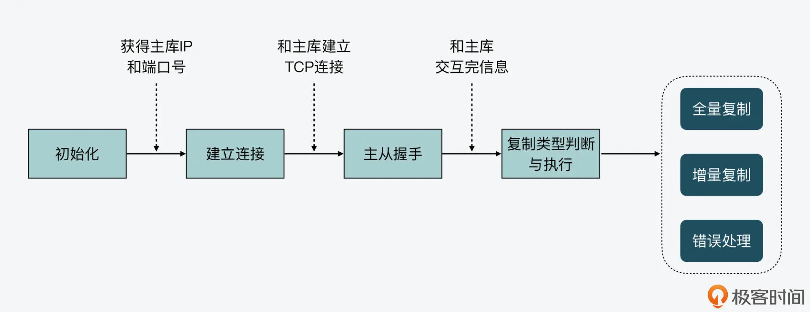
好，了解了主从复制的主要阶段后，接下来，我们就具体学习下 Redis 是如何使用不同的状态及转换，来让从库完成和主库的数据复制操作的。
基于状态机的主从复制实现
首先你要知道，基于状态机实现主从复制的好处，就是当你在开发程序时，只需要考虑清楚在不同状态下具体要执行的操作，以及状态之间的跳转条件就行了。所以，Redis 源码中采用的基于状态机跳转的设计思路和主从复制的实现，就是很值得你学习的一点。
那么，主从复制中的状态机具体对应的是什么呢？这就和 Redis 实例的数据结构有关了。
每一个 Redis 实例在代码中都对应一个 redisServer 结构体，这个结构体包含了和 Redis 实例相关的各种配置，比如实例的 RDB、AOF 配置、主从复制配置、切片集群配置等。然后，与主从复制状态机相关的变量是 repl_state，Redis 在进行主从复制时，从库就是根据这个变量值的变化，来实现不同阶段的执行和跳转。下面代码显示了 redisServer 结构体中从库进行复制相关的变量，你可以看下。
struct redisServer {
...
/* 复制相关(slave) */
char *masterauth; /* 用于和主库进行验证的密码*/
char *masterhost; /* 主库主机名 */
int masterport; /* 主库端口号r */
…
client *master; /* 从库上用来和主库连接的客户端 */
client *cached_master; /* 从库上缓存的主库信息 */
int repl_state; /* 从库的复制状态机 */
...
}
好，接下来，我们就按照主从复制的四个阶段，来依次学习每个阶段中状态机的变迁，以及相应的代码实现。
初始化阶段
首先，当一个实例启动后，就会调用 server.c 中的 initServerConfig 函数，初始化 redisServer 结构体。此时，实例会把状态机的初始状态设置为 REPL_STATE_NONE，如下所示：
void initServerConfig(void) {
…
server.repl_state = REPL_STATE_NONE;
…
}
然后，一旦实例执行了 replicaof masterip masterport 命令，就会调用 replication.c 中的 replicaofCommand 函数进行处理。replicaof 命令携带的 masterip 和 masterport 参数对应了主库的 IP 和端口号，replicaofCommand 函数如果判断发现实例并没有记录过主库的 IP 和端口号，就表明当前实例可以和设置的主库进行连接。
紧接着，replicaofCommand 函数会调用 replicationSetMaster 函数设置主库的信息。这部分的代码逻辑如下所示：
/* 检查是否已记录主库信息，如果已经记录了，那么直接返回连接已建立的消息 */
if (server.masterhost && !strcasecmp(server.masterhost,c->argv[1]->ptr)&& server.masterport == port) {
serverLog(LL_NOTICE,"REPLICAOF would result into synchronization with the master we are already connected with. No operation performed.");
addReplySds(c,sdsnew("+OK Already connected to specified master\r\n"));
return;
}
/* 如果没有记录主库的IP和端口号，设置主库的信息 */
replicationSetMaster(c->argv[1]->ptr, port);
而 replicationSetMaster 函数除了会记录主库的 IP、端口号之外，还会把从库实例的状态机设置为 REPL_STATE_CONNECT。此时，主从复制的初始化阶段就完成了，状态机会从 REPL_STATE_NONE 变迁为 REPL_STATE_CONNECT。这个过程如下所示：

建立连接阶段
接着，我们来了解下建立连接阶段的状态机变化。
当从库实例进入这个阶段时，状态已经变成了 REPL_STATE_CONNECT。那么，从库是何时开始和主库建立网络连接的呢？
这就和 Redis 的周期性任务执行相关了。所谓周期性任务，我们在【第 11 讲】中已经初步了解过，就是指 Redis 实例在运行时，按照一定时间周期重复执行的任务。Redis 的周期性任务很多，其中之一就是 replicationCron() 任务。这个任务的执行频率是每 1000ms 执行一次，如下面的代码所示：
int serverCron(struct aeEventLoop *eventLoop, long long id, void *clientData) {
…
run_with_period(1000) replicationCron();
…
}
replicationCron() 任务的函数实现逻辑是在 server.c 中，在该任务中，一个重要的判断就是，检查从库的复制状态机状态。如果状态机状态是 REPL_STATE_CONNECT，那么从库就开始和主库建立连接。连接的建立是通过调用 connectWithMaster() 函数来完成的。
replicationCron() {
…
/* 如果从库实例的状态是REPL_STATE_CONNECT，那么从库通过connectWithMaster和主库建立连接 */
if (server.repl_state == REPL_STATE_CONNECT) {
serverLog(LL_NOTICE,"Connecting to MASTER %s:%d",
server.masterhost, server.masterport);
if (connectWithMaster() == C_OK) {
serverLog(LL_NOTICE,"MASTER <-> REPLICA sync started");
}
}
…
}
这样，当从库实例调用 connectWithMaster 函数后，会先通过 anetTcpNonBlockBestEffortBindConnect 函数和主库建立连接。一旦连接建立成功后，从库实例就会在连接上创建读写事件，并且注册对读写事件进行处理的函数 syncWithMaster。
最后，connectWithMaster 函数会将从库实例的状态机置为 REPL_STATE_CONNECTING。下面的代码显示了这部分的逻辑，你可以看下。
int connectWithMaster(void) {
int fd;
//从库和主库建立连接
fd = anetTcpNonBlockBestEffortBindConnect(NULL, server.masterhost,server.masterport,NET_FIRST_BIND_ADDR);
…
//在建立的连接上注册读写事件，对应的回调函数是syncWithMaster
if(aeCreateFileEvent(server.el,fd,AE_READABLE|AE_WRITABLE,syncWithMaster, NULL) ==AE_ERR)
{
close(fd);
serverLog(LL_WARNING,"Can't create readable event for SYNC");
return C_ERR;
}
//完成连接后，将状态机设置为REPL_STATE_CONNECTING
…
server.repl_state = REPL_STATE_CONNECTING;
return C_OK;
}
所以，当从库实例的状态变为 REPL_STATE_CONNECTING 时，建立连接的阶段就完成了。这个初始化阶段和建立连接阶段的状态机变迁如下图所示，你可以参考下。

主从握手阶段
接下来，当主从库建立网络连接后，从库实例其实并没有立即开始进行数据同步，而是会先和主库之间进行握手通信。
握手通信的目的，主要包括从库和主库进行验证，以及从库将自身的 IP 和端口号发给主库。如我前面所说，这个阶段涉及的状态变迁会比较多，不过其变迁的逻辑实际上是比较清晰的。
首先，在建立连接阶段的最后，从库实例的状态机处于 REPL_STATE_CONNECTING 状态。一旦主库和从库的连接建立后，从库实例的 syncWithMaster 函数就会被回调。在这个函数中，如果从库实例的状态是 REPL_STATE_CONNECTING，那么实例会发送 PING 消息给主库，并将状态机置为 REPL_STATE_RECEIVE_PONG。
当从库收到主库返回的 PONG 消息后，接下来，从库会依次给主库发送验证信息、端口号、IP、对 RDB 文件和无盘复制的支持情况。每一次的握手通信发送消息时，都会对应从库的一组状态变迁。比如，当从库要给主库发送验证信息前，会将自身状态机置为 REPL_STATE_SEND_AUTH，然后，从库给主库发送实际的验证信息。验证信息发送完成后，从库状态机会变迁为 REPL_STATE_RECEIVE_AUTH，并开始读取主库返回验证结果信息。
这样一来，当从库对端口号、IP，以及对 RDB 文件和无盘复制的支持情况进行握手时，也就是在 SEND 和 RECEIVE 两种状态间变迁。为了便于你掌握这些状态的变迁，这里我放了一张图，其中显示了从初始化阶段到主从握手阶段的各状态变化，你可以参考下。
复制类型判断与执行阶段
当从库和主库完成握手后，从库会读取主库返回的 CAPA 消息响应，此时，状态机为 REPL_STATE_RECEIVE_CAPA。紧接着，从库的状态变迁为 REPL_STATE_SEND_PSYNC，表明要开始向主库发送 PSYNC 命令，开始实际的数据同步。
此时，从库会调用 slaveTryPartialResynchronization 函数，向主库发送 PSYNC 命令，并且状态机的状态会置为 REPL_STATE_RECEIVE_PSYNC。下面的代码显示了这三个状态的变迁：
/* 从库状态机进入REPL_STATE_RECEIVE_CAPA. */
if (server.repl_state == REPL_STATE_RECEIVE_CAPA) {
…
//读取主库返回的CAPA消息响应
server.repl_state = REPL_STATE_SEND_PSYNC;
}
//从库状态机变迁为REPL_STATE_SEND_PSYNC后，开始调用slaveTryPartialResynchronization函数向主库发送PSYNC命令，进行数据同步
if (server.repl_state == REPL_STATE_SEND_PSYNC) {
if (slaveTryPartialResynchronization(fd,0) == PSYNC_WRITE_ERROR)
{
…
}
server.repl_state = REPL_STATE_RECEIVE_PSYNC;
return;
}
然后，从库调用的 slaveTryPartialResynchronization 函数，负责向主库发送数据同步的命令。主库收到命令后，会根据从库发送的主库 ID、复制进度值 offset，来判断是进行全量复制还是增量复制，或者是返回错误。
以下代码就展示了 slaveTryPartialResynchronization 函数的基本分支，你可以看到从库会根据主库的回复消息，将 slaveTryPartialResynchronization 函数的返回值置为不同结果，分别对应了全量复制、增量复制，或是不支持 PSYNC。
int slaveTryPartialResynchronization(int fd, int read_reply) {
…
//发送PSYNC命令
if (!read_reply) {
//从库第一次和主库同步时，设置offset为-1
server.master_initial_offset = -1;
…
//调用sendSynchronousCommand发送PSYNC命令
reply =
sendSynchronousCommand(SYNC_CMD_WRITE,fd,"PSYNC",psync_replid,psync_offset,NULL);
…
//发送命令后，等待主库响应
return PSYNC_WAIT_REPLY;
}
//读取主库的响应
reply = sendSynchronousCommand(SYNC_CMD_READ,fd,NULL);
//主库返回FULLRESYNC，全量复制
if (!strncmp(reply,"+FULLRESYNC",11)) {
…
return PSYNC_FULLRESYNC;
}
//主库返回CONTINUE，执行增量复制
if (!strncmp(reply,"+ CONTINUE",11)) {
…
return PSYNC_CONTINUE;
}
//主库返回错误信息
if (strncmp(reply,"-ERR",4)) {
…
}
return PSYNC_NOT_SUPPORTED;
}
因为 slaveTryPartialResynchronization 是在 syncWithMaster 函数中调用的，当该函数返回 PSYNC 命令不同的结果时，syncWithMaster 函数就会根据结果值执行不同处理。
其中，值得关注的是全量复制，当主库对从库的 PSYNC 命令返回 FULLRESYNC 时，从库会在和主库的网络连接上注册 readSyncBulkPayload 回调函数，并将状态机置为 REPL_STATE_TRANSFER，表示开始进行实际的数据同步，比如主库把 RDB 文件传输给从库。
//读取PSYNC命令的返回结果
psync_result = slaveTryPartialResynchronization(fd,1);
//PSYNC结果还没有返回，先从syncWithMaster函数返回处理其他操作
if (psync_result == PSYNC_WAIT_REPLY) return;
//如果PSYNC结果是PSYNC_CONTINUE，从syncWithMaster函数返回，后续执行增量复制
if (psync_result == PSYNC_CONTINUE) {
…
return;
}
//如果执行全量复制的话，针对连接上的读事件，创建readSyncBulkPayload回调函数
if (aeCreateFileEvent(server.el,fd, AE_READABLE,readSyncBulkPayload,NULL)
== AE_ERR)
{
…
}
//将从库状态机置为REPL_STATE_TRANSFER
server.repl_state = REPL_STATE_TRANSFER;
好了，到这里，我们就学习了从库在复制类型判断和执行阶段的状态机变迁。我把主从复制各阶段的状态变迁整合在一起，画了下面这张图，以便你更好地掌握。

小结
主从复制是 Redis、MySQL 等数据库或存储系统，用来实现高可用性的方法。要实现主从复制，则需要应对整个过程中 Redis 在不同状态下的各种处理逻辑，因此，如何正确实现主从复制，并且不遗漏可能的状态，是我们在实际开发中需要面对的问题。
这节课我们学习了 Redis 主从复制的设计思想与实现方法。Redis 采用了状态机驱动的方法，为从库实例设置状态变量。在整个复制过程中，代码逻辑会根据从库状态机的变迁，处理不同状态下的情况。
为了便于你掌握主从复制的实现，我将整个过程分解成四个阶段：初始化、建立连接、主从握手、复制类型判断与执行。在每个阶段中，从库的状态会不断变化，完成和主库建立网络连接、交换配置信息、发送同步命令，并根据主库对同步请求的返回结果，执行全量同步或增量同步。
状态机驱动的设计方法是一种通用的设计方法，在涉及网络通信的场景中应用广泛。Redis 对主从复制的实现为我们提供了良好的参考示例，当你需要自行设计和实现网络功能时，就可以把状态机驱动的方法使用起来。
每课一问
这节课我们介绍的状态机是当实例为从库时会使用的。那么，当一个实例是主库时，为什么不需要使用一个状态机来实现主库在主从复制时的流程流转呢？
22 哨兵也和Redis实例一样初始化吗？
这节课，我们一起来看看 Redis 是如何在源码中实现哨兵机制的。
我们知道，Redis 主从复制是保证 Redis 可用性的一个重要手段。而一旦 Redis 主节点发生故障，哨兵机制就会执行故障切换。这个故障切换过程实现起来其实比较复杂，涉及了哨兵 Leader 选举、新主节点选举和故障切换等关键操作。但同时，这个故障切换过程又是我们在实现高可用系统时经常要面对的开发需求。
所以从这节课开始，我就来给你逐一介绍下，Redis 哨兵机制及其实现故障切换的关键技术设计与实现。通过这部分内容的学习，你既可以了解在故障切换过程中，起到重要作用的 Raft 协议是如何实现的，而且你还可以掌握在故障切换时，主节点、从节点和客户端相互之间如何完成切换通知的。
不过，在开始了解故障切换的关键技术之前，今天我们会先来了解哨兵实例本身的初始化和基本运行过程，这是因为从源码的角度来看，哨兵实例和常规 Redis 实例的实现都是在一套源码中的，它们共享了一些执行流程。所以了解这部分内容，也可以帮助我们更加清楚地掌握哨兵实例的实现机制。
好，下面我们就先来看下哨兵实例的初始化过程。
哨兵实例的初始化
因为哨兵实例是属于运行在一种特殊模式下的 Redis server，而我在【第 8 讲】中，已经给你介绍过了 Redis server 启动后的入口函数 main 的整体执行过程。其实，这个过程就包含了哨兵实例的初始化操作。
所以，哨兵实例的初始化入口函数也是 main（在 server.c 文件中）。那么，main 函数在运行时，就会通过对运行参数的判断，来执行哨兵实例对应的运行逻辑。具体来说，main 函数在调用 initServerConfig 函数初始化各种配置项之前，会调用 checkForSentinelMode 函数，来判断当前运行的是否为哨兵实例，如下所示：
server.sentinel_mode = checkForSentinelMode(argc,argv);
checkForSentinelMode 函数（在 server.c 文件中）的参数，是 main 函数收到的启动命令字符串 argv 和启动命令中的参数个数 argc。然后，它会根据以下两个条件判断当前是否运行了哨兵实例。
- 条件一：执行的命令本身，也就是 argv[0]，是否为“redis-sentinel”。
- 条件二：执行的命令参数中，是否有“–sentinel”。
这部分代码如下所示：
int checkForSentinelMode(int argc, char **argv) {
int j
//第一个判断条件，判断执行命令本身是否为redis-sentinel
if (strstr(argv[0],"redis-sentinel") != NULL) return 1;
for (j = 1; j < argc; j++)
//第二个判断条件，判断命令参数是否有"--sentienl"
if (!strcmp(argv[j],"--sentinel")) return 1;
return 0;
}
其实，这两个判断条件也就对应了我们在命令行启动哨兵实例的两种方式，一种是直接运行 redis-sentinel 命令，另一种是运行 redis-server 命令，但是带有“–sentinel”参数，如下所示：
redis-sentinel sentinel.conf文件路径
或者
redis-server sentinel.conf文件路径—sentinel
所以，如果这两个条件中有一个成立，那么全局变量 server 的成员变量 sentinel_mode，就会被设置为 1，表明当前运行的是哨兵实例。这样一来，server.sentinel_mode 这一配置项就会在源码的其他地方，被用来判断当前是否运行的是哨兵实例。
初始化配置项
好，在完成了对哨兵实例的运行判断之后，接下来，main 函数还是会调用 initServerConfig 函数初始化各种配置项。但是，因为哨兵实例运行时所用的配置项和 Redis 实例是有区别的，所以，main 函数会专门调用 initSentinelConfig 和 initSentinel 两个函数，来完成哨兵实例专门的配置项初始化，如下所示：
if (server.sentinel_mode) {
initSentinelConfig();
initSentinel();
}
initSentinelConfig 和 initSentinel 这两个函数都是在sentinel.c文件中实现的。
其中，initSentinelConfig 函数主要是将当前 server 的端口号，改为哨兵实例专用的端口号 REDIS_SENTINEL_PORT。这是个宏定义，它对应的默认值是 26379。另外，这个函数还会把 server 的 protected_mode 设置为 0，即允许外部连接哨兵实例，而不是只能通过 127.0.0.1 本地连接 server。
而 initSentinel 函数则是在 initSentinelConfig 函数的基础上，进一步完成哨兵实例的初始化，这其中主要包括两部分工作。
- 首先，initSentinel 函数会替换 server 能执行的命令表。
在 initServerConfig 函数执行的时候，Redis server 会初始化一个执行命令表，并保存在全局变量 server 的 commands 成员变量中。这个命令表本身是一个哈希表，每个哈希项的键对应了一个命令的名称，而值对应了该命令实际的实现函数。
因为哨兵实例是运行在特殊模式的 Redis server，它执行的命令和 Redis 实例也是有区别的，所以 initSentinel 函数会把 server.commands 对应的命令表清空，然后在其中添加哨兵对应的命令，如下所示：
dictEmpty(server.commands,NULL);
for (j = 0; j < sizeof(sentinelcmds)/sizeof(sentinelcmds[0]); j++) {
…
struct redisCommand *cmd = sentinelcmds+j;
retval = dictAdd(server.commands, sdsnew(cmd->name), cmd);
…
}
从这里的代码中你可以看到，哨兵实例可以执行的命令保存在了 sentinelcmds 数组中，这个数组是在 sentinel.c 文件中定义的。
其中你需要注意的是，哨兵实例执行的一些命令，其名称虽然和 Redis 实例命令表中的命令名称一样，但它们的实现函数是针对哨兵实例专门实现的。比如，哨兵实例和 Redis 实例都可以执行 publish、info、role 命令，但是在哨兵实例中，这三个命令分别由 sentinelPublishCommand、sentinelInfoCommand、sentinelRoleCommand 这三个在 sentinel.c 文件中的函数来实现的。所以，当你需要详细了解哨兵实例运行命令的实现时，注意不要找错代码文件。
以下代码也展示了哨兵实例命令表中的部分命令，你可以看看。
struct redisCommand sentinelcmds[] = {
{"ping",pingCommand,1,"",0,NULL,0,0,0,0,0},
{"sentinel",sentinelCommand,-2,"",0,NULL,0,0,0,0,0},
…
{"publish",sentinelPublishCommand,3,"",0,NULL,0,0,0,0,0},
{"info",sentinelInfoCommand,-1,"",0,NULL,0,0,0,0,0},
{"role",sentinelRoleCommand,1,"l",0,NULL,0,0,0,0,0},
…
};
- 其次，initSentinel 函数在替换了命令表后，紧接着它会开始初始化哨兵实例用到的各种属性信息。
为了保存这些属性信息，哨兵实例定义了 sentinelState 结构体（在 sentinel.c 文件中），这其中包括了哨兵实例的 ID、用于故障切换的当前纪元、监听的主节点、正在执行的脚本数量，以及与其他哨兵实例发送的 IP 和端口号等信息。下面的代码就展示了 sentinelState 结构体定义中的部分属性，你可以看下。
struct sentinelState {
char myid[CONFIG_RUN_ID_SIZE+1]; //哨兵实例ID
uint64_t current_epoch; //当前纪元
dict *masters; //监听的主节点的哈希表
int tilt; //是否处于TILT模式
int running_scripts; //运行的脚本个数
mstime_t tilt_start_time; //tilt模式的起始时间
mstime_t previous_time; //上一次执行时间处理函数的时间
list *scripts_queue; //用于保存脚本的队列
char *announce_ip; //向其他哨兵实例发送的IP信息
int announce_port; //向其他哨兵实例发送的端口号
…
} sentinel;
这样一来，initSentinel 函数就主要会把这些属性设置为初始化值。比如，它会为监听的主节点创建一个哈希表，哈希项的键记录了主节点的名称，而值记录了对应的数据结构指针。
到这里，哨兵实例配置项的初始化工作就完成了。下图展示了这个初始化过程，你可以再回顾下。

接下来，main 函数还会调用 initServer 函数完成 server 本身的初始化操作，这部分哨兵实例也是会执行的。然后，main 函数就会调用 sentinelIsRunning 函数（在 sentinel.c 文件中）启动哨兵实例。
启动哨兵实例
sentinelIsRunning 函数的执行逻辑比较简单，它首先会确认哨兵实例的配置文件存在并且可以正常写入。然后，它会检查哨兵实例是否设置了 ID。如果没有设置 ID 的话，sentinelIsRunning 函数就会为哨兵实例随机生成一个 ID。
最后，sentinelIsRunning 函数会调用 sentinelGenerateInitialMonitorEvents 函数（在 sentinel.c 文件中），给每个被监听的主节点发送事件信息。下图展示了 sentinelIsRunning 函数的基本执行流程，你可以看下。

那么，sentinelIsRunning 函数是如何获取到主节点的地址信息呢？
这就和我刚才给你介绍的 initSentinel 函数有关了，它会初始化哨兵实例的数据结构 sentinel.masters。这个结构是使用了一个哈希表记录监听的主节点，每个主节点会使用 sentinelRedisInstance 结构来保存。而在 sentinelRedisInstance 结构中，就包含了被监听主节点的地址信息。这个地址信息是由 sentienlAddr 结构体保存的，其中包括了节点的 IP 和端口号，如下所示：
typedef struct sentinelAddr {
char *ip;
int port;
} sentinelAddr;
此外，sentinelRedisInstance 结构中还包括了一些和主节点、故障切换相关的其他信息，比如主节点名称、ID、监听同一个主节点的其他哨兵实例、主节点的从节点、主节点主观下线和客观下线的时长，等等。以下代码展示了 sentinelRedisInstance 结构的部分内容，你可以看看。
typedef struct sentinelRedisInstance {
int flags; //实例类型、状态的标记
char *name; //实例名称
char *runid; //实例ID
uint64_t config_epoch; //配置的纪元
sentinelAddr *addr; //实例地址信息
...
mstime_t s_down_since_time; //主观下线的时长
mstime_t o_down_since_time; //客观下线的时长
...
dict *sentinels; //监听同一个主节点的其他哨兵实例
dict *slaves; //主节点的从节点
...
}
这里，你需要注意下，sentinelRedisInstance 是一个通用的结构体，它不仅可以表示主节点，也可以表示从节点或者其他的哨兵实例。
这个结构体的成员变量有一个 flags，它可以设置为不同的值，从而表示不同类型的实例。比如，当 flags 设置为 SRI_MASTER、SRI_SLAVE 或 SRI_SENTINEL 这三种宏定义（在 sentinel.c 文件中）时，就分别表示当前实例是主节点、从节点或其他哨兵。你在阅读哨兵相关的源码时，可以看到代码中会对 flags 进行判断，获得当前实例类型，然后再执行相应的代码逻辑。
好了，到这里，你就知道当哨兵要和被监听的主节点通信时，它只需要从 sentinel.masters 结构中获取主节点对应的 sentinelRedisInstance 实例，然后就可以给主节点发送消息了。
这个 sentinelGenerateInitialMonitorEvents 函数的执行逻辑，你可以参考以下代码：
void sentinelGenerateInitialMonitorEvents(void) {
dictIterator *di;
dictEntry *de;
di = dictGetIterator(sentinel.masters);//获取masters的迭代器
while((de = dictNext(di)) != NULL) { //获取被监听的主节点
sentinelRedisInstance *ri = dictGetVal(de);
sentinelEvent(LL_WARNING,"+monitor",ri,"%@ quorum %d",ri->quorum); //发送+monitor事件
}
dictReleaseIterator(di);
}
从代码中，你可以看到，sentinelGenerateInitialMonitorEvents 函数是调用 sentinelEvent 函数（在 sentinel.c 文件中）来实际发送事件信息的。
sentinelEvent 函数的原型定义如下，它的参数 level 表示当前的日志级别，type 表示发送事件信息所用的订阅频道，ri 表示对应交互的主节点，fmt 则表示发送的消息内容。
void sentinelEvent(int level, char *type, sentinelRedisInstance *ri, const char *fmt, ...)
那么，sentinelEvent 函数会先判断传入的消息内容开头的两个字符，是否为“%”和“@”，如果是的话，它就会判断监听实例的类型是否为主节点。然后如果是主节点，sentinelEvent 函数会把监听实例的名称、IP 和端口号加入到待发送的消息中，如下所示：
...
//如果传递消息以"%"和"@"开头，就判断实例是否为主节点
if (fmt[0] == '%' && fmt[1] == '@') {
//判断实例的flags标签是否为SRI_MASTER，如果是，就表明实例是主节点
sentinelRedisInstance *master = (ri->flags & SRI_MASTER) ?
NULL : ri->master;
//如果当前实例是主节点，根据实例的名称、IP地址、端口号等信息调用snprintf生成传递的消息msg
if (master) {
snprintf(msg, sizeof(msg), "%s %s %s %d @ %s %s %d", sentinelRedisInstanceTypeStr(ri), ri->name, ri->addr->ip, ri->addr->port,
master->name, master->addr->ip, master->addr->port);
}
...
}
...
然后，sentinelEvent 函数会把传入的消息中，除了开头两个字符以外的剩余内容加入到待发送的消息中。最后，sentinelEvent 函数会调用 pubsubPublishMessage 函数（在 pubsub.c 文件中），将消息发送到对应的频道中，如下所示：
if (level != LL_DEBUG) {
channel = createStringObject(type,strlen(type));
payload = createStringObject(msg,strlen(msg));
pubsubPublishMessage(channel,payload);
...
}
另外这里你要注意一点，刚才我介绍的 sentinelGenerateInitialMonitorEvents 函数，它给 sentinelEvent 函数发送的参数 type 是“+monitor”，这就表明它会将事件信息发到”+monitor”频道上。
下面的图展示了 sentinelEvent 函数的执行流程，你可以再回顾下。

好了，到这里，哨兵实例的初始化就基本完成了。接下来，哨兵就会和主节点进行通信，监听主节点的状态变化，我会在接下来的课程中给你具体介绍它们之间的通信过程。
小结
今天这节课，我给你介绍了哨兵实例的初始化过程。哨兵实例和 Redis 实例使用的是相同的入口 main 函数，但是由于哨兵实例在运行时使用的配置项、运行时信息、支持的可执行命令、事件处理和 Redis 实例又有所区别。
所以，main 函数会先通过 checkForSentinelMode 函数来判断当前运行是否为哨兵实例，并相应地设置全局配置项 server.sentinel_mode，这个配置项就会在源码其他地方被用于标识哨兵实例是否运行。
这样，当启动的是哨兵实例时，main 函数会调用 initSentinelConfig、initSentinel 函数来完成哨兵实例的初始化，然后，main 函数会调用 sentinelIsRunning 函数，来向被监听的主节点发送事件信息，从而开始监听主节点。
最后，我也想再提醒你一下，从今天这节课的内容中，我们可以看到哨兵实例在运行后，开始使用 Pub/Sub 订阅频道模式的通信方法，这种通信方法通常适用于多对多的通信场景中。
因为哨兵实例除了和主节点通信外，还需要和其他哨兵实例、客户端进行通信，而采用 Pub/Sub 通信方法，可以高效地完成这些通信过程。我在接下来的课程中还会给你介绍 Pub/Sub 通信方法在哨兵运行过程中的使用，也希望你在学完这部分课程内容之后，能够掌握这种通信方法的实现。
每课一问
哨兵实例本身是有配置文件 sentinel.conf 的，那么你能在哨兵实例的初始化过程中，找到解析这个配置文件的函数吗？
23 从哨兵Leader选举学习Raft协议实现（上）
在上节课，我们了解了哨兵实例的初始化过程。哨兵实例一旦运行后，会周期性地检查它所监测的主节点的运行状态。当发现主节点出现客观下线时，哨兵实例就要开始执行故障切换流程了。
不过，我们在部署哨兵实例时，通常会部署多个哨兵来进行共同决策，这样就避免了单个哨兵对主节点状态的误判。但是这同时也给我们带来了一个问题，即当有多个哨兵判断出主节点故障后，究竟由谁来执行故障切换？
实际上，这就和哨兵 Leader 选举有关了。而哨兵 Leader 选举，又涉及到分布式系统中经典的共识协议：Raft 协议。学习和掌握 Raft 协议的实现，对于我们在分布式系统开发中实现分布式共识有着非常重要的指导作用。
所以接下来的两节课，我会带你了解 Raft 协议以及 Redis 源码中，基于 Raft 协议实现 Leader 选举的具体设计思路。今天我们先来学习下 Raft 协议的基本流程、它和哨兵 Leader 选举的关系，以及哨兵工作的整体执行流程，这部分内容也是我们学习哨兵 Leader 选举的必备知识。
哨兵 Leader 选举和 Raft 协议
当哨兵发现主节点有故障时，它们就会选举一个 Leader 出来，由这个 Leader 负责执行具体的故障切换流程。但因为哨兵本身会有多个实例，所以，在选举 Leader 的过程中，就需要按照一定的协议，让多个哨兵就“Leader 是哪个实例”达成一致的意见，这也就是分布式共识。
而 Raft 协议可以用来实现分布式共识，这是一种在分布式系统中实现多节点达成一致性的算法，可以用来在多个节点中选举出 Leader 节点。为了实现这一目标，Raft 协议把节点设计成了三种类型，分别是 Leader、Follower 和 Candidate。
Raft 协议对于 Leader 节点和 Follower 节点之间的交互有两种规定：
- 正常情况下，在一个稳定的系统中，只有 Leader 和 Follower 两种节点，并且 Leader 会向 Follower 发送心跳消息。
- 异常情况下，如果 Follower 节点在一段时间内没有收到来自 Leader 节点的心跳消息，那么，这个 Follower 节点就会转变为 Candidate 节点，并且开始竞选 Leader。
然后，当一个 Candidate 节点开始竞选 Leader 时，它会执行如下操作：
- 给自己投一票；
- 向其他节点发送投票请求，并等待其他节点的回复；
- 启动一个计时器，用来判断竞选过程是否超时。
在这个 Candidate 节点等待其他节点返回投票结果的过程中，如果它收到了 Leader 节点的心跳消息，这就表明，此时已经有 Leader 节点被选举出来了。那么，这个 Candidate 节点就会转换为 Follower 节点，而它自己发起的这轮竞选 Leader 投票过程就结束了。
而如果这个 Candidate 节点，收到了超过半数的其他 Follower 节点返回的投票确认消息，也就是说，有超过半数的 Follower 节点都同意这个 Candidate 节点作为 Leader 节点，那么这个 Candidate 节点就会转换为 Leader 节点，从而可以执行 Leader 节点需要运行的流程逻辑。
这里，你需要注意的是，每个 Candidate 节点发起投票时，都会记录当前的投票轮次，Follower 节点在投票过程中，每一轮次只能把票投给一个 Candidate 节点。而一旦 Follower 节点投过票了，它就不能再投票了。如果在一轮投票中，没能选出 Leader 节点，比如有多个 Candidate 节点获得了相同票数，那么 Raft 协议会让 Candidate 节点进入下一轮，再次开始投票。
好了，现在你就了解了 Raft 协议中 Leader 选举的基本过程和原则。不过你还要清楚一点，就是 Redis 哨兵在实现时，并没有完全按照 Raft 协议来实现，这主要体现在，Redis 哨兵实例在正常运行的过程中，不同实例间并不是 Leader 和 Follower 的关系，而是对等的关系。只有当哨兵发现主节点有故障了，此时哨兵才会按照 Raft 协议执行选举 Leader 的流程。
接下来，我们就从代码层面来看下，哨兵是如何执行 Raft 协议来选举 Leader 的。
哨兵的时间事件处理函数 sentinelTimer
我们先来看下哨兵的时间事件处理函数 sentinelTimer（在sentinel.c文件中），因为哨兵 Leader 选举是在这个函数执行过程中触发的。
sentinelTimer 函数本身是在 serverCron 函数（在 server.c 文件中）中调用的，如下所示：
int serverCron(struct aeEventLoop *eventLoop, long long id, void *clientData) {
…
if (server.sentinel_mode) sentinelTimer(); //如果当前运行的是哨兵，则运行哨兵的时间事件处理函数
…
}
serverCron 函数每 100ms 执行一次，在执行过程中，它会检查 server.sentinel_mode 配置项，如果该配置项为 1，就表明当前运行的是哨兵实例，紧接着它就会调用 sentinelTimer 函数。因此，sentinelTimer 函数也会周期性执行。我在上节课给你介绍过 server.sentinel_mode 配置项的设置，你也可以再去回顾下。
接着，sentinelTimer 会调用 sentinelHandleDictOfRedisInstances 函数。这个函数的原型如下，它的参数是一个哈希表：
void sentinelHandleDictOfRedisInstances(dict *instances)
实际上，当 sentinelTimer 调用 sentinelHandleDictOfRedisInstances 时，传入的哈希表参数，就是当前哨兵实例状态信息 sentinelState 结构中维护的 master 哈希表，其中记录了当前哨兵监听的主节点，如下所示：
void sentinelTimer(void) {
...
//将当前哨兵监听的主节点作为参数传入sentinelHandleDictOfRedisInstances函数
sentinelHandleDictOfRedisInstances(sentinel.masters);
...
}
sentinelHandleDictOfRedisInstances 函数会执行一个循环流程，在该流程中，它会从 sentinel.master 哈希表中逐一取出监听的主节点，并调用 sentinelHandleRedisInstance 函数对该主节点进行处理，如下所示：
void sentinelHandleDictOfRedisInstances(dict *instances) {
...
di = dictGetIterator(instances); //获取哈希表的迭代器
while((de = dictNext(di)) != NULL) {
//从哈希表中取出一个实例
sentinelRedisInstance *ri = dictGetVal(de);
//调用sentinelHandleRedisInstance处理实例
sentinelHandleRedisInstance(ri);
...
}
...
}
注意，这里的 sentinelHandleRedisInstance 函数是哨兵工作机制中的一个重要函数，它实现了哨兵实例工作的主体逻辑。下面我们就先来了解下它的主要执行步骤，然后我们再分别学习其中关键步骤的实现细节。
sentinelHandleRedisInstance 函数的执行流程
首先你要知道，sentinelHandleRedisInstance 函数会被周期性执行，用来检测哨兵监听的节点的状态。这个函数主要会依次执行以下四个步骤。
第一步：重建连接
sentinelHandleRedisInstance 会调用 sentinelReconnectInstance 函数，尝试和断连的实例重新建立连接。
第二步：发送命令
sentinelHandleRedisInstance 会调用 sentinelSendPeriodicCommands 函数，向实例发送 PING、INFO 等命令。
第三步：判断主观下线
sentinelHandleRedisInstance 会调用 sentinelCheckSubjectivelyDown 函数，检查监听的实例是否主观下线。
第四步：判断客观下线和执行故障切换
在这一步中，sentinelHandleRedisInstance 函数的运行逻辑主要是针对被监听的主节点来执行的，而这一步又可以分成以下四个小步骤：
- 首先，针对监听的主节点，调用 sentinelCheckObjectivelyDown 函数检查其是否客观下线。
- 紧接着，调用 sentinelStartFailoverIfNeeded 函数判断是否要启动故障切换。如果要启动故障切换，就调用 sentinelAskMasterStateToOtherSentinels 函数，获取其他哨兵实例对主节点状态的判断，并向其他哨兵发送 is-master-down-by-addr 命令，发起 Leader 选举。
- 然后，调用 sentinelFailoverStateMachine 执行故障切换。
- 最后，再次调用 sentinelAskMasterStateToOtherSentinels 函数，获取其他哨兵实例对主节点状态的判断。
这里你需要注意下，因为 sentinelHandleRedisInstance 函数处理的对象是 sentinelRedisInstance 结构的实例，而 sentinelRedisInstance 结构可以表示主节点、从节点以及哨兵实例。在刚才介绍的四个大步骤中，第一、二和三步会对主节点、从节点和哨兵实例都执行，而第四步只有在当前 sentinelRedisInstance 表示主节点时，才会执行。
下图也展示了 sentinelHandleRedisInstance 函数执行的基本逻辑。

现在，我们就了解了 sentinelHandleRedisInstance 函数的基本执行过程。
另外，就像刚才给你介绍的，因为 sentinelHandleDictOfRedisInstances 函数接收的参数，是当前哨兵监听的主节点哈希表，而每个主节点又会记录同时监听它的其他哨兵实例以及它的从节点，这分别对应了主节点数据结构 sentinelRedisInstance 中的 sentinels 和 slaves 成员变量，这两个变量本身也是用哈希表来保存其他哨兵和从节点信息的，如下所示：
typedef struct sentinelRedisInstance {
...
dict *sentinels; //监听同一个主节点的其他哨兵实例
dict *slaves; //当前主节点的从节点
...
}
所以，哨兵在 sentinelHandleDictOfRedisInstances 函数中，调用 sentinelHandleRedisInstance 处理完每个主节点后，还会针对监听主节点的其他哨兵实例，以及主节点的从节点，分别调用 sentinelHandleDictOfRedisInstances 函数进行处理，如下所示：
//如果当前是主节点，那么调用sentinelHandleDictOfRedisInstances分别处理该主节点的从节点，以及监听该主节点的其他哨兵
//如果当前是主节点，那么调用sentinelHandleDictOfRedisInstances分别处理该主节点的从节点，以及监听该主节点的其他哨兵
if (ri->flags & SRI_MASTER) {
sentinelHandleDictOfRedisInstances(ri->slaves);
sentinelHandleDictOfRedisInstances(ri->sentinels);
...
}
也就是说，sentinelTimer 周期性执行的一个重要任务，就是 sentinelHandleDictOfRedisInstances 函数。
那么，sentinelTimer 除了调用 sentinelHandleDictOfRedisInstances 以外，它一开始还会调用 sentinelCheckTiltCondition 函数检查是否需要进入 TILT 模式。这里，你需要注意下，对于哨兵来说，TILT 模式是一种特殊的运行模式，当哨兵连续两次的时间事件处理间隔时长为负值，或是间隔时长过长，那么哨兵就会进入 TILT 模式。在该模式下，哨兵只会定期发送命令收集信息，而不会执行故障切换流程。
此外，sentinelTimer 函数在调用执行完 sentinelHandleDictOfRedisInstances 函数后，还会依次调用 sentinelRunPendingScripts、sentinelCollectTerminatedScripts 和 sentinelKillTimedoutScripts 这三个函数，来运行待执行的脚本、收集结束的脚本以及将超时的脚本 kill 掉。
最后，sentinelTimer 函数会调整 server.hz 配置项，它会在 server.hz 默认值的基础上增加一个随机值，而这个配置项决定了 sentinelTimer 本身的执行频率。因此在调整后，sentinelTimer 函数就会按照修改后的运行频率再次执行。
下面的代码展示了 sentinelTimer 函数的整体执行流程，你可以再回顾下。
void sentinelTimer(void) {
sentinelCheckTiltCondition();
sentinelHandleDictOfRedisInstances(sentinel.masters);
sentinelRunPendingScripts();
sentinelCollectTerminatedScripts();
sentinelKillTimedoutScripts();
server.hz = CONFIG_DEFAULT_HZ + rand() % CONFIG_DEFAULT_HZ;
}
好了，到这里，我们就了解了哨兵实例的时间事件处理函数 sentinelTimer。在该函数的执行流程中，你需要重点关注的是 sentinelHandleRedisInstance 函数，这是哨兵周期性检测主节点下线状态和执行故障切换的主要函数。并且一旦需要执行故障切换，哨兵的 Leader 选举也会发生在这里。所以接下来，我们就来具体学习下 sentinelHandleRedisInstance 函数的实现。
sentinelHandleRedisInstance 函数的内部实现
通过前面针对 sentinelHandleRedisInstance 函数执行流程的介绍，现在我们知道，该函数首先会依次调用 sentinelReconnectInstance、sentinelSendPeriodicCommand 和 sentinelCheckSubjectiveDown 这三个函数。所以这里，我们先来看下这三个函数的实现和主要作用。然后在下节课，我会给你详细介绍 sentinelHandleRedisInstance 中其他函数的实现，以此帮助你全面掌握哨兵工作过程中的关键操作。
sentinelReconnectInstance 函数
sentinelReconnectInstance 函数的主要作用是判断哨兵实例和主节点间连接是否正常，如果发生了断连情况，它会重新建立哨兵和主节点的连接。
其实，哨兵在使用 sentinelRedisInstance 结构保存主节点信息时，在该结构中有一个 instanceLink 类型的成员变量 link，该变量就记录了哨兵和主节点间的两个连接，分别对应用来发送命令的连接 cc 和用来发送 Pub/Sub 消息的连接 pc，如下所示：
typedef struct instanceLink {
...
redisAsyncContext *cc; //用于发送命令的连接
redisAsyncContext *pc; //用于发送pub-sub消息的连接
...
}
sentinelReconnectInstance 函数执行时会检查这两个连接是否为 NULL。如果是的话，那么它就会调用 redisAsyncConnectBind 函数（在async.c文件中），重新和主节点建立这两个连接。
这是因为，哨兵在监听主节点状态过程中，正是要通过命令连接 cc 向主节点发送命令，而通过 Pub/Sub 连接 pc，订阅主节点的 Hello 频道，从而就可以通过这个频道再发现监听同一主节点的其他哨兵实例。
这样，在完成了和主节点的连接重建后，哨兵会继续调用 sentinelSendPeriodicCommands 函数。
sentinelSendPeriodicCommands 函数
sentinelSendPeriodicCommands 的逻辑比较简单，它先是调用 redisAsyncCommand 函数（在 async.c 文件中），通过哨兵和主节点间的命令连接 cc，向主节点发送 INFO 命令。然后，再通过 sentinelSendPing 函数（在 sentinel.c 文件中）向主节点发送 PING 命令（PING 命令的发送也是通过哨兵和主节点的命令连接 cc 来完成的）。
最后，sentinelSendPeriodicCommands 函数会调用 sentinelSendHello 函数（在 sentinel.c 文件中），通过哨兵和主节点的命令连接 cc，向主节点发送 PUBLISH 命令，将哨兵自身的 IP、端口号和 ID 号信息发送给主节点。
接下来，哨兵就会调用 sentinelCheckSubjectivelyDown 函数，来判断监听的主节点是否主观下线。
sentinelCheckSubjectivelyDown 函数
sentinelCheckSubjectivelyDown 函数首先会计算当前距离上次哨兵发送 PING 命令的时长 elapsed，如下所示：
void sentinelCheckSubjectivelyDown(sentinelRedisInstance *ri) {
...
if (ri->link->act_ping_time) //计算当前距离上一次发送PING命令的时长
elapsed = mstime() - ri->link->act_ping_time;
else if (ri->link->disconnected) //如果哨兵和主节点的连接断开了，那么计算当前距离连接最后可用的时长
elapsed = mstime() - ri->link->last_avail_time;
...
}
计算完 elapsed 之后，sentinelCheckSubjectivelyDown 函数会分别检测哨兵和主节点的命令发送连接，以及 Pub/Sub 连接的活跃程度。如果活跃度不够，那么哨兵会调用 instanceLinkCloseConnection 函数（在 sentinel.c 文件中），断开当前连接，以便重新连接。
紧接着，sentinelCheckSubjectivelyDown 函数会根据以下两个条件，判断主节点是否为主观下线。
- 条件一：当前距离上次发送 PING 的时长已经超过 down_after_period 阈值，还没有收到回复。down_after_period 的值是由 sentinel.conf 配置文件中，down-after-milliseconds 配置项决定的，其默认值是 30s。
- 条件二：哨兵认为当前实例是主节点，但是这个节点向哨兵报告它将成为从节点，并且在 down_after_period 时长，再加上两个 INFO 命令间隔后，该节点还是没有转换成功。
当上面这两个条件有一个满足时，哨兵就判定主节点为主观下线了。然后，哨兵就会调用 sentinelEvent 函数发送“+sdown”事件信息。下面的代码展示了这部分的判断逻辑，你可以看下。
if (elapsed > ri->down_after_period ||
(ri->flags & SRI_MASTER && ri->role_reported == SRI_SLAVE
&& mstime() - ri->role_reported_time > (ri->down_after_period+SENTINEL_INFO_PERIOD*2)))
{
//判断主节点为主观下线
if ((ri->flags & SRI_S_DOWN) == 0) {
sentinelEvent(LL_WARNING,"+sdown",ri,"%@");
ri->s_down_since_time = mstime();
ri->flags |= SRI_S_DOWN;
}
}
好了，到这里，我们就先了解了 sentinelHandleRedisInstance 函数执行流程中的前三个关键操作。它们会分别用于重建哨兵和监控主节点的连接，向主节点发送检测命令，以及判断主节点主观下线状态。这三步也是哨兵每次执行周期性任务的必备操作。
小结
这节课，我主要是给你介绍了哨兵工作过程中的一个重要环节，也就是哨兵 Leader 的选举。这个选举过程是参考了分布式系统中常用的分布式共识协议 Raft 协议来实现的。所以，你需要先了解 Raft 协议的基本流程，包括 Leader、Follower、Candidate 三种节点类型，Follower 成为 Candidate 的条件和具体操作，以及 Leader 投票的规则。
那么，对于哨兵 Leader 选举来说，它参考了 Raft 协议，但你需要注意的是，哨兵在正常运行时并不像 Raft 协议那样区分了三种节点类型，而是所有哨兵都是对等的。而当哨兵发现主节点故障，要执行故障切换时，会按照 Raft 协议中 Leader 选举的规则，进行投票选出 Leader。这是哨兵 Leader 选举和 Raft 协议的区别与联系。
此外，我还介绍了哨兵的时间事件处理函数 sentinelTimer，这个函数会对哨兵监听的每个主节点，周期性调用 sentinelHandleRedisInstance 函数，来检查主节点在线状态。当主节点客观下线了，哨兵会启动 Leader 选举并执行故障切换。这节课我们是先了解了 sentinelHandleRedisInstance 函数的整体执行流程，这样，你也能掌握哨兵的整体工作过程。同时，针对哨兵和主节点重建连接、发送命令和检查主观下线的三个函数，你也要有所了解，它们也是哨兵工作中的三个重要步骤。
那么，在下节课，我将带你了解哨兵 Leader 选举的具体过程以及故障切换的执行。
每课一问
哨兵实例执行的周期性函数 sentinelTimer，它在函数执行逻辑的最后，会修改 server.hz 配置项，如下所示：
void sentinelTimer(void) {
...
server.hz = CONFIG_DEFAULT_HZ + rand() % CONFIG_DEFAULT_HZ;
}
你知道调整 server.hz 的目的是什么吗？欢迎在留言区分享你的答案和思考，也欢迎你把今天的内容分享给更多的朋友。
24 从哨兵Leader选举学习Raft协议实现（下）
上节课，我给你介绍了 Raft 协议的基本流程，以及哨兵实例工作的基本过程。哨兵是通过 serverCron 函数的周期性执行，进而在 serverCron 中调用 sentinelTimer 函数，实现周期性处理哨兵相关的时间事件。而 sentinelTimer 函数处理的时间事件，就包括了对哨兵监听的每个主节点，它会通过调用 sentinelHandleRedisInstance 函数，来检查主节点的在线状态，并在主节点客观下线时进行故障切换。
另外，我还带你了解了 sentinelHandleRedisInstance 函数执行过程的前三步操作，分别是重连断连的实例、周期性给实例发送检测命令，检测实例是否主观下线，这也分别对应了 sentinelReconnectInstance、sentinelSendPeriodicCommands 和 sentinelCheckSubjectivelyDown 这三个函数，你可以再回顾下。
那么，今天这节课，我接着来给你介绍 sentinelHandleRedisInstance 函数执行过程中的剩余操作，分别是检测主节点是否客观下线、判断是否需要执行故障切换，以及需要故障切换时的哨兵 Leader 选举的具体过程。
学完这节课的内容，你就可以对哨兵工作的过程有个全面了解了。并且，你可以掌握如何在代码层面实现 Raft 协议来完成 Leader 选举。这样，当你日后在分布式系统中实现分布式共识时，这部分内容就能帮助指导你的代码设计与实现了。
接下来，我们先来看下主节点的客观下线判断。
主节点客观下线判断
现在我们知道，哨兵在 sentinelHandleRedisInstance 函数中会调用 sentinelCheckObjectivelyDown 函数（在 sentinel.c 文件中），来检测主节点是否客观下线。
而 sentinelCheckObjectivelyDown 函数在执行时，除了会检查当前哨兵对主节点主观下线的判断结果，还需要结合监听相同主节点的其他哨兵，对主节点主观下线的判断结果。它把这些判断结果综合起来，才能做出主节点客观下线的最终判断。
从代码实现层面来看，在哨兵用来记录主节点信息的 sentinelRedisInstance 结构体中，本身已经用哈希表保存了监听同一主节点的其他哨兵实例，如下所示：
typedef struct sentinelRedisInstance {
…
dict *sentinels;
…
}
这样一来，sentinelCheckObjectivelyDown 函数通过遍历主节点记录的 sentinels 哈希表，就可以获取其他哨兵实例对同一主节点主观下线的判断结果。这也是因为，sentinels 哈希表中保存的哨兵实例，它们同样使用了 sentinelRedisInstance 这个结构体，而这个结构体的成员变量 flags，会记录哨兵对主节点主观下线的判断结果。
具体来说，sentinelCheckObjectivelyDown 函数会使用 quorum 变量，来记录判断主节点为主观下线的哨兵数量。如果当前哨兵已经判断主节点为主观下线，那么它会先把 quorum 值置为 1。然后，它会依次判断其他哨兵的 flags 变量，检查是否设置了 SRI_MASTER_DOWN 的标记。如果设置了，它就会把 quorum 值加 1。
当遍历完 sentinels 哈希表后，sentinelCheckObjectivelyDown 函数会判断 quorum 值是否大于等于预设定的 quorum 阈值，这个阈值保存在了主节点的数据结构中，也就是 master->quorum，而这个阈值是在 sentinel.conf 配置文件中设置的。
如果实际的 quorum 值大于等于预设的 quorum 阈值，sentinelCheckObjectivelyDown 函数就判断主节点为客观下线，并设置变量 odown 为 1，而这个变量就是用来表示当前哨兵对主节点客观下线的判断结果的。
这部分的判断逻辑如下代码所示，你可以看下：
void sentinelCheckObjectivelyDown(sentinelRedisInstance *master) {
…
//当前主节点已经被当前哨兵判断为主观下线
if (master->flags & SRI_S_DOWN) {
quorum = 1; //当前哨兵将quorum值置为1
di = dictGetIterator(master->sentinels);
while((de = dictNext(di)) != NULL) { //遍历监听同一主节点的其他哨兵
sentinelRedisInstance *ri = dictGetVal(de);
if (ri->flags & SRI_MASTER_DOWN) quorum++;
}
dictReleaseIterator(di);
//如果quorum值大于预设的quorum阈值，那么设置odown为1。
if (quorum >= master->quorum) odown = 1;
}
另外，这里我也画了一张图，展示了该判断逻辑，你可以再来回顾下。

那么，一旦 sentinelCheckObjectivelyDown 函数判断主节点客观下线了，它就会调用 sentinelEvent 函数发送 +odown 事件消息，然后在主节点的 flags 变量中设置 SRI_O_DOWN 标记，如下所示：
//判断主节点为客观下线
if (odown) {
//如果没有设置SRI_O_DOWN标记
if ((master->flags & SRI_O_DOWN) == 0) {
sentinelEvent(LL_WARNING,"+odown",master,"%@ #quorum %d/%d",
quorum, master->quorum); //发送+odown事件消息
master->flags |= SRI_O_DOWN; //在主节点的flags中记录SRI_O_DOWN标记
master->o_down_since_time = mstime(); //记录判断客观下线的时间
}
}
也就是说，sentinelCheckObjectivelyDown 函数是通过遍历监听同一主节点的其他哨兵的 flags 变量，来判断主节点是否客观下线的。
不过，你看完刚才的代码可能会有一个疑问，在上节课学习的 sentinelCheckSubjectivelyDown 函数中，如果哨兵判断主节点为主观下线，是会在主节点的 flags 变量中设置 SRI_S_DOWN 标记，如下所示：
//哨兵已判断主节点为主观下线
…
//对应主节点的sentinelRedisInstance结构中flags没有记录主观下线
if ((ri->flags & SRI_S_DOWN) == 0) {
…
ri->flags |= SRI_S_DOWN; //在主节点的flags中记录主观下线的标记，
}
但是，sentinelCheckObjectivelyDown 函数，是检查监听同一主节点的其他哨兵 flags 变量中的 SRI_MASTER_DOWN 标记，那么其他哨兵的 SRI_MASTER_DOWN 标记是如何设置的呢?
这就和 sentinelAskMasterStateToOtherSentinels 函数（在 sentinel.c 文件中）有关系了，下面，我们来具体了解下这个函数。
sentinelAskMasterStateToOtherSentinels 函数
sentinelAskMasterStateToOtherSentinels 函数的主要目的，是向监听同一主节点的其他哨兵发送 is-master-down-by-addr 命令，进而询问其他哨兵对主节点的状态判断。
它会调用 redisAsyncCommand 函数（在async.c文件中），依次向其他哨兵发送 sentinel is-master-down-by-addr 命令，同时，它设置了收到该命令返回结果的处理函数为 sentinelReceiveIsMasterDownReply（在 sentinel.c 文件中），如下所示：
void sentinelAskMasterStateToOtherSentinels(sentinelRedisInstance *master, int flags) {
…
di = dictGetIterator(master->sentinels);
//遍历监听同一主节点的其他哨兵
while((de = dictNext(di)) != NULL) {
sentinelRedisInstance *ri = dictGetVal(de);
…
//发送sentinel is-master-down-by-addr命令
retval = redisAsyncCommand(ri->link->cc,
sentinelReceiveIsMasterDownReply, ri,
"%s is-master-down-by-addr %s %s %llu %s",
sentinelInstanceMapCommand(ri,"SENTINEL"),
master->addr->ip, port,
sentinel.current_epoch,
(master->failover_state > SENTINEL_FAILOVER_STATE_NONE) ?
sentinel.myid : "*");
}
…
}
另外从代码中，我们可以看到，sentinel is-master-down-by-addr 命令中还包括主节点 IP、主节点端口号、当前纪元（sentinel.current_epoch）和实例 ID。下面展示的就是这个命令的格式：
sentinel is-master-down-by-addr 主节点IP 主节点端口 当前epoch 实例ID
在这其中，哨兵会根据当前主节点所处的状态来设置实例 ID。如果主节点已经要开始进行故障切换了，那么，实例 ID 会被设置为当前哨兵自身的 ID，否则就会被设置为 * 号。
这里你需要注意的是，主节点的数据结构是使用了 master->failover_state 来记录故障切换的状态，其初始值为 SENTINEL_FAILOVER_STATE_NONE（对应的数值为 0），当主节点开始故障切换时，这个状态值就会大于 SENTINEL_FAILOVER_STATE_NONE 了。
好了，在了解了 sentinelAskMasterStateToOtherSentinels 函数的基本执行过程之后，我们还需要知道：sentinelAskMasterStateToOtherSentinels 函数向其他哨兵发出了 sentinel is-master-down-by-addr 命令后，其他哨兵是如何处理的呢？
sentinel is-master-down-by-addr 命令的处理
其实，哨兵对于 sentinel 开头的命令，都是在 sentinelCommand 函数（在 sentinel.c 文件）中进行处理的。sentinelCommand 函数会根据 sentinel 命令后面跟的不同子命令，来执行不同的分支，而 is-master-down-by-addr 就是一条子命令。
在 is-master-down-by-addr 子命令对应的代码分支中，sentinelCommand 函数会根据命令中的主节点 IP 和端口号，来获取主节点对应的 sentinelRedisInstance 结构体。
紧接着，它会判断主节点的 flags 变量中是否有 SRI_S_DOWN 和 SRI_MASTER 标记，也就是说，sentinelCommand 函数会检查当前节点是否的确是主节点，以及哨兵是否已经将该节点标记为主观下线了。如果条件符合，那么它会设置 isdown 变量为 1，而这个变量表示的就是哨兵对主节点主观下线的判断结果。
然后，sentinelCommand 函数会把当前哨兵对主节点主观下线的判断结果，返回给发送 sentinel 命令的哨兵。它返回的结果主要包含三部分内容，分别是当前哨兵对主节点主观下线的判断结果、哨兵 Leader 的 ID，以及哨兵 Leader 所属的纪元。
sentinelCommand 函数，对 sentinel 命令处理的基本过程如下所示：
void sentinelCommand(client *c) {
…
// is-master-down-by-addr子命令对应的分支
else if (!strcasecmp(c->argv[1]->ptr,"is-master-down-by-addr")) {
…
//当前哨兵判断主节点为主观下线
if (!sentinel.tilt && ri && (ri->flags & SRI_S_DOWN) && (ri->flags & SRI_MASTER))
isdown = 1;
…
addReplyMultiBulkLen(c,3); //哨兵返回的sentinel命令处理结果中包含三部分内容
addReply(c, isdown ? shared.cone : shared.czero); //如果哨兵判断主节点为主观下线，第一部分为1，否则为0
addReplyBulkCString(c, leader ? leader : "*"); //第二部分是Leader ID或者是*
addReplyLongLong(c, (long long)leader_epoch); //第三部分是Leader的纪元
…}
…}
你也可以参考下图：

好了，到这里你就已经知道，哨兵会通过 sentinelAskMasterStateToOtherSentinels 函数，向监听同一节点的其他哨兵发送 sentinel is-master-down-by-addr 命令，来获取其他哨兵对主节点主观下线的判断结果。而其他哨兵是使用 sentinelCommand 函数，来处理 sentinel is-master-down-by-addr 命令，并在命令处理的返回结果中，包含自己对主节点主观下线的判断结果。
不过从刚才的代码中，你也可以看到，在其他哨兵返回的 sentinel 命令处理结果中，会包含哨兵 Leader 的信息。其实，这是因为 sentinelAskMasterStateToOtherSentinels 函数发送的 sentinel is-master-down-by-addr 命令本身，也可以用来触发哨兵 Leader 选举。这个我稍后会给你介绍。
那么，我们再回到前面讲主节点客观下线判断时提出的问题，sentinelCheckObjectivelyDown 函数要检查监听同一主节点的其他哨兵 flags 变量中的 SRI_MASTER_DOWN 标记，但是，其他哨兵的 SRI_MASTER_DOWN 标记是如何设置的呢？
这实际上是和哨兵在 sentinelAskMasterStateToOtherSentinels 函数中，向其他哨兵发送 sentinel is-master-down-by-addr 命令时，设置的命令结果处理函数 sentinelReceiveIsMasterDownReply 有关。
sentinelReceiveIsMasterDownReply 函数
在 sentinelReceiveIsMasterDownReply 函数中，它会判断其他哨兵返回的回复结果。回复结果会包含我刚才介绍的三部分内容，分别是当前哨兵对主节点主观下线的判断结果、哨兵 Leader 的 ID，以及哨兵 Leader 所属的纪元。这个函数会进一步检查，其中第一部分内容“当前哨兵对主节点主观下线的判断结果”是否为 1。
如果是的话，这就表明对应的哨兵已经判断主节点为主观下线了，那么当前哨兵就会把自己记录的对应哨兵的 flags，设置为 SRI_MASTER_DOWN。
下面的代码就展示了 sentinelReceiveIsMasterDownReply 函数判断其他哨兵回复结果的执行逻辑，你可以看下。
//r是当前哨兵收到的其他哨兵的命令处理结果
//如果返回结果包含三部分内容，并且第一，二，三部分内容的类型分别是整数、字符串和整数
if (r->type == REDIS_REPLY_ARRAY && r->elements == 3 &&
r->element[0]->type == REDIS_REPLY_INTEGER &&
r->element[1]->type == REDIS_REPLY_STRING &&
r->element[2]->type == REDIS_REPLY_INTEGER)
{
ri->last_master_down_reply_time = mstime();
//如果返回结果第一部分的值为1，则在对应哨兵的flags中设置SRI_MASTER_DOWN标记
if (r->element[0]->integer == 1) {
ri->flags |= SRI_MASTER_DOWN;
}
所以到这里，你就可以知道，一个哨兵调用 sentinelCheckObjectivelyDown 函数，是直接检查其他哨兵的 flags 是否有 SRI_MASTER_DOWN 标记，而哨兵又是通过 sentinelAskMasterStateToOtherSentinels 函数，向其他哨兵发送 sentinel is-master-down-by-addr 命令，从而询问其他哨兵对主节点主观下线的判断结果的，并且会根据命令回复结果，在结果处理函数 sentinelReceiveIsMasterDownReply 中，设置其他哨兵的 flags 为 SRI_MASTER_DOWN。下图也展示了这个执行逻辑，你可以再来整体回顾下。
那么，掌握了这个执行逻辑后，我们再来看下，哨兵选举是什么时候开始执行的。
哨兵选举
这里，为了了解哨兵选举的触发，我们先来复习下在上节课，我讲过的 sentinelHandleRedisInstance 函数中针对主节点的调用关系，如下图所示：

从图中可以看到，sentinelHandleRedisInstance 会先调用 sentinelCheckObjectivelyDown 函数，再调用 sentinelStartFailoverIfNeeded 函数，判断是否要开始故障切换，如果 sentinelStartFailoverIfNeeded 函数的返回值为非 0 值，那么 sentinelAskMasterStateToOtherSentinels 函数会被调用。否则的话，sentinelHandleRedisInstance 就直接调用 sentinelFailoverStateMachine 函数，并再次调用 sentinelAskMasterStateToOtherSentinels 函数。
那么，在这个调用关系中，sentinelStartFailoverIfNeeded 会判断是否要进行故障切换，它的判断条件有三个，分别是：
- 主节点的 flags 已经标记了 SRI_O_DOWN；
- 当前没有在执行故障切换；
- 如果已经开始故障切换，那么开始时间距离当前时间，需要超过 sentinel.conf 文件中的 sentinel failover-timeout 配置项的 2 倍。
这三个条件都满足后，sentinelStartFailoverIfNeeded 就会调用 sentinelStartFailover 函数，开始启动故障切换，而 sentinelStartFailover 会将主节点的 failover_state 设置为 SENTINEL_FAILOVER_STATE_WAIT_START，同时在主节点的 flags 设置 SRI_FAILOVER_IN_PROGRESS 标记，表示已经开始故障切换，如下所示：
void sentinelStartFailover(sentinelRedisInstance *master) {
…
master->failover_state = SENTINEL_FAILOVER_STATE_WAIT_START;
master->flags |= SRI_FAILOVER_IN_PROGRESS;
…
}
而一旦 sentinelStartFailover 函数将主节点的 failover_state 设置为 SENTINEL_FAILOVER_STATE_WAIT_START 后，接下来，sentinelFailoverStateMachine 函数就会执行状态机来完成实际的切换。不过，在实际切换前，sentinelAskMasterStateToOtherSentinels 函数会被调用。
看到这个调用关系，你可能会有个疑问：sentinelAskMasterStateToOtherSentinels 函数是用来向其他哨兵询问对主节点主观下线的判断结果的，如果 sentinelStartFailoverIfNeeded 判断要开始执行故障切换，那么为什么还要调用 sentinelAskMasterStateToOtherSentinels 函数呢？
其实，这就和 sentinelAskMasterStateToOtherSentinels 函数的另一个作用有关了，这个函数除了会用来向其他哨兵询问对主节点状态的判断，它还可以用来向其他哨兵发起 Leader 选举。
在刚才给你介绍这个函数时，我提到它会给其他哨兵发送 sentinel is-master-down-by-addr 命令，这个命令包括主节点 IP、主节点端口号、当前纪元（sentinel.current_epoch）和实例 ID。其中，如果主节点的 failover_state 已经不再是 SENTINEL_FAILOVER_STATE_NONE，那么实例 ID 会被设置为当前哨兵的 ID。
而在 sentinel 命令处理函数中，如果检测到 sentinel 命令中的实例 ID 不为 * 号，那么就会调用 sentinelVoteLeader 函数来进行 Leader 选举。
//当前实例为主节点，并且sentinel命令的实例ID不等于*号
//当前实例为主节点，并且sentinel命令的实例ID不等于*号
if (ri && ri->flags & SRI_MASTER && strcasecmp(c->argv[5]->ptr,"*")) {
//调用sentinelVoteLeader进行哨兵Leader选举
leader = sentinelVoteLeader(ri,(uint64_t)req_epoch, c->argv[5]->ptr,
&leader_epoch);
}
下面，我们来具体了解下这个 sentinelVoteLeader 函数。
sentinelVoteLeader 函数
sentinelVoteLeader 函数会实际执行投票逻辑，这里我通过一个例子来给你说明。
假设哨兵 A 判断主节点 master 客观下线了，它现在向哨兵 B 发起投票请求，哨兵 A 的 ID 是 req_runid。那么哨兵 B 在执行 sentinelVoteLeader 函数时，这个函数会判断哨兵 A 的纪元（req_epoch）、哨兵 B 的纪元（sentinel.current_epoch），以及 master 记录的 Leader 的纪元（master->leader_epoch）。按照 Raft 协议的定义，哨兵 A 就是 Candidate 节点，而哨兵 B 就是 Follower 节点。
我在上节课给你介绍 Raft 协议时有提到过，Candidate 发起投票都是有轮次记录的，Follower 在一轮投票中只能投一票。这里的纪元正是起到了轮次记录的作用。而 sentinelVoteLeader 函数判断纪元也是按照 Raft 协议的要求，让 Follower 在一轮中只能投一票。
那么，sentinelVoteLeader 函数让哨兵 B 投票的条件是：master 记录的 Leader 的纪元小于哨兵 A 的纪元，同时，哨兵 A 的纪元要大于或等于哨兵 B 的纪元。这两个条件保证了哨兵 B 还没有投过票，否则的话，sentinelVoteLeader 函数就直接返回当前 master 中记录的 Leader ID 了，这也是哨兵 B 之前投过票后记录下来的。
下面的代码展示了刚才介绍的这部分逻辑，你可以看下。
if (req_epoch > sentinel.current_epoch) {
sentinel.current_epoch = req_epoch;
…
sentinelEvent(LL_WARNING,"+new-epoch",master,"%llu",
(unsigned long long) sentinel.current_epoch);
}
if (master->leader_epoch < req_epoch && sentinel.current_epoch <= req_epoch)
{
sdsfree(master->leader);
master->leader = sdsnew(req_runid);
master->leader_epoch = sentinel.current_epoch;
…
}
return master->leader ? sdsnew(master->leader) : NULL;
那么现在，你就了解了 sentinelVoteLeader 函数是如何使用纪元判断来按照 Raft 协议完成哨兵 Leader 选举的了。
接下来，发起投票的哨兵仍然是通过 sentinelReceiveIsMasterDownReply 函数来处理其他哨兵对 Leader 投票的返回结果。这个返回结果，就像刚才给你介绍的，它的第二、三部分内容是哨兵 Leader 的 ID，和哨兵 Leader 所属的纪元。发起投票的哨兵就可以从这个结果中获得其他哨兵对 Leader 的投票结果了。
最后，发起投票的哨兵在调用了 sentinelAskMasterStateToOtherSentinels 函数让其他哨兵投票后，会执行 sentinelFailoverStateMachine 函数。
如果主节点开始执行故障切换了，那么，主节点的 failover_state，会被设置成 SENTINEL_FAILOVER_STATE_WAIT_START。在这种状态下，sentinelFailoverStateMachine 函数会调用 sentinelFailoverWaitStart 函数。而 sentinelFailoverWaitStart 函数，又会调用 sentinelGetLeader 函数，来判断发起投票的哨兵是否为哨兵 Leader。发起投票的哨兵要想成为 Leader，必须满足两个条件：
- 一是，获得超过半数的其他哨兵的赞成票
- 二是，获得超过预设的 quorum 阈值的赞成票数。
这两个条件，也可以从 sentinelGetLeader 函数中的代码片段看到，如下所示。
//voters是所有哨兵的个数，max_votes是获得的票数
voters_quorum = voters/2+1; //赞成票的数量必须是超过半数以上的哨兵个数
//如果赞成票数不到半数的哨兵个数或者少于quorum阈值，那么Leader就为NULL
if (winner && (max_votes < voters_quorum || max_votes < master->quorum))
winner = NULL;
//确定最终的Leader
winner = winner ? sdsnew(winner) : NULL;
下图就展示了刚才介绍的确认哨兵 Leader 时的调用关系，你可以看下。

好了，到这里，最终的哨兵 Leader 就能被确定了。
小结
好了，今天这节课的内容就到这里，我们来小结下。
今天这节课，我在上节课的基础上，重点给你介绍了哨兵工作过程中的客观下线判断，以及 Leader 选举。因为这个过程涉及哨兵之间的交互询问，所以并不容易掌握，你需要好好关注以下我提到的重点内容。
首先，客观下线的判断涉及三个标记的判断，分别是主节点 flags 中的 SRI_S_DOWN 和 SRI_O_DOWN，以及哨兵实例 flags 中的 SRI_MASTER_DOWN，我画了下面这张表，展示了这三个标记的设置函数和条件，你可以再整体回顾下。

而一旦哨兵判断主节点客观下线了，那么哨兵就会调用 sentinelAskMasterStateToOtherSentinels 函数进行哨兵 Leader 选举。这里，你需要注意的是，向其他哨兵询问主节点主观下线状态，以及向其他哨兵发起 Leader 投票，都是通过 sentinel is-master-down-by-addr 命令实现的，而 Redis 源码是用了同一个函数 sentinelAskMasterStateToOtherSentinels 来发送该命令，所以你在阅读源码时，要注意区分 sentinelAskMasterStateToOtherSentinels 发送的命令是查询主节点主观下线状态还是进行投票。
最后，哨兵 Leader 选举的投票是在 sentinelVoteLeader 函数中完成的，为了符合 Raft 协议的规定，sentinelVoteLeader 函数在执行时主要是要比较哨兵的纪元，以及 master 记录的 Leader 纪元，这样才能满足 Raft 协议对 Follower 在一轮投票中只能投一票的要求。
好了，到今天这节课，我们就了解了哨兵 Leader 选举的过程，你可以看到，虽然哨兵选举的最后执行逻辑就是在一个函数中，但是哨兵选举的触发逻辑是包含在了哨兵的整个工作过程中的，所以我们也需要掌握这个过程中的其他操作，比如主观下线判断、客观下线判断等。
每课一问
哨兵在 sentinelTimer 函数中调用 sentinelHandleDictOfRedisInstances 函数，对每个主节点都执行 sentinelHandleRedisInstance 函数，并且还会对主节点的所有从节点也执行 sentinelHandleRedisInstance 函数，那么，哨兵会判断从节点的主观下线和客观下线吗？
25 PubSub在主从故障切换时是如何发挥作用的？
在前面两节课，我们学习了哨兵工作的基本过程：哨兵会使用 sentinelRedisInstance 结构体来记录主节点的信息，在这个结构体中又记录了监听同一主节点的其他哨兵的信息。那么，一个哨兵是如何获得其他哨兵的信息的呢？
这其实就和哨兵在运行过程中，使用的发布订阅（Pub/Sub）通信方法有关了。Pub/Sub 通信方法可以让哨兵订阅一个或多个频道，当频道中有消息时，哨兵可以收到相应消息；同时，哨兵也可以向频道中发布自己生成的消息，以便订阅该频道的其他客户端能收到消息。
今天这节课，我就带你来了解发布订阅通信方法的实现，以及它在哨兵工作过程中的应用。同时，你还可以了解哨兵之间是如何发现彼此的，以及客户端是如何知道故障切换完成的。Pub/Sub 通信方法在分布式系统中可以用作多对多的信息交互，在学完这节课之后，当你要实现分布式节点间通信时，就可以把它应用起来。
好了，接下来，我们先来看下发布订阅通信方法的实现。
发布订阅通信方法的实现
发布订阅通信方法的基本模型是包含发布者、频道和订阅者，发布者把消息发布到频道上，而订阅者会订阅频道，一旦频道上有消息，频道就会把消息发送给订阅者。一个频道可以有多个订阅者，而对于一个订阅者来说，它也可以订阅多个频道，从而获得多个发布者发布的消息。
下图展示的就是发布者 - 频道 - 订阅者的基本模型，你可以看下。
频道的实现
了解了发布订阅方法的基本模型后，我们就来看下频道是如何实现的，因为在发布订阅通信方法中，频道很重要，它是发布者和订阅者之间通信的基础。
其实，Redis 的全局变量 server 使用了一个成员变量 pubsub_channels 来保存频道，pubsub_channels 的初始化是在 initServer 函数（在server.c文件中）中完成的。initServer 函数会调用 dictCreate 创建一个 keylistDictType 类型的哈希表，然后用这个哈希表来保存频道的信息，如下所示：
void initServer(void) {
…
server.pubsub_channels = dictCreate(&keylistDictType,NULL);
…
}
注意，当哈希表是 keylistDictType 类型时，它保存的哈希项的 value 就是一个列表。而之所以采用这种类型来保存频道信息，是因为 Redis 把频道的名称作为哈希项的 key，而把订阅频道的订阅者作为哈希项的 value。就像刚才我们介绍的，一个频道可以有多个订阅者，所以 Redis 在实现时，就会用列表把订阅同一个频道的订阅者保存起来。
pubsub_channels 哈希表保存频道和订阅者的示意图如下所示：

了解了频道是如何实现的之后，下面我们再分别看下发布命令和订阅命令的实现。
发布命令的实现
发布命令在 Redis 的实现中对应的是 publish。我在【第 14 讲】中给你介绍过，Redis server 在初始化时，会初始化一个命令表 redisCommandTable，表中就记录了 Redis 支持的各种命令，以及对应的实现函数。
这张命令表是在 server.c 文件中定义的，当你需要了解 Redis 某个命令的具体实现函数时，一个快捷的方式就是在这张表中查找对应命令，然后就能定位到该命令的实现函数了。我们同样可以用这个方法来定位 publish 命令，这样就可以看到它对应的实现函数是 publishCommand（在pubsub.c文件中），如下所示：
struct redisCommand redisCommandTable[] = {
…
{"publish",publishCommand,3,"pltF",0,NULL,0,0,0,0,0},
…
}
我们来看下 publishCommand 函数，它是调用 pubsubPublishMessage 函数（在 pubsub.c 文件中）来完成消息的实际发送，然后，再返回接收消息的订阅者数量的，如下所示：
void publishCommand(client *c) {
//调用pubsubPublishMessage发布消息
int receivers = pubsubPublishMessage(c->argv[1],c->argv[2]);
… //如果Redis启用了cluster，那么在集群中发送publish命令
addReplyLongLong(c,receivers); //返回接收消息的订阅者数量
}
而对于 pubsubPublishMessage 函数来说，它的原型如下。你可以看到，它的两个参数分别是要发布消息的频道，以及要发布的具体消息。
int pubsubPublishMessage(robj *channel, robj *message)
pubsubPublishMessage 函数会在 server.pubsub_channels 哈希表中，查找要发布的频道。如果找见了，它就会遍历这个 channel 对应的订阅者列表，然后依次向每个订阅者发送要发布的消息。这样一来，只要订阅者订阅了这个频道，那么发布者发布消息时，它就能收到了。
//查找频道是否存在
de = dictFind(server.pubsub_channels,channel);
if (de) { //频道存在
…
//遍历频道对应的订阅者，向订阅者发送要发布的消息
while ((ln = listNext(&li)) != NULL) {
client *c = ln->value;
…
addReplyBulk(c,channel);
addReplyBulk(c,message);
receivers++;
}
}
好了，了解了发布命令后，我们再来看下订阅命令的实现。
订阅命令的实现
和查找发布命令的方法一样，我们可以在 redisCommandTable 表中，找到订阅命令 subscribe 对应的实现函数是 subscribeCommand（在 pubsub.c 文件中）。
subscribeCommand 函数的逻辑比较简单，它会直接调用 pubsubSubscribeChannel 函数（在 pubsub.c 文件中）来完成订阅操作，如下所示：
void subscribeCommand(client *c) {
int j;
for (j = 1; j < c->argc; j++)
pubsubSubscribeChannel(c,c->argv[j]);
c->flags |= CLIENT_PUBSUB;
}
从代码中，你可以看到，subscribeCommand 函数的参数是 client 类型的变量，而它会根据 client 的 argc 成员变量执行一个循环，并把 client 的每个 argv 成员变量传给 pubsubSubscribeChannel 函数执行。
对于 client 的 argc 和 argv 来说，它们分别代表了要执行命令的参数个数和具体参数值，那么，这里的参数值是指什么呢?
其实，我们来看下 pubsubSubscribeChannel 函数的原型就能知道了，如下所示：
int pubsubSubscribeChannel(client *c, robj *channel)
pubsubSubscribeChannel 函数的参数除了 client 变量外，还会接收频道的信息，这也就是说，subscribeCommand 会按照 subscribe 执行时附带的频道名称，来逐个订阅频道。我也在下面展示了 subscribe 命令执行的一个示例，你可以看下。当这个 subscribe 命令执行时，它会订阅三个频道，分别是 channel1、channel2 和 channel3：
subscribe channel1 channel2 channel3
下面我们来具体看下 pubsubSubscribeChannel 函数的实现。这个函数的逻辑也比较清晰，主要可以分成三步。
首先，它把要订阅的频道加入到 server 记录的 pubsub_channels 中。如果这个频道是新创建的，那么它会在 pubsub_channels 哈希表中新建一个哈希项，代表新创建的这个频道，并且会创建一个列表，用来保存这个频道对应的订阅者。
如果频道已经在 pubsub_channels 哈希表中存在了，那么 pubsubSubscribeChannel 函数就直接获取该频道对应的订阅者列表。
然后，pubsubSubscribeChannel 函数把执行 subscribe 命令的订阅者，加入到订阅者列表中。
最后，pubsubSubscribeChannel 函数会把成功订阅的频道个数返回给订阅者。
下面的代码展示了这部分的逻辑，你可以看下。
if (dictAdd(c->pubsub_channels,channel,NULL) == DICT_OK) {
…
de = dictFind(server.pubsub_channels,channel); //在pubsub_channels哈希表中查找频道
if (de == NULL) { //如果频道不存在
clients = listCreate(); //创建订阅者对应的列表
dictAdd(server.pubsub_channels,channel,clients); //新插入频道对应的哈希项
…
} else {
clients = dictGetVal(de); //频道已存在，获取订阅者列表
}
listAddNodeTail(clients,c); //将订阅者加入到订阅者列表
}
…
addReplyLongLong(c,clientSubscriptionsCount(c)); //给订阅者返回成功订阅的频道数量
现在，你就了解了 Redis 中发布订阅方法的实现。接下来，我们来看下哨兵在工作过程中，又是如何使用发布订阅功能的。
发布订阅方法在哨兵中的应用
首先，我们来看下哨兵用来发布消息的函数 sentinelEvent。
sentinelEvent 函数与消息生成
哨兵在使用发布订阅方法时，封装了 sentinelEvent 函数（在sentinel.c文件中），用来发布消息。所以，你在阅读 sentinel.c 文件中关于哨兵的源码时，如果看到 sentinelEvent，这就表明哨兵正在用它来发布消息。
我在【第 22 讲】中给你介绍过 sentinelEvent 函数，你可以再回顾下。这个函数的原型如下所示：
void sentinelEvent(int level, char *type, sentinelRedisInstance *ri, const char *fmt, ...)
实际上，这个函数最终是通过调用刚才我提到的 pubsubPublishMessage 函数，来实现向某一个频道发布消息的。那么，当我们要发布一条消息时，需要确定两个方面的内容：一个是要发布的频道，另一个是要发布的消息。
sentinelEvent 函数的第二个参数 type，表示的就是要发布的频道，而要发布的消息，就是由这个函数第四个参数 fmt 后面的省略号来表示的。
看到这里，你可以会有一个疑问，为什么 sentinelEvent 函数参数中会有省略号？
其实，这里的省略号表示的是可变参数，当我们无法列出传递给函数的所有实参类型和数目时，我们可以用省略号来表示可变参数，这就是说，我们可以给 sentinelEvent 函数传递 4 个、5 个、6 个甚至更多的参数。
我在这里就以 sentinelEvent 函数的实现为例，给你介绍下可变参数的使用，这样一来，当你在开发分布式通信程序时，需要生成内容不定的消息时，就可以把哨兵源码中实现的方法用起来。
在 sentinelEvent 函数中，为了使用了可变参数，它主要包含了四个步骤：
- 首先，我们需要定义一个 va_list 类型的变量，假设是 ap。这个变量是指向可变参数的指针。
- 然后，当我们要在函数中使用可变参数了，就需要通过 va_start 宏来获取可变参数中的第一个参数。va_start 宏有两个参数，一个是刚才定义的 va_list 类型变量 ap，另一个是可变参数的前一个参数，也就是 sentinelEvent 函数参数中，省略号前的参数 fmt。
- 紧接着，我们可以使用 vsnprintf 函数，来按照 fmt 定义的格式，打印可变参数中的内容。vsnprintf 函数会逐个获取可变参数中的每一个参数，并进行打印。
- 最后，我们在获取完所有参数后，需要调用 va_end 宏将刚才创建的 ap 指针关闭。
下面的代码展示了刚才介绍的这个过程，你可以再看下。
void sentinelEvent(int level, char *type, sentinelRedisInstance *ri, const char *fmt, ...) {
va_list ap;
...
if (fmt[0] != '\0') {
va_start(ap, fmt);
vsnprintf(msg+strlen(msg), sizeof(msg)-strlen(msg), fmt, ap);
va_end(ap);
}
...
}
为了让你有个更加直观的了解，我在下面列了三个 sentinelEvent 函数的调用示例，你可以再学习掌握下。
第一个对应了哨兵调用 sentinelCheckSubjectivelyDown 函数检测出主节点主观下线后，sentinelCheckSubjectivelyDown 函数调用 sentinelEvent 函数，向“+sdown”频道发布消息。此时，传递给 sentinelEvent 的参数就是 4 个，并没有可变参数，如下所示：
sentinelEvent(LL_WARNING,"+sdown",ri,"%@");
第二个对应了哨兵在初始化时，在 sentinelGenerateInitialMonitorEvents 函数中，调用 sentinelEvent 函数向“+monitor”频道发布消息，此时，传递给 sentinelEvent 的参数有 5 个，包含了 1 个可变参数，表示的是哨兵的 quorum 阈值，如下所示：
sentinelEvent(LL_WARNING,"+monitor",ri,"%@ quorum %d",ri->quorum);
最后一个对应了哨兵在完成主节点切换后，在 sentinelFailoverSwitchToPromotedSlave 函数中，调用 sentinelEvent 函数向“+switch-master”频道发布消息。此时，传递给 sentinelEvent 的可变参数一共有 5 个，对应了故障切换前的主节点名称、IP 和端口号，以及切换后升级为主节点的从节点 IP 和端口号，如下所示：
sentinelEvent(LL_WARNING,"+switch-master",master,"%s %s %d %s %d",
master->name, master->addr->ip, master->addr->port,
ref->addr->ip, ref->addr->port);
这样一来，你也就了解了，哨兵在工作过程中是通过 sentinelEvent 函数和 pubsubPublishMessage 函数，来实现消息的发布的。在哨兵的整个工作过程中，它会在一些关键节点上，使用 sentinelEvent 函数往不同的频道上发布消息。除了刚才给你举例的三个频道 +monitor、+sdown、+switch-master 以外，我还把哨兵在工作过程中会用到的消息发布频道列在了下表中，你可以了解下。

其实，在哨兵的工作过程中，如果有客户端想要了解故障切换的整体情况或进度，比如主节点是否被判断为主观下线、主节点是否被判断为客观下线、Leader 是否完成选举、新主节点是否切换完成，等等，就可以通过 subscribe 命令，订阅上面这张表中的相应频道。这样一来，客户端就可以了解故障切换的过程了。
好，下面我们再来看下，哨兵在工作过程中对消息的订阅是如何实现的。
哨兵订阅与 hello 频道
首先你要知道，每个哨兵会订阅它所监听的主节点的”sentinel:hello”频道。在【第 23 讲】中，我给你介绍过，哨兵会周期性调用 sentinelTimer 函数来完成周期性的任务，这其中，就有哨兵订阅主节点 hello 频道的操作。
具体来说，哨兵在周期性执行 sentinelTimer 函数时，会调用 sentinelHandleRedisInstance 函数，进而调用 sentinelReconnectInstance 函数。而在 sentinelReconnectInstance 函数中，哨兵会调用 redisAsyncCommand 函数，向主节点发送 subscribe 命令，订阅的频道由宏定义 SENTINEL_HELLO_CHANNEL（在 sentinel.c 文件中）指定，也就是”sentinel:hello”频道。这部分的代码如下所示：
retval = redisAsyncCommand(link->pc,
sentinelReceiveHelloMessages, ri, "%s %s",
sentinelInstanceMapCommand(ri,"SUBSCRIBE"),
SENTINEL_HELLO_CHANNEL);
从代码中，我们也可以看到，当在”sentinel:hello”频道上收到 hello 消息后，哨兵会回调 sentinelReceiveHelloMessages 函数来进行处理。而 sentinelReceiveHelloMessages 函数，实际是通过调用 sentinelProcessHelloMessage 函数，来完成 hello 消息的处理的。
对于 sentinelProcessHelloMessage 函数来说，它主要是从 hello 消息中获得发布 hello 消息的哨兵实例的基本信息，比如 IP、端口号、quorum 阈值等。如果当前哨兵并没有记录发布 hello 消息的哨兵实例的信息，那么，sentinelProcessHelloMessage 函数就会调用 createSentinelRedisInstance 函数，来创建发布 hello 消息的哨兵实例的信息记录，这样一来，当前哨兵就拥有了其他哨兵实例的信息了。
好了，了解了哨兵对”sentinel:hello”频道的订阅和处理后，我们还需要搞清楚一个问题，即哨兵是在什么时候发布 hello 消息的呢？
这其实是哨兵在 sentinelTimer 函数中，调用 sentinelSendPeriodicCommands 函数时，由 sentinelSendPeriodicCommands 函数调用 sentinelSendHello 函数来完成的。
sentinelSendHello 函数会调用 redisAsyncCommand 函数，向主节点的”sentinel:hello”频道发布 hello 消息。在它发送的 hello 消息中，包含了发布 hello 消息的哨兵实例的 IP、端口号、ID 和当前的纪元，以及该哨兵监听的主节点的名称、IP、端口号和纪元信息。
下面的代码就展示了 hello 消息的生成和发布，你可以看下。
//hello消息包含的内容
snprintf(payload,sizeof(payload),
"%s,%d,%s,%llu," //当前哨兵实例的信息，包括ip、端口号、ID和当前纪元
"%s,%s,%d,%llu", //当前主节点的信息，包括名称、IP、端口号和纪元
announce_ip, announce_port, sentinel.myid,
(unsigned long long) sentinel.current_epoch,
master->name,master_addr->ip,master_addr->port,
(unsigned long long) master->config_epoch);
//向主节点的hello频道发布hello消息
retval = redisAsyncCommand(ri->link->cc,
sentinelPublishReplyCallback, ri, "%s %s %s",
sentinelInstanceMapCommand(ri,"PUBLISH"),
SENTINEL_HELLO_CHANNEL,payload);
这样，当哨兵通过 sentinelSendHello，向自己监听的主节点的”sentinel:hello”频道发布 hello 消息时，和该哨兵监听同一个主节点的其他哨兵，也会订阅主节点的”sentinel:hello”频道，从而就可以获得该频道上的 hello 消息了。
通过这样的通信方式，监听同一主节点的哨兵就能相互知道彼此的访问信息了。如此一来，哨兵就可以基于这些访问信息，执行主节点状态共同判断，以及进行 Leader 选举等操作了。
小结
今天这节课，我们了解了 Redis 实现的发布订阅通信方法。这个方法是提供了频道的方式，让要通信的双方按照频道来完成消息交互。而不同频道的不同名称，就代表了哨兵工作过程中的不同状态。当客户端需要了解哨兵的工作进度或是主节点的状态判断时，就可以通过订阅哨兵发布消息的频道来完成。
当然，对于一个哨兵来说，它一定会订阅的频道是它所监听的主节点的”sentinel:hello”频道。通过这个频道，监听同一主节点的不同哨兵就能通过频道上的 hello 消息，来交互彼此的访问信息了，比如哨兵的 IP、端口号等。
此外，在这节课，我还给你介绍了一个 C 语言函数可变参数的使用小技巧，当你开发发布订阅功能时，都需要生成发布的消息，而可变参数就可以用来生成长度不定的消息。希望你能把这个小技巧应用起来。
每课一问
如果我们在哨兵实例上执行 publish 命令，那么，这条命令是不是就是由 pubsub.c 文件中的 publishCommand 函数来处理的呢?
26 从Ping-Pong消息学习Gossip协议的实现
从这节课开始，我们又将进入一个新的模块：“Redis Cluster”模块。在这个模块中，我会带你了解 Redis Cluster 的关键功能实现，包括了 Gossip 协议通信、集群关键命令和数据迁移等机制的设计与实现。
通过这些课程的学习，一方面，你可以深入了解 Redis 是如何完成集群关系维护、请求转发和数据迁移的。当你遇到集群问题时，这些知识可以帮助你排查问题。另一方面，当你在开发分布式集群时，不可避免地会遇到节点信息维护、数据放置和迁移等设计问题，接下来的几节课可以让你掌握 Gossip 协议、数据迁移等分布式集群中关键机制的典型设计和实现，而这些实现方法对于你开发分布式集群是很有帮助的。
那么接下来，我就先带你来学习 Redis Cluster 中节点的通信机制，而这个通信机制的关键是 Gossip 协议。所以今天这节课，我们主要来了解下 Gossip 协议在 Redis 中是如何实现的。
Gossip 协议的基本工作机制
对于一个分布式集群来说，它的良好运行离不开集群节点信息和节点状态的正常维护。为了实现这一目标，通常我们可以选择中心化的方法，使用一个第三方系统，比如 Zookeeper 或 etcd，来维护集群节点的信息、状态等。同时，我们也可以选择去中心化的方法，让每个节点都维护彼此的信息、状态，并且使用集群通信协议 Gossip 在节点间传播更新的信息，从而实现每个节点都能拥有一致的信息。
下图就展示了这两种集群节点信息维护的方法，你可以看下。

我在【第一季】的“通信开销：限制 Redis Cluster 规模的关键因素”课程中，介绍过 Gossip 协议的工作机制，你可以去参考或回顾下。这里，我就简单介绍下 Gossip 协议的主要机制，来帮助你更好地理解接下来要学习的 Gossip 协议，在源码层面的设计与实现。
简单来说，在一个使用了 Gossip 协议的集群中，每个集群节点会维护一份集群的状态信息，包括集群中各节点的信息、运行状态，以及数据在各节点间的分布情况。
对于 Redis 来说，集群节点信息包括了节点名称、IP、端口号等，而节点运行状态主要用两个时间来表示，分别是节点向其他节点发送 PING 消息的时间，以及它自己收到其他节点返回的 PONG 消息的时间。最后，集群中数据的分布情况，在 Redis 中就对应了 Redis Cluster 的 slots 分配情况，也就是每个节点拥有哪些 slots。
当集群节点按照 Gossip 协议工作时，每个节点会以一定的频率从集群中随机挑选一些其他节点，把自身的信息和已知的其他节点信息，用 PING 消息发送给选出的节点。而其他节点收到 PING 消息后，也会把自己的信息和已知的其他节点信息，用 PONG 消息返回给发送节点，这个过程如下图所示：

Gossip 协议正是通过这种随机挑选通信节点的方法，让节点信息在整个集群中传播。当有节点维护的信息发生变化时，比如数据布局信息发生了改变，那么通过几轮通信后，其他节点也可以获得这一变化的信息了。这样一来，就实现了分布式集群所有节点维护一致的状态信息的目标。
好了，了解了 Gossip 协议的基本工作机制后，下面我们就来学习 Redis 中是如何实现 Gossip 协议的。
Redis 是如何实现 Gossip 通信的？
首先，你要知道 Redis Cluster 的主要功能是在 cluster.h 和 cluster.c 两个文件中定义和实现的。如果你有进一步阅读源码的需求，可以重点从这两个文件中查找。
然后，我们来看下 Redis Cluster 中通信的消息有哪些，这也是 Gossip 协议通信的基础数据结构。
节点通信的常见消息有哪些？
Redis 源码在 cluster.h 文件中，通过宏定义定义了节点间通信的消息类型。下面的代码列了几种常见的消息，包括 Ping 消息，这是一个节点用来向其他节点发送信息的消息类型，而 Pong 是对 Ping 消息的回复。Meet 消息是一个节点表示要加入集群的消息类型，而 Fail 消息表示某个节点有故障。如果你想了解更多的消息类型，可以进一步阅读 cluster.h 文件。
#define CLUSTERMSG_TYPE_PING 0 //Ping消息，用来向其他节点发送当前节点信息
#define CLUSTERMSG_TYPE_PONG 1 //Pong消息，对Ping消息的回复
#define CLUSTERMSG_TYPE_MEET 2 //Meet消息，表示某个节点要加入集群
#define CLUSTERMSG_TYPE_FAIL 3 //Fail消息，表示某个节点有故障
刚才我介绍的是节点间通信的消息类型，那么，Redis 源码中消息的数据结构具体是怎样的呢？这部分内容也是在 cluster.h 文件中定义的。
Redis 定义了一个结构体 clusterMsg，它用来表示节点间通信的一条消息。它包含的信息包括发送消息节点的名称、IP、集群通信端口和负责的 slots，以及消息类型、消息长度和具体的消息体。下面的代码展示了 clusterMsg 定义中的部分重要内容，你可以看下。
typedef struct {
…
uint32_t totlen; //消息长度
uint16_t type; //消息类型
…
char sender[CLUSTER_NAMELEN]; //发送消息节点的名称
unsigned char myslots[CLUSTER_SLOTS/8]; //发送消息节点负责的slots
char myip[NET_IP_STR_LEN]; //发送消息节点的IP
uint16_t cport; //发送消息节点的通信端口
…
union clusterMsgData data; //消息体
} clusterMsg;
从 clusterMsg 数据结构中，我们可以看到它包含了一个联合体结构 clusterMsgData，而这个数据结构正是定义了节点间通信的实际消息体。
在 cluster.h 文件中，我们可以看到 clusterMsgData 的定义，它包含了多种消息类型对应的数据结构，包括 clusterMsgDataGossip、clusterMsgDataFail、clusterMsgDataPublish 和 clusterMsgDataUpdate，如下所示，而这些数据结构也就对应了不同类型消息的消息体。
union clusterMsgData {
//Ping、Pong和Meet消息类型对应的数据结构
struct {
clusterMsgDataGossip gossip[1];
} ping;
//Fail消息类型对应的数据结构
struct {
clusterMsgDataFail about;
} fail;
//Publish消息类型对应的数据结构
struct {
clusterMsgDataPublish msg;
} publish;
//Update消息类型对应的数据结构
struct {
clusterMsgDataUpdate nodecfg;
} update;
//Module消息类型对应的数据结构
struct {
clusterMsgModule msg;
} module;
};
在这个联合体结构中，我们重点看下 clusterMsgDataGossip 数据结构，因为它对应了 Gossip 协议通信过程中使用的 Ping、Pong 和 Meet 消息的消息体。clusterMsgDataGossip 数据结构定义如下所示：
typedef struct {
char nodename[CLUSTER_NAMELEN]; //节点名称
uint32_t ping_sent; //节点发送Ping的时间
uint32_t pong_received; //节点收到Pong的时间
char ip[NET_IP_STR_LEN]; //节点IP
uint16_t port; //节点和客户端的通信端口
uint16_t cport; //节点用于集群通信的端口
uint16_t flags; //节点的标记
uint32_t notused1; //未用字段
} clusterMsgDataGossip;
从 clusterMsgDataGossip 数据结构中，我们可以看到，它里面包含了节点的基本信息，比如节点名称、IP 和通信端口，以及使用 Ping、Pong 消息发送和接收时间来表示的节点运行状态。这就和我刚才给你介绍的 Gossip 协议工作机制中的通信内容对应上了。
那么，Gossip 协议在通信过程中传播的 slots 分布信息，也已经在刚才介绍的 clusterMsg 数据结构中定义了。所以，Redis 使用 clusterMsg 结构体作为节点间通信的消息，就可以实现 Gossip 协议的通信目的。如果你要开发 Gossip 协议，可以参考这里 clusterMsg、clusterMsgData 和 clusterMsgDataGossip 的定义。
好了，了解了 Redis Cluster 中节点通信的消息定义后，接下来，我们来看下 Gossip 协议中的收发消息具体是如何实现的。
Ping 消息的生成和发送
Gossip 协议是按一定的频率随机选一些节点进行通信的。那么在前面课程的学习中，我们已经知道，Redis 的 serverCron 函数是在周期性执行的。而它会调用 clusterCron 函数（在 cluster.c 文件中）来实现集群的周期性操作，这就包括了 Gossip 协议的通信。
int serverCron(struct aeEventLoop *eventLoop, long long id, void *clientData) {
…
run_with_period(100) {
//每100ms调用依次clusterCron函数
if (server.cluster_enabled) clusterCron();
}
…
}
clusterCron 函数的一个主要逻辑就是每经过 10 次执行，就会随机选五个节点，然后在这五个节点中，遴选出最早向当前节点发送 Pong 消息的那个节点，并向它发送 Ping 消息。而 clusterCron 函数本身是每 1 秒执行 10 次，所以，这也相当于是集群节点每 1 秒向一个随机节点发送 Gossip 协议的 Ping 消息。
下面的代码展示了 clusterCron 函数的这一执行逻辑，你可以看下。
void clusterCron(void) {
…
if (!(iteration % 10)) { //每执行10次clusterCron函数，执行1次该分支代码
int j;
for (j = 0; j < 5; j++) { //随机选5个节点
de = dictGetRandomKey(server.cluster->nodes);
clusterNode *this = dictGetVal(de);
//不向断连的节点、当前节点和正在握手的节点发送Ping消息
if (this->link == NULL || this->ping_sent != 0) continue;
if (this->flags & (CLUSTER_NODE_MYSELF|CLUSTER_NODE_HANDSHAKE))
continue;
//遴选向当前节点发送Pong消息最早的节点
if (min_pong_node == NULL || min_pong > this->pong_received) {
min_pong_node = this;
min_pong = this->pong_received;
}
}
//如果遴选出了最早向当前节点发送Pong消息的节点，那么调用clusterSendPing函数向该节点发送Ping消息
if (min_pong_node) {
serverLog(LL_DEBUG,"Pinging node %.40s", min_pong_node->name);
clusterSendPing(min_pong_node->link, CLUSTERMSG_TYPE_PING);
}
}
…
}
从这段代码中，我们可以看到，向其他节点发送 Ping 消息的函数是 clusterSendPing，而实际上，Ping 消息也是在这个函数中完成构建和发送的。 clusterSendPing 函数的主要逻辑可以分成三步，分别是：构建 Ping 消息头、构建 Ping 消息体和发送消息。我们分别来看下。
第一步，构建 Ping 消息头
clusterSendPing 函数会调用 clusterBuildMessageHdr 函数来构建 Ping 消息头，如下所示：
if (link->node && type == CLUSTERMSG_TYPE_PING)
link->node->ping_sent = mstime(); //如果当前是Ping消息，那么在发送目标节点的结构中记录Ping消息的发送时间
clusterBuildMessageHdr(hdr,type); //调用clusterBuildMessageHdr函数构建Ping消息头
在刚才学习 Redis Cluster 节点间通信消息的数据结构时，我们知道了，每一条消息的数据结构是 clusterMsg，所以在这里，clusterBuildMessageHdr 函数也是设置 clusterMsg 结构体中的各个成员变量，比如消息类型，发送消息节点的名称、IP、slots 分布等信息。你可以进一步仔细阅读 clusterBuildMessageHdr 函数的源码，了解这些成员变量的具体设置。
不过，clusterBuildMessageHdr 函数并不会设置 clusterMsg 结构体中的 data 成员变量，这个成员变量就是刚才我介绍的 clusterMsgData 联合体，也就是 Ping 消息的消息体。因为在完成消息头的构建后，clusterSendPing 函数就会来构建消息体。
第二步，构建 Ping 消息体
你可以再看下 clusterMsgData 的数据结构定义，如下所示。当它表示 Ping、Pong 消息时，其实是一个 clusterMsgDataGossip 类型的数组，这也就是说，一个 Ping 消息中会包含多个 clusterMsgDataGossip 结构体，而每个 clusterMsgDataGossip 结构体实际对应了一个节点的信息。
union clusterMsgData {
struct {
//当消息是Ping或Pong时，使用clusterMsgDataGossip类型的数组
clusterMsgDataGossip gossip[1];
} ping;
…
}
所以，当 clusterSendPing 函数构建 Ping 消息体时，它会将多个节点的信息写入 Ping 消息。那么，clusterSendPing 函数具体会写入多少个节点的信息呢？这其实是由三个变量控制的，分别是 freshnodes、wanted 和 maxiterations。
其中，freshnodes 的值等于集群节点数减 2，如下所示：
int freshnodes = dictSize(server.cluster->nodes)-2;
而 wanted 变量的值和 freshnodes 大小也有关，wanted 的默认值是集群节点数的 1/10，但是如果这个默认值小于 3，那么 wanted 就等于 3。如果这个默认值大于 freshnodes，那么 wanted 就等于 freshnodes 的大小，这部分的计算逻辑如下所示：
wanted = floor(dictSize(server.cluster->nodes)/10);
if (wanted < 3) wanted = 3;
if (wanted > freshnodes) wanted = freshnodes;
有了 wanted 值之后，maxiterations 的值就等于 wanted 的三倍大小。
int maxiterations = wanted*3;
在计算完 freshnodes、wanted 和 maxiterations 这三个值的大小后，clusterSendPing 会根据这三个值的大小，执行一个循环流程，在这个循环中，它每次从集群节点中随机选一个节点出来，并调用 clusterSetGossipEntry 函数为这个节点设置相应的 Ping 消息体，也就是 clusterMsgDataGossip 结构。关于 clusterSetGossipEntry 函数对 clusterMsgDataGossip 结构的具体设置，你可以进一步看下它的源码。
当然，如果选出的节点是当前节点自身、可能有故障的节点、正在握手的节点、失联的节点以及没有地址信息的节点，那么 clusterSendPing 是不会为这些节点设置 Ping 消息体的。
下面的代码展示了 clusterSendPing 函数设置 Ping 消息体的基本逻辑，你可以看下。
while(freshnodes > 0 && gossipcount < wanted && maxiterations--) {
dictEntry *de = dictGetRandomKey(server.cluster->nodes);
clusterNode *this = dictGetVal(de);
…
clusterSetGossipEntry(hdr,gossipcount,this); //调用clusterSetGossipEntry设置Ping消息体
freshnodes--;
gossipcount++;
}
这里，你需要注意的是，对可能有故障的节点，clusterSendPing 函数会将它们的信息放在 Ping 消息体的最后。
第三步，发送 Ping 消息
好了，到这里，Ping 消息体的构建就完成了。那么，clusterSendPing 函数主体逻辑的最后一步就是调用 clusterSendMessage 函数，将 Ping 消息发送给随机选出的目标节点。这样一来，Gossip 协议要求的，向随机选出的节点发送当前节点信息的操作就完成了。
我画了下面的这张图，展示了 clusterSendPing 函数的主体逻辑，你可以再回顾下。
接下来，我们再来看下当节点收到 Ping 消息后的处理，也就是 Pong 消息的发送。
Ping 消息的处理和 Pong 消息的回复
在刚才介绍的 clusterCron 函数中，节点在调用 clusterSendPing 函数向其他节点发送 Ping 消息前，会检查它和其他节点连接情况，如果连接断开了，节点会重新建立连接，如下所示：
void clusterCron(void) {
…
di = dictGetSafeIterator(server.cluster->nodes);
while((de = dictNext(di)) != NULL) {
clusterNode *node = dictGetVal(de);
…
if (node->link == NULL) {
…
fd = anetTcpNonBlockBindConnect(server.neterr, node->ip,
node->cport, NET_FIRST_BIND_ADDR);
…
link = createClusterLink(node);
link->fd = fd;
node->link = link;
aeCreateFileEvent(server.el,link->fd,AE_READABLE, clusterReadHandler,link);
…
}
…
}
…
}
从代码中，我们可以看到，一个节点在和其他节点建立的连接上，设置的监听函数是 clusterReadHandler。所以，当一个节点收到 Ping 消息时，它就会在 clusterReadHandler 函数中进行处理，我们来看下这个函数。
clusterReadHandler 函数执行一个 while(1) 循环，并在这个循环中读取收到的消息，当读到一个完整的消息后，它会调用 clusterProcessPacket 函数处理这个消息，如下所示：
void clusterReadHandler(aeEventLoop *el, int fd, void *privdata, int mask) {
…
while(1) { //持续读取收到的数据
rcvbuflen = sdslen(link->rcvbuf);
…
nread = read(fd,buf,readlen); //读取收到的数据
…
//读取到一个完整的消息
if (rcvbuflen >= 8 && rcvbuflen == ntohl(hdr->totlen)) {
if (clusterProcessPacket(link)) { …} //调用clusterProcessPacket函数处理消息
…
}
}
因为节点间发送的消息类型不止 Ping 消息，所以 clusterProcessPacket 函数会先从收到的消息头中读取消息类型，然后根据不同的消息类型，执行不同的代码分支。
当收到的是 Ping 消息时，clusterProcessPacket 函数会先调用 clusterSendPing 函数，向 Ping 消息发送节点返回 Pong 消息，如下所示：
int clusterProcessPacket(clusterLink *link) {
…
if (type == CLUSTERMSG_TYPE_PING || type == CLUSTERMSG_TYPE_MEET) {
… //处理Meet消息，将发送Meet消息的节点加入本地记录的节点列表中
clusterSendPing(link,CLUSTERMSG_TYPE_PONG); //调用clusterSendPing函数返回Pong消息。
}
…
}
从这里你可以看到，Ping 和 Pong 消息使用的是同一个函数 clusterSendPing 来生成和发送的，所以它们包含的内容也是相同的。这也就是说，Pong 消息中也包含了 Pong 消息发送节点的信息和它已知的其他节点信息。因此，Ping 消息的发送节点从 Pong 消息中，也能获取其他节点的最新信息，这就能实现 Gossip 协议通过多轮消息传播，达到每个节点拥有一致信息的目的。
这里，你还需要注意的是，无论是 Ping 消息的目标节点收到 Ping 消息，还是发送 Ping 消息的节点收到目标节点返回的 Pong 消息，它们都会在 clusterProcessPacket 函数的同一个代码分支中进行处理，比如更新最新 Pong 消息的返回时间，根据消息头中的 slots 分布信息更新本地的 slots 信息。此外，clusterProcessPacket 函数还会调用 clusterProcessGossipSection 函数，依次处理 Ping-Pong 消息中包含的多个消息体。
这样一来，收到 Ping 或 Pong 消息的节点，就可以根据消息体中的信息，更新本地记录的对应节点的信息了。你可以进一步阅读 clusterProcessGossipSection 函数源码，了解它根据消息体内容对本地记录的节点信息的更新设置。
下面的代码就展示了节点收到 Ping-Pong 消息后，对本地信息进行更新的代码分支，你可以看下。
int clusterProcessPacket(clusterLink *link) {
…
if (type == CLUSTERMSG_TYPE_PING || type == CLUSTERMSG_TYPE_PONG ||
type == CLUSTERMSG_TYPE_MEET)
{
…
//当收到Pong消息时，更新本地记录的目标节点Pong消息最新返回时间
if (link->node && type == CLUSTERMSG_TYPE_PONG) {
link->node->pong_received = mstime();
…
}
…//如果发送消息的节点是主节点，更新本地记录的slots分布信息
//调用clusterProcessGossipSection函数处理Ping或Pong消息的消息体
if (sender) clusterProcessGossipSection(hdr,link);
}
…
}
好了，到这里，我们就了解了按照 Gossip 协议发送的 Ping、Pong 消息的整体处理过程。从中，我们也看到了 Redis 实现 Gossip 协议用到的数据结构和主要函数，我画了两张表，分别汇总了刚才介绍的数据结构和函数，你可以再回顾下。
小结
今天这节课，我给你介绍了 Redis Cluster 使用的 Gossip 协议的设计和实现。Gossip 协议实现的关键有两个，一个是要通过 Ping-Pong 消息发送节点自身的信息，以及节点已知的其他节点的信息。针对这一点，Redis 是设计了 clusterMsg 结构的消息，其中消息头包含了发送消息节点自身的信息，比如名称、IP、端口号、slots 分布等。
而 clusterMsg 结构中的消息体，是设计使用了 clusterMsgDataGossip 类型的数组，这个数组的每一个元素对应了发送消息节点已知的一个节点的信息。这样一来，发送消息节点通过 Ping 消息可以把自己的信息和已知的其他节点信息传播出去。
同样的，收到 Ping 消息的节点，也会使用同样结构的 Pong 消息将自己的信息和它已知的其他节点信息返回给发送节点。这样一来，就能实现 Gossip 协议的要求。
Gossip 协议实现的另一个关键就是要随机选择节点发送，这一点，Redis Cluster 在源码中就比较容易实现了。其实，就是 clusterCron 函数先通过随机选择五个节点，然后，再在其中挑选和当前节点最长时间没有发送 Pong 消息的节点，作为目标节点，这样一来，也满足了 Gossip 协议的要求。
通过今天这节课的学习，我希望你能了解 Redis Cluster 设计的消息结构、周期发送 Ping 和 Pong 消息的整体执行逻辑。这些都是你可以用在自行开发 Gossip 协议时的经典参考设计。
每课一问
在今天课程介绍的源码中，你知道为什么 clusterSendPing 函数计算 wanted 值时，是用的集群节点个数的十分之一吗？
27 从MOVED、ASK看集群节点如何处理命令？
在上节课一开始我给你介绍了，我们在 Redis Cluster 这个模块中会学习三部分内容：节点间如何传递信息和运行状态、节点如何处理命令，以及数据如何在节点间迁移。那么通过上节课的学习，现在我们已经了解了 Gossip 协议的基本实现，也就是支持集群节点间信息和运行状态传递的数据结构、关键函数设计与实现。
所以在今天这节课，我们就来了解下集群命令处理的实现。这部分内容不仅包括了集群节点处理一个命令的基本流程，更重要的是，我们可以掌握集群特定命令 MOVED、ASK 是如何实现的。这两个命令对应了 Redis Cluster 中请求重定向的处理场景，了解了这部分内容之后，我们就可以参考 Redis Cluster，来设计和实现分布式系统中的请求重定向。
接下来，我们先来看下集群节点处理一个命令的基本流程，这可以让我们对集群节点的实现有个整体观。
集群节点处理命令的基本流程
我在【第 14 讲】中提到过，Redis server 处理一条命令的过程可以分成四个阶段，分别是命令读取、命令解析、命令执行和结果返回。而和单个 Redis server 一样，Redis Cluster 中的节点，也是按照相同的阶段来处理命令的。
因此，集群节点在各阶段处理命令的入口函数和单个 Redis server 也是一样的，如下图所示。你也可以再去回顾下第 14 讲中，我介绍的命令处理详细流程。

但是，在其中的命令执行阶段，如果 Redis server 是一个集群节点，那么在命令执行的过程中，就会增加额外的处理流程，而这个流程正对应了 Redis Cluster 中可能遇到的请求重定向问题。
这里所说的请求重定向，是指客户端给一个集群节点发送命令后，节点发现客户端请求的数据并不在本地。因此，节点需要让客户端的请求，重新定向发给实际拥有数据的节点，这样客户端的命令才能正常执行。
而你需要注意，请求重定向其实是分布式系统设计过程中需要面对的一个常见问题。尤其对于像 Redis Cluster 这样，没有使用中心化的第三方系统来维护数据分布的分布式系统来说，当集群由于负载均衡或是节点故障而导致数据迁移时，请求重定向是不可避免的。所以，了解这个设计环节，对于你开发分布式系统同样具有重要的参考价值。
那么，下面我们就先来看下在命令执行阶段中，针对集群节点增加的处理流程，这是在 processCommand 函数（在 server.c 文件）中实现的。
processCommand 函数在执行过程中，会判断当前节点是否处于集群模式，这是通过全局变量 server 的 cluster_enable 标记来判断的。如果当前节点处于集群模式，processCommand 函数会判断是否需要执行重定向。
当然，如果当前节点收到的命令来自于它在集群中的主节点，或者它收到的命令并没有带 key 参数，那么在这些情况下，集群节点并不会涉及重定向请求的操作。不过，这里有一个不带 key 参数的命令是一个例外，就是 EXEC 命令。如果当前节点收到 EXEC 命令，processCommand 函数仍然会判断是否要进行请求重定向。
那么，processCommand 函数具体是如何判断是否要执行请求重定向的呢？
其实，它是调用了 getNodeByQuery 函数（在cluster.c文件中），来查询当前收到的命令能在哪个集群节点上进行处理。如果 getNodeByQuery 函数返回的结果是空，或者查询到的集群节点不是当前节点，那么，processCommand 函数就会调用 clusterRedirectClient 函数（在 cluster.c 文件中），来实际执行请求重定向。
下面的代码展示了集群节点处理命令过程中针对请求重定向增加的流程，你可以看下。
int processCommand(client *c) {
…
//当前Redis server启用了Redis Cluster模式；收到的命令不是来自于当前借的主节点；收到的命令包含了key参数，或者命令是EXEC
if (server.cluster_enabled && !(c->flags & CLIENT_MASTER)
&& !(c->flags & CLIENT_LUA && server.lua_caller->flags & CLIENT_MASTER)
&& !(c->cmd->getkeys_proc == NULL && c->cmd->firstkey == 0 &&
c->cmd->proc != execCommand))
{
…
clusterNode *n = getNodeByQuery(c,c->cmd,c->argv,c->argc, &hashslot,&error_code); //查询当前命令可以被哪个集群节点处理
if (n == NULL || n != server.cluster->myself) {
…
clusterRedirectClient(c,n,hashslot,error_code); //实际执行请求重定向
return C_OK;
}
}
当然，如果不需要执行请求重定向，那么 processCommand 函数会继续执行后续的流程，并调用 call 函数实际运行命令。
下图展示了 processCommand 函数针对集群节点增加的基本执行逻辑，你可以再回顾下。

好，接下来，我们就来看下 getNodeByQuery 函数是如何查询能处理一条命令的集群节点的。
如何查询能运行命令的集群节点？
首先，我们来看下 getNodeByQuery 函数的原型，如下所示：
clusterNode *getNodeByQuery(client *c, struct redisCommand *cmd, robj **argv, int argc, int *hashslot, int *error_code)
它的函数参数包括了节点收到的命令及参数。同时，它的参数中还包括了两个指针：hashslot 和 error_code，这两个指针分别表示命令访问的 key 所在的 slot（哈希槽），以及函数执行后的错误代码。此外，getNodeByQuery 函数的返回值是 clusterNode 类型，表示的是能处理命令的集群节点。
然后，我们来看下 getNodeByQuery 函数的具体执行过程，这个过程基本可以分成三个步骤来完成。
第一步，使用 multiState 结构体封装收到的命令
因为集群节点可能收到 MULTI 命令，而 MULTI 命令表示紧接着它的多条命令是需要作为一个事务来执行的。当 Redis server 收到客户端发送的 MULTI 命令后，它会调用 MULTI 命令的处理函数 multiCommand（在multi.c文件中），在表示客户端的结构体变量 client 中设置 CLIENT_MULTI 标记，如下所示：
void multiCommand(client *c) {
…
c->flags |= CLIENT_MULTI; //在客户端的标记中设置CLIENT_MULTI
addReply(c,shared.ok);
}
而在刚才介绍的命令执行函数 processCommand 中，它在处理命令时，会判断客户端变量 client 中是否有 CLIENT_MULTI 标记。如果有的话，processCommand 会调用 queueMultiCommand 函数，把后续收到的命令缓存在 client 结构体的 mstate 成员变量中。mstate 成员变量的类型是 multiState 结构体，它记录了 MULTI 命令后的其他命令以及命令个数。
下面的代码展示了 processCommand 函数对 CLIENT_MULTI 标记的处理，你可以看下。你也可以进一步阅读 queueMultiCommand 函数（在 multi.c 文件中）和 client 结构体（在server.h文件中），详细了解 MULTI 后续命令的记录过程。
int processCommand(client *c) {
…
//客户端有CLIENT_MULTI标记，同时当前命令不是EXEC，DISCARD, MULTI和WATCH
if (c->flags & CLIENT_MULTI &&
c->cmd->proc != execCommand && c->cmd->proc != discardCommand &&
c->cmd->proc != multiCommand && c->cmd->proc != watchCommand)
{
queueMultiCommand(c); //缓存命令
…
}
其实，刚才介绍的 Redis server 处理 MULTI 命令和缓存后续命令的流程，对于集群节点来说，也是同样适用的。也就是对于 getNodeByQuery 函数来说，它在查询命令访问的 key 时，就需要考虑 MULTI 命令的情况。
那么，为了使用同样的数据结构，来处理 MULTI 命令的后续命令和常规的单条命令，getNodeByQuery 函数就使用了 multiState 结构体，来封装当前要查询的命令，如下所示：
multiState *ms, _ms; //使用multiState结构体封装要查询的命令
…
if (cmd->proc == execCommand) { //如果收到EXEC命令，那么就要检查MULTI后续命令访问的key情况，所以从客户端变量c中获取mstate
…
ms = &c->mstate;
} else {
ms = &_ms; //如果是其他命令，那么也使用multiState结构体封装命令
_ms.commands = &mc;
_ms.count = 1; //封装的命令个数为1
mc.argv = argv; //命令的参数
mc.argc = argc; //命令的参数个数
mc.cmd = cmd; //命令本身
}
这里你需要注意，MULTI 命令后缓存的其他命令并不会立即执行，而是需要等到 EXEC 命令执行时才会执行。所以，在刚才的代码中，getNodeByQuery 函数也是在收到 EXEC 命令时，才会从客户端变量 c 中获取缓存的命令 mstate。
好了，到这里，你就可以看到，getNodeByQuery 函数使用 multiState 结构体，封装了当前的命令。而接下来，它就会检查命令访问的 key 了。
第二步，针对收到的每个命令，逐一检查这些命令访问的 key 所在的 slots
getNodeByQuery 函数会根据 multiState 结构中记录的命令条数，执行一个循环，逐一检查每条命令访问的 key。具体来说，它会调用 getKeysFromCommand 函数（在db.c文件中）获取命令中的 key 位置和 key 个数。
然后，它会针对每个 key，调用 keyHashSlot 函数（在 cluster.c 文件中）查询这个 key 所在的 slot，并在全局变量 server 的 cluster 成员变量中，查找这个 slot 所属的集群节点，如下所示：
for (i = 0; i < ms->count; i++) {
…
//获取命令中的key位置和key个数
keyindex = getKeysFromCommand(mcmd,margv,margc,&numkeys);
//针对每个key执行
for (j = 0; j < numkeys; j++) {
…
int thisslot = keyHashSlot((char*)thiskey->ptr, //获取key所属的slot sdslen(thiskey->ptr));
if (firstkey == NULL) {
…
slot = thisslot;
n = server.cluster->slots[slot]; //查找key所属的slot对应的集群节点
}
…
}
}
紧接着，getNodeByQuery 函数会根据查找的集群节点结果进行判断，主要有以下三种情况。
- 情况一：查找的集群节点为空，此时它会报错，将 error_code 设置为 CLUSTER_REDIR_DOWN_UNBOUND。
if (n == NULL) {
…
if (error_code)
*error_code = CLUSTER_REDIR_DOWN_UNBOUND;
return NULL;
}
- 情况二：查找的集群节点就是当前节点，而 key 所属的 slot 正在做数据迁出操作，此时，getNodeByQuery 函数会设置变量 migrating_slot 为 1，表示正在做数据迁出。
- 情况三：key 所属的 slot 正在做数据迁入操作，此时，getNodeByQuery 函数会设置变量 importing_slot 为 1，表示正在做数据迁入。
情况二和三的代码逻辑如下所示：
//如果key所属的slot正在迁出，则设置migrating_slot为1
if (n == myself && server.cluster->migrating_slots_to[slot] != NULL)
{
migrating_slot = 1;
} //如果key所属的slot正在迁入，则设置importing_slot为1
else if (server.cluster->importing_slots_from[slot] != NULL) {
importing_slot = 1;
}
这里，你需要注意的是，如果命令包含的 key 不止 1 个，而且这些 keys 不在同一个 slot，那么 getNodeByQuery 函数也会报错，并把 error_code 设置为 CLUSTER_REDIR_CROSS_SLOT。
到这里，getNodeByQuery 函数就查找到了命令访问的 key 所在的 slot，以及对应的集群节点。而此时，如果节点正在做数据迁出或迁入，那么，getNodeByQuery 函数就会调用 lookupKeyRead 函数（在 db.c 文件中），检查命令访问的 key 是否在当前节点的数据库中。如果没有的话，它会用一个变量 missing_keys，记录缺失的 key 数量，如下所示：
//如果key所属slot正在迁出或迁入，并且当前访问的key不在本地数据库，那么增加missing_keys的大小
if ((migrating_slot || importing_slot) && lookupKeyRead(&server.db[0],thiskey) == NULL)
{
missing_keys++;
}
接下来，getNodeByQuery 函数就会根据 slot 的检查情况来返回相应的结果了。
第三步，根据 slot 的检查结果返回 hashslot、error_code 和相应的集群节点
在 getNodeByQuery 函数的返回结果中，我们可以重点关注以下四种情况。
情况一：命令访问 key 所属的 slot 没有对应的集群节点，此时，getNodeByQuery 函数会返回当前节点。在这种情况下，有可能是集群有故障导致无法查找到 slot 所对应的节点，而 error_code 中会有相应的报错信息。
if (n == NULL) return myself;
情况二：命令访问 key 所属的 slot 正在做数据迁出或迁入，而且当前命令就是用来执行数据迁移的 MIGRATE 命令，那么，getNodeByQuery 函数会返回当前节点，如下所示：
if ((migrating_slot || importing_slot) && cmd->proc == migrateCommand)
return myself;
情况三：命令访问 key 所属的 slot 正在做数据迁出，并且命令访问的 key 在当前节点数据库中缺失了，也就是刚才介绍的 missing_keys 大于 0。此时，getNodeByQuery 函数会把 error_code 设置为 CLUSTER_REDIR_ASK，并返回数据迁出的目标节点。
if (migrating_slot && missing_keys) {
if (error_code) *error_code = CLUSTER_REDIR_ASK;
return server.cluster->migrating_slots_to[slot];
}
情况四：命令访问 key 所属的 slot 对应的节点不是当前节点，而是其他节点，此时，getNodeByQuery 函数会把 error_code 设置为 CLUSTER_REDIR_MOVED，并返回 key 所属 slot 对应的实际节点。
if (n != myself && error_code) *error_code = CLUSTER_REDIR_MOVED;
return n;
好了，到这里，我们就了解了 getNodeByQuery 函数对命令访问 key 的查询过程了。我画了张图，展示了 getNodeByQuery 函数基本执行过程，你可以再回顾下。
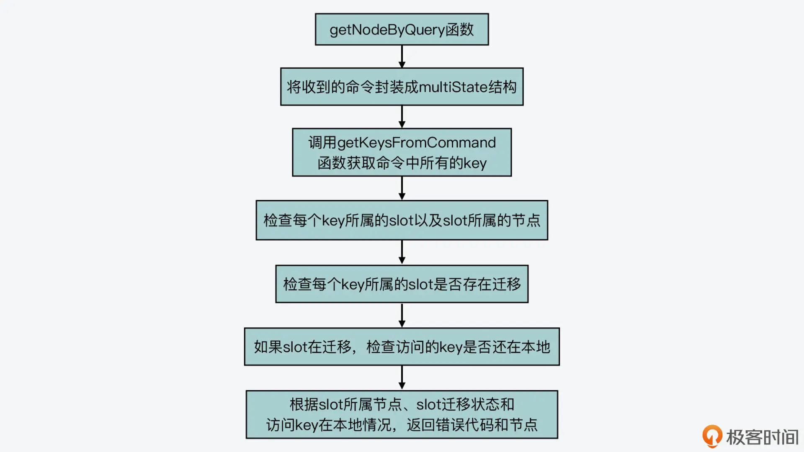
那么，有了 key 所属节点的查询结果后，processCommand 函数接下来又会如何进行请求重定向呢?
实际上，这一步是通过执行请求重定向的函数 clusterRedirectClient 来完成的。
请求重定向函数 clusterRedirectClient 的执行
当 getNodeByQuery 函数查到的集群节点为空或者不是当前节点时，clusterRedirectClient 函数就会被调用。
而 clusterRedirectClient 函数的逻辑比较简单，它就是根据 getNodeByQuery 函数返回的 error_code 的不同值，执行相应的代码分支，主要是把 key 所属 slot 对应集群节点的情况返回给客户端，从而让客户端根据返回的信息作出相应处理。比如：
- 当 error_code 被设置成 CLUSTER_REDIR_CROSS_SLOT 时，clusterRedirectClient 函数就返回给客户端“key 不在同一个 slot 中”的报错信息；
- 当 error_code 被设置成 CLUSTER_REDIR_MOVED 时，clusterRedirectClient 函数会返回 MOVED 命令，并把 key 所属的 slot、slot 实际所属的节点 IP 和端口号，返回给客户端
- 当 error_code 被设置成 CLUSTER_REDIR_ASK 时，clusterRedirectClient 函数会返回 ASK 命令，并把 key 所属的 slot、slot 正在迁往的目标节点 IP 和端口号，返回给客户端。
下面的代码展示了刚才介绍的 clusterRedirectClient 函数对三种 error_code 的处理，你可以看下。
void clusterRedirectClient(client *c, clusterNode *n, int hashslot, int error_code) {
if (error_code == CLUSTER_REDIR_CROSS_SLOT) {
addReplySds(c,sdsnew("-CROSSSLOT Keys in request don't hash to the same slot\r\n"));
}
…
else if (error_code == CLUSTER_REDIR_MOVED || error_code == CLUSTER_REDIR_ASK)
{
addReplySds(c,sdscatprintf(sdsempty(),
"-%s %d %s:%d\r\n",
(error_code == CLUSTER_REDIR_ASK) ? "ASK" : "MOVED",
hashslot,n->ip,n->port));
}
…
}
这样，集群节点处理收到的命令的过程就结束了。
最后，我还想提醒你注意一点，就是 Redis Cluster 的客户端和针对单个 Redis server 的客户端，在实现上是有差别的。Redis Cluster 客户端需要能处理节点返回的报错信息，比如说，如果集群节点返回 MOVED 命令，客户端就需要根据这个命令，以及其中包含的实际节点 IP 和端口号，来访问实际有数据的节点。
小结
今天这节课，我给你介绍了集群节点对客户端命令的处理过程。和单个 Redis server 处理命令的过程相似，集群节点也会经历命令读取、解析、执行和返回结果四个阶段，并且集群节点也使用了和单 Redis server 相同的入口处理函数。
不过你要知道的是，Redis Cluster 会因为负载均衡或节点故障等原因而执行数据迁移，而这就会导致客户端访问的 key 并不在接收到命令的集群节点上。因此，集群节点在命令执行函数 processCommand 中，针对集群模式，就增加了额外的处理逻辑。这主要是包括调用 getNodeByQuery 函数查询访问的 key 实际所属的节点，以及根据查询结果调用 clusterRedirectClient 函数执行请求重定向。
事实上，对于分布式集群来说，Redis Cluster 设计实现的请求重定向机制是一个不错的参考示例。其中，MOVED 和 ASK 两种重定向情况，就充分考虑了数据正在迁移的场景，这种设计值得我们学习。而且，getNodeByQuery 函数在查询 key 所属的 slot 和节点时，也充分考虑了 Redis 的事务操作，在对命令访问 key 进行查询时，巧妙地使用了同一个数据结构 multiState，来封装事务涉及的多条命令和常规的单条命令，增加了代码的复用程度，这一点也非常值得学习。
当然，在这节课里我们也多次提到了数据迁移，那么在下节课，我就会给你介绍 Redis Cluster 中数据迁移的具体实现。
每课一问
processCommand 函数在调用完 getNodeByQuery 函数后，实际调用 clusterRedirectClient 函数进行请求重定向前，会根据当前命令是否是 EXEC，分别调用 discardTransaction 和 flagTransaction 两个函数。那么，你能通过阅读源码，知道这里调用 discardTransaction 和 flagTransaction 的目的是什么吗?
int processCommand(client *c) {
…
clusterNode *n = getNodeByQuery(c,c->cmd,c->argv,c->argc,
&hashslot,&error_code);
if (n == NULL || n != server.cluster->myself) {
if (c->cmd->proc == execCommand) {
discardTransaction(c);
} else {
flagTransaction (c);
}
clusterRedirectClient(c,n,hashslot,error_code);
return C_OK;
}
…
}
28 Redis Cluster数据迁移会阻塞吗？
上节课，我给你介绍了 Redis Cluster 节点处理命令的过程。现在你知道，在这个过程中，节点会调用 getNodeByQuery 函数检查访问的 key 所属的节点，如果收到命令的节点并不是 key 所属的节点，那么当前节点就会生成 CLUSTER_REDIR_MOVED 或者 CLUSTER_REDIR_ASK 的报错信息，并给客户端返回 MOVED 或 ASK 命令。
其实，这两个报错信息就对应了 Redis Cluster 的数据迁移。数据迁移是分布式存储集群经常会遇到的一个问题，当集群节点承担的负载压力不均衡时，或者有新节点加入或是已有节点下线时，那么，数据就需要在不同的节点间进行迁移。所以，如何设计和实现数据迁移也是在集群开发过程中，我们需要考虑的地方。
那么今天这节课，我就来介绍下 Redis Cluster 是如何实现数据迁移的。从源码层面掌握这部分内容，可以帮助你了解数据迁移对集群节点正常处理命令的影响，这样你就可以选择合适时机进行迁移。而且，掌握 Redis 的数据迁移实现，也能为你自己开发集群提供一个不错的参考示例。
好了，接下来，我们就先来看下和数据迁移相关的主要数据结构。这些数据结构比较重要，它们记录了数据迁移的状态信息。
记录数据迁移的数据结构
首先你要知道，Redis Cluster 是先把键值对映射到哈希槽（slots）中，然后通过给不同集群节点分配 slots 这样的方法，来完成数据在集群节点间的分配的。关于这部分的知识，你也可以去看看第一季的【第 9 讲】。
那么，在源码实现层面，Redis Cluster 的每个集群节点都对应了一个 clusterNode 的结构体（在cluster.h文件中）。这个结构体中包含了一个 char 类型的数组，用来记录当前节点在负责哪些 slots。
这个数组的定义如下所示，它的长度是宏定义 CLUSTER_SLOTS 除以 8，而 CLUSTER_SLOTS 宏定义的值是 16384，表示的是 Redis Cluster 的 slots 总个数。这个值除以 8 之后，就意味着数组每个元素的每一位表示 1 个 slot。如果数组元素某一位的值是 1，那么就表明当前节点负责这一位对应的 slot。
typedef struct clusterNode {
…
unsigned char slots[CLUSTER_SLOTS/8]
…
}
但是，如果只是用 clusterNodes 中的 slots 数组，并不能记录数据迁入迁出的情况，所以，Redis Cluster 针对整个集群设计了 clusterState 结构体（在 cluster.h 文件中）。这个结构体中包含了三个 clusterNode 类型的数组和一个 rax 类型的字典树。这三个数组的大小，都是集群 slots 的总个数 16384，如下所示：
typedef struct clusterState {
...
clusterNode *migrating_slots_to[CLUSTER_SLOTS];
clusterNode *importing_slots_from[CLUSTER_SLOTS];
clusterNode *slots[CLUSTER_SLOTS];
rax *slots_to_keys;
...
}
这几个结构主要是被用来记录数据迁入迁出的情况，它们的含义如下。
- migrating_slots_to 数组：表示当前节点负责的 slot 正在迁往哪个节点。比如，migrating_slots_to[K] = node1，这就表示当前节点负责的 slot K，正在迁往 node1。
- importing_slots_from 数组：表示当前节点正在从哪个节点迁入某个 slot。比如，importing_slots_from[L] = node3，这就表示当前节点正从 node3 迁入 slot L。
- slots 数组：表示 16384 个 slot 分别是由哪个节点负责的。比如，slots[M] = node2，这就表示 slot M 是由 node2 负责的。
- slots_to_keys 字典树：用来记录 slot 和 key 的对应关系，可以通过它快速找到 slot 上有哪些 keys。
好了，知道了用来记录数据迁入迁出情况的数据结构之后，我们就来学习数据迁移的具体过程。
数据迁移过程的设计与实现
Redis Cluster 迁移数据的整个过程可以分成五个大步骤，分别是：
- 标记迁入、迁出节点；
- 获取迁出的 keys；
- 源节点实际迁移数据；
- 目的节点处理迁移数据；
- 标记迁移结果。
下面，我们就分别来看下这五个步骤的源码实现。
标记迁入、迁出节点
在 Redis Cluster 中迁移数据时，我们需要先使用 CLUSTER SETSLOT 命令，在待迁入数据的目的节点上标记待迁出数据的源节点，使用的命令如下所示：
CLUSTER SETSLOT <slot> IMPORTING <node> //<slot>表示要迁入的哈希槽，<node>表示当前负责<slot>的节点
然后，我们需要使用 CLUSTER SETSLOT 命令，在待迁出数据的源节点上标记将要迁入数据的目的节点，使用的命令如下所示：
CLUSTER SETSLOT <slot> MIGRATING <node> //<slot>表示要迁出的哈希槽，<node>表示<slot>要迁往的目的节点
为了便于你理解，我来举个例子。假设 slot 3 在节点 A 上，现在我们要把 slot 3 从节点 A 上迁移到节点 B 上，那么，此时节点 A 就是待迁出数据的源节点，而节点 B 就是待迁入数据的目的节点。我们要先在节点 B 上执行如下命令，用来标记源节点。
CLUSTER SETSLOT slot3 IMPORTING nodeA
然后，我们在节点 A 上执行如下命令，用来标记目的节点。
CLUSTER SETSLOT slot3 MIGRATING nodeB
对于 CLUSTER 命令来说，它的处理函数是 clusterCommand（在cluster.c文件中）。在这个函数中，它会根据 CLUSTER 命令携带的不同选项，执行不同的代码分支。因此，对于刚才介绍的标记 slot 迁入、迁出的 SETSLOT 选项，它们在 clusterCommand 函数中对应的代码分支如下所示：
void clusterCommand(client *c) {
…
//处理SETSLOT选项
else if (!strcasecmp(c->argv[1]->ptr,"setslot") && c->argc >= 4) {
…
//处理migrating标记
if (!strcasecmp(c->argv[3]->ptr,"migrating") && c->argc == 5) {
...
}//处理importing标记
else if (!strcasecmp(c->argv[3]->ptr,"importing") && c->argc == 5) {
…
}
}
这里，我们来看一下处理 migrating 和 importing 标记的具体逻辑。其实，clusterCommand 函数对这两个标记的处理逻辑基本都是分成三步。
第一步，对于数据迁出来说，该函数会判断迁出的 slot 是否在当前节点；而对于数据迁入来说，该函数会判断迁入的 slot 是否在当前节点。如果迁出的 slot 不在当前节点，或者迁入的 slot 已在当前节点，那么 clusterCommand 函数就返回报错信息了。这是因为，在这两种情况下节点无法执行 slot 迁移。
第二步，如果迁出的 slot 在当前节点，或者迁入的 slot 不在当前节点，那么，clusterCommand 函数就会调用 clusterLookupNode 函数（在 cluster.c 文件中），来查询 CLUSTER SETSLOT 命令中包含的。这主要是依赖于 clusterLookupNode 函数根据输入的节点 ID，在全局变量 server 的 cluster->nodes 数组中，查找并返回对应节点。
第三步，clusterCommand 函数会把 migrating_slots_to 数组中迁出 slot，或者 importing_slots_from 数组中迁入 slot 对应的节点，设置为 clusterLookupNode 函数查找的结果。
我也画了两张图，分别展示了 clusterCommand 函数处理 CLUSTER SETSLOT 命令的 migrating 和 importing 标记的基本逻辑，你可以再看下。

处理migrating标记

处理importing标记
这样一来，当在 Redis Cluster 中标记完迁入和迁出的节点后，我们就可以使用 CLUSTER GETKEYSINSLOT 命令，来获取要迁出的 keys 了。下面我们来看下这步操作的实现。
获取待迁出的 keys
我们用来获取待迁出的 keys 的具体命令如下所示，其中表示要迁移的 slot，而表示要迁移的 key 的数量。
CLUSTER GETKEYSINSLOT <slot> <count>
因为这里我们用的还是 CLUSTER 命令，所以，获取待迁出 keys 的命令处理也还是在 clusterCommand 函数中，对应了 GETKEYSINSLOT 选项的代码分支，如下所示：
void clusterCommand(client *c) {
…
//处理GETKEYSINSLOT选项
else if (!strcasecmp(c->argv[1]->ptr,"getkeysinslot") && c->argc == 4) {...}
...
这个代码分支的处理逻辑也比较简单，它主要可以分成三步。
首先，这个代码分支会调用 getLongLongFromObjectOrReply 函数（在object.c文件中），从 CLUSTER GETKEYSINSLOT 命令中获取和参数，这里的参数会被赋值给 maxkeys 变量，如下所示：
//解析获取slot参数
if (getLongLongFromObjectOrReply(c,c->argv[2],&slot,NULL) != C_OK)
return;
//解析获取count参数，赋值给maxkeys
if (getLongLongFromObjectOrReply(c,c->argv[3],&maxkeys,NULL)!= C_OK)
return;
然后，clusterCommand 函数会调用 countKeysInSlot 函数（在db.c文件中），获取待迁移 slot 中实际的 key 的数量。如果刚才从命令中获取的 key 的迁移数量 maxkeys，大于实际的 key 数量，那么 maxkeys 的值会被更新为实际的 key 数量。紧接着，clusterCommand 函数会给这些 key 分配空间。
unsigned int keys_in_slot = countKeysInSlot(slot); //获取迁移slot中实际的key数量
if (maxkeys > keys_in_slot) maxkeys = keys_in_slot; //如果实际的key数量小于maxkeys，将maxkeys更新为时间的key数量
keys = zmalloc(sizeof(robj*)*maxkeys); //给key分配空间
最后，这个代码分支会调用 getKeysInSlot 函数（在 db.c 文件中），从迁移 slot 中获取实际的 key，并将这些 key 返回给客户端，如下所示：
numkeys = getKeysInSlot(slot, keys, maxkeys); //获取实际的key
addReplyMultiBulkLen(c,numkeys); //将key返回给客户端
for (j = 0; j < numkeys; j++) {
addReplyBulk(c,keys[j]);
decrRefCount(keys[j]);
}
好了，到这里，客户端就通过 CLUSTER GETKEYSINSLOT 命令，获得了一定数量的要迁移的 key。接下来，我们就要开始执行实际的迁移操作了，我们来具体看下。
源节点实际迁移数据
在实际迁移数据时，我们需要在待迁出数据的源节点上执行 MIGRATE 命令。其实，MIGRATE 命令既支持迁移单个 key，也支持一次迁移多个 key，它们的基本处理流程是相同的，都是在 migrateCommand 函数中实现的。
这里，我以一次迁移多个 key 的 MIGRATE 命令为例，这个命令的选项中包含了目的节点的 IP、端口号、数据库编号，以及要迁移的多个 key、迁移超时时间，它的格式如下所示：
MIGRATE host port "" dbid timeout [COPY | REPLACE] KEYS key1 key2 ... keyN
从这个命令中，你也可以看到，它还包括了 COPY 或 REPLACE 选项，这两个选项的含义如下。
- COPY：如果目的节点已经存在待迁移的 key，则报错；如果目的节点不存在待迁移的 key，那么就正常迁移，并在迁移后，删除源节点上的 key。
- REPLACE：无论目的节点是否存在待迁移的 key，都会正常执行迁移，并覆盖已经存在的 key。
好，了解了 MIGRATE 命令的含义后，我们就来看下 migrateCommand 函数的基本处理流程，这个函数的执行过程主要可以分成四步。
第一步，命令参数检查
migrateCommand 函数首先会检查 MIGRATE 命令携带的参数，比如是否有 COPY 或 REPLACE 标记、dbid 和 timeout 是否能正常读取等。在这一步，migrateCommand 函数如果检查到 timeout 值小于等于 0 了，它就会把 timeout 值设置为 1000 毫秒，用于迁移过程中的超时判断。
第二步，读取要迁移的 key 和 value
检查完命令参数后，migrateCommand 函数会分配两个数组 ov 和 kv，它们的初始大小等于 MIGRATE 命令中要迁移的 key 的数量。然后，migrateCommand 函数会调用 lookupKeyRead 函数（在 db.c 文件中），逐一检查要迁移的 key 是否存在。这是因为有的 key 在迁移时可能正好过期了，所以就不用迁移这些 key 了。这一步的最后，migrateCommand 函数会根据实际存在的 key 数量，来设置要迁移的 key 数量。
下面的代码展示了这一步的基本逻辑，你可以看下。
ov = zrealloc(ov,sizeof(robj*)*num_keys); //分配ov数组，保存要迁移的value
kv = zrealloc(kv,sizeof(robj*)*num_keys); //分配kv数组，保存要迁移的key
...
for (j = 0; j < num_keys; j++) {
//逐一检查要迁移的key是否存在
if ((ov[oi] = lookupKeyRead(c->db,c->argv[first_key+j])) != NULL) {
kv[oi] = c->argv[first_key+j]; //只记录存在的key
oi++;
}
}
num_keys = oi; //要迁移的key数量等于实际存在的key数量
第三步，填充迁移用的命令、key 和 value
接下来，migrateCommand 函数就开始为迁移数据做准备了。这一步骤中的操作主要包括：
- 调用 migrateGetSocket 函数（在 cluster.c 文件中），和目的节点建立连接；
- 调用 rioInitWithBuffer 函数初始化一块缓冲区，然后调用 rioWriteBulkString、rioWriteBulkLongLong 等函数（在rio.c文件中），往这个缓冲区中填充要发送给目的节点的命令、key 和 value。
下面的代码也展示了在这一步中主要填充的命令、key 和 value，你可以看下。
rioInitWithBuffer(&cmd,sdsempty()); //初始化buffer
... //往buffer中填充SELECT命令
//针对每一个要迁移的key，往buffer中填充命令、key和value
for (j = 0; j < num_keys; j++) {
//在集群模式下，填充RESTORE-ASKING命令，用来发给目的节点
if (server.cluster_enabled)
serverAssertWithInfo(c,NULL, rioWriteBulkString(&cmd,"RESTORE-ASKING",14));
...
//填充key
serverAssertWithInfo(c,NULL,rioWriteBulkString(&cmd,kv[j]->ptr,
sdslen(kv[j]->ptr)));
//填充TTL
serverAssertWithInfo(c,NULL,rioWriteBulkLongLong(&cmd,ttl));
//调用createDumpPayload函数序列化value
createDumpPayload(&payload,ov[j],kv[j]);
//填充value
serverAssertWithInfo(c,NULL, rioWriteBulkString(&cmd,payload.io.buffer.ptr,
...
}
这里，你需要注意的是，migrateCommand 函数会调用 createDumpPayload 函数（在 cluster.c 文件中）将迁移 key 的 value 序列化，以便于传输。在序列化的结果中，createDumpPayload 函数会增加 RDB 版本号和 CRC 校验和。等目的节点收到迁移数据后，也会检查这两部分内容，我稍后还会给你介绍。
当在缓冲区中填充完要发送给目的节点的命令、key 和 value 后，migrateCommand 函数就开始发送这个缓冲区中的内容了。
第四步，发送迁移用的命令和数据，并读取返回结果
migrateCommand 函数会调用 syncWrite 函数（在syncio.c文件中），把缓冲区中的内容按照 64KB 的粒度发送给目的节点，如下所示：
while ((towrite = sdslen(buf)-pos) > 0) {
towrite = (towrite > (64*1024) ? (64*1024) : towrite);
nwritten = syncWrite(cs->fd,buf+pos,towrite,timeout);
...
pos += nwritten;
}
然后，针对发送给目的节点的每个键值对，migrateCommand 函数会调用 syncReadLine 函数（在 syncio.c 文件中），读取目的节点的返回结果。如果返回结果中有报错信息，那么它就会进行相应的处理。这部分的逻辑并不复杂，但是针对各种出错情况的处理会比较多，你可以进一步阅读源码来进行学习。
//针对迁移的每个键值对，调用syncReadLine函数读取目的节点返回结果
for (j = 0; j < num_keys; j++) {
if (syncReadLine(cs->fd, buf2, sizeof(buf2), timeout) <= 0) { ...}
... //处理目的节点返回的结果
}
好了，到这里，你就了解了 MIGRATE 命令的执行基本过程，我把它执行过程的四大步骤也画在了下面的这张图中，你可以再回顾下。
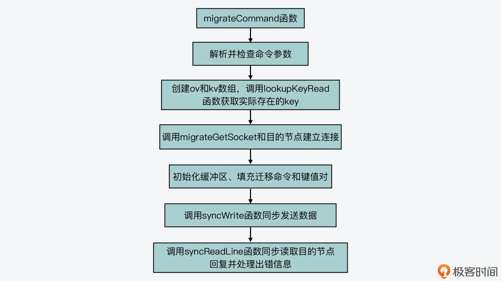
其实在迁移数据的过程中，目的节点对迁移命令的处理也是迁移过程的一个重要环节。所以，下面我们就来看下，目的节点在收到 RESTORE-ASKING 命令后的处理过程。
目的节点处理迁移数据
目的节点在收到源节点发送的 RESTORE-ASKING 命令后，这个命令的实际处理函数是 restoreCommand（在 cluster.c 文件中）。这个函数的处理逻辑并不复杂，主要可以分成三步。
首先，它会解析收到的命令参数，包括是否覆盖数据的标记 replace、key 过期时间标记 ttl、key 的 LRU 标记 idletime、key 的 LFU 标记 freq。接着，它就会根据这些标记执行一系列检查。
这其中就包括，如果检测到没有 replace 标记的话，它会调用 lookupKeyWrite 函数（在 db.c 文件中），检查目的节点数据库中是否有迁移的 key，如果已经存在待迁移 key 的话，它就会返回报错信息，如下所示。此外，它还会检查 TTL 值是否小于 0。
//如果没有replace标记，并且数据库中存在待迁移的key
if (!replace && lookupKeyWrite(c->db,c->argv[1]) != NULL) {
addReply(c,shared.busykeyerr); //返回报错信息
return;
}
然后，restoreCommand 函数会检查迁移 key 的 value 的序列化结果，就像我刚才介绍的，migrateCommand 函数在实际迁移 value 时，会把 value 序列化后再传输。而序列化后的结果中包含了 RDB 版本和 CRC 校验和，restoreCommand 函数会调用 verifyDumpPayload 函数（在 cluster.c 文件中），检测 RDB 版本和 CRC 校验和。如果这两部分内容不正确，它就会返回报错信息。
//检查value序列化结果中的RDB版本和CRC校验和
if (verifyDumpPayload(c->argv[3]->ptr,sdslen(c->argv[3]->ptr)) == C_ERR)
{
addReplyError(c,"DUMP payload version or checksum are wrong");
return;
}
紧接着，restoreCommand 函数会调用 rdbLoadObjectType 函数和 rdbLoadObject 函数（在rdb.c文件中），从序列化结果中解析出实际的 value 类型和 value 实际值。
最后，restoreCommand 函数会调用 dbAdd 函数，把解析得到 key 和 value 写入目的节点的数据库中。这里，你要注意的是，如果迁移命令中带有 REPLACE 标记，那么，restoreCommand 函数会先调用 dbDelete 函数，删除在目的节点数据库中已经存在的迁移 key，然后再调用 dbAdd 函数写入迁移 key。此外，restoreCommand 函数还会设置迁移 key 的过期时间，以及 LRU 或 LFU 信息，并最终返回成功信息。
下面的代码展示了 restoreCommand 函数最后一步的处理逻辑，你可以看下。
//如果有REPLACE标记，在目的节点数据库中删除已存在的迁移key
if (replace) dbDelete(c->db,c->argv[1]);
//将迁移key及value写入目的节点数据库
dbAdd(c->db,c->argv[1],obj);
if (ttl) { //设置TTL时间
if (!absttl) ttl+=mstime();
setExpire(c,c->db,c->argv[1],ttl);
}
objectSetLRUOrLFU(obj,lfu_freq,lru_idle,lru_clock); //设置LRU或LFU信息
...
addReply(c,shared.ok); //返回成功信息
我在这里也画了一张图，展示了目的节点处理迁移数据的基本过程，你可以再整体看下。

好了，到这里，你就了解了源节点发送迁移数据，以及目的节点接收迁移数据的基本过程实现了。最后，当迁移 slot 中的 key 全部完成迁移后，我们还需要执行 CLUSTER SETSLOT 命令，来标记迁移的最终结果，下面我们来看下。
标记迁移结果
在数据迁移完成后，我们需要先在目的节点上执行 CLUSTER SETSLOT 命令，向目的节点标记迁移 slot 的最终所属节点，如下所示。然后，我们需要在源节点上执行相同的命令，用来向源节点标记迁移 slot 的最终所属节点。
CLUSTER SETSLOT <slot> NODE <node>
因为这个命令还是 CLUSTER 命令，所以它的处理仍然在 clusterCommand 函数中实现的。这个命令的选项是 SETSLOT，并带有 NODE 标记，所以它对应的代码分支如下所示：
void clusterCommand(client *c) {
...
//处理SETSLOT选项
else if (!strcasecmp(c->argv[1]->ptr,"setslot") && c->argc >= 4) {
...
//处理NODE标记
else if (!strcasecmp(c->argv[3]->ptr,"node") && c->argc == 5) { ...}
...
}
...
}
在刚才介绍的处理 NODE 标记的代码分支中，主要的工作是清除节点上 migrating_slots_to 数组和 importing_slots_from 数组中的标记。
对于 migrating_slots_to 数组来说，在源节点上，这个数组中迁移 slot 所对应的元素，记录了目的节点。那么，在源节点上执行迁移结果标记命令时，处理 NODE 标记的代码分支，就会调用 countKeysInSlot 函数（在 db.c 文件中）检查迁移 slot 中是否还有 key。如果没有 key 了，那么 migrating_slots_to 数组中迁移 slot 所对应的元素会被置为 NULL，也就是取消了源节点上的迁出标记。
if (countKeysInSlot(slot) == 0 && server.cluster->migrating_slots_to[slot]) //如果有迁出标记， 并且迁移slot中已经没有key
server.cluster->migrating_slots_to[slot] = NULL; //将迁出标记置为NULL
而对于 importing_slots_from 数组来说，在目的节点上，这个数组中迁移 slot 所对应的元素记录了源节点。那么，在目的节点上执行迁移结果标记命令时，处理 NODE 标记的代码分支会检查命令参数中的是否就是目的节点自身。如果是的话，importing_slots_from 数组中迁移 slot 所对应的元素会被置为 NULL，这就是取消了目的节点上的迁入标记。
//如果命令参数中的节点是当前节点，并且有迁入标记
if (n == myself && server.cluster->importing_slots_from[slot]) {
...
server.cluster->importing_slots_from[slot] = NULL; //取消迁入标记
}
最后，处理 NODE 标记的代码分支，会调用 clusterDelSlot 和 clusterAddSlot 函数（在 cluster.c 文件中），分别更新 slot 迁移前和迁移后所属节点的 slots 数组，你可以去进一步阅读这两个函数的代码进行了解。
到这里，Redis Cluster 中数据迁移的整个过程也就完成了。
小结
在今天的课程中，我给你介绍了 Redis Cluster 数据迁移过程的代码实现，你要掌握以下两个要点。
首先是记录集群状态的数据结构 clusterState。这个结构中是使用了 migrating_slots_to 和 importing_slots_from 两个数组，来记录数据迁出迁入情况，使用了 slots 数组记录每个 slot 所属的节点，以及使用 slots_to_keys 字典树记录 slots 中的 keys。你需要掌握这几个数据结构的含义，因为在你阅读集群源码时，这几个结构是会频繁使用到的。
然后是数据迁移过程的五大步骤。分别是：
- 标记迁入、迁出节点；
- 获取待迁出的 keys；
- 源节点实际迁移数据；
- 目的节点处理迁移数据；
- 标记迁移结果。
这五个步骤对应了 CLUSTER 命令的不同选项、MIGRATE 命令以及 RESTORE 命令，所以，它们的实现逻辑就主要对应在 clusterCommand、migrateCommand 和 restoreCommand 函数中。如果你想了解数据迁移的更多细节，你可以从这几个函数入手进一步学习。
最后，我也想再提醒你两个关键点。
一是，Redis Cluster 在执行数据迁移时，会调用 syncWrite 和 syncReadLine 函数，向目的节点同步发送迁移数据，以及同步读取回复结果。而这个同步写和同步读的过程，会阻塞源节点正常处理请求。所以，你在迁移数据时要控制迁移的 key 数量和 key 大小，避免一次性迁移过多的 key 或是过大的 key，而导致 Redis 阻塞。
二是，我们在实际应用中，会用到 redis-cli 工具，或者是 Ruby 开发的 Redis Cluster 集群运维工具 redis-trib，来执行数据迁移。这些工具最终也会调用这节课中，我们介绍的命令来完成数据的实际迁移。所以，学习今天课程的内容，对于你在实际应用中，从代码层面排查 redis-cli、redis-trib 这些工具的问题也是有所帮助的。
每课一问
在维护 Redis Cluster 集群状态的数据结构 clusterState 中，有一个字典树 slots_to_keys。当在数据库中插入 key 时它会被更新，你能在 Redis 源码文件 db.c 中，找到更新 slots_to_keys 字典树的相关函数调用吗？
29 如何正确实现循环缓冲区？
从今天开始，我们就进入了这门课程的最后一个模块，也就是“编程技巧模块”。Redis 作为一个广泛使用的系统，除了它自身的功能实现和性能优化值得我们学习以外，它源码中的编程技巧也同样值得我们去了解和掌握。
在这个模块中，我会带你学习 Redis 在循环缓冲区、监控、功能扩展模块等方面的设计与实现，这些功能的开发对于后端系统软件来说都是非常重要的。
那么，今天这节课，我先带你来学习 Redis 中循环缓冲区的实现。
我们在开发后端数据系统时，都会面临数据同步的问题，在应对这个问题时，缓冲区的设计与实现是一定要考虑的。而循环缓冲区是缓冲区开发的一个常用技巧，所以，学习这节课的内容，可以让我们掌握如何实现循环缓冲区，尤其是实现难点的解决方法，从而可以给我们自己开发数据同步提供一个参考实现。
好了，下面我们先来看下循环缓冲区是如何工作的，有了这部分知识后，我们就能更好地理解和掌握 Redis 的代码实现了。
循环缓冲区如何工作？
在后端数据系统中，为了保证数据的可靠性，我们通常会采用主从集群的方式，在主节点和从节点之间同步数据。一般来说，主节点会先和从节点进行一次全量同步，把某个时刻的所有数据传输给从节点。
然后，主节点会持续将收到的命令发送给从节点。在这个发送的过程中，如果从节点和主节点网络断连了，主节点需要将发送给从节点的命令缓存起来。这样一来，当从节点恢复和主节点的网络连接后，主节点可以把缓存着的命令再发给从节点。在这种场景下，我们就需要用到缓冲区来暂存主节点收到的命令。
那么，在后端系统中设计缓冲区时，直接面临的一个问题就是，缓冲区空间不够用时该怎么办？
我们比较容易想到的实现方案是，当缓冲区不够用时，系统再动态分配缓冲区。但是动态分配缓冲区会有一定的开销，而且如果一旦空间不够用了，就动态分配缓冲区，这也会造成缓冲区空间持续增长，占用过多内存资源。
而实际上，缓冲区中的数据在发送给从节点后，其实可以删除掉，这样就有新空间可以用了。这也就是说，缓冲区空间是可以复用的，如下图所示：

那么，循环缓冲区的实现就是使用了复用缓冲区的设计思想，它的空间可以循环写入。从工作原理来说，它有两个特点：
- 循环缓冲区有一个写指针，表示主节点在缓冲区中的当前写入位置。如果写指针已经指向了缓冲区末尾，那么此时主节点再写入数据，写指针就会重新指向缓冲区头部，从头部开始再次写入数据，这样就可以复用缓冲区空间了。
- 循环缓冲区有一个或多个读指针，表示不同从节点在缓冲区中的当前读取位置。表示不同从节点在缓冲区中的当前读取位置。当读指针指向缓冲区末尾时，从节点也会把读指针重新指向缓冲区头部，从缓冲区头部开始继续读取数据。
下图展示了循环缓冲区的写指针工作机制，你可以看下，读指针的工作机制和这个也是类似的。

好了，了解了循环缓冲区的工作原理后，我们就来看下 Redis 中是如何实现循环缓冲区的。
Redis 中如何实现循环缓冲区？
在 Redis 的主从复制代码实现中，循环缓冲区就是被用来暂存主节点收到的命令的。
不过，在了解它的具体实现前，我们要知道，在 Redis 主从复制中，主节点会累积记录它收到的要进行复制的命令总长度，这个总长度我们称之为全局范围内的复制偏移量（简称全局复制偏移量）。
在源码中，它对应了全局变量 server 的 master_repl_offset 成员变量。而从节点从主节点读取命令时，也会记录它读到的累积命令的位置，这个位置称之为全局范围内的读取偏移量（简称全局读取位置）。
为了便于你理解，我来给你举个例子。假设主节点收到三条命令，每条命令长度都是 16 字节，那么此时，全局复制偏移量是 48。假设一个从节点从主节点上读了一条命令，此时，该从节点的全局读取位置就是 16。
因为全局复制偏移量和全局读取位置在接下来介绍的循环缓冲区实现中会反复用到，所以你要了解它们的含义。
好了，下面我们来看循环缓冲区本身的数据结构。
循环缓冲区的数据结构和初始化
在 Redis 全局变量 server 对应的结构体 redisServer 中，包含了循环缓冲区的数据结构，如下所示：
struct redisServer {
…
char *repl_backlog; //基于字符数组的循环缓冲区
long long repl_backlog_size; //循环缓冲区总长度
long long repl_backlog_histlen; //循环缓冲区中当前累积的数据的长度
long long repl_backlog_idx; //循环缓冲区的写指针位置
long long repl_backlog_off; //循环缓冲区最早保存的数据的首字节在全局范围内的偏移
…
}
从代码中你可以看到，循环缓冲区本身被设计为了一个字符类型的数组 repl_backlog，然后 Redis 设计了以下的变量来描述循环缓冲区的状态，包括：
- repl_backlog_size：这个变量值记录的是循环缓冲区本身的总长度。这个值也对应了 redis.conf 配置文件中的 repl-backlog-size 配置项。
- repl_backlog_histlen：这个变量值记录的是循环缓冲区中目前累积的数据的长度，这个值不会超过缓冲区的总长度。
- repl_backlog_idx：这个变量值记录的是循环缓冲区接下来写数据时应该写入的位置，而它就对应了刚才向你介绍的循环缓冲区的写指针。
- repl_backlog_off：这个变量值记录的是循环缓冲区中最早保存的数据的首字节，在全局范围内的偏移值。这里你需要注意的是，因为循环缓冲区会被重复使用，所以一旦缓冲区写满后，又开始从头写数据时，缓冲区中的旧数据会被覆盖。因此，这个值就记录了仍然保存在缓冲区中，又是最早写入的数据的首字节，在全局范围内的偏移量。
这几个变量在循环缓冲区的读写过程中会被反复使用，所以你需要掌握它们的含义，这样可以帮助你更好地理解循环缓冲区的实现。
接下来，我们来看下循环缓冲区的创建和读写过程。因为循环缓冲区是在主从节点复制过程中使用的，所以，它对应的相关操作函数也是在replication.c文件中实现的。
我们先来看下，循环缓冲区的创建函数 createReplicationBacklog，这个函数的操作逻辑比较简单，就是从配置文件中读取循环缓冲区配置项 repl-backlog-size 的大小，然后根据这个配置项值给循环缓冲区分配空间。
紧接着，这个函数会把 repl_backlog_histlen 初始化为 0，表示当前没有数据写入。同时，把 repl_backlog_idx 初始化为 0，表示当前可以从缓冲区头开始写入数据。此外，createReplicationBacklog 函数还会把 repl_backlog_off，设置为 master_repl_offset 加 1 的值。
这部分的初始化代码如下所示：
void createReplicationBacklog(void) {
serverAssert(server.repl_backlog == NULL);
server.repl_backlog = zmalloc(server.repl_backlog_size);
server.repl_backlog_histlen = 0;
server.repl_backlog_idx = 0;
server.repl_backlog_off = server.master_repl_offset+1;
}
这里你也需要注意的是，Redis 是在 syncCommand 函数中，调用 createReplicationBacklog 函数来创建循环缓冲区的，这部分代码如下所示：
void syncCommand(client *c) {
…
if (listLength(server.slaves) == 1 && server.repl_backlog == NULL) {
…
createReplicationBacklog();
}
…}
从代码中，你可以看到，Redis 创建循环缓冲区的条件是当前还没有循环缓冲区，以及当前的从节点只有 1 个。这也就是说，当一个主节点有多个从节点时，这些从节点其实会共享使用一个循环缓冲区，而这样设计的目的，主要是避免给每个从节点开辟一块缓冲区，造成内存资源浪费。
好了，了解了循环缓冲区的数据结构和初始化操作后，我们再来分别看下它的读写操作。
循环缓冲区的写操作
我们先来了解循环缓冲区的写操作，这是由 feedReplicationBacklog 函数实现的。这个函数的原型如下所示：
void feedReplicationBacklog(void *ptr, size_t len)
feedReplicationBacklog 函数的参数是一个指针 ptr，它指向了要写入缓冲区的数据，以及一个整数 len，它表示要写的数据长度。
循环缓冲区的写操作过程可以分成三个步骤。
第一步，feedReplicationBacklog 函数会更新全局变量 server 的 master_repl_offset 值，在当前值的基础上加上要写入的数据长度 len，如下所示：
server.master_repl_offset += len;
第二步，feedReplicationBacklog 函数会根据参数 len 执行一个循环流程，这个流程会循环执行，直到把要写入的数据都写进循环缓冲区。而这个循环流程执行的操作又可以分成三小步。
- 首先，计算本轮循环能写入的数据长度。
feedReplicationBacklog 函数会计算循环缓冲区当前的剩余空间长度 thislen。如果剩余空间长度大于要写入数据的长度，那么，它会把 thislen 设置为实际要写入的数据长度。这部分代码如下所示：
while(len) {
size_t thislen = server.repl_backlog_size - server.repl_backlog_idx;
if (thislen > len) thislen = len;
…
}
- 其次，实际写入数据。
根据第一步计算得到的 thislen 变量值，调用 memcpy 函数，将要写入的数据写到循环缓冲区中，写入的位置是 repl_backlog_idx 指向的位置，而写入的长度就是 thislen。这步操作的代码如下所示：
memcpy(server.repl_backlog+server.repl_backlog_idx,p,thislen);
结合前两小步的操作，你可以看到，feedReplicationBacklog 函数在写入数据时，如果实际写入长度小于缓冲区剩余长度，那么就按实际写入长度写数据。否则，它就按剩余空间长度写入数据。这也就是说，feedReplicationBacklog 函数每一轮都会尽量多写数据，不过每轮循环最多写入的数据长度也就是缓冲区的总长度。
好了，到这里，循环缓冲区中就写入了一次数据，接下来就是这轮循环中的最后第三小步。
- 最后，更新循环缓冲区等状态信息。
feedReplicationBacklog 函数在每轮循环的最后，会更新循环缓冲区的状态信息，包括
repl_backlog_idx 和 repl_backlog_histlen。
对于 repl_backlog_idx 来说，它会增加刚才写入的数据长度 thislen。不过因为缓冲区总长度 repl_backlog_size 的大小固定，所以，如果 repl_backlog_idx 的值等于 repl_backlog_size 的值了，那么，repl_backlog_idx 的值会被置为 0。这其实就表明，此时循环缓冲区已经写满了。那么，写指针会指向循环缓冲区的头部，从头开始再次写入。这部分的代码逻辑如下所示：
while(len) {
...
server.repl_backlog_idx += thislen;
if (server.repl_backlog_idx == server.repl_backlog_size)
server.repl_backlog_idx = 0;
...
}
而对于 repl_backlog_histlen 来说，在每轮循环的最后，它都会加上刚刚写入的数据长度 thislen。此外，feedReplicationBacklog 函数还会更新待写入数据的剩余长度，以及待写入数据的指针位置。这几步操作的代码如下所示：
len -= thislen; //更新剩余要写入的数据长度
p += thislen; //更新要写入循环缓冲区的数据指针位置
server.repl_backlog_histlen += thislen; //更新repl_backlog_histlen
好了，到这里，feedReplicationBacklog 函数就完成了写入数据的一轮循环，那么，等到待写入数据都写完后，循环流程就会结束。
接下来，就是写操作过程的第三步，也是最后一步了。在这一步中，feedReplicationBacklog 函数会检查 repl_backlog_histlen 的值，是否大于循环缓冲区总长度。如果大于的话，它会将 repl_backlog_histlen 的值设置为循环缓冲区总长度。这也就是说，一旦循环缓冲区被写满后，repl_backlog_histlen 的值就会维持在循环缓冲区的总长度。
紧接着，repl_backlog_off 值会被更新为全局复制偏移量，减去 repl_backlog_histlen 的值，再加 1。
下面的代码展示了第三步的操作，你可以看下。
//如果repl_backlog_histlen的值大于循环缓冲区总长度，那么将该值设置为循环缓冲区总长度
if (server.repl_backlog_histlen > server.repl_backlog_size)
server.repl_backlog_histlen = server.repl_backlog_size;
server.repl_backlog_off = server.master_repl_offset - server.repl_backlog_histlen + 1;
为了便于你理解刚才介绍的循环缓冲区写入过程，这里我也来给你举个例子。下面我会用表格展示数据写入过程中各状态值的变化，并辅以示意图说明。
首先，我们假设循环缓冲区总长度为 8，也就是 repl_backlog_size 值为 8，以及全局复制偏移量 master_repl_offset 初始值为 0（这个值在代码中会随机生成）。按照刚才介绍的循环缓冲区初始化操作，repl_backlog_idx、repl_backlog_histlen 的初始值为 0，而 repl_backlog_off 初始值为 1，如下图所示：
假设第一次写入长度为 5 的数据“abcde”（len=5），此时，全局复制偏移量等于初始值 0 加上写入的数据长度 5，结果为 5，也就是 master_repl_offset 等于 5。
那么，按照 feedReplicationBacklog 函数的执行逻辑，循环缓冲区的各状态值如下表所示：

下图也展示了写入长度为 5 的数据后，循环缓冲区中的内容以及全局范围内两个偏移量的值。
然后，假设第二次写入长度为 16 的数据“fghijklmnopqrstu”（len=16），此时，全局复制偏移量等于上一次的值 5，加上本次写入的数据长度 16，结果为 21，也就是 master_repl_offset 等于 21。
因为缓冲区总长度为 8，目前已经写入 5 个字符，那么要再写入 16 个字符，按照 feedReplicationBacklog 函数的执行逻辑，就需要执行一个循环流程来写入数据，而每轮循环写入缓冲区的数据长度是缓冲区当前的剩余长度，最大为缓冲区总长度。
所以，当要再写入 16 个字符时，feedReplicationBacklog 函数需要执行三轮循环，第一轮循环写入 3 个字符，第二轮循环写入 8 个字符，第三轮循环写入 5 个字符。这个写入过程中，循环缓冲区各状态信息如下面的三张表所示，你可以仔细看下。
第一轮循环写入“fgh”3 个字符，缓冲区各状态信息如下表所示：

此时，循环缓冲区中的内容，以及全局范围内两个偏移量的值，如下图所示：

紧接着第二轮循环写入“ijklmnop”8 个字符，缓冲区各状态信息如下表所示：
此时，循环缓冲区中的内容，以及全局范围内两个偏移量的值，如下图所示：

最后，第三轮循环写入“qrstu”5 个字符，缓冲区各状态信息如下表所示：

三轮循环结束后，因为 repl_backlog_histlen 已经大于缓冲区总长度了，所以它会被更新为缓冲区总长度 8，而 repl_backlog_off 会被更新为 14。此时，循环缓冲区中的内容，以及全局范围内两个偏移量的值，如下图所示：

好了，到这里，你就了解了循环缓冲区的写入过程。接下来，我们再来看下循环缓冲区的读取过程。
循环缓冲区的读操作
在 Redis 中，当从节点和主节点在断连后再次建立连接时，从节点会发送 PSYNC 命令给主节点，而这个命令中就包含了从节点的全局读取偏移量 offset，如下所示：
PSYNC <runid> <offset>
主节点收到 PSYNC 命令后，会在 masterTryPartialResynchronization 函数中处理这个命令，其中，就包含了调用 addReplyReplicationBacklog 函数，读取循环缓冲区中的数据。所以，我们可以从 addReplyReplicationBacklog 函数的实现中，了解循环缓冲区的读操作。
addReplyReplicationBacklog 函数的执行逻辑可以分成三步。
首先，它会把从节点发送的全局读取位置 offset，减去 repl_backlog_off 的值，从而得到从节点读数据时要跳过的数据长度 skip，如下所示：
skip = offset - server.repl_backlog_off;
就像刚才给你介绍的，repl_backlog_off 表示仍在缓冲区中的最早保存的数据的首字节，在全局范围内的偏移量。而从节点的全局读取位置和 repl_backlog_off 不一定一致，所以两者相减，就是从节点要跳过的数据长度。
然后，addReplyReplicationBacklog 函数要计算缓冲区中，最早保存的数据的首字节对应在缓冲区中的位置。这个位置很重要，因为有了它，从节点才能把全局读取位置转换到缓冲区中的读取位置。这个位置的计算代码如下所示：
j = (server.repl_backlog_idx + (server.repl_backlog_size-server.repl_backlog_histlen)) % server.repl_backlog_size;
其实，这里我们可以分成两种情况来理解这段计算代码。
一是，缓冲区还没有写满。此时，repl_backlog_histlen 就等于 repl_backlog_idx，所以代码的计算相当于 repl_backlog_size 对它自己取模，结果为 0。这也就是说，当缓冲区还没写满时，缓冲区中最早保存的数据的首字节，就是在缓冲区头，这也是因为缓冲区没有被覆盖重写。你可以看看下面的图。
二是，缓冲区已经写满过，并且已从头再次写入数据。此时，repl_backlog_histlen 就等于缓冲区总长度 repl_backlog_size。所以，代码的计算相当于 repl_backlog_idx 对 repl_backlog_size 取模，结果就是 repl_backlog_idx。
这也好理解，repl_backlog_idx 指向了下一次写入的数据位置，当缓冲区写满过，这个位置上是有数据的，而这个数据正是缓冲区中最早保存数据的首字节。一旦再次写入时，这个位置就会被覆盖重写了，你可以看看下图。
当计算得到缓冲区中最早保存数据的首字节，在缓冲区中的对应位置后，addReplyReplicationBacklog 函数就会在此基础上，增加从节点要跳过的数据长度，得到一个新的位置值。因为这个位置值可能超越缓冲区长度边界，所以它要对 repl_backlog_size 取模。这样一来，就得到了从节点的全局读取位置在缓冲区中的对应位置了。
j = (j + skip) % server.repl_backlog_size;
好了，到这里，我们就已经知道从节点要在缓冲区的哪个位置开始读取数据了。
最后，addReplyReplicationBacklog 函数会计算实际要读取的数据长度 len，这是用缓冲区中数据的实际长度减去要跳过的数据长度，如下所示：
len = server.repl_backlog_histlen - skip;
紧接着，addReplyReplicationBacklog 函数会执行一个循环流程来实际读取数据。之所以要设计一个循环流程来读取数据，是因为在循环缓冲区中，从节点可能从读取起始位置一直读到缓冲区尾后，还没有读完，还要再从缓冲区头继续读取。这就要分成两次来读取了。
下面的代码展示了这个循环流程。
while(len) {
long long thislen = ((server.repl_backlog_size - j) < len) ?
(server.repl_backlog_size - j) : len;
...
addReplySds(c,sdsnewlen(server.repl_backlog + j, thislen)); //实际读取并返回数据
len -= thislen;
j = 0;
}
你可以看到，当读取起始位置（j）到缓冲区尾（repl_backlog_size）的长度，小于要读取的长度（len），那么就表明从节点还要从头继续读数据。此时，函数就先从读取起始位置一直读到缓冲区末尾（server.repl_backlog_size - j）。
而当读取起始位置到缓冲区尾的长度（repl_backlog_size-j）大于要读取的长度（len）时，函数就直接读取要读的长度（len）就行。
在这个过程中，addReplyReplicationBacklog 函数会调用 addReplySds 函数，来返回读取的数据。
好了，到这里，整个循环缓冲区的读写过程就介绍完了。你也可以从这个过程中看到，要理解循环缓冲区的读写，重点是要理解缓冲区长度、下次写入位置、最早保存数据在全局和缓冲区中对应位置，以及从节点全局读取位置对应的缓冲区位置等状态信息的计算。
小结
今天这节课的内容就到这里，我们来总结下。
在今天的课程中，我给你介绍了循环缓冲区的工作原理，以及 Redis 在主从复制中实现的循环缓冲区。那么从工作原理上来看，循环缓冲区似乎并不复杂，当缓冲区写满后，程序就会重新从头开始写入数据；而当程序已经读到缓冲区尾时，也会继续从头读取数据。
但是，我也想再提醒你注意下，在实现循环缓冲区时会面临的两个难点。
一是，累积要发送的数据长度可能会大于缓冲区长度，因此旧数据会被覆盖。在写入数据时，我们如何知道，仍在缓冲区中且是最早保存的数据的首字节，在全局范围内对应的位置。而这也是从节点能读取到的最早数据了。Redis 源码使用 repl_backlog_off 变量来记录这个位置，你需要掌握这个值的计算和使用。
二是，在读取数据时，我们如何知道从节点发送的全局读取位置在循环缓冲区中的对应位置。因为只有有了这个位置的值，程序才能实际从缓冲区中读取数据。Redis 源码在 addReplyReplicationBacklog 函数中，是分两步来计算这个位置值的。
它先是计算缓冲区中最早保存的数据的首字节，在缓冲区中的位置；然后，它在这个位置的基础上，会加上从节点要跳过的数据长度，这就得到了从节点全局读取位置。在缓冲区中的对应位置了。
实际上，循环缓冲区在数据同步、收发等场景中使用非常广泛，我希望你能理解和掌握 Redis 源码对循环缓冲区的实现，尤其是上面这两个难点的实现方法，这样，当你自己实现循环缓冲区时就比较容易了。
每课一问
在 addReplyReplicationBacklog 函数中，它会计算从节点在全局范围内要跳过的数据长度，如下所示：
skip = offset - server.repl_backlog_off;
然后，它会根据这个跳过长度计算实际要读取的数据长度，如下所示：
len = server.repl_backlog_histlen - skip;
请你阅读 addReplyReplicationBacklog 函数和调用它的 masterTryPartialResynchronization 函数，你觉得这里的 skip 会大于 repl_backlog_histlen 吗？
30 如何在系统中实现延迟监控？
我们知道，Redis 的一个显著特征就是能提供低延迟的数据访问。而如果 Redis 在运行过程中变慢了，我们就需要有方法能监控到哪些命令执行变慢了。更进一步的需求，就是我们需要有方法监控到，是 Redis 运行过程中的哪些事件导致 Redis 变慢了。这样一来，我们就既可以检查这些慢命令，分析它们的操作类型和访问的数据量，进而提出应对方法，也可以检查监控记录的事件，分析事件发生的原因并提出应对方法。
那么，为了满足这些需求，我们就需要有一套监控框架，一方面能监测导致 Redis 变慢的事件，另一方面，能监控并记录变慢的命令。其实，这也是我们在开发后端系统时，经常会面临的一个运维开发需求，也就是如何监控后端系统的运行状态。
今天这节课，我就来带你了解 Redis 的延迟监控框架和慢命令日志的设计与实现。掌握今天的课程内容后，一方面，你可以把这套监控框架应用到实际的业务，而另一方面，你也可以参考 Redis 的实现，给自己的系统增加延迟监控功能。
下面，我们就先来看下 Redis 实现的延迟监控框架。
延迟监控框架的实现
实际上，Redis 在运行过程中，以下表格中给出的几类事件都会导致 Redis 变慢，我们通常也把这些事件称为延迟事件。你可以参考表格中的这些事件类型，以及它们在源码中对应的事件名称。

那么针对这些事件，Redis 实现了延迟监控框架，通过采样的方式来记录它们的执行情况。当需要排查问题时，延迟监控框架提供了 latency history 命令，以便运维人员检查这些事件。
下面，我们就来看下记录事件执行情况的数据结构。因为延迟监控框架是在latency.h和latency.c文件中实现的，你也可以在这两个文件中找到相应的数据结构和函数。
记录事件执行情况的数据结构
首先，Redis 是使用了 latencySample 结构体，来记录延迟事件的采样时间和事件的实际执行时长，这个结构体的代码如下所示：
struct latencySample {
int32_t time; //事件的采样时间
uint32_t latency; //事件的执行时长（以毫秒为单位）
};
而在 latencySample 这个结构体基础上，Redis 又设计了 latencyTimeSeries 结构体，这个结构体使用了一个 latencySample 类型的数组，记录了针对某一类事件的一系列采样结果，这样就可以为分析 Redis 变慢提供更多的事件信息。
struct latencyTimeSeries {
int idx; //采样事件数组的写入位置
uint32_t max; //当前事件的最大延迟
struct latencySample samples[LATENCY_TS_LEN]; //采样事件数组，记录LATENCY_TS_LEN个采样结果，LATENCY_TS_LEN默认为160
};
另外，也因为延迟监控框架要记录的延迟事件有很多种，所以 Redis 还进一步设计了一个哈希表 latency_events，作为全局变量 server 的一个成员变量，用来记录不同事件的采样结果数组，如下所示：
struct redisServer {
…
dict *latency_events;
…
}
这个哈希表是在 Redis server 启动初始化的函数 initServer 中，通过调用 latencyMonitorInit 函数来完成创建的，如下所示：
void initServer(void) {
…
latencyMonitorInit();
}
void latencyMonitorInit(void) {
server.latency_events = dictCreate(&latencyTimeSeriesDictType,NULL);
}
好，了解了记录延迟事件的数据结构和初始化操作后，我们再来看下事件采样是如何实现的。
如何实现延迟事件的采样？
延迟事件的采样函数是 latencyAddSample，它的函数原型如下所示。它的参数中包含了要记录的事件名称，这实际是对应了 latency_events 哈希表中的一个哈希项。此外，它的参数中还包括该事件的执行时长。
void latencyAddSample(char *event, mstime_t latency)
latencyAddSample 函数的执行逻辑并不复杂，主要可以分成三步。
首先，它会根据传入的事件名称，在 latency_events 哈希表中查找该事件。如果该事件对应的哈希项还不存在，它就会在哈希表中加入该事件，如下所示：
//查找事件对应的哈希项
struct latencyTimeSeries *ts = dictFetchValue(server.latency_events,event);
…
if (ts == NULL) { //如果哈希项为空，就新建哈希项
ts = zmalloc(sizeof(*ts));
ts->idx = 0;
ts->max = 0;
memset(ts->samples,0,sizeof(ts->samples));
dictAdd(server.latency_events,zstrdup(event),ts); //在哈希表中插入哈希项
}
然后，latencyAddSample 函数会根据传入的事件执行时间，更新当前记录的该类事件的最大执行时间，如下所示：
if (latency > ts->max) ts->max = latency;
最后，latencyAddSample 函数会实际记录当前的采样结果。
不过在这一步，如果它发现当前的采样结果，和前一个采样结果是在同一秒中获得的，并且如果当前采样结果的事件执行时长，大于前一个采样结果的话，那么 latencyAddSample 函数就会直接更新前一个采样结果中记录的执行时长了，而不是新插入一个采样结果。
否则的话，latencyAddSample 函数才会新插入一个采样结果。这样设计的目的，也是为了避免在同一秒中记录过多的采样结果。
下面的代码展示了 latencyAddSample 函数实际记录采样结果的逻辑，你可以看下。
//获得同类事件的前一个采样结果
prev = (ts->idx + LATENCY_TS_LEN - 1) % LATENCY_TS_LEN;
if (ts->samples[prev].time == now) { //如果当前和前一个采样结果在同一秒中
if (latency > ts->samples[prev].latency) //如果当前采用结果的执行时长大于前一个采样结果
ts->samples[prev].latency = latency; //直接更新前一个采样结果的执行时长
return;
}
//否则，新插入当前的采样结果
ts->samples[ts->idx].time = time(NULL);
ts->samples[ts->idx].latency = latency;
而在这里，你也要注意一点，就是 latencyAddSample 函数在记录采样结果时，会重复使用采样结果数组 latencyTimeSeries。所以，如果采样结果数量超过数组默认大小时，旧的采样结果是会被覆盖掉的。如果你要记录更多的采样结果，就需要扩大 latencyTimeSeries 数组的长度。
那么，latencyAddSample 函数是在什么时候调用进行采样的呢?
其实，latencyAddSample 函数是被封装在了 latencyAddSampleIfNeeded 函数中。在 latencyAddSampleIfNeeded 函数中，它只会在事件执行时长超过 latency-monitor-threshold 配置项的值时，才调用 latencyAddSample 函数记录采样结果。你可以看看下面给出的 latencyAddSampleIfNeeded 函数定义。
#define latencyAddSampleIfNeeded(event,var) \
if (server.latency_monitor_threshold && \
(var) >= server.latency_monitor_threshold) \
latencyAddSample((event),(var));
而 latencyAddSampleIfNeeded 函数，实际上会在刚才介绍的延迟事件发生时被调用。这里我来给你举两个例子。
比如，当 Redis 命令通过 call 函数（在 server.c 文件中）执行时，call 函数就会调用 latencyAddSampleIfNeeded 函数进行采样，如下所示：
if (flags & CMD_CALL_SLOWLOG && c->cmd->proc != execCommand) {
//根据命令数据结构中flags的CMD_FAST标记，决定当前是fast-command事件还是command事件
char *latency_event = (c->cmd->flags & CMD_FAST) ?
"fast-command" : "command";
latencyAddSampleIfNeeded(latency_event,duration/1000);
…
}
再比如，当 Redis 调用 flushAppendOnlyFile 函数写 AOF 文件时，如果 AOF 文件刷盘的配置项是 AOF_FSYNC_ALWAYS，那么 flushAppendOnlyFile 函数就会调用 latencyAddSampleIfNeeded 函数，记录 aof-fsync-always 延迟事件的采样结果，如下所示：
void flushAppendOnlyFile(int force) {
…
if (server.aof_fsync == AOF_FSYNC_ALWAYS) {
latencyStartMonitor(latency); //调用latencyStartMonitor函数开始计时
redis_fsync(server.aof_fd); //实际将数据写入磁盘
latencyEndMonitor(latency); //调用latencyEndMonitor结束计时，并计算时长
latencyAddSampleIfNeeded("aof-fsync-always",latency);
…}
}
那么在这里，你需要注意的是，Redis 源码在调用 latencyAddSampleIfNeeded 函数记录采样结果时，经常会在延迟事件执行前，调用 latencyStartMonitor 函数开始计时，并在事件执行结束后，调用 latencyEndMonitor 函数结束计时和计算事件执行时长。
此外，你也可以在阅读 Redis 源码的工具中，比如 sublime、sourceinsight 等，通过查找函数关系调用，找到 latencyAddSampleIfNeeded 函数被调用的其他地方。
好了，到这里，Redis 延迟监控框架就能通过 latencyAddSampleIfNeeded 函数，来记录延迟事件的采样结果了。而实际上，Redis 延迟监控框架还实现了延迟分析，并能提供应对延迟变慢的建议，我们再来看下。
延迟分析和提供应对措施建议
首先，Redis 是提供了 latency doctor 命令，来给出延迟分析结果和应对方法建议的。当我们执行这条命令的时候，Redis 就会使用 latencyCommand 函数来处理。而在处理这个命令时，latencyCommand 函数会调用 createLatencyReport 函数，来生成延迟分析报告和应对方法建议。
具体来说，createLatencyReport 函数会针对 latency_events 哈希表中记录的每一类事件，先调用 analyzeLatencyForEvent 函数，计算获得采样的延迟事件执行时长的均值、最大 / 最小值等统计结果。具体的统计计算过程，你可以仔细阅读下 analyzeLatencyForEvent 函数的源码。
然后，createLatencyReport 函数会针对这类事件，结合 Redis 配置项等信息给出应对措施。
其实，在 createLatencyReport 函数中，它定义了多个 int 变量，当这些变量的值为 1 时，就表示建议 Redis 使用者采用一种应对高延迟的措施。我在下面的代码中展示了部分应对措施对应的变量，你可以看下。另外你也可以阅读 createLatencyReport 函数源码，去了解所有的措施。
sds createLatencyReport(void) {
…
int advise_slowlog_enabled = 0; //建议启用slowlog
int advise_slowlog_tuning = 0; //建议重新配置slowlog阈值
int advise_slowlog_inspect = 0; //建议检查slowlog结果
int advise_disk_contention = 0; //建议减少磁盘竞争
…
}
我们也来简单举个例子。比如说，针对 command 事件，createLatencyReport 函数就会根据 slowlog 的设置情况，给出启用 slowlog、调整 slowlog 阈值、检查 slowlog 日志结果和避免使用 bigkey 的应对建议。这部分代码如下所示：
if (!strcasecmp(event,"command")) {
//如果没有启用slowlog，则建议启用slowlog
if (server.slowlog_log_slower_than < 0) {
advise_slowlog_enabled = 1;
advices++;
} //如果slowlog使用的命令时长阈值太大，建议调整slowlog阈值
else if (server.slowlog_log_slower_than/1000 >
server.latency_monitor_threshold)
{
advise_slowlog_tuning = 1;
advices++;
}
advise_slowlog_inspect = 1; //建议检查slowlog结果
advise_large_objects = 1; //建议避免使用bigkey
advices += 2;
}
所以，像 createLatencyReport 函数这样在计算延迟统计结果的同时，也给出应对措施的设计就很不错，这也是从 Redis 开发者的角度给出的建议，它更具有针对性。
好了，到这里，我们就了解了延迟监控框架的实现。接下来，我们再来学习下 Redis 中慢命令日志的实现。
慢命令日志的实现
Redis 是使用了一个较为简单的方法来记录慢命令日志，也就是用一个列表，把执行时间超出慢命令日志执行时间阈值的命令记录下来。
在 Redis 全局变量 server 对应的数据结构 redisServer 中，有一个 list 类型的成员变量 slowlog，它就是用来记录慢命令日志的列表的，如下所示：
struct redisServer {
…
list *slowlog;
…}
而实现慢命令日志记录功能的代码是在slowlog.c文件中。这里的主要函数是 slowlogPushEntryIfNeeded，它的原型如下所示：
void slowlogPushEntryIfNeeded(client *c, robj **argv, int argc, long long duration)
从代码中你可以看到，这个函数的参数包含了当前执行命令及其参数 argv，以及当前命令的执行时长 duration。
这个函数的逻辑也不复杂，它会判断当前命令的执行时长 duration，是否大于 redis.conf 配置文件中的慢命令日志阈值 slowlog-log-slower-than。如果大于的话，它就会调用 slowlogCreateEntry 函数，为这条命令创建一条慢命令日志项，并调用 listAddNodeHeader 函数，把这条日志项加入到日志列表头，如下所示：
//当前命令的执行时长是否大于配置项
if (duration >= server.slowlog_log_slower_than)
listAddNodeHead(server.slowlog, slowlogCreateEntry(c,argv,argc,duration));
当然，如果日志列表中记录了太多日志项，它消耗的内存资源也会增加。所以 slowlogPushEntryIfNeeded 函数在添加日志项时，会判断整个日志列表的长度是否超过配置项 slowlog-max-len。一旦超过了，它就会把列表末尾的日志项删除，如下所示：
//如果日志列表超过阈值长度，就删除列表末尾的日志项
while (listLength(server.slowlog) > server.slowlog_max_len)
listDelNode(server.slowlog,listLast(server.slowlog));
现在，我们也就了解了记录慢命令日志项的主要函数，slowlogPushEntryIfNeeded 的基本逻辑了。然后我们再来看下，它在记录日志项时调用的 slowlogCreateEntry 函数。
这个函数是用来创建一个慢命令日志项。慢命令日志项的数据结构是 slowlogEntry，如下所示：
typedef struct slowlogEntry {
robj **argv; //日志项对应的命令及参数
int argc; //日志项对应的命令及参数个数
long long id; //日志项的唯一ID
long long duration; //日志项对应命令的执行时长（以微秒为单位）
time_t time; //日志项对应命令的执行时间戳
sds cname; //日志项对应命令的发送客户端名称
sds peerid; //日志项对应命令的发送客户端网络地址
} slowlogEntry;
从 slowLogEntry 的定义中，你可以看到，它会把慢命令及其参数，以及发送命令的客户端网络地址记录下来。这样设计的好处是，当我们分析慢命令日志时，就可以直接看到慢命令本身及其参数了，而且可以知道发送命令的客户端信息。而这些信息，就有利于我们排查慢命令的起因和来源。
比如说，如果我们发现日志中记录的命令参数非常多，那么它就可能是一条操作 bigkey 的命令。
当然，考虑到内存资源有限，slowlogCreateEntry 函数在创建慢命令日志项时，也会判断命令参数个数。如果命令参数个数，超出了阈值 SLOWLOG_ENTRY_MAX_ARGC 这个宏定义的大小（默认 32）时，它就不会记录超出阈值的参数了，而是记录下剩余的参数个数。这样一来，慢命令日志项中就既记录了部分命令参数，有助于排查问题，也避免了记录过多参数，占用过多内存。
下面的代码展示了 slowlogCreateEntry 的基本执行逻辑，你可以看下。
slowlogEntry *slowlogCreateEntry(client *c, robj **argv, int argc, long long duration) {
slowlogEntry *se = zmalloc(sizeof(*se)); //分配日志项空间
int j, slargc = argc; //待记录的参数个数，默认为当前命令的参数个数
//如果当前命令参数个数超出阈值，则只记录阈值个数的参数
if (slargc > SLOWLOG_ENTRY_MAX_ARGC) slargc = SLOWLOG_ENTRY_MAX_ARGC;
se->argc = slargc;
…
for (j = 0; j < slargc; j++) { //逐一记录命令及参数
if (slargc != argc && j == slargc-1) { //如果命令参数个数超出阈值，使用最后一个参数记录当前命令实际剩余的参数个数
se->argv[j] = createObject(OBJ_STRING,
sdscatprintf(sdsempty(),"... (%d more arguments)",
argc-slargc+1));
} else {
… //将命令参数填充到日志项中
}}
… //将命令执行时长、客户端地址等信息填充到日志项中
}
好了，到这里，你就了解了慢命令日志的实现。最后，你也要注意，慢命令日志只会记录超出执行时长阈值的命令信息，而不会像延迟监控框架那样记录多种事件。所以，记录日志的函数 slowlogPushEntryIfNeeded，只会在命令执行函数 call（在 server.c 文件中）中被调用，如下所示：
void call(client *c, int flags) {
…
start = server.ustime; //命令执行前计时
c->cmd->proc(c); //命令实际执行
duration = ustime()-start; //命令执行完成计算耗时
…
if (flags & CMD_CALL_SLOWLOG && c->cmd->proc != execCommand) {
…
//调用slowlogPushEntryIfNeeded函数记录慢命令
slowlogPushEntryIfNeeded(c,c->argv,c->argc,duration);
}
…}
小结
今天这节课，我给你介绍了 Redis 实现的延迟监控框架和慢命令日志。你要知道，Redis 源码会针对可能导致 Redis 运行变慢的五类事件，在它们执行时进行采样。而一旦这些事件的执行时长超过阈值时，监控框架就会将采样结果记录下来，以便后续分析使用。这种针对延迟事件进行采样记录的监控方法，其实是很值得我们学习的。
而慢命令日志的实现则较为简单，就是针对运行时长超出阈值的命令，使用一个列表把它们记录下来，这里面包括了命令及参数，以及发送命令的客户端信息，这样可以方便运维人员查看分析。
当然，Redis 源码中实现的延迟监控框架主要是关注导致延迟增加的事件，它记录的延迟事件，也是和 Redis 运行过程中可能会导致运行变慢的操作紧耦合的。此外，Redis 的 INFO 命令也提供了 Redis 运行时的监控信息，不过你要知道，INFO 命令的实现，主要是在全局变量 server 的成员变量中，用来记录 Redis 实例的实时运行状态或是资源使用情况的。
每课一问
Redis 在命令执行的 call 函数中，为什么不会针对 EXEC 命令，调用 slowlogPushEntryIfNeeded 函数记录慢命令呢？
31 从Module的实现学习动态扩展功能
Redis 本身已经给我们提供了丰富的数据类型和数据读写功能，而且，Redis 实现了基于 IO 复用的网络框架、数据主从复制和故障恢复机制，以及数据切片集群，这些功能通常都是后端系统所需的核心功能。
那么，当我们在实际应用中，既希望能用上 Redis 已经实现的核心功能，又需要新增一些额外的命令或是数据类型时，该怎么办呢？
其实，Redis 从 4.0 版本开始，就提供了扩展模块（Module）的功能。这些扩展模块以动态链接库（so 文件）的形式加载到 Redis 中，我们可以基于 Redis 来新增功能模块。这些模块通常包括了新增的命令和数据类型，与此同时，这些数据类型对应的数据会保存在 Redis 数据库中，从而保证了应用程序对这些数据的高性能访问。
新增功能模块是后端系统开发过程中经常会遇到的问题，那么今天这节课，我就带你学习 Redis 是如何实现新增一个功能模块的。掌握了今天的课程内容，你就可以参考 Redis 的实现方案，给自己的系统添加相应的功能模块扩展框架，从而增加系统的灵活性。
下面，我们就先来了解下 Redis 的扩展模块框架的初始化操作。因为和 Redis 扩展模块框架相关的功能主要是在redismodule.h和module.c文件中定义和实现的，你可以在这两个文件中查找接下来要介绍的数据结构或函数。
模块框架的初始化
在 Redis 的入口 main 函数的执行流程中，会调用 moduleInitModulesSystem 函数（在 module.c 文件中）初始化扩展模块框架，如下所示：
int main(int argc, char **argv) {
…
moduleInitModulesSystem();
…}
这个 moduleInitModulesSystem 函数，主要是创建和初始化扩展模块框架运行所需的数据结构。这其中比较重要的初始化操作包括：
- 创建保存待加载模块的列表，这对应了全局变量 server 的 loadmodule_queue 成员变量；
- 创建保存扩展模块的全局哈希表 modules；
- 调用 moduleRegisterCoreAPI 函数注册核心 API。
这些操作的代码如下所示：
void moduleInitModulesSystem(void) {
…
server.loadmodule_queue = listCreate();
modules = dictCreate(&modulesDictType,NULL);
…
moduleRegisterCoreAPI();
…
}
这里，我们先来看下其中的 moduleRegisterCoreAPI 函数的作用。
这个函数先是在全局变量 server 中，创建两个哈希表成员变量 moduleapi 和 sharedapi，它们是分别用来保存模块向外暴露的 API 以及模块之间共享的 API 的。紧接着，这个函数会调用 REGISTER_API 宏，注册模块的核心 API 函数。
下面的代码展示了 moduleRegisterCoreAPI 函数的部分执行逻辑，你可以看到，其中就包含了调用 REGISTER_API 宏注册 Alloc、CreateCommand、ReplyWithLongLong、RepyWithError 这些 API 函数。
void moduleRegisterCoreAPI(void) {
server.moduleapi = dictCreate(&moduleAPIDictType,NULL); //创建哈希表保存模块核心API
server.sharedapi = dictCreate(&moduleAPIDictType,NULL); //创建哈希表保存模块共享API
REGISTER_API(Alloc); //注册Alloc API函数
…
REGISTER_API(CreateCommand); //注册CreateCommand API函数
…
REGISTER_API(ReplyWithLongLong); //注册ReplyWithLongLong API函数
REGISTER_API(ReplyWithError); //注册ReplyWithError API函数
...
}
这些 API 函数其实是 Redis 扩展模块框架自身已经实现好的，我们在开发扩展模块时都会用到它们。举个例子，当我们在开发新的扩展模块时，就会调用框架的 CreateCommand API，来创建新增的命令，以及调用 ReplyWithLongLong API 来给客户端返回结果。
那么接下来，我们再来具体看下 REGISTER_API 宏的实现，它其实是由 moduleRegisterApi 函数来实现的。moduleRegisterApi 函数会把“RedisModule_”开头的 API 函数，转换成“RM_”开头的 API 函数，并通过 dictAdd 函数，将 API 函数添加到全局的 moduleapi 哈希表中。
而在这个哈希表中，哈希项的 key 是 API 的名称，value 是这个 API 对应的函数指针。这样一来，当我们开发模块要用到这些 API 时，就可以通过 moduleapi 哈希表查找 API 名称，然后获得 API 函数指针并进行使用了。
下面的代码展示了 REGISTER_API 宏定义和 moduleRegisterApi 函数的实现，你可以看下。
//将moduleRegisterApi函数定义为REGISTER_API宏
#define REGISTER_API(name) \
moduleRegisterApi("RedisModule_" #name, (void *)(unsigned long)RM_ ## name)
int moduleRegisterApi(const char *funcname, void *funcptr) {
return dictAdd(server.moduleapi, (char*)funcname, funcptr); //将API名称和对应的函数指针添加到moduleapi哈希表中
}
这样，我们也就了解了扩展模块框架初始化时的工作，它主要是完成了运行所需数据结构的初始化，并把框架提供的 API 的名称和实现函数，添加到 moduleapi 哈希表中。
那么接下来，我们就具体来看下如何实现一个模块，并看看这个模块是如何工作的。
模块的实现和工作过程
我们先来看一个简单的模块实现例子。假设我们要新增一个模块“helloredis”，这个模块包含一个命令“hello”，而这个命令的作用就是返回“hello redis”字符串。
那么，简单来说，要开发这个新增模块，我们需要开发两个函数，一个是 RedisModule_OnLoad 函数，它会在模块加载时被调用，初始化新增模块，并向 Redis 扩展模块框架注册模块和命令。另一个是新增模块具体功能的实现函数，我们在这里把它命名为 Hello_NewCommand。
我们先来看初始化和注册新增模块的过程。
新增模块的初始化与注册
在 Redis 的入口 main 函数的执行流程中，在调用完 moduleInitModulesSystem 函数，完成扩展模块框架初始化后，实际上，main 函数还会调用 moduleLoadFromQueue 函数，来加载扩展模块。
moduleLoadFromQueue 函数会进一步调用 moduleLoad 函数，而 moduleLoad 函数会根据模块文件所在的路径、模块所需的参数来完成扩展模块的加载，如下所示：
void moduleLoadFromQueue(void) {
...
//加载扩展模块
if (moduleLoad(loadmod->path,(void **)loadmod->argv,loadmod->argc)
== C_ERR)
{...}
}
那么，在 moduleLoad 函数中，它会在我们自行开发的模块文件中查找“RedisModule_OnLoad”函数，并执行这个函数。然后，它会调用 dictAdd 函数，把成功加载的模块添加到全局哈希表 modules 中，如下所示：
int moduleLoad(const char *path, void **module_argv, int module_argc) {
...
//在模块文件中查找RedisModule_OnLoad函数
onload = (int (*)(void *, void **, int))(unsigned long) dlsym(handle,"RedisModule_OnLoad");
...
//执行RedisModule_OnLoad函数
if (onload((void*)&ctx,module_argv,module_argc) == REDISMODULE_ERR) {...}
...
dictAdd(modules,ctx.module->name,ctx.module); //把加载的模块添加到全局哈希表modules
}
我在这里画了张图，展示了 main 函数加载新模块的过程，你可以再回顾下。
从刚才介绍的 main 函数加载新增模块的过程中，你可以看到，模块框架会在模块文件中，会查找 RedisModule_OnLoad 函数。RedisModule_OnLoad 是每个新增模块都必须包含的函数，它是扩展模块框架加载新增模块的入口。通过这个函数，我们可以把新增的模块命令注册到 Redis 的命令表中，从而可以在 Redis 中使用新增命令。这个函数的原型如下所示：
int RedisModule_OnLoad(RedisModuleCtx *ctx, RedisModuleString **argv, int argc)
而当我们要实现 RedisModule_OnLoad 函数时，就要用到刚才介绍的扩展模块框架提供的 API 函数了。
首先，我们要调用 RedisModule_Init 函数（在 redismodule.h 文件中），来注册新增的模块，它的函数原型如下所示：
static int RedisModule_Init(RedisModuleCtx *ctx, const char *name, int ver, int apiver)
其中，第一个参数 ctx 是 RedisModuleCtx 结构体类型变量，这个结构体记录了模块的指针、执行模块命令的客户端，以及运行时状态等信息。第二个参数 name 表示的新增模块的名称，而第三和第四个参数表示的是 API 版本。
然后，对于我们刚才要实现的“helloredis”模块，我们就可以按如下代码来调用 RedisModule_Init 函数，实现模块的注册。
if (RedisModule_Init(ctx,"helloredis",1,REDISMODULE_APIVER_1)
== REDISMODULE_ERR) return REDISMODULE_ERR;
而具体的注册过程，我们可以看下 RedisModule_Init 函数的实现。这个函数的主要工作可以分成三步。
第一步是设置 RedisModule_GetApi 函数，让它等于 RedisModuleCtx 结构体中的函数指针 getapifuncptr。
第二步是调用 REDISMODULE_GET_API 宏，来获得扩展模块框架提供的 API 函数。这样一来，新增模块中就可以使用框架的 API 了。
这里，你需要注意下 REDISMODULE_GET_API 宏的定义，这个宏定义其实是使用了 RedisModule_GetApi 函数指针，如下所示：
#define REDISMODULE_GET_API(name) \
RedisModule_GetApi("RedisModule_" #name, ((void **)&RedisModule_ ## name))
而 RedisModule_GetApi 函数指针是通过 REDISMODULE_API_FUNC 这个宏定义来实现的。在这里，REDISMODULE_API_FUNC 宏的作用是把它的参数设置为函数指针，如下所示：
#define REDISMODULE_API_FUNC(x) (*x) //设置x为函数指针
那么，对于 RedisModule_GetApi 函数指针来说，它又进一步指向了 API 函数，它的参数就包括了 API 函数名称和指向 API 函数的指针。
int REDISMODULE_API_FUNC(RedisModule_GetApi)(const char *, void *); //设置RedisModule_GetApi为函数指针
我们再来看刚才介绍的 REDISMODULE_GET_API 宏，如下所示：
int REDISMODULE_API_FUNC(RedisModule_GetApi)(const char *, void *); //设置RedisModule_GetApi为函数指针
你会发现，这个宏会把传入的参数 name，传递给 RedisModule_GetApi 函数指针，而 RedisModule_GetApi 函数指针会将参数 name 和“RedisModule_”字符串拼接起来，这就组成了模块框架中以“RedisModule_”开头的 API 函数的名称了，从而可以获得同名 API 函数的指针。
所以，在 RedisModule_Init 函数的第一步和第二步，都是通过 RedisModule_GetApi 来获得 API 函数的指针的。
那么，在 RedisModule_Init 函数的第三步，它会调用 RedisModule_IsModuleNameBusy 函数，检查当前注册的新增模块名称是否已经存在。
如果这个模块已经存在了，那么它就会报错返回。而如果模块不存在，它就调用 RedisModule_SetModuleAttribs 函数，给新增模块分配一个 RedisModule 结构体，并初始化这个结构体中的成员变量。而 RedisModule 结构体正是用来记录一个模块的相关属性的。
下面的代码展示了 RedisModule_SetModuleAttribs 函数的部分执行逻辑，你可以看下。这里，你要注意的是，刚才我介绍的 moduleRegisterCoreAPI 函数，它在模块框架初始化时，已经把以“RedisModule_”开头的函数指向了以“RM_”开头的函数，所以，当你看到“RedisModule_”开头的函数时，就需要在 module.c 文件中，查找以“RM_”开头而后缀相同的函数。
void RM_SetModuleAttribs(RedisModuleCtx *ctx, const char *name, int ver, int apiver) {
RedisModule *module;
if (ctx->module != NULL) return;
module = zmalloc(sizeof(*module)); //分配RedisModule结构体的空间
module->name = sdsnew((char*)name); //设置模块名称
module->ver = ver; //设置模板版本
…
ctx->module = module; //在记录模块运行状态的RedisModuleCtx变量中保存模块指针
}
好了，到这里，RedisModule_Init 函数针对一个新增模块的初始化流程就执行完成了。下面的代码也展示了 RedisModule_Init 函数的主要执行逻辑，你可以再回顾下。
void *getapifuncptr = ((void**)ctx)[0];
RedisModule_GetApi = (int (*)(const char *, void *)) (unsigned long)getapifuncptr;
REDISMODULE_GET_API(Alloc);
…
REDISMODULE_GET_API(CreateCommand);
…
REDISMODULE_GET_API(ListPush);
REDISMODULE_GET_API(ListPop);
…
REDISMODULE_GET_API(CreateString);
…
//检查是否有同名的模块
if (RedisModule_IsModuleNameBusy && RedisModule_IsModuleNameBusy(name)) return REDISMODULE_ERR;
RedisModule_SetModuleAttribs(ctx,name,ver,apiver); //没有同名模块，则初始化模块的数据结构
return REDISMODULE_OK;
其实，从代码中你可以发现，RedisModule_Init 函数在初始化新增模块时，会从框架中获得很多键值对常规操作的 API 函数，比如 List 的 Push 和 Pop 操作、创建 String 操作等等。你可以进一步阅读 RedisModule_Init 函数，来了解新增模块能获得的 API。
那么，当我们调用 RedisModule_Init 函数，完成了新增模块的注册和初始化后，我们就可以调用 RedisModule_CreateCommand 函数来注册模块的新增命令。下面，我们就来看下这个执行过程。
新增命令的注册
对于我们刚才开发的新增模块来说，我们需要给它增加一个新命令“hello”，这主要就是通过在 RedisModule_OnLoad 函数中，调用 RedisModule_CreateCommand 函数来实现的。你可以先看看下面的代码，这部分代码实现了新增命令的注册。
int RedisModule_OnLoad(RedisModuleCtx *ctx, RedisModuleString **argv, int argc) {
…
if (RedisModule_CreateCommand(ctx,"hello", Hello_NewCommand, "fast",0, 0, 0) == REDISMODULE_ERR)
return REDISMODULE_ERR;
…}
从代码中，你可以看到，RedisModule_CreateCommand 的参数包括了新增的命令名称“hello”、这个命令对应的实现函数 Hello_NewCommand，以及这个命令对应的属性标记“fast”。
那么，现在我们就来看下 RedisModule_CreateCommand 的执行过程，就像刚才我给你介绍的，它实际对应的实现函数是以“RM_”开头的 RM_CreateCommand。
RM_CreateCommand 函数的原型如下所示，它的第二、三和四个参数就对应了刚才我提到的新增命令的名称、命令对应实现函数和命令标记。
int RM_CreateCommand(RedisModuleCtx *ctx, const char *name, RedisModuleCmdFunc cmdfunc, const char *strflags, int firstkey, int lastkey, int keystep)
而 RM_CreateCommand 函数的主要作用，是创建一个 RedisModuleCommandProxy 结构体类型的变量 cp。这个变量类似于新增命令的代理命令，它本身记录了新增命令对应的实现函数，与此同时，它又创建了一个 redisCommand 结构体类型的成员变量 rediscmd。
这里你需要注意的是，在 Redis 源码中，redisCommand 类型的变量对应了 Redis 命令表中的一个命令。当 Redis 收到客户端发送的命令时，会在命令表中查找命令名称，以及命令对应的 redisCommand 变量。而 redisCommand 结构体中的成员变量 proc，就对应了命令的实现函数。
struct redisCommand {
char *name; //命令名称
redisCommandProc *proc; //命令对应的实现函数
…
}
在刚才介绍的 cp 变量中，它创建了 redisCommand 类型的成员变量 rediscmd，并把它的 proc 变量设置为 RedisModuleCommandDispatcher 函数。
然后，RM_CreateCommand 函数会把 rediscmd 添加到 Redis 的命令表中，这样一来，当客户端发送新增命令时，Redis 会先从命令表中查找到，新增命令对应的执行函数是 RedisModuleCommandDispatcher，然后就会执行 RedisModuleCommandDispatcher 这个函数。而 RedisModuleCommandDispatcher 函数接着才会实际调用新增模块命令所对应的实现函数。
下图就展示了 RM_CreateCommand 函数添加代理命令时，代理命令和模块新增命令之间的关系，你可以看下。

下面的代码也展示了 RM_CreateCommand 函数创建代理命令，并在 Redis 命令表中添加代理命令的基本执行逻辑，你可以再回顾下。
struct redisCommand *rediscmd;
RedisModuleCommandProxy *cp; //创建RedisModuleCommandProxy结构体变量
sds cmdname = sdsnew(name); //新增命令的名称
cp = zmalloc(sizeof(*cp));
cp->module = ctx->module; //记录命令对应的模块
cp->func = cmdfunc; //命令对应的实现函数
cp->rediscmd = zmalloc(sizeof(*rediscmd)); //创建一个redisCommand结构体，对应Redis命令表中的命令
cp->rediscmd->name = cmdname; //命令表中的命令名称
cp->rediscmd->proc = RedisModuleCommandDispatcher; //命令表中命令对应的函数
dictAdd(server.commands,sdsdup(cmdname),cp->rediscmd);
…
这样，我们在开发新模块的 RedisModule_OnLoad 函数时，要完成的第二步操作，也就是调用 RedisModule_CreateCommand 函数，来完成新增命令在 Redis 命令表中的注册。
那么，你可以再来看看下面的代码，其中展示了到目前为止，我们开发的新增模块的代码内容。到这里，一个简单的 RedisModule_OnLoad 函数就开发完成了。
int RedisModule_OnLoad(RedisModuleCtx *ctx, RedisModuleString **argv, int argc) {
//初始化模块
if (RedisModule_Init(ctx,"helloredis",1,REDISMODULE_APIVER_1)
== REDISMODULE_ERR) return REDISMODULE_ERR;
//注册命令
if (RedisModule_CreateCommand(ctx,"hello", Hello_NewCommand, "fast",0, 0, 0) == REDISMODULE_ERR)
return REDISMODULE_ERR;
return REDISMODULE_OK;
}
接下来，我们就需要开发新增命令实际对应的实现函数了。
开发新增命令的实现函数
开发新增命令的实现函数，主要就是为了实现我们新增模块的具体功能逻辑。在刚才举的例子中，新增模块“helloredis”的命令“hello”，它的功能逻辑很简单，就是返回一个“hello redis”的字符串。
而我们刚才在调用 RedisModule_CreateCommand 函数注册新命令的实现函数时，注册的是 Hello_NewCommand 函数。所以，这里我们就是要实现这个函数。
下面的代码展示了 Hello_NewCommand 函数的逻辑，你能看到，它就是调用 RedisModule_ReplyWithString 向客户端返回“hello redis”字符串。
int Hello_NewCommand(RedisModuleCtx *ctx, RedisModuleString **argv, int argc) {
return RedisModule_ReplyWithString(ctx, “hello redis”);
}
另外从代码中你还可以看到，我们开发的模块可以调用扩展模块框架提供的 API 函数，来完成一定的功能。比如，在刚才的代码中，Hello_NewCommand 函数就是调用了 RedisModule_ReplyWithString 这个框架的 API 函数，来向客户端返回 String 类型的结果。
好了，到这里，我们就完成了一个简单的新增模块的开发。这个过程包括了开发用来初始化模块和注册新增命令的函数 RedisModule_OnLoad，以及实际实现模块功能的 Hello_NewCommand 函数。
那么最后，我们来看下当 Redis 收到模块命令后是如何执行的。
新增模块的命令执行
刚才我介绍过，main 函数在执行时，会调用 moduleLoadFromQueue 函数加载扩展模块。那么，当模块加载完成后，就可以接受它新增的命令了。
我在【第 14 讲】中给你介绍过一个命令的执行流程，对于扩展模块的新增命令来说，它也是按照这个流程来执行的。所以，当收到扩展模块的命令时，processCommand 函数会被调用，然后这个函数会在命令表中查找收到的命令。如果找到这个命令，processCommand 函数就会调用 call 函数执行这个命令。
而 call 函数是会根据客户端发送的命令，执行这个命令对应的 redisCommand 结构中的 proc 指针指向函数，如下所示：
void call(client *c, int flags) {
…
c->cmd->proc(c);
…
}
注意，我刚才介绍的那个 RM_CreateCommand 函数在注册新命令时，它在命令表中给新增命令注册的对应函数，是 RedisModuleCommandDispatcher，所以，当收到新增模块的命令时，也是执行 RedisModuleCommandDispatcher 函数。
而 RedisModuleCommandDispatcher 函数，会先获得刚才我介绍的代表代理命令的 RedisModuleCommandProxy 结构体的变量 cp，并调用 cp 的 func 成员变量。这里的 func 成员变量在 RM_CreateCommand 函数执行时，已经被赋值了新增命令的实际实现函数。这样一来，通过 RedisModuleCommandDispatcher 函数，新增模块的命令也就能正常执行了。
下面的代码展示了 RedisModuleCommandDispatche 函数的基本逻辑，你可以看下。
void RedisModuleCommandDispatcher(client *c) {
RedisModuleCommandProxy *cp = (void*)(unsigned long)c->cmd->getkeys_proc;
…
cp->func(&ctx,(void**)c->argv,c->argc);
…
}
好了，到这里，我们就了解了新增模块的命令是如何通过代理命令的实现函数 RedisModuleCommandDispatcher 来完成执行的了。这样一来，我们也就清楚了从模块自身的实现开发，到模块命令执行的整个过程。
小结
在今天的课程里，我给你介绍了 Redis 扩展模块框架的工作机制。我以一个简单的扩展模块为例，带你了解了扩展模块框架的初始化、新模块的初始化、新命令的注册与执行过程。那么在这个过程中，你需要重点掌握以下三个关键点。
一是，新增模块的程序中必须包含 RedisModule_OnLoad 函数，这是因为模块框架在加载模块时，会通过动态链接库操作函数 dlsym 在新增模块编译后的动态链接文件（so 文件）中查找 RedisModule_OnLoad 函数，并会执行这个函数。所以，我们开发扩展模块时，就要在 RedisModule_OnLoad 函数中使用 RedisModule_Init 函数初始化模块，以及使用 RedisModule_CreateCommand 函数注册命令。
二是，扩展模块框架在 Redis 命令表中并没有直接添加新增命令的实现函数，而是把新增命令的执行函数先设置为 RedisModuleCommandDispatcher，然后再由 RedisModuleCommandDispatcher 函数执行新增命令的实际实现函数。
三是，扩展模块框架自身通过“RM_”开头的 API 函数封装了很多 Redis 现有的操作功能，例如对不同数据类型的操作，给客户端回复不同类型的结果等。这方便了我们在开发新增模块时，复用 Redis 的已有功能。你可以进一步阅读 module.c 文件，了解扩展框架提供的具体 API 函数。
最后，前面总结的这三点内容，可以说既对我们开发扩展模块，了解它们运行机制有帮助，也给我们自己开发扩展模块框架提供了参考实现，我希望你能掌握好它们。
每课一问
你使用过哪些 Redis 的扩展模块，或者自行开发过扩展模块吗？欢迎在评论分享些你的经验。
32 如何在一个系统中实现单元测试？
今天这节课，我来和你聊聊 Redis 中的单元测试。
单元测试通常是用来测试一个系统的某个特定功能模块，通过单元测试，我们可以检测开发的功能模块是否正常。对于一个像 Redis 这样包含很多功能模块的系统来说，单元测试就显得更为重要了。否则，如果让整个系统开发完成后直接进行整体测试，一旦出现问题，就很难定位了。
那么，对于一个包含多功能模块的系统来说，我们该如何进行单元测试呢？Redis 源码中针对其主要功能模块，比如不同数据类型操作、AOF 和 RDB 持久化、主从复制、集群等模块，提供了单元测试的框架。
今天这节课，我就带你来学习了解下 Redis 实现的单元测试框架。通过学习今天的课程内容，你可以掌握如何使用 Tcl 语言开发一个单元测试框架，这些测试开发方法也可以用在你日常的开发测试工作中。
接下来，我们就先来看看 Redis 针对主要功能模块实现的单元测试框架。
Tcl 语言基础
通过课程的【第 1 讲】我们知道，在 Redis 源码目录中，专门有一个tests 子目录，这个 tests 目录就包含了 Redis 单元测试框架的实现代码。而在了解这个单元测试框架之前，你首先需要知道，这个框架是使用了 Tcl 语言来开发的。
Tcl 的全称是 Tool Command Language，它是一种功能丰富并且很容易上手的动态编程语言，经常会被应用在程序测试、运维管理等场景中。这里，我先给你介绍下 Tcl 语言的一些基础知识和基本操作，当然你也可以在 Tcl 语言的官网上学习它更加全面的开发知识。
- Tcl 程序执行
Tcl 语言本身属于解释性编程语言，所以，我们使用 Tcl 开发的程序不用编译和链接，它会对每条语句解释执行。
- 数据类型与基本操作
Tcl 语言的数据类型很简单，就是字符串。我们可以使用 set 关键字来定义变量，并且不需要指定变量的类型。同时，我们可以使用 puts 关键字来进行输出操作。
关于变量的使用，我们还需要了解两个知识点：一是，在输出某个变量的值时，我们需要使用$符号来引用该变量；二是，我们可以使用两个冒号开头来定义一个全局变量，比如::testnum就定义了一个全局变量。
下面的代码就展示了变量 a 的定义和输出，其中变量 a 的值被定义为“hello tcl”。
set a “hello tcl”
puts $a
如果你的电脑上安装了 tclsh 的命令解释器，你可以直接在命令行上运行 tclsh，这样就进入到了 Tcl 的命令解释执行环境中了。如果你没有安装，也可以在 Tcl 官网上下载安装源码包，进行编译安装。
然后，你可以把刚才介绍的两个语句在 tclsh 的执行环境中运行，如下所示：
tclsh //运行tclsh命令，需安装有tclsh命令解释器
//进入tclsh的执行环境
% set a "hello tcl"
hello tcl
% puts $a
hello tcl
好，刚才介绍的是 Tcl 设置和输出变量的基本操作，除此之外，我们还可以定义 proc 子函数，用来执行会经常用到的功能。以下代码就展示了一个 proc 子函数的定义：
proc sum {arg1 arg2} {
set x [expr $arg1+$arg2];
return $x
}
从代码中，你可以看到，proc 关键字后面跟着的是函数名称 sum。然后，函数参数 arg1 和 arg2 会使用花括号括起来表示。这个函数体是设置了变量 x 的值，而变量 x 的值等于 arg1 和 arg2 两个参数的和。
这里，你需要注意的是，在 Tcl 语言中，方括号可以将一条命令括起来，让该命令执行，并得到返回结果。所以，在刚才介绍的代码中，[expr $arg1 + $arg2]就表示要计算 arg1 和 arg2 的和。最后，这个函数会返回变量 x 的值，这里也是使用了$符号来引用变量 x。
现在，我们就了解了 Tcl 语言的一些基础知识和基本操作。接下来，我们来看下 Redis 中使用 Tcl 开发的单元测试框架。当然，在学习单元测试框架的过程中，我也会陆续给你介绍一些 Tcl 开发涉及的基础知识，以便你能理解测试框架的实现。
Redis 单元测试框架的实现
当我们使用 Redis 的单元测试框架时，我们要在 Redis 源码的 tests 目录这一层执行测试脚本 test_helper.tcl，如下所示：
tclsh tests/test_helper.tcl
从这里，你可以看到，单元测试框架的入口是在 test_helper.tcl 文件中实现的。因为 Tcl 是解释性语言，所以 test_helper.tcl 在执行时，会依次解释执行其中的语句。不过你要注意的是，这些语句并不是 proc 子函数，proc 子函数是要被调用执行的。下面呢，我们先来了解下 test_helper.tcl 执行时的基本操作。
test_helper.tcl 运行后的基本操作
我们可以在 test_helper.tcl 中查找非 proc 开头的语句，来了解这个脚本运行后的基本操作。
实际上，test_helper.tcl 运行后主要会执行以下三步操作。
第一步，引入其他的 tcl 脚本文件和定义全局变量
test_helper.tcl 脚本首先使用 source 关键字，引入 tests 目录下 support 子目录中的 redis.tcl、server.tcl 等脚本文件。
这些脚本文件实现了单元测试框架所需的部分功能，比如 server.tcl 脚本文件中，就实现了启动 Redis 测试实例的子函数 start_server，而 redis.tcl 脚本中实现了向测试用 Redis 实例发送命令的子函数。
而除了引入脚本文件之外，第一步操作还包括了定义全局变量。比如，测试框架定义了一个全局变量::all_tests，这个全局变量包含了所有预定义的单元测试。如果我们不加任何参数运行 test_helper.tcl 时，测试框架就会运行::all_tests定义的所有测试。此外，第一步定义的全局变量，还包括测试用主机 IP、端口号、跳过的测试用例集合、单一测试的用例集合，等等。
下面的代码展示了这一步执行的部分内容，你可以看下。你也可以在 test_helper.tcl 文件中，查看所有的引入脚本和定义的全局变量。
source tests/support/redis.tcl
source tests/support/server.tcl
…
set ::all_tests {
unit/printver
unit/dump
unit/auth
… }
set ::host 127.0.0.1
set ::port 21111
…
set ::single_tests {} //单一测试用例集合
了解了引入脚本和全局变量后，我们再来看下 test_helper.tcl 脚本执行的第二步操作，也就是解析脚本参数。
第二步，解析脚本参数
这一步操作是一个 for 循环，它会在 test_helper.tcl 脚本引入其他脚本和定义全局变量后，接着执行。
这个循环流程本身并不复杂，它的目的就是逐一解析 test_helper.tcl 脚本执行时携带的参数。不过想要理解这个流程，你还需要对 Tcl 语言的开发知识了解更多一些。比如，你要知道 llength 关键字是用来获取一个列表长度，而 lindex 是从一个列表中获取某个元素。
下面的代码展示了这个循环流程的基本结构，你可以看下其中的注释，这可以帮助你再多了解些 Tcl 语言开发知识。
for {set j 0} {$j < [llength $argv]} {incr j} { // 使用llength获取参数列表argv的长度
set opt [lindex $argv $j] //从argv参数列表中，使用lindex获取第j个参数
set arg [lindex $argv [expr $j+1]] //从argv参数列表中获取第j+1个参数
if {$opt eq {--tags}} { …} //处理“--tags”参数
elseif {$opt eq {--config}} { …} //处理“--config”参数
…
}
那么，在解析参数过程中，如果 test_helper.tcl 脚本带有“–single”参数，就表示脚本并不是执行所有测试用例，而只是执行一个或多个测试用例。因此，脚本中的全局变量::single_tests，就会保存这些测试用例，并且把全局变量::all_tests设置为::single_tests的值，表示就执行::single_tests中的测试用例，如下所示：
if {[llength $::single_tests] > 0} {
set ::all_tests $::single_tests
}
好了，在完成了对运行参数的解析后，test_helper.tcl 脚本的第三步就是启动实际的测试流程。
- 第三步，启动测试流程
在这一步，test_helper.tcl 脚本会判断全局变量::client的值，而这个值表示是否启动测试客户端。如果::client的值为 0，那么就表明当前不是启动测试客户端，因此，test_helper.tcl 脚本会来执行 test_server_main 函数。否则的话，test_helper.tcl 脚本会执行 test_client_main 函数。这部分逻辑如下所示：
if {$::client} { //当前是要启动测试客户端
if {[catch { test_client_main $::test_server_port } err]} { //执行test_client_main
…
}
else { //当前不是启动测试客户端
…
if {[catch { test_server_main } err]} { …} //执行test_server_main
}
}
我在这里画了一张图，展示了 test_helper.tcl 脚本执行的基本流程，你可以再回顾下。

其实，test_server_main 和 test_client_main 这两个函数都是为了最终启动测试流程的。那么，它们的作用分别是什么呢？下面我们就来了解下。
test_server_main 函数
test_server_main 函数的主要工作包括三步操作。
首先，它会使用 socket -server 命令启动一个测试 server。这个测试 server 会创建一个 socket，监听来自测试客户端的消息。那么，一旦有客户端连接时，测试 server 会执行 accept_test_clients 函数。这个过程的代码如下所示：
socket -server accept_test_clients -myaddr 127.0.0.1 $port
对于 accept_test_clients 函数来说，它会调用 fileevent 命令，监听客户端连接上是否有读事件发生。如果有读事件发生，这也就表示客户端有消息发送给测试 server。那么，它会执行 read_from_test_client 函数。这个过程如下所示：
proc accept_test_clients {fd addr port} {
…
fileevent $fd readable [list read_from_test_client $fd]
}
而 read_from_test_client 函数，会根据测试客户端发送的不同消息来执行不同的代码分支。比如，当测试客户端发送的消息是“ready”，这就表明当前客户端是空闲的，那么，测试 server 可以把未完成的测试用例再发给这个客户端执行，这个过程是由 signal_idel_client 函数来完成的，你可以仔细阅读下它的源码。
再比如，当测试客户端发送的消息是“done”时，read_from_test_client 函数会统计当前已经完成的测试用例数量，而且也会调用 signal_idel_client 函数，让当前客户端继续执行未完成的测试用例。关于 read_from_test_client 函数的不同执行分支，你也可以阅读它的代码来做进一步了解。
好了，在 test_server_main 函数的第一步，它主要是启动了测试 server。那么接下来的第二步，它会开始启动测试客户端。
test_server_main 函数会执行一个 for 循环流程，在这个循环流程中，它会根据要启动的测试客户端数量，依次调用 exec 命令，执行 tcl 脚本。这里的测试客户端数量是由全局变量::numclients决定的，默认值是 16。而执行的 tcl 脚本，正是当前运行的 test_helper.tcl 脚本，参数也和当前脚本的参数一样，并且还加上了“–client”参数，表示当前启动的是测试客户端。
下面的代码展示了刚才介绍的这个 for 循环流程，你可以看下。
for {set j 0} {$j < $::numclients} {incr j} {
set start_port [find_available_port $start_port] //设定测试客户端端口
//使用exec命令执行test_helper.tcl脚本（script），脚本参数和当前脚本一致，增加client参数，表示启动的是测试客户端；增加port参数，表示客户端端口
set p [exec $tclsh [info script] {*}$::argv \
--client $port --port $start_port &]
lappend ::clients_pids $p //记录每个测试客户端脚本运行的进程号
incr start_port 10 //递增测试客户端的端口号
}
这里，你要注意下，当 test_helper.tcl 脚本运行参数包含“–client”时，它在解析运行参数时，会把全局变量::client设置为 1，如下所示：
for {set j 0} {$j < [llength $argv]} {incr j} {
…
elseif {$opt eq {--client}} {
set ::client 1
…
}
这样一来，我们在刚才介绍的循环流程中，执行的这个 test_helper.tcl 脚本，就会根据全局变量::client的值，实际启动测试客户端，也就是会执行 test_client_main 函数，如下所示：
if {$::client} { //如果::client值为1，那么执行test_client_main函数
if {[catch { test_client_main $::test_server_port } err]} {…}
}
那么，在启动了测试客户端后，test_server_main 函数的最后一步，就是每隔 10s 周期性地执行一次 test_server_cron 函数。而这个函数的主要工作是，当测试执行超时的时候，输出报错信息，并清理测试客户端和测试 server。
好了，到这里，你就了解了测试 server 的执行函数 test_server_main，主要是启动 socket 等待客户端连接和处理客户端消息，以及启动测试客户端。下图展示了 test_server_main 函数的基本流程，你可以再回顾下。

那么接下来，我再带你来看下测试客户端对应的执行函数 test_client_main。
test_client_main 函数
test_client_main 函数在执行时，会先向测试 server 发送一个“ready”的消息。而刚才我提到，测试 server 一旦监听到有客户端连接发送了“ready”消息，它就会通过 signal_idle_client 函数，把未完成的单元测试发送给这个客户端。
具体来说，signal_idle_client 函数会发送“run 测试用例名”这样的消息给客户端。比如，当前未完成的测试用例是 unit/type/string，那么 signal_idle_client 函数就会发送“run unit/type/string”消息给测试客户端。你也可以看看下面的代码：
//从::all_tests中取出下一个未测试的用例，发送给客户端，发送消息为“run 测试用例名”
send_data_packet $fd run [lindex $::all_tests $::next_test]
那么，当 test_client_main 函数在发送了“ready”消息之后，就会执行一个 while 循环流程，等待从测试 server 读取消息。等它收到测试 server 返回的“run 测试用例名”的消息时，它就会调用 execute_tests 函数，执行相应的测试用例。
下面的代码展示了刚才介绍的 test_client_main 函数的基本执行过程，你可以看下。
proc test_client_main fd {
…
send_data_packet $::test_server_fd ready [pid] //向测试server发送ready消息
while 1 { //读取测试server发送的单元测试信息
…
set payload [read $::test_server_fd $bytes] //读取测试server的消息
foreach {cmd data} $payload break //cmd为测试server发送的命令，data为cmd命令后的消息内容
if {$cmd eq {run}} { //如果消息中有“run”命令
execute_tests $data //调用execute_tests执行data对应的测试用例
}
…}
然后这里，我们再来看下执行测试用例的 execute_tests 函数。这个函数比较简单，它就是根据传入的测试用例名，用 source 命令把 tests 目录下，该用例对应的 tcl 脚本文件引入并执行。最后，给测试 server 发送“done”的消息。
这部分代码如下所示：
proc execute_tests name {
set path "tests/$name.tcl" //在tests目录下找到对应测试用例文件
set ::curfile $path
source $path //引入并执行测试用例的脚本文件
send_data_packet $::test_server_fd done "$name" //测试用例执行完后，发送“done”消息给测试server
}
从这里我们能发现，单元测试框架在测试时，其实就是执行每个测试用例的 tcl 脚本文件，这也就是说，每个测试用例对应的测试内容在它的测试脚本中都已经编写好了，框架直接执行测试脚本就行。
那么，下面我们就来看看测试用例的实现。
测试用例的实现
Redis 单元测试框架中的测试用例有很多，在刚才介绍的全局变量::all_tests中都有定义。这里，我们以针对 String 数据类型的测试用例 unit/type/string 为例，来了解下框架中测试用例的开发实现。
unit/type/string 测试用例对应的测试脚本是 string.tcl。这个脚本首先会调用 start_server 函数，启动一个测试用 Redis 实例，而 start_server 函数是在 server.tcl 文件中定义的，你可以进一步阅读这个函数的源码了解它的实现。
然后，测试脚本会分别测试不同的测试项，它会调用 r 函数来给测试用的 Redis 实例发送具体的命令。比如，在下面的代码中，测试脚本就发送测试了 set 和 get 两个命令。
start_server {tags {"string"}} {
test {SET and GET an item} {
r set x foobar
r get x
} {foobar}
…
}
那么，这里发送测试命令的 r 函数（在 test_helper.tcl 文件中），它其实会通过 srv 函数（在 test_helper.tcl 文件中），从框架配置中获取名为::redis::redisHandle的函数。
而这个::redis::redisHandle函数，是在 redis.tcl 文件中先和::redis::dispatch函数进行了关联，表示由::redis::dispatch函数来执行。不过，::redis::dispatch函数会进一步调用::redis::dispatchraw__函数，来实际发送测试命令。
这里，你需要注意的是，刚才介绍的这三个函数名中都会带有 id 号。这个 id 号是脚本在运行过程中动态赋值的，并且它表示的是，测试命令要发送的测试用 Redis 实例的 socket 描述符。
下面的代码展示了::redis::redisHandle函数的关联定义，以及::redis::dispatch函数的基本定义，你可以看下。
proc redis {{server 127.0.0.1} {port 6379} {defer 0}} {
…
interp alias {} ::redis::redisHandle$id {} ::redis::__dispatch__ $id
}
proc ::redis::__dispatch__ {id method args} {
set errorcode [catch {::redis::__dispatch__raw__ $id $method $args} retval]
…
}
到这里，我们就知道最终实际发送测试命令的，其实是函数***::redis::dispatchraw__***，这个函数会按照 RESP 协议封装 Redis 命令，并发送给测试用的 Redis 实例，你可以看看下面的代码。
proc ::redis::__dispatch__raw__ {id method argv} {
set fd $::redis::fd($id) //获取要发送的测试用Redis实例的socket描述符
…
//按照RESP协议封装Redis命令
set cmd "*[expr {[llength $argv]+1}]\r\n" //封装命令及参数个数
append cmd "$[string length $method]\r\n$method\r\n" //封装命令名称
foreach a $argv { //封装命令参数
append cmd "$[string length $a]\r\n$a\r\n"
}
::redis::redis_write $fd $cmd //向测试用Redis实例发送测试命令
…}
这样一来，测试客户端就可以把测试用例中的命令发送给测试实例，并根据返回结果判断测试是否正常执行了。
我在画了一张图，展示了测试 server、测试客户端和测试用例的交互，以及它们在测试框架中各自的主要职责，你可以再整体回顾下。

小结
今天这节课，我们学习了 Redis 的单元测试框架。这个测试框架是用 Tcl 语言开发的，所以，在学习这个框架前，我们需要先掌握一些 Tcl 语言的开发基础知识。因为 Tcl 语言本身的数据类型比较简单，所以学习 Tcl 语言，主要就是了解它使用的众多的关键字命令。这也是你接下来可以重点去学习的内容。
而在单元测试框架的实现中，主要是包括了三个角色，分别是测试 server、测试客户端和测试用例，它们之间的关系是这样的：
- 测试 server 启动后，负责启动测试客户端，并和测试客户端交互，通过“run 测试用例名”消息向测试客户端发送测试用例。
- 测试客户端和测试 server 建立连接后，会向 server 发送“ready”消息。在接收到 server 发送的“run 测试用例名”消息后，客户端通过 execute_tests 函数引入并执行对应的测试脚本。
- 测试脚本会通过 start_server 函数，启动测试用的 Redis 实例，然后使用测试客户端提供的 r 函数向测试实例发送测试命令，而 r 函数实际会调用::redis::dispatchraw__函数，来完成命令发送。
最后，我也想再提醒你一下，如果你想要进一步深入学习和掌握 Redis 单元测试框架的话，一定要厘清刚才总结的测试 server、测试客户端和测试用例的关系，这样你才能理解整个测试过程是如何进行的。另外，因为 Tcl 语言的开发比较简单，所以你在学习了 Redis 单元测试框架后，也可以参考它实现自己的测试框架。
每课一问
Redis 源码中还有一个针对 SDS 的小型测试框架，你知道这个测试框架是在哪个代码文件中吗？
结束语 Redis源码阅读，让我们从新开始
不知不觉中，我和你又一起走过了 3 个多月的时光。在这 3 个多月的时间里，我和你一起并肩作战，去学习和了解了 Redis 的源码。跟第一季的课程内容相比，这一季学习的内容的确更有难度，也更加需要你能静下心来钻研。
这里先感谢你的一路陪伴，我们一起走到了现在。做这样一门专栏，我自己也是收获了很多、成长了很多。那么最后一节课，我就把我在做这门课程里三点最重要的认知分享给你，我们一起持续精进。
用源码重新认知你的知识体系
其实，要是用一句话来总结我的感受，那就是，阅读源码让我感到“从新开始”。
我在学习 Redis 源码之前，已经对 Redis 的一些基本原理、一些常见的后端系统设计都有了了解和掌握，本身也有一些 C 语言的开发经历。我相信，我当时的状态和此刻正在阅读这篇结束语的你可能很相似。
而在学习了 Redis 源码后，我发现自己在 C 语言编程技巧、计算机系统关键机制，还有系统设计原则等等很多方面，都有了新的认识。这些新认知，是源于对 Redis 源码设计与实现的学习，而源码学习本身又给我提供了高于 Redis 的通用知识的掌握，这让我受益匪浅。
就比如说，我以前在学习操作系统时，了解了进程间通信的方法有消息队列、命名管道、无名管道、共享内存等等，但是一直没能建立直观的认知。而在阅读 Redis 源码时，我发现 Redis 广泛地使用了无名管道，来支持父子进程间的通信。这一下子就在我的知识体系中，增加了对管道实际开发使用的新认知，这也让我有了一种实践正好结合理论的体会。
而另一方面，我以前在实现一些数据结构和算法时，都会按照它们在书本上的定义去实现。但是，在阅读 Redis 源码过程中，我发现其实实践和理论又是有差异的。就像 Redis 中的字符串根据不同长度，使用了不同的数据结构实现；有序集合使用了两种数据结构的组合来实现；以及 LRU 算法采用了近似方法来实现等等。
这些实际代码让我的知识体系，对实践结合理论又有了新的认识：其实在实际系统开发中，我们通常要考虑性能、空间、复杂度等约束条件，会在理论基础上进行优化开发。这一新认知对我后来的开发工作有了很大帮助，我会有意识地识别所开发系统面临的约束，进而优化自己的实现方法。
其实从 Redis 的源码中，我们可以掌握很多计算机系统知识，这些新知识，或许我们在目前的工作里还用不到，甚至在日后不断学习的过程中，还会被更新迭代掉。但是我们要清楚一点，就是我们在某一阶段所掌握的知识，往往会是下一阶段知识的基础。
源码阅读本身就是一个结合之前学习的理论和开发知识，进一步学习实践开发知识的过程，这是一种从知识再到知识的过程，也是让我们重新认知自己知识体系的过程。
用源码重新磨炼你的意志力
阅读源码是一件很辛苦的事情，尤其是当我们面对一个庞大的代码结构时，往往就会感到无从下手了。而等到我们好不容易摸清了代码结构，知道了要从哪些关键函数开始看起时，我们又会面临代码中复杂的调用关系、高级的语法实现，同时，还要尝试去理解代码开发者的思路。这些都是我们在阅读代码过程中的拦路虎，很容易就让我们打退堂鼓了。
我自己在阅读源码时，这些问题也都碰到了。不过，我这个过程看成是对自己意志力的一个磨炼，越是遇到困难，越要迎难而上，而不能轻言放弃。***把***
虽然我们也能通过坚持做某些事来磨炼自己的意志力，但是阅读代码的挑战性更大。这是因为代码是细节，而掌握细节需要我们有足够的静心、耐心和细心。这和学习原理不一样，学习原理的时候，我们的头脑往往转得很快，有些机制我们会想当然地认同了。
而阅读代码就不能这样了，一段代码不理解就是不理解，我们是无法想当然认同的。我们只有在不断尝试理解代码的过程中，正视自己想要放弃的心理和消极情绪，并能找到原因记录下来，然后逐渐减少阻力，以及慢慢提高自己想要放弃它的心理阈值。这正是阅读源码给我的意志力带来的新磨炼。
当然除了有意志力的支持，我们也需要有合理的方法。我之前看过一本书叫做《干劲的开关》，其中有句话是这样说的：“影响结果的不是斗志，而是科学”。所以我在读源码的时候，我就把阅读代码的目标拆分得更加细粒度化，每天、每周完成一些小目标，日积月累，等到我把 Redis 源码主要部分阅读完后，我收获了很大的成就感，因为我做到了。
而且在那之后，我也发现自己再做其他一些具有挑战性的工作时，阅读源码时得到磨炼的意志力就会发挥积极作用，让我自己不再畏惧困难，而是会积极应对。那么相对应地，我希望你在阅读源码的时候，也能够不要被代码的复杂结构或是错综调用关系所吓倒，而是规划好切实可达的目标，一步一个脚印地去完成代码的学习。
用源码重新塑造你的做事原则
我之前在做事时，通常都是直线思维，定了一个目标就希望一次性完成这个目标。但有时受限于自己的知识背景和能力，对如何一次性完成目标会感到很困惑。
而在阅读 Redis 源码时，我遇到了相同的困惑：我一直奔着一定要把主要代码和关键技术掌握好这个目标而学习。但是在源码阅读的过程中，我有时在阅读了部分代码后，又会忘了之前学习的一些细节。而且对于在学习时已经厘清的概念和方法，等过一段时间之后，我发现又会变得模糊了。
后来，我自己在开发一个系统时，经常会去再回顾 Redis 源码。等这个系统开发完成后，我发现，原先变得模糊的 Redis 代码细节，已经变成深刻的记忆沉淀下来了。
在那个时候，我想明白了，源码阅读从来都不是一个一次性的学习过程。相反，源码阅读过程就像是 DNA 的双螺旋结构一样，是一个循环向上的过程。从源码阅读中学习开发知识，了解系统实现，然后再用学到的知识反哺自己的系统开发。而在开发过程中，又会再次阅读源码，进行学习，将自己的认知重新提升一个层次。这个过程周而复始，循环向上。
其实，我们日常的学习和做事跟源码阅读也是很相似的，它是一个循环向上的过程。很多事情并不是一蹴而就的，我们需要经历“认知、实践、再认知、再实践”这样一个过程。在这个过程中，我们会遇到困难，也会有收获，但是这些困难或收获都是为了下一次的认知和实践打基础。所以，我们不要因为一时的挫折而气馁，也不要因为一时的成就而停滞，就像生命之源的 DNA 结构一样，我们螺旋上升。
写在最后
今天正好是周六，是个承前启后的时刻，这一季课程也要在今天正式画上一个句号了。不过，这个句号既是一个阶段的结束，更是一个新阶段的开始。
其实很多时候，你的成功并不取决于你知道了多少，而是你知道在无知的时候该怎么做。我希望上面讲的三点关于阅读源码的认知，能够给你的工作和生活提供一些指导方向。当我们在学习一个不会的知识点时，当我们在学习一门新的语言时，当我们面对生活中各种各样的情况必须孤立地做出反应时，我希望你能联想到学习源码的底层逻辑，从而更好地作出自己的选择。
最后，到了我们说再见的时候了，再次感谢你的一路相伴，我相信现在我们都成长了很多。而从今天起，我们在学习的道路上又将是一个新征程，让我们从新开始，学以致用。
最后的最后，我还给你准备了一份毕业问卷，希望你能花两三分钟填写一下，我非常期待能听到你对这门课的反馈。
好了，天长地久有时尽，学习之路绵绵无绝期，我们下一次再会！